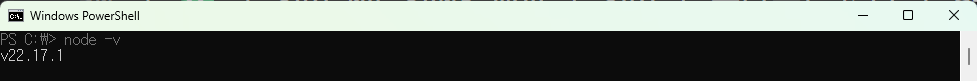
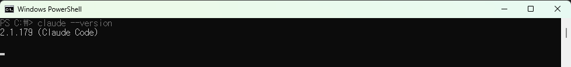
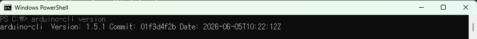
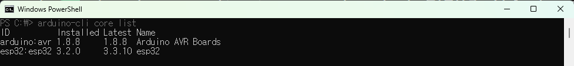
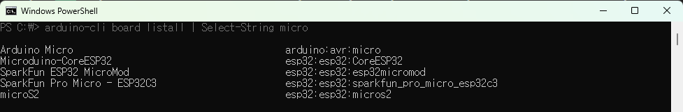
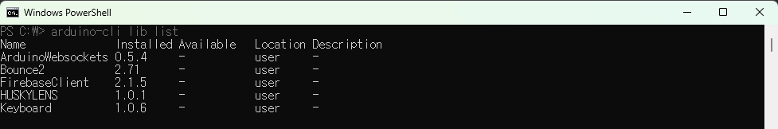
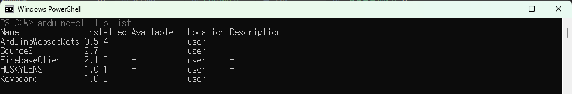
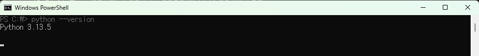

AI랑 같이 펌웨어 짜고, 내가 만든 키링으로 리듬게임까지 — 22장 DIY 코딩 교재
0장 이 책에서 만드는 것
1부 — 바이브코딩 첫걸음 - 1장 왜 바이브코딩인가 - 2장 Claude Code 설치하고 길들이기 - 3장 Claude Code 200% 활용 — 스킬·CLAUDE.md·서브에이전트
2부 — 키링이 살아나는 순간 - 4장 키링 보드 처음 만나기 - 5장 arduino-cli 설정과 첫 업로드 - 6장 버튼 하나로 키보드 흉내내기 - 7장 채터링과의 전쟁 — 디바운싱 - 8장 4버튼 키링 완성 — 리듬게임용 입력 장치
3부 — 내 손으로 만드는 리듬게임 - 9장 pygame 설치와 첫 창 띄우기 - 10장 노트가 떨어지는 화면 만들기 - 11장 차트 파일과 음악 동기화 - 12장 키링으로 노트 치기 — 판정 시스템 - 13장 캘리브레이션과 지연 보정 - 14장 내 노래로 차트 만들기 - 15장 게임 꾸미기와 발표 시연 모드
4부 — 조이스틱으로 확장 - 16장 조이스틱 핀맵과 데드존 처리 - 17장 게임패드 모드로 변신 - 18장 조이스틱으로 우주선 슈팅 - 19장 한 단계 더, 적과 폭발 효과
5부 — 마무리와 자랑 - 20장 키링 케이스와 마감 - 21장 깃허브에 공개하고 README 쓰기 - 22장 발표·다음 단계 로드맵
부록 - 부록 A — 프롬프트 템플릿 모음 - 부록 B — 명령어 치트시트
이 장에서 배우는 것
이 책은 하나의 프로젝트를 처음부터 끝까지 직접 만드는 올인원 실무 교재입니다. 혼자서 책만 따라 해도 "내가 올린 펌웨어(하드웨어를 동작시키는 소형 프로그램)로 동작하는 키링 게임기로, 내가 만든 리듬게임을 플레이하고 깃허브에 자랑까지" 할 수 있도록 다섯 개의 부로 구성되어 있습니다.
시작에 필요한 환경은 가볍습니다. PC(윈도우 또는 맥) 한 대, 인터넷 연결, 무료 계정 몇 개 정도면 첫걸음을 뗄 수 있고, 키링 보드를 포함한 자세한 준비물은 1장과 4장에서 안내합니다.
하드웨어는 이미 PCB(부품이 다 붙은 완성 기판)로 만들어져 옵니다. 그래서 납땜(부품을 기판에 녹여 붙이는 작업)도, 브레드보드(부품을 꽂아 시험하는 판)도, 점퍼선(부품끼리 잇는 전선)도 직접 다룰 일이 없습니다. 박스를 열어 USB에 꽂고, 여러분이 할 일은 단 하나 — AI와 함께 코드를 짜는 것입니다.
이 키링 보드는 수업 키트로 받았거나 직접 구매한 것 모두 괜찮습니다. 어떤 보드인지, 어디서 어떻게 구하고 USB로 연결하는지는 1장과 4장에서 자세히 안내하니, 지금 손에 없어도 걱정하지 마세요.
그림 0.1 — 이 책의 다섯 부와 최종 결과물
[일러스트: 1~5부 아이콘을 가로로 나열하고, 화살표가 모여 가운데 완성된 4버튼 키링 게임기로 수렴하는 개념도. 각 부 아이콘 — ①도구 ②키링 ③리듬게임 ④조이스틱 ⑤발표.]
각 부에서 만드는 결과물을 미리 봅니다. 음악·영상 같은 별도 콘텐츠 파트는 없지만, 대신 하나의 키링이 리듬게임 컨트롤러 → 게임패드 → 자기 작품으로 진화하는 과정 전체를 손으로 따라갑니다. 같은 보드를 여러 모습으로 변신시키는 경험이 이 책의 핵심입니다.
바이브코딩(AI에게 만들고 싶은 것을 말로 설명해 코드를 받아내는 코딩 방식)을 처음 경험합니다. AI 페어 코딩 도구인 Claude Code를 설치하고, AI에게 의도를 말해 결과물을 받는 감각이 1부의 결과물입니다. 이 도구를 매번 다시 설명하지 않게 내 프로젝트에 맞게 길들이는 법은 3장에서 배웁니다.
PCB 키링 보드에 펌웨어를 올립니다. USB 인식 → 버튼 입력 → 디바운싱(버튼 하나를 한 번으로 깔끔하게 인식시키는 처리) → 4버튼 완성까지, 이미 나와 있는 인기 리듬게임 OSU!(우리가 만드는 게임이 아니라 PC에 설치해 즐기는 기존 게임)에서 바로 쓸 수 있는 4버튼 컨트롤러가 결과물입니다. 즉 2부에서는 남이 만든 게임을 내 키링으로 조작합니다. 이 과정은 4장부터 자세히 다룹니다.
이번에는 OSU! 같은 기존 게임을 쓰는 게 아니라 리듬게임 자체를 내가 직접 만듭니다. pygame(파이썬으로 게임을 만드는 도구)으로 노트가 떨어지는 화면, 차트·음악 동기화, 판정 시스템, 캘리브레이션, 발표 시연 모드까지 만듭니다. 내가 만들고 내 키링으로 직접 플레이하는 리듬게임 한 편이 결과물입니다.
그림 0.2 — 최종 결과물: 완성된 4버튼 키링 게임기
촬영 지시: 완성된 키링(케이스 + 4개 키캡)을 흰 A4 배경 정중앙. 데스크 램프 왼쪽 위 45도, 카메라 약 30도 부감. USB 케이블이 오른쪽으로 살짝 빠지게.
같은 키링에 게임패드 모드를 추가하고, 조이스틱으로 즐기는 우주선 슈팅 게임을 만듭니다. 데드존(조이스틱을 살짝 건드렸을 때 떨림을 무시하는 중앙 영역) 처리와 폭발 효과까지 붙입니다.
케이스를 입혀 가방에 매달고, 깃허브에 공개하고, README(프로젝트를 소개하는 설명 문서)와 5분 발표 자료까지 정리합니다. 포트폴리오로 꺼낼 수 있는 완성 작품이 결과물입니다.
다섯 부는 따로 노는 것이 아니라 하나로 이어집니다. 1부에서 익힌 AI 협업 감각으로 2부의 펌웨어를 짜고, 그 키링이 3부 리듬게임의 입력 장치가 되며, 4부에서 같은 보드를 게임패드로 변신시키고, 5부에서 전부를 묶어 공개합니다. 즉 도구 → 펌웨어(하드웨어) → 게임(소프트웨어) → 확장 → 발표로 이어지는 완결된 제작 경험입니다.
그림 0.3 — 다섯 부가 어떻게 이어지는가
[일러스트: 1부→2부→3부→4부→5부 흐름도. 2부 키링 보드가 3부 게임의 입력으로 연결되는 화살표 강조. 부별 색상 구분.]
| 부 | 주제 | 만드는 것 | 장 |
|---|---|---|---|
| 1부 | 바이브코딩 첫걸음 | AI 페어 코딩 도구·첫 프롬프트 | 1~3장 |
| 2부 | 키링이 살아나는 순간 | PCB 펌웨어 → 4버튼 컨트롤러 | 4~8장 |
| 3부 | 내 손으로 만드는 리듬게임 | pygame 리듬게임 한 편 | 9~15장 |
| 4부 | 조이스틱으로 확장 | 게임패드 + 우주선 슈팅 게임 | 16~19장 |
| 5부 | 마무리와 자랑 | 케이스·깃허브·발표 자료 | 20~22장 |
표 0.1 — 다섯 부 구성
💡 팁
부 단위로는 어느 정도 독립적이라, 관심 있는 부의 주제를 먼저 들춰 봐도 좋습니다. 다만 처음 만드는 분이라면 순서대로 따라가길 권합니다 — 앞 부에서 만든 결과물이 다음 부의 재료가 되기 때문입니다. 특히 1부 전체와 2부 앞부분(1~5장)은 이후 모든 장의 기반이므로 순서대로 진행하세요.
본문에는 학습을 돕는 박스가 반복해서 나옵니다. 아이콘의 뜻은 다음과 같습니다.
| 아이콘 | 의미 |
|---|---|
| 💡 팁 | 알아두면 좋은 요령·배경 |
| ⚠️ 주의 | 실수하기 쉬운 부분·안전 경고 |
| 📌 핵심 요약 | 장의 끝에서 핵심 정리 |
| 🤔 생각해보기 | 스스로 점검하는 질문 |
| 🔎 더 찾아보기 | 추가 학습 키워드·링크 |
| ✏️ 연습 문제 | 이해도 확인 문제 |
표 0.2 — 본문 아이콘
그림 0.4 — 한 장을 따라가는 네 단계 흐름
[도식: ①준비물·설치 → ②읽으며 따라하기 → ③핵심요약·연습문제로 확인 → ④막히면 더 찾아보기. 네 단계를 화살표로 잇고, ④에서 막히면 ②로 되돌아가는 점선 화살표 추가.]
⚠️ 주의 — 5분 룰
5분 동안 해결이 안 되면, 에러 메시지나 막히는 부분을 그대로 복사해 AI에게 붙여 넣으세요. 혼자 그 이상 씨름하는 것은 학습이 아니라 소모입니다. 현업 개발자도 똑같이 합니다.
📌 핵심 요약
🤔 생각해보기
Q1. 다섯 부 중 가장 먼저 만들어 보고 싶은 결과물은 무엇인가요? 그 이유는?
✍️ ________
✍️ ________
🔎 더 찾아보기
바이브코딩 — AI에게 의도를 말해 코드를 받는 코딩 방식HID 장치 — PC가 드라이버 없이 인식하는 키보드·게임패드 표준펌웨어 — 하드웨어를 동작시키는 소형 프로그램이 책이 줄곧 쓰는 도구 세 가지의 공식 문서입니다. 막히거나 더 깊이 알고 싶을 때 가장 먼저 펼쳐 볼 곳이에요. 지금 다 읽을 필요는 없고, 해당 도구가 나오는 장에서 곁에 두면 됩니다.
다음 장 예고 — 1장에서는 왜 지금이 바이브코딩으로 시작하기 가장 좋은 때인지, 그리고 이 책이 만들 키링 게임기가 정확히 무엇인지 살펴봅니다. 박스를 꺼내 두세요.
이 장에서 배우는 것
1학년 2학기, C++ 수업 첫 시간이었습니다. 교수님이 칠판에 포인터 개념을 써 내려가는 순간 교실 절반쯤이 조용히 포기하는 분위기가 느껴졌습니다. 저도 그 절반이었습니다. "이건 나랑 다른 세계 얘기다"라는 생각에 교재를 덮고, 그 학기는 어영부영 마무리했습니다.
그 뒤로도 한동안 코딩은 "영재들의 언어"처럼 느껴졌습니다. 유튜브 강의를 틀어도 10분이면 어딘가에서 길을 잃었고, 에러 메시지는 늘 해독 불가능한 외계어였습니다. 그렇게 2년을 보냈습니다.
전환점은 2024년 봄이었습니다. AI 보조 코딩 도구가 폭발적으로 발전하던 시기였는데, 반 친구가 "그냥 하고 싶은 걸 AI한테 말해봐"라고 권유했습니다. 반신반의하며 "버튼을 누르면 소리가 나는 프로그램 만들어줘"라고 입력했더니 — 동작하는 코드가 나왔습니다. 처음으로 무언가가 화면에서 실제로 움직였습니다. 그 순간의 기분은 지금도 기억합니다.
그로부터 6개월 후, AI와 대화하듯 코딩하는 방법으로 첫 번째 키링 게임기를 완성했습니다. 코딩 전공자도 아니고, 알고리즘 시험을 통과한 사람도 아닙니다. 그냥 "이렇게 하고 싶어"를 말할 줄 알았을 뿐입니다.
이 책은 그 경험에서 출발합니다. 코딩이 무서웠던 사람, 한 번쯤 포기했던 사람, 아직도 "나는 코딩 체질이 아닌가봐"라고 생각하는 사람을 위해 썼습니다. 2024~2025년 사이 AI 페어 코딩이 판을 완전히 바꾸었습니다. 이제 혼자 구문 외우고 알고리즘 짜야 하는 시대가 아닙니다. AI와 함께라면, 의도를 말할 줄 아는 것만으로도 충분히 시작할 수 있습니다.
그림 1.1 — "저자가 처음 만든 키링(좌)과 5번째 시도(우)"
촬영 지시: 두 키링을 흰 종이 위 좌우 나란히. 좌측 어설픈 프로토타입(테이프 자국, 비뚤어진 키캡), 우측 깔끔한 완성. 같은 조명, 같은 거리.
완성도가 다릅니다. 하지만 둘 다 같은 손으로 만들었습니다. 첫 번째와 다섯 번째 사이의 거리는 재능이 아니라 반복과 AI와의 대화였습니다.
2024년 2월, 테슬라 AI 책임자 출신으로 유명한 안드레이 카르파티(Andrej Karpathy)가 X(구 트위터)에 짧은 글을 올렸습니다.
그림 1.2 — "Karpathy의 'vibe coding' 원조 트윗(2024)"
[스크린샷: X 트윗 원문 캡처. 한국어 번역은 캡션 아래 별도 박스]
트윗 원문:
"There's a new kind of coding I call 'vibe coding', where you fully give in to the vibes, embrace exponentials, and forget that the code even exists."
번역하면 이렇습니다: "저는 '바이브코딩'이라고 부르는 새로운 코딩 방식이 있는데, 분위기에 완전히 몸을 맡기고, 코드가 존재한다는 사실 자체를 잊어버리는 방식입니다."
조금 시적이지만 핵심은 분명합니다. AI에게 하고 싶은 것을 말하면, AI가 코드를 써 주고, 나는 그 결과를 확인하고 방향을 잡는다. 문법을 외우거나 알고리즘을 설계하는 데 에너지를 쓰는 것이 아니라, "무엇을 만들고 싶은지"에 집중하는 방식입니다.
그림 1.3 — "전통적 코딩 학습 vs 바이브코딩 (개념도)"
[일러스트: 좌측 두꺼운 책 더미 위에 깔린 사람 / 우측 노트북 앞 AI 말풍선과 대화하는 사람. 좌→우 진화 화살표]
전통적인 코딩 학습 경로를 떠올려 보세요. 보통 이렇게 생겼습니다.
이 순서대로 가면 실제 무언가가 동작하기까지 몇 달이 걸립니다. 중간에 흥미를 잃는 사람이 많은 이유이기도 합니다.
바이브코딩은 순서가 반대입니다.
문법을 몰라도 첫날부터 뭔가가 화면에 나타납니다. 이해는 만들면서 자연스럽게 따라옵니다. 이 책 전체가 그 순서로 설계되어 있습니다.
⚠️ 주의 — 바이브코딩이 만능은 아니다
AI가 틀린 코드를 내놓을 때도 있고, 의도를 정확히 전달하지 못하면 엉뚱한 결과가 나옵니다. 그래서 이 책은 AI와 대화하는 법, 에러를 읽는 법, 결과를 검증하는 법을 함께 배웁니다. 이 책이 가르치는 것은 코드 암기가 아니라 AI와 협업하는 감각입니다.
같은 배경 설명을 매번 다시 적는 게 번거롭다면, 그 반복을 스킬·CLAUDE.md로 한 번에 정착시키는 법을 3장에서 배웁니다. 지금은 "AI에게 말하면 코드가 나온다"는 감각만 챙겨 가도 충분합니다.
이 책을 끝내면 여러분의 가방에 직접 만든 게임기가 달려 있습니다 (그림 1.4 참조). 손바닥보다 작고, 키링 고리에 달 수 있고, PC에 꽂으면 곧바로 쓸 수 있는 4버튼 장치입니다.
그림 1.4 — "완성된 4버튼 키링 게임기 — 이 책의 최종 목적지"
촬영 지시: 완성된 키링(투명 또는 컬러 케이스 + 4개 키캡)을 책상 위 흰 A4 용지 배경에 정중앙 배치. 데스크 램프 왼쪽 위 45도. 카메라는 약 30도 위에서 내려다보는 각도. USB 케이블이 화면 오른쪽으로 살짝 빠져나가게.
완성된 키링 게임기의 핵심 기능 다섯 가지입니다.
① USB 자동 인식 — PC에 꽂으면 드라이버 설치 없이 HID2 장치로 바로 인식됩니다. 플러그 앤 플레이입니다. 실제로 인식된 화면은 잠시 뒤 그림 1.5에서 확인합니다.
② 4버튼 입력 — 기계식 키캡 4개가 각각 독립적으로 작동합니다. 누르는 느낌도, 사운드도 선택할 수 있습니다.
③ 채터링 없는 안정적 입력 — 빠른 손가락에도 눌림이 튀지 않도록 펌웨어1에서 디바운싱을 처리합니다. 여러분이 직접 값을 조절하게 됩니다.
④ OSU! 공식 지원 — 세계적으로 인기 있는 리듬 게임 OSU!에서 별도 설정 없이 바로 사용 가능합니다 (그림 1.6 참조). 대회용으로도 쓸 수 있는 수준입니다.
⑤ 키캡 커스터마이징 — 키캡 색상, 각인, 펌웨어 키매핑까지 전부 코드로 바꿀 수 있습니다. 같은 보드라도 내 것만의 설정이 가능합니다.
그림 1.5 — "키링이 노트북에 USB로 인식된 모습"
촬영 지시: 노트북 옆모습. USB 포트에 키링 직결 또는 케이블 연결. 화면에는 장치 관리자/시스템 정보 창. 자연광, 그림자 최소.
그림 1.6 — "키링 게임기로 OSU!를 플레이하는 장면"
촬영 지시: 모니터에 OSU! 플레이 중. 책상 앞쪽 키링 위에 손가락 4개. 모니터 광원만, 셔터 0.5초 이내로 키캡 LED가 살짝 번지게.
이게 8주 후 여러분의 결과물입니다. 하드웨어는 이미 PCB4로 완성되어 있으니, 여러분이 할 일은 단 하나 — 펌웨어와 게임 로직을 코드로 짜는 것입니다. 납땜도, 브레드보드도, 점퍼선도 없습니다. 박스를 열어 USB에 꽂고, 코딩 시작입니다.
여기서 끝이 아닙니다. 4부에서는 같은 키링에 게임패드 모드를 추가해 우주선 슈팅 게임까지 직접 만들고, 5부에서는 케이스를 입혀 가방에 매달고 깃허브에 공개하고 5분 발표 자료까지 정리합니다. 즉 "한 번 만들고 끝"이 아니라 하나의 키링이 리듬게임 컨트롤러 → 게임패드 → 자기 작품으로 진화하는 과정 전체를 손으로 따라가는 책입니다. 같은 보드를 4번 다른 모습으로 변신시키는 경험은 의외로 흔치 않습니다.
그림 1.7 — "하나의 키링, 네 번의 변신 (진화 단계도)"
[일러스트: 같은 보드 아이콘이 좌→우로 4단계 진화. ① 기본 키링(펌웨어) → ② OSU! 리듬 컨트롤러 → ③ 게임패드(우주선 슈팅) → ④ 케이스 입힌 내 작품. 각 단계 사이 화살표, 보드는 동일하고 역할·외형만 바뀜을 강조]
이 책의 약속은 단순합니다. 마지막 페이지를 덮을 때, 여러분의 손에는 (1) 동작하는 키링 한 대, (2) 깃허브에 공개된 코드 저장소, (3) 5분 발표용 슬라이드, (4) 친구가 따라 만들 수 있는 README가 모두 들어 있습니다. 학기말 발표든 인턴 면접이든 동아리 데모데이든, 어디 가서든 "이거 제가 만든 거예요"라고 꺼낼 수 있는 결과물입니다.
이 책은 5개 부, 22개 챕터로 구성되어 있습니다. 그중 핵심 경험(1~17장)은 8주 안에 완성됩니다. 주당 3~5시간 투자를 기준으로 짠 일정입니다.
먼저 부 단위 큰 그림부터 잡아 봅시다. 1부(1~3장) 환경과 도구, 2부(4~8장) 키링 펌웨어 핵심, 3부(9~15장) 리듬 게임, 4부(16~19장) 게임패드 모드와 우주선 슈팅 확장, 5부(20~22장) 케이스·깃허브 공개·5분 발표 마무리입니다. 앞에서 만든 하나의 키링이 부를 지날수록 모습을 바꾼다고 생각하면 됩니다.
아래 8주 로드맵은 이 22개 챕터를 주차에 배치한 것입니다.
그림 1.8 — "8주 핵심 학습 로드맵 (1~17장)"
[일러스트: 1~8주 타임라인, 주차별 결과물 아이콘]
| 주차 | 챕터 | 핵심 주제 | 이 주말이 끝나면… |
|---|---|---|---|
| 1주 | 1~2장 | 환경 세팅 + 도구 준비 | 개발 환경과 코드 에이전트를 갖춘다 |
| 2주 | 3장 | Claude Code + AI 협업 기초 | AI에게 첫 코드를 받아 실행한다 |
| 3주 | 4~5장 | 보드 연결·인식 + 첫 펌웨어 | 키링이 PC에서 HID로 인식되고 4버튼이 동작한다 |
| 4주 | 6~7장 | 키매핑 + USB HID 커스텀 | 원하는 키로 자유롭게 바꾼다 |
| 5주 | 8장 | 펌웨어 완성 + 플래싱5 | 키링이 실전 사용 가능한 상태가 된다 |
| 6주 | 9~11장 | OSU! 연동 + 리듬 게임 기초 | OSU!에서 나의 키링으로 첫 플레이 |
| 7주 | 12~15장 | 게임 로직 확장 + 점수 시스템 | 간단한 리듬 게임이 PC에서 돌아간다 |
| 8주 | 16~17장 | 게임패드 입문 + 핵심 마무리 | 키링이 "내 작품"으로 정리되기 시작 |
| 핵심 이후 (선택) | 18~22장 | 우주선 슈팅 확장 · 케이스 · 깃허브 공개 · 5분 발표 | 포트폴리오용 README와 데모 영상 완성 |
표 주석 — 위 1~8주(1~17장)는 "주당 3~5시간"으로 완주 가능한 핵심 경로입니다. 마지막 행 18~22장은 8주 안의 한 주가 아니라, 핵심 키링이 완성된 뒤 자기 속도로 이어가는 선택 구간입니다. 한 주로 몰아넣지 말고 한 챕터씩 여유 있게 진행하세요.
부 구성과 주차를 합쳐 보면 흐름이 한눈에 들어옵니다. 1~3장(1부)은 도구와 환경을 다지고, 4~8장(2부)은 키링 펌웨어의 핵심을 완성합니다. 9~15장(3부)에서 리듬 게임으로 확장하고, 16~19장(4부)에서 게임패드 모드와 우주선 슈팅을 붙입니다. 마지막 20~22장(5부)에서 케이스·깃허브 공개·5분 발표로 마무리합니다. 챕터 간 의존 관계는 그림 1.9을 참고하세요.
그림 1.9 — "이 책의 챕터 의존 관계도"
[일러스트: 1→2→3→4→5 일렬, 5장 이후 9·16으로 분기. 부별 색상 구분]
순서를 꼭 지켜야 하는 구간은 1~5장뿐입니다. 이 다섯 장이 이후 모든 챕터의 기반이 되므로 반드시 차례대로 진행하세요. 5장을 끝낸 뒤부터는 그림 1.9의 분기 지점 이후이므로, 관심 있는 챕터(예: 리듬 게임 9장, 게임패드 16장)로 자유롭게 건너뛰어도 됩니다.
키링 게임기 하드웨어는 이미 PCB로 다 만들어져서 옵니다. 납땜도 없고, 브레드보드도 없고, 점퍼선도 없습니다. 박스에서 꺼내 USB에 꽂으면 그게 전부입니다. 여러분은 프로그램만 신경 쓰면 됩니다.
그림 1.10 — "PCB 키링 보드 클로즈업"
촬영 지시: 키링 보드 단독 매크로. 칩 각인 또는 보드 라벨이 또렷이. 동전 옆에 두어 크기 비교. 흰 배경.
| 품목 | 설명 | 예상 가격 |
|---|---|---|
| PCB 키링 완제품 | 4버튼 + MCU3 일체형 보드. 조립 불필요. | 15,000~20,000원 |
| USB-C 케이블 | 데이터 통신 지원 제품 (충전 전용 X) | 3,000~5,000원 |
그림 1.11 — "준비물 한눈에 보기"
촬영 지시: 흰 A4 위 top-down. 좌측부터 PCB 키링 보드 / USB-C 케이블 / 노트북(프레임 일부) 순서로 배치. 자연광. (브레드보드/점퍼선/스위치 등 빼라 — PCB 완제품이므로)
⚠️ 주의 — 충전 전용 케이블
USB-C 케이블은 꼭 데이터 통신 지원 제품인지 확인하세요. 충전 전용 케이블로는 PC가 키링을 인식하지 못합니다. 마트 문구 코너에 파는 1,000원짜리는 대부분 충전 전용입니다.
그럼 이 보드는 어디서 구할까요? 수업이나 워크숍에서 키트로 받았다면 그대로 쓰면 됩니다 — 따로 살 필요가 없습니다. 직접 사야 한다면, 국내 오픈마켓이나 아두이노 전문 쇼핑몰에서 Pro Micro ATmega32U4 보드(우리 키링과 같은 칩을 쓰는 보드)나 키링 게임기 키트로 검색해 보세요. 4장에서 다루듯 우리 보드는 Pro Micro 호환이라, 이 키워드로 찾은 제품 대부분이 그대로 동작합니다. 구매할 때는 택트(택타일) 버튼이 포함됐는지, USB-C 케이블이 함께 오는지 상품 설명에서 확인하면 됩니다(케이블은 위 주의 박스대로 데이터 통신용인지도 함께). 어떤 보드를 골랐든 박스를 열어 USB에 꽂는 첫 연결과 인식 확인은 4장에서 차근차근 안내하니, 지금 손에 없어도 괜찮습니다.
| 도구 | 용도 | 필수 여부 · 가격 |
|---|---|---|
| Claude Code | AI 코드 에이전트 (이 책의 기준 도구) | 필수 · 최소 Pro $17~20/월 (또는 무료 대안 opencode·codex·antigravity cli) |
| arduino-cli7 | 펌웨어 컴파일 + 플래시 | 필수 · 무료 |
| Python + pygame6 | 3·4부 리듬·슈팅 게임 제작 | 필수 · 무료 |
설치와 사용법은 모두 2장 이후에서 안내합니다. 여기서는 "코드 에이전트 하나(Claude Code 또는 무료 대안) + arduino-cli + Python"이 핵심 3종이라는 것만 기억하면 됩니다. Antigravity 같은 다른 에디터는 취향에 따라 곁들일 수 있지만 필수는 아닙니다.
그림 1.12 — "필수 소프트웨어 3종 로고"
[일러스트: Claude Code(코드 에이전트) / arduino-cli / Python(pygame) 공식 로고 가로 나열]
| 항목 | 비용 (Claude Code Pro 기준) | 비용 (무료 대안 에이전트) |
|---|---|---|
| AI 코드 에이전트 | $17~20/월 (Claude Code Pro) | 0원 (opencode·codex·antigravity cli 중 하나) |
| arduino-cli | 무료 | 무료 |
| Python + pygame | 무료 | 무료 |
| 하드웨어(PCB+케이블) | 1.5~2만원 | 1.5~2만원 |
| 합계 | 약 5~7만원 | 약 1.5~2만원 |
표 1.1 — 도구별 비용 정리표
총 예산 합계: 약 5~7만원 (Claude Code Pro 첫 달 포함). Claude Code는 최소 Pro 구독이 필요해서 무료 플랜으로는 사실상 쓸 수 없습니다. 돈을 안 쓰고 싶다면 무료 대안 에이전트(opencode·codex·antigravity cli 중 하나)를 쓰면 하드웨어 값 약 1.5~2만원만으로도 출발할 수 있습니다. 이 책의 프롬프트 방식은 어느 에이전트든 동일하게 적용됩니다. 다만 이 책은 Claude Code를 기준으로 설명하며, 응답 품질과 일관성 면에서는 Claude Code Pro를 권장합니다. Claude Code는 구독이므로 책을 끝낸 뒤 필요에 따라 해지하거나 유지하면 됩니다.
각 절은 독립적인 작은 미션입니다. "1.3까지 읽었다"가 아니라 "1.3에서 USB 인식까지 직접 확인했다"가 진도입니다. 읽기만 하면 아무것도 남지 않습니다. 반드시 코드를 직접 실행해 보세요.
이 책 전체에 걸쳐 적용되는 단 하나의 학습 원칙입니다.
💡 5분 룰
5분 동안 해결이 안 되면 에러 메시지 또는 막히는 부분을 그대로 AI에게 붙여 넣으세요.
5분은 깊이 고민하기에 충분한 시간입니다. 하지만 그 이상 혼자 씨름하는 것은 학습이 아니라 소모입니다. 에러 메시지를 이해하려 할 필요도 없습니다. 그냥 복사해서 Claude Code 창에 붙여 넣고 "이 에러 왜 나는 거야?"라고 물어보세요. 그 다음 단계를 알려줄 겁니다.
그림 1.13 — "5분 룰 — 막히면 AI에게 그대로 복붙"
[일러스트: 시계가 5분, 에러 메시지가 AI 채팅창으로 드래그되는 시각화]
처음에는 이게 "치팅"처럼 느껴질 수 있습니다. 그렇지 않습니다. 실제 현업 개발자들도 에러가 나면 검색하고, 동료에게 묻고, AI에게 붙여 넣습니다. 스스로 모든 것을 해결해야 한다는 생각은 버려도 됩니다. 중요한 것은 결과물을 완성하는 과정에서 무언가를 배우는 것입니다.
이 책은 모든 코드를 여러분이 AI와 함께 직접 만들어 가는 방식입니다. 그래서 본문만 따라가도 챕터마다 내 손으로 만든 파일이 차곡차곡 쌓입니다 — 별도로 무언가를 내려받지 않아도 진행에 전혀 지장이 없습니다.
비교용 코드 저장소가 따로 준비되면, 내가 만든 것과 대조해 보거나 막혔을 때 참고용으로 받아 볼 수 있습니다(선택 사항입니다). 다만 핵심은 내가 만든 결과물이라는 점을 기억하세요. 정답지를 베끼는 책이 아니라, 내 손으로 만들어 보는 책입니다.
그림 1.14 — "직접 만든 챕터별 결과물 폴더 구조"
[스크린샷: 내 PC의 프로젝트 폴더. ch01/, ch02/ 식으로 챕터별 작업 결과가 쌓인 모습]
📌 핵심 요약
🤔 생각해보기
Q1. 예전에 코딩을 포기했거나 어렵게 느낀 경험이 있나요? 그때 가장 막막했던 지점은 무엇이었나요?
✍️ ________
✍️ ________
Q2. 이 키링 게임기로 가장 먼저 해보고 싶은 것은 무엇인가요?
✍️ ________
✏️ 연습 문제
Pro Micro ATmega32U4 보드 또는 키링 키트)로 어떤 제품들이 있는지 한 번 찾아보세요.🔎 더 찾아보기
Andrej Karpathy — 바이브코딩이라는 말을 처음 쓴 인물. 그의 다른 글도 입문자에게 좋음디바운싱(debouncing) — 버튼이 한 번 눌릴 때 신호가 미세하게 떨려 여러 번처럼 잡히는 현상을 코드로 걸러 주는 기법OSU! — 이 키링이 바로 지원하는 무료 리듬 게임다음 장 예고 — 다음 장에서는 환경을 세팅하고, 키링을 처음으로 PC에 연결합니다. Claude Code를 설치하고 첫 프롬프트를 던지는 것부터 시작합니다. 박스를 꺼내 두세요.
이 장에서 배우는 것
AI 코딩 도구를 처음 접하는 분들이 가장 먼저 떠올리는 건 ChatGPT 같은 웹 채팅 인터페이스입니다. 질문을 입력하면 코드를 보여 주고, 그걸 복사해서 직접 파일에 붙여 넣는 방식이죠. 편하긴 하지만, 한 단계가 항상 사람 손을 거칩니다.
Claude Code는 그 한 단계를 없앤 도구입니다.
핵심 차이 한 줄 요약: ChatGPT는 코드를 '보여 주고', Claude Code는 파일을 '직접 만집니다'.
그림 2.1 — "Claude Code 공식 페이지 첫 화면"
[스크린샷: claude.com/claude-code 랜딩 페이지 + 브라우저 주소창 강조]
구체적으로 어떻게 다른지 살펴봅시다. Claude Code는 터미널(명령 프롬프트 창)에서 실행됩니다. 실행하면 현재 디렉토리 안에 있는 파일들을 읽어서 프로젝트 전체 맥락을 파악합니다. 그 상태에서 "이 파일의 버튼 핀 번호를 D3으로 바꿔줘"라고 말하면, Claude Code가 직접 파일을 열어 수정하고 저장합니다. 복사-붙여넣기가 없습니다.
그림 2.2 — "ChatGPT 웹 채팅 vs Claude Code 터미널 — 파일 수정 가능 여부 차이"
[일러스트: 좌측 웹 채팅창에서 코드 복붙하는 과정 / 우측 터미널이 직접 파일을 수정. 중간에 화살표로 차이 강조]
이 외에도 Claude Code에는 몇 가지 특징이 있습니다.
요약하면, Claude Code는 터미널 기반의 AI 페어 코더입니다. 여러분 옆에 앉아서 실제로 키보드를 두드려 주는 개발 파트너라고 생각하면 됩니다.
Claude Code를 쓰려면 Anthropic 계정이 필요합니다. 가입부터 시작해 봅시다.
1단계: claude.ai 접속 및 회원가입
브라우저에서 claude.ai로 접속합니다. 구글 계정 또는 이메일로 빠르게 가입할 수 있습니다. 가입 자체는 무료입니다.
2단계: 플랜 선택
가입 후 상단 메뉴에서 플랜을 확인할 수 있습니다 (그림 2.3 참조). 플랜은 크게 세 가지입니다.
claude.com/pricing에서 확인하세요.그림 2.3 — "Claude Pro 플랜 결제 화면"
[스크린샷: 플랜 비교 페이지 Free / Pro / Max 가격 및 기능 비교]
학생이라면? 현재 Anthropic이 공식적인 학생 할인을 운영하지는 않습니다. Claude Code는 Pro 이상 구독이 필요해서 Free 플랜으로는 따라갈 수 없습니다. 돈을 안 쓰고 싶다면 아래 "무료로 하려면" 박스의 무료 대안 에이전트(opencode·codex·antigravity cli) 중 하나를 쓰면 됩니다. 이 책의 프롬프트 방식(AI에게 말로 시켜 코드를 받는 흐름)은 어느 에이전트를 쓰든 그대로 적용됩니다.
💡 무료로 하려면
Claude Code는 최소 Pro($17~20/월)가 필요합니다. 돈을 안 쓰고 싶다면 아래 무료 AI 코딩 에이전트 중 하나를 쓰면 됩니다.
설치·사용법은 각 공식 문서/사이트를 검색해 확인하세요. 이 책은 Claude Code를 기준으로 설명하지만, 프롬프트를 던져 코드를 받는 방식은 어느 에이전트든 동일하므로 본문을 그대로 따라가면 됩니다.
결제는 신용/체크카드로 진행합니다. 구독 후 언제든지 취소할 수 있습니다.
Claude Code는 Node.js 위에서 돌아갑니다. 설치 전에 내 컴퓨터에 Node.js가 있는지, 있다면 버전이 18 이상인지 먼저 확인해야 합니다.
💡 팁 — 터미널 여는 법부터
이 책에서 "터미널을 열고"라는 말이 자주 나옵니다. 처음이라면 이렇게 엽니다.
Command(⌘) + 스페이스로 스팟라이트를 열고 terminal이라고 입력한 뒤 Enter. 또는 응용 프로그램 → 유틸리티 → 터미널.까만(또는 흰) 창에 깜빡이는 커서가 보이면 준비 완료입니다. 여기에 명령어를 한 줄씩 입력하게 됩니다.
버전 확인
위에서 연 터미널에 다음을 입력하고 Enter를 누릅니다.
node -v
결과가 v20.x.x 또는 v18.x.x 형태로 나오면 통과입니다 (그림 2.4 참조).

node: command not found 또는 v16 이하가 나오면 새로 설치해야 합니다.
윈도우에 Node.js 설치하기
nodejs.org에 접속하면 첫 화면에 LTS 버전 다운로드 버튼이 크게 보입니다 (그림 2.5 참조). LTS(Long-Term Support)는 안정성이 검증된 버전입니다. 이것을 내려받아 설치 마법사를 따라가면 됩니다.
⚠️ 주의 — Add to PATH 체크
설치 중 "Add to PATH" 옵션이 체크되어 있는지 꼭 확인하세요. 이 옵션을 놓치면 설치는 됐는데도 터미널이 node 명령을 찾지 못하는 상황이 생깁니다.
그림 2.5 — "Node.js 공식 사이트 LTS 다운로드 버튼"
[스크린샷: nodejs.org 첫 화면, LTS 버튼에 빨간 박스]
Mac에 Node.js 설치하기
Mac에서는 Homebrew를 쓰면 편합니다. Homebrew는 Mac용 프로그램을 명령어 한 줄로 설치해 주는 "앱 설치 도우미"입니다. 터미널에 아래를 붙여넣어 Homebrew부터 설치합니다(이미 있다면 건너뜁니다).
/bin/bash -c "$(curl -fsSL https://raw.githubusercontent.com/Homebrew/install/HEAD/install.sh)"
Homebrew가 준비됐으면 Node.js를 설치합니다.
brew install node
Homebrew를 쓰고 싶지 않다면 nodejs.org에서 macOS용 패키지(.pkg)를 내려받아 설치 마법사를 따라가도 됩니다.
⚠️ 주의 — 설치했으면 터미널을 새로 여세요
Node.js를 새로 설치한 직후에는 열려 있던 터미널 창을 닫고 새로 열어야 합니다. 설치 프로그램이 등록한 PATH 정보가 기존 창에는 아직 반영되지 않아서, 새 창에서 node -v를 해야 버전이 제대로 보입니다. (윈도우든 Mac이든 똑같습니다.)
설치가 끝났으면 새 터미널 창을 열고 다시 node -v를 실행해서 버전을 확인합니다. v18 이상이 보이면 다음 단계로 넘어갈 준비가 된 겁니다.
irm 또는 winget)이제 Claude Code를 설치할 차례입니다. 윈도우 기준으로 두 가지 방법을 소개합니다.
관리자 PowerShell을 엽니다. 시작 버튼을 우클릭하면 "Windows PowerShell(관리자)" 또는 "터미널(관리자)" 메뉴가 보입니다 (그림 2.6 참조). 반드시 관리자 권한으로 실행해야 합니다.
그림 2.6 — "PowerShell 관리자 모드로 실행하기"
[스크린샷: 시작 버튼 우클릭 컨텍스트 메뉴 → "Windows PowerShell(관리자)" 항목 강조]
관리자 PowerShell이 열리면 아래 한 줄을 붙여넣고 Enter를 누릅니다. (창을 열 때 "이 앱이 기기를 변경하도록 허용하시겠어요?"라는 UAC 팝업이 뜨면 "예"를 누르세요. 또 스크립트 실행이 막히면 Set-ExecutionPolicy -Scope Process Bypass를 먼저 입력하고 다시 시도합니다.)
irm https://claude.ai/install.ps1 | iex
설치 진행률이 화면에 표시됩니다 (그림 2.7 참조). 완료까지 1~2분 정도 기다립니다.
그림 2.7 — "Claude Code 설치 스크립트 실행 직후"
[스크린샷: PowerShell에
irm ... | iex실행 후 설치 진행 화면]
Windows 패키지 관리자 winget을 선호한다면 아래 명령어를 사용합니다.
winget install anthropic.claude-code
그림 2.8 — "winget으로 설치하는 대안"
[스크린샷:
winget install anthropic.claude-code실행 결과]
설치가 끝났다면 새 PowerShell 창을 열고 버전을 확인합니다.
claude --version
버전 번호가 출력되면 성공입니다 (출력 예시는 2.6절 그림 2.14에서 볼 수 있습니다). 만약 command not found 에러가 나온다면 2.6절의 PATH 설정으로 넘어가세요.
Mac 사용자는 두 가지 방법 중 하나로 설치합니다.
brew install claude-code
그림 2.9 — "Mac Homebrew 설치 명령"
[스크린샷: Terminal에서
brew install claude-code실행 화면]
Homebrew가 없다면 터미널에서 공식 스크립트를 실행합니다.
curl -fsSL https://claude.ai/install.sh | sh
설치 후 claude --version으로 확인합니다. command not found가 나오면 2.6절을 참고하세요.
설치 직후 처음으로 claude를 실행하면 로그인 인증을 한 번 거칩니다 (그림 2.10 참조). 이 인증 절차는 윈도우·Mac이 완전히 똑같으므로, 설명이 흩어지지 않도록 2.7절 "첫 실행 — 로그인 인증"에 한곳으로 모아 두었습니다. Mac 사용자도 설치가 끝났으면 그대로 2.7절로 넘어가면 됩니다.
그림 2.10 — "Claude Code 첫 실행 — 로그인 인증 흐름"
[스크린샷: 브라우저 인증 안내 메시지 + 터미널 토큰 입력 프롬프트]
claude: command not found💡 팁 — 이미 잘 되면 건너뛰세요
이 절은 문제가 생긴 분만 위한 해결 절입니다. 앞에서 claude --version이 버전 번호를 잘 출력했다면 PATH는 정상이니, 이 절은 건너뛰고 곧장 2.7 첫 프롬프트로 가세요. command not found 에러를 만난 분만 아래를 따라오면 됩니다.
설치했는데 claude 명령어를 입력하면 아무 반응이 없거나 "command not found" 에러가 뜨는 경우가 있습니다 (그림 2.11 참조). 이것은 Claude Code 실행 파일의 위치가 시스템 PATH에 등록되지 않아서 생기는 문제입니다. 학생들이 가장 많이 막히는 지점이니 차근차근 따라해 봅시다.
그림 2.11 — "
claude: command not found에러"[스크린샷: 터미널에
claude입력 후 "command not found" 또는 "명령을 찾을 수 없습니다" 에러]
PATH가 뭔가요? 운영체제가 명령어를 실행할 때 어디서 찾아야 하는지 알려주는 디렉토리 목록입니다. Claude Code는 기본적으로 아래 경로에 설치됩니다.
%USERPROFILE%\.local\bin (예: C:\Users\홍길동\.local\bin)~/.local/bin (예: /Users/홍길동/.local/bin)이 경로가 PATH에 없으면 운영체제가 claude를 찾지 못합니다.
Path를 선택하고 "편집(E)..." 클릭%USERPROFILE%\.local\bin 입력그림 2.12 — "윈도우 환경변수 PATH 추가 화면"
[스크린샷: 시스템 속성 → 환경변수 → Path 편집 화면.
%USERPROFILE%\.local\bin항목에 빨간 박스]
설정 후 PowerShell을 완전히 닫고 새로 열어야 변경 사항이 적용됩니다.
터미널에서 사용하는 셸을 확인합니다. Mac은 기본이 zsh이므로 ~/.zshrc 파일을 편집합니다.
echo 'export PATH="$HOME/.local/bin:$PATH"' >> ~/.zshrc
source ~/.zshrc
bash를 사용한다면 ~/.bashrc에 똑같이 추가합니다.
그림 2.13 — "Mac/Linux .zshrc에 PATH 추가하기"
[스크린샷:
.zshrc파일 하단에export PATH="$HOME/.local/bin:$PATH"줄 추가된 모습]
새 터미널을 열고 다시 claude --version을 입력합니다 (그림 2.14 참조). 버전 번호가 보이면 PATH 문제가 해결된 겁니다.

그래도 해결이 안 된다면? 설치 경로가 달라졌을 수 있습니다.where claude(윈도우) 또는 which claude(Mac)를 실행해서 실제 설치된 경로를 확인하고, 그 경로를 PATH에 추가해 보세요.
드디어 Claude Code와 첫 대화를 나눌 시간입니다. 빈 폴더 하나를 만들고 그 안에서 시작해 봅시다.
준비
바탕화면이나 원하는 위치에 my-first-project 같은 빈 폴더를 만듭니다. 터미널에서 그 폴더로 이동합니다. 폴더를 이동할 때 쓰는 명령이 cd(change directory)입니다.
# 윈도우 예시 — '내이름'은 본인 윈도우 사용자 이름으로 바꾸세요
cd C:\Users\내이름\Desktop\my-first-project
# Mac 예시 — ~ 는 '내 홈 폴더'를 뜻하는 기호입니다
cd ~/Desktop/my-first-project
💡 팁 — 경로가 헷갈리면
내이름 부분에 뭘 넣을지 모르겠다면, 윈도우 탐색기(또는 Mac Finder)에서 그 폴더를 연 뒤 주소창의 경로를 그대로 복사해 cd 뒤에 붙여넣으면 됩니다. 경로에 한글이나 공백이 있으면 따옴표로 감싸세요: cd "C:\사용자\내 폴더".
Claude Code 실행
claude
첫 실행 — 로그인 인증 (윈도우·Mac 공통)
설치 후 처음으로 claude를 실행하면, 운영체제와 상관없이 로그인 인증을 한 번 거칩니다. 윈도우든 Mac이든 순서가 똑같습니다. (인증은 어느 폴더에서 실행하든 상관없이 처음 한 번만 하면 됩니다. 위에서 만든 빈 폴더 안일 필요는 없고, 계정에 한 번 묶이면 그다음부터는 어떤 폴더에서 claude를 켜도 바로 실행됩니다.)
그림 2.15 — "첫 실행 — 로그인 방식 선택 메뉴"
[스크린샷: 터미널에 뜬 계정 종류 선택 메뉴 — "구독(Claude.ai) 계정"과 "Anthropic Console(API 키)" 두 항목. 위쪽(구독 계정) 항목에 빨간 박스] 2. 브라우저 로그인. 선택하면 브라우저 창이 자동으로 열립니다. 2.2절에서 가입한 그 Claude 계정으로 로그인하고, 화면의 "승인(Authorize)" 버튼을 누르면 인증 코드(토큰)가 만들어집니다. 3. 토큰 붙여넣기. 그 코드를 복사(브라우저에서 코드를 드래그한 뒤
Ctrl+C, Mac은Cmd+C)한 다음 터미널로 돌아와 붙여넣습니다. PowerShell에서는 마우스 우클릭 한 번이 곧 붙여넣기입니다.Ctrl+V도 됩니다. Mac 터미널은Cmd+V로 붙여넣습니다. 붙여넣은 코드는 보안상 화면에 안 보일 수도 있는데 정상이니, 그대로 Enter를 누르면 됩니다.
이 과정은 최초 한 번만 하면 되고, 다음부터는 claude만 치면 바로 실행됩니다.
인증이 끝나면 처음 실행 시 권한 승인 모드를 선택하는 화면이 나옵니다 (그림 2.16 참조).
그림 2.16 — "권한 승인 모드 선택 화면"
[스크린샷: "Always allow" / "Ask each time" 선택 메뉴]
두 가지 옵션이 있습니다.
처음에는 Ask each time으로 시작하세요. Claude Code가 무슨 행동을 하려는지 눈으로 확인하면서 배우는 것이 훨씬 도움이 됩니다.
첫 대화
프롬프트가 나타나면 아래처럼 입력해 보세요.
안녕, 너 뭐 할 수 있어?
그림 2.17 — "첫 대화 — '안녕, 너 뭐 할 수 있어?'"
[스크린샷: 터미널에 사용자 입력 + AI 응답 화면. 현재 디렉토리 경로가 보이게]
Claude Code가 자신이 할 수 있는 일들을 설명할 겁니다. 파일 생성, 코드 수정, 에러 디버깅, 명령어 실행 등 다양한 기능을 소개할 거예요. 응답을 읽어 보면서 "이게 진짜 내 폴더를 보고 있는 AI구나"라는 감각을 느껴 보세요.
대화를 끝내려면 프롬프트에 /exit를 입력하고 Enter를 누르세요. 이게 가장 깔끔한 종료 방법입니다. (Ctrl+C는 원래 '입력 중인 줄 취소'라서 한 번 누르면 종료가 안 되고, 빈 프롬프트에서 연달아 두 번 눌러야 빠져나옵니다. 보조 수단으로만 쓰세요.)
Claude Code를 설치했다고 해서 끝이 아닙니다. AI를 진짜 내 개발 파트너로 활용하려면 어떻게 말을 거는지가 결과를 크게 바꿉니다. 이번 절에서는 좋은 프롬프트를 만드는 4가지 요소를 소개합니다.
표 2.1 — 나쁜 프롬프트 vs 좋은 프롬프트
| 나쁜 프롬프트 | 좋은 프롬프트 |
|---|---|
| "코드 짜줘" | "Arduino Pro Micro D2 핀에 풀업 저항 방식으로 연결된 버튼을 누르면 'a' 키를 전송하는 코드를 짜줘. Keyboard.h 사용하고, 주석은 한글로 달아줘" |
위 표에서 두 프롬프트의 결과가 얼마나 다를지 상상해 보세요. 왼쪽은 AI가 어떤 환경인지, 어떤 동작을 원하는지, 어떤 라이브러리를 쓰는지 아무것도 모릅니다. 오른쪽은 AI가 바로 동작 가능한 코드를 쓸 수 있을 만큼 충분한 정보를 담고 있습니다.
좋은 프롬프트에는 공통적으로 4가지 요소가 담겨 있습니다.
그림 2.18 — "프롬프트 4요소 시각화"
[일러스트: '맥락' / '목표' / '제약' / '출력 형식' 4개 박스가 화살표로 모여 하나의 프롬프트가 완성되는 다이어그램]
AI는 내 프로젝트를 처음 보는 사람입니다. 배경 설명을 먼저 주세요.
"Arduino Pro Micro 기반 키링 게임기 펌웨어를 작성 중이야."
원하는 결과를 동사로 명확하게 표현합니다.
"D2 핀에 연결된 버튼을 누르면 HID 키보드로 'a' 키를 전송하는 함수를 만들어줘."
사용해야 하는 라이브러리, 피해야 하는 방식, 코드 스타일 등을 알려줍니다.
"Keyboard.h 라이브러리 사용. 풀업 입력 방식. 디바운스 처리 포함."
코드 주석 언어, 파일명, 설명 포함 여부 등을 지정합니다.
"주석은 한글로 달아줘. 설명 없이 코드만 줘."
4요소를 하나로 합치면 이렇게 됩니다.
Arduino Pro Micro 기반 키링 게임기 펌웨어야.
D2 핀에 풀업 방식으로 연결된 버튼을 누르면 HID 키보드로 'a' 키를 전송하는 함수를 만들어줘.
Keyboard.h 사용, 디바운스 처리 포함. 주석은 한글로, 코드만 줘.
이 프롬프트가 6장에서 직접 사용하는 실제 키링 게임기 펌웨어의 출발점이 됩니다. 지금은 형식만 기억해 두세요. 본격적인 실습은 6장에서 만납니다.
| 요소 | 질문 | 예시 |
|---|---|---|
| 맥락 | 지금 무엇을 만들고 있나? | "Arduino Pro Micro 키링 게임기" |
| 목표 | 무엇을 원하나? | "D2 버튼 누르면 'a' 전송" |
| 제약 | 어떤 조건이 있나? | "Keyboard.h, 풀업, 디바운스" |
| 출력 형식 | 어떻게 받고 싶나? | "한글 주석, 코드만" |
프롬프트를 잘 쓰는 것은 코드를 잘 짜는 것만큼 중요한 기술입니다. 처음부터 완벽할 필요 없습니다. 대화를 주고받으면서 다듬어 가는 과정 자체가 바이브코딩의 핵심이니까요.
📌 핵심 요약
node -v로 먼저 확인. 설치는 윈도우(irm 또는 winget), Mac(Homebrew 또는 curl).claude: command not found가 뜨면 십중팔구 PATH 문제 — 설치 경로(~/.local/bin)를 PATH에 추가하면 해결된다.🤔 생각해보기
Q1. ChatGPT 같은 웹 채팅과 Claude Code의 가장 큰 차이는 무엇이고, 그 차이가 왜 코딩에 편할까요?
✍️ ________
✍️ ________
Q2. 좋은 프롬프트의 4요소를 떠올리며, 내가 만들고 싶은 무언가를 한 문장 프롬프트로 적어 보세요.
✍️ ________
✍️ ________
✏️ 연습 문제
node -v를 실행해 내 컴퓨터의 Node.js 버전을 확인하고, 18 이상인지 적어 보세요.claude --version으로 버전을 확인하세요.claude를 실행하고 "안녕, 너 뭐 할 수 있어?"를 입력해 응답을 받아 보세요.🔎 더 찾아보기
LTS (Long-Term Support) — 장기 지원 버전. 안정성이 검증돼 업무·학습용으로 권장되는 릴리스winget — 윈도우 기본 패키지 관리자. 명령 한 줄로 프로그램을 설치·업데이트Homebrew — Mac에서 가장 널리 쓰는 패키지 관리자. brew install로 도구를 설치PATH — 운영체제가 명령어 실행 파일을 찾을 디렉토리 목록. 설치 후 명령이 안 먹힐 때 1순위 점검 대상설치는 끝났습니다. 다음 3장에서는 이 Claude Code를 내 프로젝트에 맞게 길들이는 법(CLAUDE.md·슬래시 명령·서브에이전트)을 배웁니다.
다음 장 예고 — 새 프로그램을 깔지 않고, 2장에서 설치한 그 Claude Code를 내 키링 프로젝트에 맞게 길들입니다. 매번 같은 배경 설명을 반복하지 않게 해 주는 CLAUDE.md, 자주 하는 작업을
/이름하나로 끝내는 슬래시 명령, 큰일을 나눠 맡기는 서브에이전트까지 — 한 번 만들어 두고 4장 이후 내내 우려먹는 투자를 합니다.
이 장에서 배우는 것
/업로드 같은 나만의 명령)로 정착시켜 재사용하기/init·/clear·/compact 같은 알아두면 좋은 내장 명령과 막혔을 때 볼 공식 문서 위치🔎 먼저 알아두기 — 이 장은 '도구를 한 번 더 길들이는' 장입니다
2장에서 Claude Code를 설치하고 첫 대화를 나눴습니다. 이번 장은 새 프로그램을 깔지 않습니다. 대신 이미 깐 Claude Code를 내 프로젝트에 맞게 길들이는 법을 배웁니다. 여기서 만든 CLAUDE.md·스킬은 4장 이후 키링·게임을 만드는 내내 계속 써먹습니다. 그러니 이 장은 "한 번 만들어 두고 평생 우려먹는" 투자라고 생각하세요.
2장에서 우리는 "좋은 프롬프트의 4요소(맥락·목표·제약·출력 형식)"를 배웠습니다. 프롬프트만 잘 써도 AI는 꽤 잘 따라옵니다. 그런데 실제로 프로젝트를 며칠 진행하다 보면 똑같은 불편이 반복됩니다.
매번 새 대화를 열 때마다 "내 보드는 Arduino Pro Micro(ATmega32U4)야", "버튼은 D2~D5에 달려 있어", "코드는 한글 주석을 붙여 줘" 같은 같은 배경 설명을 처음부터 다시 적어야 합니다(그림 3.1 참조). 한두 번이면 괜찮지만, 20장 넘게 가는 책 한 권 분량이면 이 반복이 꽤 큰 낭비입니다. 게다가 설명을 빠뜨리면 AI가 엉뚱한 보드를 가정하고 코드를 만들어 버립니다.
Claude Code에는 이 반복을 없애 주는 장치가 마련돼 있습니다. 크게 네 가지입니다.
| 장치 | 한 줄 요약 | 이 장의 절 |
|---|---|---|
| CLAUDE.md | 프로젝트의 배경·규칙을 적어 두면 AI가 매번 자동으로 기억 | 3.2 |
| 슬래시 명령·스킬 | 자주 쓰는 프롬프트를 /이름 한 번으로 재사용 |
3.3 |
| 서브에이전트 | 큰 작업을 전문 보조 AI에게 나눠 맡김 | 3.4 |
| 내장 명령 | /init·/clear·/compact 등 기본 제공 도구 |
3.5 |
그림 3.1 — "매번 다시 설명 vs 한 번 길들이기"
[일러스트: 왼쪽 — 새 대화마다 똑같은 배경 설명을 반복해 적는 지친 모습 / 오른쪽 — CLAUDE.md 한 장이 모든 대화에 자동으로 적용되는 모습]
CLAUDE.md는 프로젝트 폴더에 두는 메모장입니다. Claude Code는 대화를 시작할 때 이 파일을 자동으로 읽어 들입니다. 그래서 여기에 한 번 적어 두면, 다음부터는 굳이 프롬프트에 다시 쓰지 않아도 AI가 알아서 참고합니다.
세 위치에 둘 수 있고, 아래에서 위 순서로 모두 합쳐져 적용됩니다.
| 위치 | 경로 | 쓰임 |
|---|---|---|
| 프로젝트 | ./CLAUDE.md 또는 ./.claude/CLAUDE.md |
이 프로젝트에만 적용(팀과 공유, git 커밋) |
| 개인 전역 | ~/.claude/CLAUDE.md |
내 모든 프로젝트에 적용 |
| 개인 프로젝트 | ./CLAUDE.local.md |
이 프로젝트의 나만 쓰는 메모(.gitignore에 넣어 공유 제외) |
그림 3.2 — "CLAUDE.md가 놓이는 세 위치"
[도식: 전역(~/.claude/CLAUDE.md) → 프로젝트(./CLAUDE.md) → 로컬(CLAUDE.local.md) 세 층이 합쳐져 한 대화에 적용되는 그림]
/init직접 빈 파일부터 만들 필요는 없습니다. 프로젝트 폴더에서 Claude Code를 실행한 뒤 다음 명령을 입력하면, AI가 폴더를 훑어보고 CLAUDE.md 초안을 자동으로 만들어 줍니다.
/init
/init이 만들어 준 초안을 열어, 우리 키링 프로젝트에 맞게 다듬습니다. 직접 손으로 다 쓰기보다, "이러이러한 내용을 CLAUDE.md에 넣어 줘"라고 프롬프트로 요청해도 됩니다.
💡 Claude Code에 이렇게 프롬프트하세요 — 키링용 CLAUDE.md 채우기
``` [맥락] Arduino Pro Micro(ATmega32U4) 기반 PCB 키링 + pygame 리듬게임을 만드는 프로젝트입니다. 펌웨어는 arduino-cli로 컴파일·업로드하고, 게임은 파이썬 pygame으로 만듭니다.
[목표] 이 프로젝트의 CLAUDE.md에 들어갈 내용을 정리해 주세요.
[제약] - 보드: Arduino Pro Micro (ATmega32U4), FQBN은 arduino:avr:micro - 버튼은 D2~D5, INPUT_PULLUP 사용 - 빌드/업로드는 arduino-cli (Arduino IDE 쓰지 않음) - 코드에는 한글 주석을 붙일 것 - 답변은 항상 한국어로 - 완성 코드를 통째로 주기보다, 핵심을 설명하고 확인 포인트를 같이 알려줄 것
[출력 형식] CLAUDE.md에 그대로 붙여 넣을 수 있는 마크다운으로 출력해 주세요. ```
이렇게 받은 CLAUDE.md는 대략 다음과 같은 모습입니다(그림 3.3 참조). 코드가 아니라 사람이 읽는 메모라는 점에 주목하세요.
# 키링 게임기 프로젝트
## 하드웨어
- 보드: Arduino Pro Micro (ATmega32U4)
- FQBN: arduino:avr:micro
- 버튼: D2~D5 (INPUT_PULLUP, 외부 저항 없음)
## 빌드 / 업로드
- arduino-cli 사용 (Arduino IDE 쓰지 않음)
- 컴파일: arduino-cli compile --fqbn arduino:avr:micro <스케치>
- 업로드: arduino-cli upload -p <포트> --fqbn arduino:avr:micro <스케치>
## 게임
- 파이썬 pygame, 가상환경(venv) 사용
## 대화 규칙
- 항상 한국어로 답한다
- 코드에는 한글 주석을 붙인다
- 완성 코드를 통째로 주기보다 핵심을 설명하고 확인 포인트를 같이 준다
이제 새 대화를 열고 "버튼 하나 눌러 'a' 키 보내는 스케치 만들어 줘"라고만 해도, AI는 CLAUDE.md를 읽고 알아서 Pro Micro·D2·INPUT_PULLUP·한글 주석을 적용합니다. 매번 설명할 필요가 사라진 것입니다.
💡 팁 — 작성한 내용을 바로 확인·수정하려면 /memory
/memory 명령을 입력하면 현재 적용 중인 CLAUDE.md들을 열어 보고 바로 편집할 수 있습니다. 프로젝트를 진행하다 "AI가 자꾸 같은 실수를 한다" 싶으면, 그 교정 내용을 CLAUDE.md에 한 줄 추가해 두세요. 다음부터 반복되지 않습니다.
그림 3.3 — "키링 프로젝트용 CLAUDE.md 예시"
[스크린샷: 편집기에 열린 CLAUDE.md — 하드웨어·빌드·대화 규칙 섹션]
/이름 하나로CLAUDE.md가 "배경지식"을 정착시킨다면, 슬래시 명령(스킬)은 "자주 하는 작업"을 정착시킵니다. 예를 들어 키링 펌웨어를 고칠 때마다 우리는 거의 같은 일을 합니다 — 컴파일하고, 포트를 찾아 업로드하고, 시리얼 모니터로 확인. 이걸 매번 길게 치는 대신 /업로드 한 번으로 끝내고 싶을 때 쓰는 것이 슬래시 명령입니다.
만드는 법은 간단합니다. 프로젝트 폴더 안 .claude/commands/ 폴더에 마크다운 파일을 하나 두면, 파일 이름이 곧 명령 이름이 됩니다.
.claude/commands/업로드.md → /업로드~/.claude/commands/업로드.md (모든 프로젝트에서 사용)⚠️ 명령 이름은 영문이 안전합니다
명령 파일 이름(=명령 이름)에는 한글도 쓸 수 있지만, 환경에 따라 한글 이름이 잘 인식되지 않을 수 있습니다. 인식이 안 되면 파일 이름을 upload.md처럼 영문으로 바꾸세요(그러면 /upload로 부릅니다). 이 책에서는 친근하게 /업로드라고 부르지만, 잘 안 될 때 영문으로 바꿔도 똑같이 동작합니다.
이 파일도 직접 손으로 만들기보다 Claude Code에게 부탁하면 됩니다.
💡 Claude Code에 이렇게 프롬프트하세요 — /업로드 스킬 만들기
``` [맥락] arduino-cli로 Arduino Pro Micro(arduino:avr:micro) 펌웨어를 다루는 프로젝트입니다.
[목표] 펌웨어를 컴파일하고, 연결된 보드 포트를 찾아 업로드한 뒤, 결과를 알려 주는 작업을 /업로드 라는 슬래시 명령으로 만들어 주세요.
[제약] - .claude/commands/업로드.md 파일로 만들 것 - 인자로 스케치 폴더 경로를 받을 것 ($ARGUMENTS) - arduino-cli board list로 포트를 먼저 확인할 것 - 위험한 동작은 하지 말 것(설치/삭제 금지)
[출력 형식] .claude/commands/업로드.md 파일 내용을 마크다운으로 출력해 주세요. ```
받은 파일은 대략 이런 모습입니다. 맨 위 --- 사이는 프런트매터(이 명령의 설정), 그 아래는 AI가 실행할 지시입니다.
---
description: 펌웨어를 컴파일하고 보드에 업로드합니다
---
다음을 순서대로 수행해 주세요.
1. `arduino-cli board list`로 연결된 보드 포트를 확인한다.
2. `arduino-cli compile --fqbn arduino:avr:micro $ARGUMENTS`로 컴파일한다.
3. 성공하면 위에서 찾은 포트로 `arduino-cli upload`를 실행한다.
4. 결과(성공/실패와 포트)를 한국어로 보고한다.
이제 대화에서 /업로드 firmware/button_a처럼 입력하면, AI가 이 절차를 그대로 밟습니다(그림 3.4 참조). 길게 설명할 필요 없이 명령 하나면 끝입니다.
조금 더 큰 작업이나, 여러 보조 파일이 함께 필요한 경우에는 스킬(Skill)이라는 형태를 씁니다. .claude/skills/<이름>/SKILL.md 폴더 구조로 만들며, 프런트매터에 name과 description을 적습니다. 스킬의 장점은 설명만 평소에 읽혀 있다가, 실제로 필요할 때만 전체 내용이 로드된다는 점입니다(그만큼 토큰을 아낍니다). 입문 단계에서는 "간단한 반복은 .claude/commands/의 슬래시 명령, 더 크고 재사용도 높은 작업은 .claude/skills/의 스킬" 정도로 구분하면 충분합니다.
그림 3.4 — "
/업로드슬래시 명령 실행 모습"[스크린샷: 대화창에 /업로드 입력 후, 보드 포트 확인→컴파일→업로드 단계가 진행되는 출력]
그림 3.5 — "
.claude폴더의 구성"[도식: 프로젝트 루트 아래
.claude/—commands/(슬래시 명령),skills/(스킬),agents/(서브에이전트),CLAUDE.md로 갈라지는 트리]
작업이 커지면, 한 대화 안에서 모든 걸 처리하기보다 전문 보조 AI에게 일부를 떼어 맡기는 편이 깔끔합니다. 이 보조 AI를 서브에이전트(subagent)라고 합니다. 서브에이전트는 자기만의 대화 공간(컨텍스트)을 따로 가져서, 곁가지 작업이 메인 대화를 어지럽히지 않습니다(그림 3.6 참조).
예를 들어 "방금 만든 게임 코드를 보안·버그 관점에서 검토해 줘" 같은 일은, 검토 전용 서브에이전트에게 맡기면 메인 대화는 게임 만들기에 집중한 채로 유지됩니다.
서브에이전트도 파일로 정의합니다. .claude/agents/<이름>.md (나만 쓰려면 ~/.claude/agents/). 프런트매터에 name·description·tools(쓸 수 있는 도구)·model 등을 적습니다. 만들고 관리하는 가장 쉬운 방법은 내장 명령입니다.
/agents
/agents를 입력하면 서브에이전트를 만들고·고치고·지우는 메뉴가 열립니다(그림 3.7 참조). 메뉴를 따라 "코드 리뷰 전용 에이전트"를 하나 만들어 두면, 이후 "이 코드 리뷰해 줘"라고 할 때 Claude Code가 알아서 그 에이전트에게 넘깁니다.
🔎 한 걸음 더 — 병렬로 여러 명에게
독립적인 작업이 여러 개라면 서브에이전트를 동시에 여러 개 돌릴 수 있습니다. "적 캐릭터 만들기 / 효과음 넣기 / 점수판 그리기"처럼 서로 안 겹치는 일을 나눠 맡기면 시간을 아낍니다. 입문 단계에서는 한 번에 하나씩으로 충분하지만, "이렇게 나눠 시킬 수도 있구나" 정도만 기억해 두세요.
그림 3.6 — "메인 대화 vs 서브에이전트"
[일러스트: 가운데 메인 대화, 옆으로 분리된 별도 말풍선(검토 전용 서브에이전트)이 자기 컨텍스트에서 따로 일하는 모습]
그림 3.7 — "
/agents메뉴에서 서브에이전트 만들기"[스크린샷: /agents 입력 후 뜬 서브에이전트 관리 메뉴]
위에서 쓴 /init·/memory·/agents 말고도, Claude Code에는 처음부터 들어 있는 유용한 슬래시 명령이 많습니다. 자주 쓰는 것만 추렸습니다(그림 3.8 참조).
| 명령 | 하는 일 | 언제 쓰나 |
|---|---|---|
/init |
프로젝트를 훑어 CLAUDE.md 초안 생성 | 프로젝트 시작할 때 한 번 |
/memory |
CLAUDE.md 열람·편집 | AI에게 새 규칙을 가르칠 때 |
/clear |
대화를 깨끗이 비우고 새로 시작 | 주제가 완전히 바뀔 때 |
/compact |
긴 대화를 요약해 컨텍스트 정리 | 대화가 너무 길어졌을 때 |
/context |
컨텍스트 사용량 확인 | "왜 느려졌지?" 싶을 때 |
/agents |
서브에이전트 관리 | 전용 보조 AI를 만들 때 |
/model |
사용할 AI 모델 변경 | 더 똑똑하게/빠르게 바꿀 때 |
/help |
사용 가능한 명령 전체 보기 | 뭐가 있는지 모를 때 |
💡 팁 — /clear와 /compact를 구분하세요
/clear는 대화를 완전히 비웁니다(CLAUDE.md 같은 프로젝트 기억은 유지됩니다). 새로운 주제로 넘어갈 때 좋습니다. /compact는 지금까지의 대화를 요약해서 압축합니다 — 맥락은 이어 가되 길이만 줄이고 싶을 때 씁니다. 한 챕터를 끝내고 다음 챕터로 넘어갈 때 /clear, 한 챕터 안에서 대화가 길어졌을 때 /compact — 이렇게 기억하면 쉽습니다.
그림 3.8 — "
/help로 본 내장 명령 목록"[스크린샷: /help 실행 결과 — 슬래시 명령들이 나열된 화면]
배운 것을 한 번에 해 봅니다. 빈 프로젝트 폴더 하나를 만들고, CLAUDE.md와 /업로드 스킬을 갖춰 두면 4장 이후가 한결 수월해집니다.
1단계 — 프로젝트 폴더 만들고 Claude Code 열기
바탕화면 등에 keyring-game 폴더를 만들고, 그 안에서 Claude Code를 실행합니다(여는 법이 기억나지 않으면 2장을 잠깐 참고하세요).
2단계 — /init으로 CLAUDE.md 초안 만들기
/init
폴더가 비어 있어도 됩니다. 초안이 만들어지면, 3.2의 프롬프트를 참고해 키링 프로젝트 정보(보드·핀맵·빌드 방식·대화 규칙)를 채워 달라고 요청합니다.
3단계 — /업로드 스킬 만들기
3.3의 프롬프트로 .claude/commands/업로드.md를 만들어 달라고 요청합니다. 받은 파일을 한 번 읽어 보고, 위험한 명령(삭제·설치)이 섞여 있지 않은지 눈으로 확인합니다. 단, arduino-cli는 5장에서 설치하므로 지금은 스킬 파일만 만들어 두고, 실제로 /업로드를 실행하는 건 5장부터입니다(지금 실행하면 아직 arduino-cli가 없어 동작하지 않습니다).
4단계 — .gitignore 한 줄 준비
나중에 21장에서 깃허브에 올릴 때를 대비해, AI가 만드는 캐시 폴더를 미리 제외해 둡니다. "다음 내용으로 .gitignore를 만들어 줘"라고 요청하세요.
CLAUDE.local.md
__pycache__/
build/
.DS_Store
Thumbs.db
이렇게 폴더 하나를 길들여 두면, 다음 장부터는 "내 보드가 뭐였지"를 다시 설명하지 않아도 됩니다. AI가 이미 알고 있으니까요(그림 3.9 참조).
그림 3.9 — "길들이기를 마친
keyring-game폴더"[스크린샷: 파일 트리에 CLAUDE.md, .claude/commands/업로드.md, .gitignore가 보이는 모습]
여기까지 오셨다면, 이 책을 진행하는 데 필요한 소프트웨어 도구 준비가 모두 끝났습니다. 1장에서는 왜 바이브코딩인지 이야기했고, 2장에서는 Claude Code를 설치해 첫 대화를 나눴으며, 이번 3장에서는 그 Claude Code를 내 프로젝트에 맞게 길들였습니다. 이제 매번 같은 설명을 반복하지 않아도 되고, 자주 하는 작업은 명령 하나로 끝낼 수 있습니다.
📌 핵심 요약
/init으로 초안을 만들고 /memory로 다듬는다..claude/commands/이름.md)은 자주 하는 작업을 /이름 하나로 재사용한다. 더 크고 재사용도 높은 작업은 .claude/skills/의 스킬로..claude/agents/ 또는 /agents)는 곁가지 작업을 전문 보조 AI에게 맡겨 메인 대화를 깨끗이 유지한다. 독립 작업은 병렬로도 가능./clear(비우기)와 /compact(요약 압축)의 차이를 기억하자.🤔 생각해보기
Q1. 지금 만드는 프로젝트에서, 매번 AI에게 반복해서 설명하게 되는 배경이 있다면 무엇인가요? CLAUDE.md에 넣을 항목 세 가지를 적어 보세요.
✍️ ________
✍️ ________
Q2. /업로드 말고, 내가 자주 반복할 것 같은 작업을 하나 떠올려 슬래시 명령으로 만든다면 어떤 이름과 절차가 좋을까요?
✍️ ________
✍️ ________
✏️ 연습 문제
keyring-game 폴더를 만들고 /init으로 CLAUDE.md 초안을 생성한 뒤, 3.2의 프롬프트로 키링 프로젝트 정보를 채워 보세요..claude/commands/에 나만의 슬래시 명령을 하나 만들어 보세요(예: /정리 — 임시 파일을 지우고 폴더를 정돈)./help를 입력해 어떤 내장 명령이 있는지 한 번 훑어보고, 처음 보는 명령 두 개를 골라 무엇을 하는지 /help나 공식 문서로 확인해 보세요.🔎 더 찾아보기
프런트매터(front matter) — 마크다운 파일 맨 위 --- 사이에 적는 설정 영역컨텍스트(context) — AI가 한 번에 기억하는 대화 분량. /compact로 압축, /clear로 비움서브에이전트(subagent) — 자기만의 컨텍스트를 가진 보조 AI다음 장 예고 — 이제 진짜가 시작됩니다. 4장부터는 PCB 키링이 등장합니다. 손바닥 반만 한 키링 기판에 어떤 부품이 들어 있는지, 어떻게 컴퓨터와 연결하는지, 그리고 처음으로 불빛이 켜지는 순간을 경험하게 됩니다. 지금까지 화면 안에서만 이루어지던 작업이 손에 잡히는 물건과 연결되는 순간입니다. 노트북 옆에 USB 케이블 하나를 꺼내 두세요. 다음 장부터 씁니다.
그림 3.10 — "도구 준비 완료 — 다음은 키링이다"
촬영 지시: 노트북 화면에 Claude Code 세션과 열린 CLAUDE.md. 노트북 옆에 PCB 키링 + USB 케이블. 데스크 램프 자연광, 약간 위에서 비스듬히.
이 장에서 배우는 것
택배 상자를 열면 제일 먼저 눈에 들어오는 건 엄지손톱보다 조금 큰 초록색(또는 검정색) PCB 한 장입니다. 무게는 5g도 안 됩니다. 그런데 이 얇은 판 위에는 완전한 컴퓨터가 들어 있습니다. 바로 ATmega32U4 칩 덕분입니다 (그림 4.2 참조).
그림 4.1 — "PCB 키링 보드 — 동전과 크기 비교"
촬영 지시: 흰 A4 용지 위 top-down 앵글. 키링 PCB 보드와 500원 동전을 나란히 배치. 자연광 또는 데스크 램프. 그림자 최소화.
ATmega32U4는 마이크로컨트롤러라는 종류의 칩입니다. 쉽게 말하면, CPU·메모리·I/O가 손톱만 한 패키지 하나에 전부 들어간 "올인원 소형 컴퓨터"입니다. 아두이노 레오나르도(Arduino Leonardo)와 프로 마이크로(Pro Micro)에도 똑같이 쓰이는 칩이라, 인터넷에 예제가 매우 많습니다. 이 보드들이 쓰는 함수·문법은 Arduino 공식 언어 레퍼런스에 정리돼 있으니, 5장부터 코드를 보다가 모르는 함수가 나오면 여기서 찾아보면 됩니다.
그림 4.2 — "ATmega32U4 칩 클로즈업"
촬영 지시: PCB 메인 칩을 매크로 렌즈로 클로즈업. "ATMEGA32U4" 각인이 뚜렷이 보이도록 핀트 맞춤. 흰 배경.
이 칩의 핵심 사양을 간단히 보면 (표 4.1 참조):
| 항목 | 사양 |
|---|---|
| 칩 | ATmega32U4 |
| 플래시 메모리 | 32KB |
| SRAM | 2.5KB |
| 클럭 | 16MHz |
| USB | Full Speed 내장 |
| 가격 | 1.5~2만원 |
표 4.1 — ATmega32U4 주요 사양
"플래시가 32KB밖에 안 되면 너무 작은 거 아닌가?"라고 걱정할 수 있습니다. 걱정 마세요. 우리가 만들 4버튼 HID 펌웨어는 컴파일하면 5~8KB 안팎입니다. 공간은 넉넉합니다. 이 작은 칩 하나가 오늘 우리 키링의 두뇌가 됩니다.
💡 팁 — 인터넷 예제를 그대로 갖다 쓸 수 있다
ATmega32U4는 Arduino Leonardo와 Pro Micro에 들어가는 바로 그 칩입니다. 그래서 "Leonardo"나 "Pro Micro"로 검색한 예제 코드가 우리 키링에서도 대부분 그대로 동작합니다. 막힐 때 검색 키워드로 이 보드 이름들을 기억해 두세요.
"HID"라는 단어가 낯설 수 있습니다. Human Interface Device, 즉 사람이 컴퓨터에 명령을 전달하는 장치를 가리키는 표준 규격입니다. 마우스·키보드·게임패드가 모두 HID입니다. 이 규격의 가장 좋은 점은 드라이버를 따로 깔 필요가 없다는 것입니다. 윈도우·macOS·Linux 모두 USB에서 HID 신호를 감지하면 "아, 이거 입력 장치네?" 하고 자동으로 알아서 받아들입니다. USB로 꽂는 순간 운영체제가 먼저 악수를 청하고, 우리 키링이 "저는 키보드입니다"라고 답하면 끝입니다. 별도 드라이버, 별도 설정이 없습니다. 우리가 5장부터 올릴 펌웨어가 바로 이 HID 표준을 적극 활용합니다.
그림 4.3 — "USB HID 개념도"
[일러스트: 키링 → USB 케이블 → 컴퓨터 순서로 화살표 연결. 컴퓨터 안에 "이건 키보드구나!" 말풍선. 중간에 "HID 표준" 박스 표시]
PCB를 손에 들고 앞면을 바라봅니다. 눈에 띄는 부위를 하나씩 짚어 보겠습니다 (그림 4.4 참조). 참고로, 이 부품들을 직접 납땜할 일은 없습니다. 다 박혀서 나옵니다.
그림 4.4 — "PCB 앞면 부위별 명칭"
촬영 지시: 보드 앞면을 정수직 앵글로 촬영. 후작업으로 USB-C 포트, 리셋 버튼, 버튼 4개, LED, 칩 위치에 화살표와 라벨 오버레이. 흰 배경.
① USB-C 포트 — 보드 한쪽 끝(보통 하단)에 달린 납작한 포트입니다. 전원 공급과 데이터 통신을 동시에 담당합니다. 케이블을 꽂는 방향이 없어서(앞뒤 구분 없음) 편리합니다.
② 리셋 버튼 — 작은 택타일 스위치입니다. 누르면 칩이 재시작됩니다. 4.6절에서 설명할 "더블탭 리셋 트릭"의 주인공입니다.
③ 입력 버튼 4개 — 게임에서 A / B / C / D 역할을 할 버튼들입니다. PCB에 이미 SMD 방식으로 실장(또는 끼워진 상태)되어 있습니다. 펌웨어에서는 D2~D5 핀으로 읽을 예정입니다 (그림 4.6 참조).
④ 상태 LED — 전원이 들어오면 켜지고, 부트로더 모드에서는 맥박치듯 서서히 밝아졌다 어두워지기를 반복합니다(천천히 fade/pulse). 보드가 살아있는지 한눈에 확인하는 신호등 역할입니다.
⑤ ATmega32U4 칩 — 4.1절에서 설명한 두뇌입니다. 보드 중앙에 검은 사각 패키지로 자리 잡고 있습니다.
⑥ 조이스틱 모듈 — 보드 종류에 따라 있을 수 있습니다. 있으면 아날로그 스틱이 PCB에 함께 달려 있습니다. 16장에서 본격적으로 다룹니다. 지금은 버튼 4개에만 집중합니다.
💡 팁 — 보드 정보는 CLAUDE.md에 적어 두세요
보드 이름·FQBN(arduino:avr:micro)·핀맵(버튼 D2~D5) 같은 정보는 3장에서 만든 CLAUDE.md에 한 번 적어 두면, 이후 새 대화마다 다시 설명하지 않아도 AI가 매번 기억합니다.
그림 4.5 — "PCB 뒷면"
촬영 지시: 보드 뒷면을 정수직 매크로 앵글로 촬영. 표면실장 부품이 뚜렷이 보이도록. 흰 배경.
그림 4.6 — "Pro Micro 호환 핀맵 다이어그램"
[일러스트: 표준 Pro Micro 핀맵. GPIO 번호와 특수기능(SDA, SCL, RX, TX) 표시. 우리 키링의 버튼 4개가 D2~D5에 매핑된다고 가정하고, 그 4핀을 색상 강조]
이제 실제로 연결해 봅니다. USB-C 케이블을 준비하는데, 한 가지 주의사항이 있습니다. 충전 전용 케이블이 아닌 데이터 통신이 가능한 케이블이어야 합니다 (그림 4.7 참조). 충전 전용 케이블은 전력선만 있고 데이터선이 없어서, 꽂아도 컴퓨터가 장치를 전혀 인식하지 못합니다. 스마트폰 충전용으로 쓰던 케이블이라면 되는 것도 있고 안 되는 것도 있습니다. 확실하지 않으면 Arduino나 라즈베리파이 공식 케이블을 쓰거나, 케이블 패키지에 "데이터 전송 지원"이라고 쓰인 제품을 고르세요.
그림 4.7 — "USB-C 케이블 — 데이터 가능 vs 충전 전용"
촬영 지시: 케이블 두 개를 흰 배경에 나란히. 상단 케이블 위에 "데이터 OK" 라벨, 하단 케이블에 "충전 전용 X" 라벨.
⚠️ 주의 — 충전 전용 케이블이면 아무 일도 안 일어난다
인식이 안 될 때 열에 일곱은 케이블 문제입니다. 충전 전용 케이블은 데이터선이 없어서 보드가 살아 있어도 컴퓨터가 장치를 전혀 못 봅니다. 의심되면 가장 먼저 다른 케이블로 바꿔 꽂아 보세요. 코드나 드라이버를 의심하기 전에 케이블부터입니다.
케이블이 준비됐으면, 키링의 USB-C 포트에 케이블을 꽂고 반대쪽을 노트북(또는 데스크톱) USB 포트에 연결합니다. 이때 케이블의 반대쪽(PC측) 단자 타입이 내 PC 포트와 맞는지도 확인하세요 (그림 4.8 참조).
그림 4.8 — "PC측 단자 타입 맞추기 — USB-A vs USB-C"
[도식: 왼쪽에 케이블 끝 두 종류(사각형 USB-A, 납작한 USB-C)를 그리고, 오른쪽에 노트북 포트(A 포트만 있는 경우 / C 포트만 있는 경우)를 매칭. 안 맞을 때 "C-to-C 케이블" 또는 "A→C 어댑터"로 해결한다는 화살표 표시] 요즘 노트북은 USB-C만 있는 경우가 많아서, 케이블 끝이 옛날 사각형 USB-A인데 PC에는 A 포트가 없어 못 꽂는 일이 종종 있습니다. 필요하면 C-to-C 케이블이나 USB-A→C 어댑터를 준비합니다. USB-C가 딸칵 들어가는 순간, LED가 켜지거나 깜빡입니다(보드마다 다릅니다). 그 점등이 "나 살아있어요"라는 보드의 첫 인사입니다 (그림 4.9 참조).
그림 4.9 — "노트북에 처음 꽂아본 순간"
촬영 지시: 노트북 옆 USB-C 포트에 키링이 연결된 모습. 약간 어두운 환경에서 보드 LED가 보이도록. 실제 연결 직후의 자연스러운 장면.
이 순간 운영체제가 어떻게 반응하는지는 OS마다 다릅니다.
/dev/ttyACM0 또는 /dev/ttyUSB0 로 잡힙니다. ls /dev/tty* 로 확인하면 됩니다.여기까지 왔으면 보드는 살아 있는 것입니다. 다음 절에서 윈도우 드라이버를 정리합니다.
요즘 윈도우(10/11)는 ATmega32U4 보드를 꽂으면 별도 드라이버 설치 없이 포트를 자동으로 잡아 주는 경우가 많습니다. 확인은 장치 관리자로 합니다. Win + X를 눌러 나오는 메뉴에서 장치 관리자를 고르거나, Win + R로 실행 창을 띄워 devmgmt.msc를 입력하고 Enter를 눌러도 됩니다. 열렸으면 포트(COM 및 LPT) 항목을 펼쳐 보세요. "Arduino Leonardo (COM5)" 또는 "Arduino Micro (COM3)"처럼 나타나면 성공입니다 (그림 4.10 참조). COM 번호는 컴퓨터마다 다른데, 이 번호를 기억해 두세요. 참고로, 포트(COM 및 LPT) 항목에는 아무것도 안 보이는데 키보드 또는 휴먼 인터페이스 장치(HID) 항목에 새 장치가 하나 잡혀 있는 경우가 있습니다. 이건 보드가 COM 포트 대신 순수 키보드(HID)로만 인식된 상태로, 고장이 아닙니다. 보드는 정상이며, COM 포트는 5장에서 펌웨어를 올리거나 더블탭 리셋으로 부트로더에 들어가면 그때 나타납니다. 5장에서 arduino-cli upload -p COM5 ...처럼 -p 뒤에 그대로 적어 줄 번호입니다. 5장에서 arduino-cli를 설치한 뒤에는 arduino-cli board list 명령으로도 똑같은 포트를 확인할 수 있고, 그 번호가 장치 관리자에 뜨는 번호와 일치하면 키링이 제대로 인식된 것입니다.
그림 4.10 — "장치 관리자 — 포트(COM 및 LPT)에 'COM5' 인식"
[스크린샷: 장치 관리자 "포트(COM 및 LPT)" 항목에 "Arduino Leonardo (COM5)"가 표시된 모습. COM 번호에 빨간 박스.]
자동으로 잡히지 않으면 장치 관리자에 "기타 장치 > 알 수 없는 장치"에 노란 느낌표가 표시됩니다 (그림 4.11 참조).
그림 4.11 — "윈도우 장치 관리자 — '알 수 없는 장치'"
[스크린샷: 장치 관리자 "기타 장치 > 알 수 없는 장치"에 노란 느낌표가 있는 모습]
⚠️ 주의 — 이 수동 설치는 5장을 먼저 거쳐야 합니다
수동 설치는 드라이버 파일이 들어 있는 폴더를 직접 지정하는 작업인데, 그 폴더는 5장에서 arduino-cli core install arduino:avr로 AVR 코어를 설치할 때 비로소 생깁니다. 즉 지금은 가리킬 폴더 자체가 아직 없습니다. 그러니 지금 노란 느낌표가 떠서 안 잡혀도 괜찮습니다. 보드가 살아 있는지(LED 점등)만 확인하고, 5장을 먼저 진행한 뒤 이 절로 돌아와도 됩니다. 4장에서 당장 해결하지 못해도 책의 흐름이 끊기지 않게 설계해 두었으니 안심하세요.
5장에서 AVR 코어를 설치한 뒤라면, 아래 순서로 드라이버 경로를 지정해 줍니다. 작업은 장치 관리자 화면 안에서 진행합니다.
arduino-cli core install arduino:avr를 실행하면 보통 C:\Users\[사용자명]\AppData\Local\Arduino15\packages\arduino\hardware\avr\...\drivers 경로에 드라이버가 들어 있습니다.그림 4.12 — "드라이버 수동 설치 — .inf 경로 지정"
[스크린샷: 장치 관리자 우클릭 → 드라이버 업데이트 → 컴퓨터에서 찾기 → Arduino AVR 코어의 drivers 폴더를 선택한 화면]
macOS는 별도 드라이버가 필요 없습니다. 시스템 정보(Apple 메뉴 → 시스템 정보 → USB)를 열어 보면 키링이 "HID Keyboard" 또는 비슷한 이름으로 이미 나타납니다 (그림 4.13 참조). Linux도 마찬가지입니다. 단, Linux에서는 일반 사용자 계정이 시리얼 포트를 열 권한이 없을 수 있습니다. sudo usermod -aG dialout $USER 명령을 한 번 실행하고 로그아웃·재로그인하면 됩니다.
그림 4.13 — "macOS — 그냥 키보드로 잡힘"
[스크린샷: macOS 시스템 정보 → USB 트리에서 키링이 HID Keyboard로 인식된 모습]
5장에서 처음으로 펌웨어를 업로드합니다. 대부분은 별 탈 없이 넘어가지만, 가끔 잘못된 코드가 올라가면 보드가 USB 장치로 인식조차 안 되는 상황이 생깁니다. 이 "먹통" 상태에서 탈출하는 유일한 방법이 더블탭 리셋입니다. 지금 당장 쓸 일이 없어도 손에 익혀 두면, 나중에 당황하지 않습니다.
그림 4.14 — "리셋 버튼 위치 확대"
촬영 지시: PCB 위의 리셋 버튼을 매크로로 클로즈업. 손가락 끝이 버튼을 막 누르려는 자세. 흰 배경.
그림 4.15 — "더블탭 리셋 — 빠르게 두 번"
[일러스트: 타임라인 형태. 첫 번째 리셋 탭 → 0.5~1초 안에 두 번째 탭(이 간격을 "빠르게 두 번"으로 강조) → 두 번째 탭 직후 "부트로더 진입, 8초 동안 유지" 창 시작. 8초는 더블탭 간격이 아니라 부트로더 유지 시간임을 시계 아이콘으로 표시]
핵심은 단순합니다.
arduino-cli upload 명령을 실행해야 합니다(5장에서 자세히 다룹니다).부트로더 모드에서는 COM 포트 번호가 바뀌는 경우가 있습니다. arduino-cli board list를 다시 실행해 새로 잡힌 포트 번호를 확인한 뒤, 그 번호를 upload -p COMx의 -p에 넣어 업로드하세요. 장치 관리자에서도 같은 식으로 새 COM 번호를 확인할 수 있습니다.
보드가 전혀 인식되지 않을 때, 아래 네 가지를 순서대로 확인하세요.
그림 4.16 — "트러블슈팅 체크리스트"
[일러스트/표: 네 가지 항목을 체크박스 형태로. ① 케이블이 데이터 전송 지원 케이블인가? ② USB 허브를 거치지 않고 본체 직결인가? ③ 다른 USB 포트에 꽂아봤는가? ④ 보드 LED가 켜지는가?]
네 가지를 모두 확인했는데도 안 된다면, 더블탭 리셋을 시도해 보세요. 리셋 직후 8초 안에 LED가 맥박치듯 서서히 밝아졌다 어두워지는 게 보이면 하드웨어는 정상입니다. 그 상태에서 5장의 arduino-cli upload 명령으로 업로드하면 됩니다.
오늘은 코드 한 줄 없이도 꽤 많은 것을 배웠습니다. 손에 든 보드가 어떤 물건인지 알았고, 컴퓨터가 그 보드를 어떻게 알아보는지까지 확인했습니다.
📌 핵심 요약
arduino-cli upload -p COMx에 그대로 쓰입니다. 포트에 안 떠도 "키보드" 또는 "휴먼 인터페이스 장치"에 새 장치가 잡혔다면 그것도 성공이며, 이때 COM 번호는 5장에서 펌웨어를 올리거나 더블탭 리셋으로 부트로더에 들어갈 때(또는 arduino-cli board list로) 확인하면 됩니다.🤔 생각해보기
Q1. 케이블을 꽂았는데도 장치 관리자에 아무것도 안 뜬다면, 가장 먼저 무엇부터 의심하고 어떤 순서로 점검하겠어요?
✍️ ________
✍️ ________
Q2. 장치 관리자에서 확인한 COM 번호가 5장에서 쓸 arduino-cli upload의 -p 인자와 어떻게 연결되는지 자기 말로 설명해 보세요.
✍️ ________
✏️ 연습 문제
🔎 더 찾아보기
부트로더(bootloader) — 칩이 켜질 때 가장 먼저 도는 작은 프로그램. 업로드 직전 잠깐 실행되어 새 펌웨어를 받아 씁니다장치 관리자(devmgmt.msc) — 윈도우가 인식한 하드웨어와 COM 포트를 한눈에 보는 도구CDC (Communications Device Class) — ATmega32U4가 USB로 시리얼 포트(COM)를 흉내 낼 때 쓰는 USB 장치 클래스다음 장 예고 — 다음 5장에서는 드디어 첫 번째 펌웨어를 키링에 올립니다.
arduino-cli를 설치하고 보드 패키지를 받은 뒤, 이번 장에서 COM 번호가 보였다면 그 번호로, 키보드/HID로만 잡혔다면arduino-cli board list로 확인한 포트로 LED를 1초 간격으로 깜빡이는 "Blink" 예제를 컴파일·업로드해 봅니다.
이 장에서 배우는 것
여러분이 작성한 C/C++ 코드는 사람이 읽기 좋은 텍스트입니다. ATmega32U4는 이 텍스트를 그대로 이해하지 못합니다. 칩이 알아듣는 것은 오직 0과 1로 구성된 기계어(machine code) 뿐입니다. arduino-cli는 이 변환을 자동으로 처리해 주는 도구입니다.
작업 흐름을 한 문장으로 정리하면 이렇습니다. 여러분이 .ino 파일에 코드를 작성하면, arduino-cli가 이를 컴파일해 .hex 파일(기계어 묶음)로 만들고, 그것을 USB 케이블을 통해 보드로 전송합니다. 보드는 받은 내용을 플래시 메모리에 씁니다. USB를 뽑은 뒤에도 코드가 사라지지 않는 이유가 바로 여기에 있습니다 (그림 5.1 참조).
그림 5.1 — "코드가 펌웨어가 되어 보드로 가는 과정"
[일러스트: .ino → 컴파일 → .hex → USB → ATmega32U4 플래시. 4단계 화살표. 각 단계 아래 짧은 설명 텍스트 포함.]
이처럼 보드 안에 저장되어 하드웨어를 직접 제어하는 소프트웨어를 펌웨어(firmware) 라고 부릅니다. 스마트폰 앱처럼 운영체제 위에서 돌아가는 것이 아니라, 칩이 켜지는 순간부터 직접 실행됩니다. 소프트웨어보다 하드웨어에 가까이 붙어 있다는 뜻에서 "펌(firm, 단단한)" 웨어라는 이름이 붙었습니다. 이번 교재에서 만들 키링 게임 프로그램도 모두 펌웨어 형태로 보드에 올라갑니다.
💡 팁 — 왜 GUI가 아니라 터미널인가
Arduino IDE 같은 GUI 도구도 같은 일을 합니다. 하지만 이 책은 6장부터 "코드 한 줄 고치고 다시 업로드"를 수없이 반복합니다. 그때마다 버튼을 찾아 클릭하는 것보다 명령어 한 줄이 훨씬 빠릅니다. 게다가 arduino-cli는 Claude Code 터미널 안에서 그대로 실행되니, AI 페어 코딩 흐름과도 자연스럽게 이어집니다.
arduino-cli는 명령줄에서 동작하는 공식 도구입니다. 운영체제별로 한 줄이면 설치됩니다 (그림 5.2 참조).
그림 5.2 — "arduino-cli 설치 명령 입력 화면"
[스크린샷: 터미널에 Windows는
winget install ArduinoSA.CLI, Mac은brew install arduino-cli입력 직후 화면. 두 명령을 각각 빨간 박스로.]
winget install ArduinoSA.CLI
`winget`이 없다면 Microsoft Store에서 **앱 설치 관리자(App Installer)**를 설치하거나, 공식 사이트(<https://arduino.github.io/arduino-cli/latest/installation/>)에서 실행 파일을 직접 받아도 됩니다.
brew install arduino-cli
/dev/ttyACM0·dialout 환경이라면 이쪽입니다).curl -fsSL https://raw.githubusercontent.com/arduino/arduino-cli/master/install.sh | sh
설치가 끝나면 새 터미널을 하나 열고 아래 명령으로 정상 설치를 확인합니다 (그림 5.3 참조). 버전 문자열이 출력되면 성공입니다.
arduino-cli version

⚠️ 주의 — 명령을 못 찾는다면
arduino-cli version을 입력했는데 "명령을 찾을 수 없음" 같은 메시지가 나오면, 설치 직후 열려 있던 터미널을 닫고 새 터미널을 열어 다시 시도하세요. 설치 과정에서 추가된 경로(PATH)는 새로 연 터미널부터 반영됩니다.
설치 직후 화면이 보이면 도구 준비는 끝났습니다 (그림 5.4 참조). 이제부터는 클릭이 아니라 명령어로 보드를 다룹니다.
그림 5.4 — "arduino-cli 도움말(arduino-cli help) 첫 화면"
[스크린샷: 터미널에
arduino-cli help입력 후 사용 가능한 명령 목록(core, board, compile, upload, monitor 등)이 출력된 전체 화면.]
arduino-cli는 수십 종의 보드를 지원합니다. 보드마다 칩 사양과 컴파일 방식이 다르기 때문에, 사용할 보드에 맞는 보드 패키지(코어) 를 먼저 설치해야 합니다.
처음 한 번은 설정 파일을 만들고 패키지 목록을 갱신해야 합니다. 아래 세 줄을 차례로 실행합니다 (그림 5.5 참조). 첫 줄 config init은 arduino-cli가 설정을 저장할 기본 설정 파일(arduino-cli.yaml)을 만드는 작업으로, 처음 한 번만 하면 됩니다. 이미 설정 파일이 있어서 "이미 있다(already exists)" 같은 메시지가 빨갛게 떠도 고장이 난 게 아닙니다. 그냥 그대로 두고 다음 줄로 넘어가면 됩니다.
arduino-cli config init # 설정 파일 생성 (최초 1회)
arduino-cli core update-index # 보드 패키지 목록 갱신
arduino-cli core install arduino:avr # AVR 보드 코어 설치
그림 5.5 — "config init · core install 실행 화면"
[스크린샷: 터미널에
arduino-cli config init→arduino-cli core update-index→arduino-cli core install arduino:avr순서로 실행한 출력. config 파일 경로와 설치 완료 메시지에 빨간 원.]
arduino:avr 코어 안에 우리가 쓸 보드가 모두 들어 있습니다. 키링의 ATmega32U4 칩은 Arduino Leonardo, Arduino Micro, SparkFun Pro Micro 같은 보드들과 같은 계열입니다. 설치가 끝나면 arduino-cli core list로 설치된 코어를 확인할 수 있습니다 (그림 5.6 참조).

설치된 코어가 어떤 보드 이름(FQBN)을 제공하는지 보려면 아래처럼 목록을 확인합니다.micro로 한 번 걸러 보면 우리가 쓸 보드만 추려집니다 (그림 5.7 참조). 여기서 주의할 점이 하나 있습니다. 흔히 보이는 | grep -i micro는 macOS·Linux의 명령이라 Windows PowerShell에는 grep이 없습니다. 운영체제에 맞춰 다음 중 하나를 씁니다.
# macOS / Linux
arduino-cli board listall | grep -i micro
# Windows (PowerShell)
arduino-cli board listall | Select-String micro
# 거르는 게 잘 안 되면 그냥 전체 목록을 보고 눈으로 찾아도 됩니다
arduino-cli board listall

⚠️ 주의 — SparkFun Pro Micro는 별도 코어가 필요할 수 있다
대부분의 키링은 방금 설치한 arduino:avr 코어와 arduino:avr:micro FQBN으로 그대로 동작합니다. SparkFun 전용 보드(예: SparkFun Pro Micro의 SparkFun 코어 정의)만 별도 URL이 필요합니다. 이 경우 아래처럼 SparkFun 공식 코어 URL을 등록한 뒤 다시 설치합니다. 자기 보드가 어느 쪽인지 모르면 일단 arduino:avr:micro로 진행하고, 안 되면 이 코어를 추가해 보세요.
bash
arduino-cli config add board_manager.additional_urls https://raw.githubusercontent.com/sparkfun/Arduino_Boards/master/IDE_Board_Manager/package_sparkfun_index.json
arduino-cli core update-index
arduino-cli core install SparkFun:avr
보드 코어 설치가 끝났으면, arduino-cli에게 "지금 어떤 보드를 쓰는지"(FQBN)와 "어느 USB 포트에 꽂혀 있는지"(포트)를 알려줘야 합니다. GUI의 메뉴 선택 대신, 명령어로 직접 값을 확인합니다.
FQBN은 "Fully Qualified Board Name"의 줄임으로, 어떤 보드용으로 컴파일할지 알려 주는 식별자입니다. 5.3절에서 확인했듯 ATmega32U4 계열의 기본 FQBN은 다음과 같습니다 (그림 5.8 참조).
arduino:avr:micro # Arduino Micro / Pro Micro 호환 (이 책의 기본)
arduino:avr:microarduino:avr:leonardo어떤 보드인지 모를 경우 제품 패키지나 키링 PCB 뒷면 실크스크린(흰 글씨)을 확인하고, 5.3절에서 본 board listall(Windows라면 | Select-String micro)로 정확한 FQBN을 확인합니다.
그림 5.8 — "board listall 출력에서 arduino:avr:micro 확인"
[스크린샷:
arduino-cli board listall출력 중 "Arduino Micro"와 FQBN "arduino:avr:micro"가 보이는 부분. 해당 줄에 빨간 박스.]
arduino-cli board list를 실행하면 현재 컴퓨터에 연결된 보드와 포트가 표로 나옵니다 (그림 5.9 참조). 키링이 꽂혀 있다면 COM3 같은 포트 번호와 함께 보드 이름이 보입니다. Mac에서는 /dev/cu.usbmodem... 형태로 표시됩니다.
arduino-cli board list
그림 5.9 — "arduino-cli board list 출력 — 키링 COM 포트 확인"
[스크린샷: 터미널
arduino-cli board list실행 결과. Port·Protocol·Type·Board Name·FQBN 컬럼이 표 형식으로 출력. "COM3" 포트가 있는 줄에 노란 강조.]
참고로 Pro Micro 계열은 board list의 Board Name·FQBN 칸이 비어 있게 나오는 경우가 많습니다. arduino-cli가 보드 종류까지는 자동 식별하지 못해서인데, 포트(예: COM3)만 보이면 그것으로 충분합니다. 그 포트를 -p에, FQBN은 arduino:avr:micro를 직접 적어 그대로 진행하면 됩니다.
포트 목록이 비어 있다면 USB 케이블을 다시 꽂거나, 4장으로 돌아가 장치 인식 여부를 재확인합니다. 4장에서 본 장치 관리자로도 같은 포트를 확인할 수 있습니다. 장치 관리자의 "포트(COM & LPT)" 항목에 뜨는 COM 번호와 arduino-cli board list가 보여 주는 번호가 일치하면, 키링이 제대로 인식되고 있다는 뜻입니다.
설정이 끝났으니 코드를 올릴 차례입니다. 처음이라 직접 한 줄씩 타이핑하지 않습니다. 우리는 바이브코딩 방식, 즉 Claude Code에게 원하는 것을 말로 설명해 코드를 받는 방식으로 진행합니다. 첫 코드는 Blink입니다. Blink는 보드의 내장 LED를 1초 간격으로 껐다 켰다 반복하는 가장 간단한 프로그램으로, 아두이노 세계의 "Hello, World"입니다.
작업할 위치를 먼저 정합니다. 어디든 좋지만, 이 책에서는 홈 폴더 아래에 작업 폴더를 두고 그 안에서 진행한다고 가정합니다. 거기에 Blink라는 폴더를 하나 만들고, 그 안에 Blink.ino 파일을 만듭니다(스케치 폴더 이름과 .ino 파일 이름은 반드시 같아야 합니다). 터미널에서 폴더를 만드는 명령은 운영체제가 같습니다.
# 작업 폴더로 이동(예시) 후 Blink 폴더 생성
mkdir Blink
이제 코드를 직접 적는 대신 Claude Code에게 요청합니다. 2장에서 배운 좋은 프롬프트의 4요소(맥락 · 목표 · 제약 · 출력 형식)를 그대로 활용합니다. 아래 프롬프트를 Claude Code에 입력하세요.
💬 Claude Code에 이렇게 프롬프트하세요
``` [맥락] Arduino Micro / Pro Micro 호환(ATmega32U4) 보드용 아두이노 스케치를 만들고 있습니다. arduino-cli로 컴파일·업로드하며, 보드의 내장 LED를 제어하려고 합니다.
[목표] 보드의 내장 LED를 1초 켜고 1초 끄기를 무한 반복하는 가장 기본적인 Blink 스케치를 작성해 주세요.
[제약] - 내장 LED 핀은 LED_BUILTIN 상수를 사용 - setup()과 loop() 구조 유지 - delay()로 시간 간격을 제어 - 각 줄에 무엇을 하는지 한글 주석 포함
[출력 형식] 완성된 Blink.ino 파일 전체를 코드 블록으로 출력해 주세요. ```
잠시 기다리면 Claude Code가 완성된 Blink.ino 코드 전체를 만들어 줍니다(그림 5.11 참조). 코드를 외우거나 손으로 옮겨 적을 필요는 없습니다. 바이브코딩의 핵심은 '내가 코드를 타이핑하는 것'이 아니라 '원하는 것을 정확히 말하고, AI가 만든 결과를 읽고 확인하는 것'이니까요. 받은 코드를 Blink 폴더 안의 Blink.ino 파일에 붙여 넣고 저장합니다. 중요한 점은 Blink.ino가 Blink 폴더 바로 안에 있어야 하고, 5.6절의 compile 명령은 그 Blink 폴더의 부모 폴더(즉 Blink가 보이는 위치)에서 실행한다는 것입니다 (그림 5.10 참조).
그림 5.10 — "Blink 폴더와 Blink.ino 파일 구조"
[스크린샷: 에디터(또는 터미널
ls)에 Blink/ 폴더 안에 Blink.ino 파일이 있는 구조. 폴더명과 파일명이 같음을 빨간 박스로 강조.]
그림 5.11 — "AI가 생성한 Blink 코드 — 한 줄씩 주석"
[스크린샷: Claude Code가 생성한 Blink.ino 코드가 보이는 화면. setup/loop/pinMode/digitalWrite/delay 각 부분과 한국어 주석이 보이게.]
코드를 받았으면 바로 붙여 넣고 넘어가지 말고, 잠깐 읽으며 핵심 구조를 눈으로 확인합니다. 앞으로 모든 장에서 'AI가 준 코드를 읽고 점검하는' 이 습관이 출발점이 됩니다. 받은 코드는 다음과 같은 구조여야 합니다.
void setup(): 보드 전원이 켜지거나 리셋될 때 딱 한 번 실행됩니다. 초기 설정 코드(핀 모드 설정, 시리얼 통신 시작 등)를 여기에 씁니다.void loop(): setup()이 끝나면 이 함수가 무한 반복 됩니다. 전원이 끊기지 않는 한 계속 돌아갑니다.pinMode(핀, 모드): 특정 핀이 입력(INPUT)인지 출력(OUTPUT)인지 선언합니다. LED_BUILTIN은 해당 보드의 내장 LED 핀 번호를 자동으로 가리키는 상수입니다.digitalWrite(핀, 값): 핀에 HIGH(5V) 또는 LOW(0V)를 출력합니다. HIGH면 LED에 전류가 흘러 켜지고, LOW면 전류가 끊겨 꺼집니다.delay(밀리초): 지정한 시간(1ms = 0.001초) 동안 아무것도 하지 않고 대기합니다. delay(1000)은 1초 대기입니다.이 다섯 가지 개념만 알아도 앞으로 나올 예제 대부분의 뼈대를 읽을 수 있습니다.
GUI에서 버튼 두 개로 하던 일을 arduino-cli에서는 명령 두 개로 합니다 (그림 5.12 참조). 이 둘은 완전히 다른 작업을 수행하며, 역할을 혼동하면 에러가 생겼을 때 원인을 찾기 어렵습니다.
💡 팁 — /업로드 슬래시 명령으로 한 번에
3장에서 만든 /업로드 슬래시 명령을 쓰면 이 컴파일 → 포트 확인 → 업로드 과정을 명령 하나로 끝낼 수 있습니다. 아직 안 만들었다면 3.3을 참고하세요.
그림 5.12 — "compile 명령과 upload 명령 두 줄"
[스크린샷: 터미널에
arduino-cli compile ...와arduino-cli upload ...두 명령이 나란히 입력된 화면. 각 명령 아래 "컴파일", "업로드" 라벨 오버레이.]
arduino-cli compile은 코드를 .hex 기계어로 변환하는 컴파일만 수행합니다. 보드로 전송하지 않습니다. 코드에 문법 오류가 있는지 빠르게 확인할 때 씁니다 (그림 5.13 참조). 명령 끝에 스케치 폴더 이름(Blink)을 붙입니다. 이 명령은 Blink 폴더가 보이는 부모 폴더에서 실행해야 합니다(5.5절에서 mkdir Blink를 친 바로 그 위치).
arduino-cli compile --fqbn arduino:avr:micro Blink
성공하면 스케치가 사용하는 메모리 크기 정보가 출력됩니다. 오류가 있으면 어느 줄이 문제인지 메시지로 알려 줍니다.
그림 5.13 — "compile 진행 중·성공 출력"
[스크린샷: 터미널
arduino-cli compile --fqbn arduino:avr:micro Blink실행 결과. "Sketch uses ... bytes" 메모리 사용량 텍스트가 표시된 상태.]
arduino-cli upload는 컴파일된 결과를 보드에 전송(업로드) 합니다. -p 뒤에 5.4절에서 확인한 포트 번호를, --fqbn 뒤에 보드 이름을 붙입니다. 업로드 중 보드에 리셋 신호가 자동으로 전달되어 부트로더가 실행됩니다.
arduino-cli upload -p COM3 --fqbn arduino:avr:micro Blink
업로드가 성공하면 터미널에 완료 메시지가 표시됩니다 (그림 5.14 참조). 이 메시지가 보이는 순간, 여러분의 코드는 ATmega32U4 플래시 메모리 안에 영구 기록된 것입니다. 포트 번호 COM3는 자기 환경의 번호로 바꿔야 합니다.
그림 5.14 — "upload 성공 메시지"
[스크린샷: 터미널
arduino-cli upload -p COM3 --fqbn arduino:avr:micro Blink실행 후 업로드 완료 메시지가 출력된 화면. avrdude 진행 표시와 완료 줄 강조.]
💡 팁 — 두 명령 이어서 실행하기
compile과 upload를 매번 따로 치기 번거롭다면, 두 명령을 이어서 실행해 두세요. 코드를 고친 뒤 다시 실행하면 컴파일과 업로드가 연달아 진행됩니다. 그런데 "한 줄로 묶는" 문법은 운영체제(셸)마다 다릅니다. macOS·Linux의 &&와 줄 끝 \(줄 잇기)는 Windows PowerShell에서는 그대로 동작하지 않습니다. 가장 안전한 방법은 그냥 두 줄로 차례로 실행하는 것입니다.
```bash
arduino-cli compile --fqbn arduino:avr:micro Blink arduino-cli upload -p COM3 --fqbn arduino:avr:micro Blink ```
한 줄로 묶고 싶다면 셸에 맞는 연결자를 씁니다. PowerShell은 7 이상에서만 &&를 지원하고, 줄을 이을 때는 백틱(`)을 씁니다.
```bash # macOS / Linux (bash) — && 와 줄 끝 \ arduino-cli compile --fqbn arduino:avr:micro Blink && \ arduino-cli upload -p COM3 --fqbn arduino:avr:micro Blink
arduino-cli compile --fqbn arduino:avr:micro Blink ` && arduino-cli upload -p COM3 --fqbn arduino:avr:micro Blink ```
compile은 "오류 검사"이고 upload는 그 결과를 "보드에 굽기"입니다. 최종 결과물을 보드에 올릴 때는 반드시 upload까지 실행해야 합니다. 두 명령이 각각 무슨 산출물을 주고받는지는 아래 도식으로 한눈에 정리할 수 있어요.
그림 5.15 — "compile과 upload, 두 명령의 역할 나누기"
[도식: 왼쪽
Blink.ino박스 →compile(오류 검사 + .hex 생성) → 가운데.hex박스 →upload(USB로 전송) → 오른쪽 보드(플래시) 박스. 두 명령이 데이터를 이어받는 관계를 화살표로. compile은 보드까지 가지 않음을 점선으로 표시.]
업로드가 끝나면 보드를 바라봅니다. 키링 PCB 위 작은 LED 하나가 1초 켜지고 1초 꺼지기를 반복하고 있을 것입니다 (그림 5.16 참조). 다만 보드에 따라 깜빡임이 안 보일 수 있습니다. Pro Micro 계열은 별도의 "내장 LED"가 없거나 그 자리가 RX/TX 표시용 LED라서, LED_BUILTIN으로 깜빡이지 않거나 매우 흐릿할 수 있습니다. 깜빡임이 안 보여도 업로드 성공 메시지가 떴다면 코드는 정상적으로 올라간 것이니 너무 걱정하지 않아도 됩니다(어떤 핀에 LED가 연결돼 있는지는 보드 자료에서 확인할 수 있고, 6장부터는 핀 번호를 직접 지정해 다룹니다).
그림 5.16 — "보드의 내장 LED가 깜빡이는 모습"
촬영 지시: 약간 어두운 책상 위. PCB 키링 전체가 화면 안에 들어오도록 top-down 또는 30도 앵글. LED가 켜진 순간을 캡처. 노출 약 0.5초, LED 빛 번짐이 자연스럽게 표현되도록.
이 깜빡임이 사소해 보일 수 있습니다. 하지만 이 순간 일어난 일을 생각해 보면 결코 작은 일이 아닙니다. 여러분이 텍스트 편집기에서 입력한 코드가, 기계어로 번역되고, USB를 통해 전기 신호로 흘러가서, 손톱만 한 칩 안에 새겨졌습니다. 그리고 지금 그 코드가 1초마다 HIGH와 LOW를 번갈아 내보내면서 LED를 직접 켰다 끄고 있습니다. 칩은 여러분의 코드대로 정확히 움직이고 있습니다.
이제 코드를 살짝 수정해 보겠습니다. 직접 고쳐도 되지만, 여기서도 Claude Code에게 부탁하는 연습을 해 봅니다. 아래처럼 짧게 요청하면 됩니다.
💬 Claude Code에 이렇게 프롬프트하세요
[맥락] 방금 만든 Blink.ino를 수정하려고 합니다.
[목표] loop() 안의 두 delay 값을 1초에서 0.1초로 줄여,
LED가 10배 빠르게 깜빡이게 해 주세요.
[제약] delay(1000) 두 곳을 모두 delay(100)으로만 바꾸고,
나머지 코드는 그대로 둘 것.
[출력 형식] 수정된 Blink.ino 전체를 코드 블록으로 출력.
받은 코드는 loop() 안의 delay(1000)이 두 곳 모두 delay(100)으로 바뀐 모습이어야 합니다. 받은 코드를 Blink.ino에 붙여 넣고 저장한 뒤, 5.6절의 compile·upload 명령을 다시 실행합니다.
업로드가 끝나면 LED가 이전보다 10배 빠르게 깜빡입니다 (그림 5.17 참조). 숫자 하나만 바꿨는데 눈에 보이는 물리적 결과가 달라졌습니다. 이것이 펌웨어 프로그래밍의 직접성입니다. 앱 개발과 달리 운영체제나 프레임워크 없이, 코드가 하드웨어에 곧장 닿습니다.
그림 5.17 — "delay(100)으로 바꾼 후 빠른 점멸"
촬영 지시: 그림 5.16와 같은 구도. 노출 시간을 1초로 길게 설정. 빠른 LED 점멸이 가로 줄무늬 또는 여러 번의 빛 흔적으로 시각화되도록. 빠른 점멸과 느린 점멸의 차이를 한눈에 비교 가능하게.
처음 업로드할 때 에러가 뜨더라도 당황하지 않아도 됩니다. 대부분의 문제는 포트 설정이나 보드 점유 같은 단순한 원인에서 비롯됩니다. 가장 자주 만나는 에러 세 가지와 해결법을 정리합니다 (그림 5.18 참조).
그림 5.18 — "에러 메시지 3종 비교"
[스크린샷: 세 가지 에러 메시지를 세로로 합성한 터미널 이미지. 각 에러 텍스트 옆에 빨간 박스와 한 줄 원인 라벨 오버레이.]
| 에러 메시지 | 원인 | 해결 방법 |
|---|---|---|
avrdude: ser_open(): can't open device |
-p 뒤 포트 번호가 잘못됨 |
arduino-cli board list로 올바른 COM 번호 재확인 후 -p에 지정 |
Error opening serial port 'COMX' |
다른 프로그램(시리얼 모니터, 게임 소프트웨어 등)이 해당 포트를 점유 중 | 점유 중인 프로그램 종료 후 재시도 |
| 업로드 진행 바가 멈추고 무한 대기 | 보드가 부트로더 진입에 실패 | 업로드 시작 직후 리셋 버튼을 빠르게 두 번 탭(더블탭 리셋) |
세 번째 에러인 업로드 무한 대기는 조금 더 설명이 필요합니다. arduino-cli upload를 실행했을 때 진행 표시가 멈춘 채 응답이 없으면, 보드를 수동으로 부트로더 모드에 진입시켜야 합니다. 리셋 버튼을 약 0.5초 간격으로 두 번 빠르게 누릅니다(더블탭). 보드의 상태 LED가 천천히 맥박치듯 켜졌다 꺼지면 부트로더 모드 진입 성공입니다. 이 상태에서 곧바로 upload 명령을 다시 실행합니다 (그림 5.19 참조).
그림 5.19 — "포트 잘못 지정했을 때 해결 흐름"
[일러스트: 에러 발생 →
arduino-cli board list로 포트 재확인 → 올바른 COM 번호를-p에 지정 → upload 재실행. 4단계 오른쪽 방향 화살표 흐름도. 각 단계 아이콘과 짧은 설명 텍스트.]
세 가지 에러 중 어느 것도 코드 자체의 문제가 아닙니다. 환경 설정(포트, FQBN, 프로그램 점유)을 하나씩 점검하면 대부분 해결됩니다. 해결이 안 된다면 Claude Code에 에러 메시지 전체를 붙여 넣어 물어보세요. 정확한 메시지를 그대로 전달하는 것이 빠른 해결의 핵심입니다.
앞으로 키보드 입력을 다루려면 라이브러리가 필요합니다. arduino-cli는 라이브러리도 명령어로 설치합니다. 6장에서 본격적으로 쓸 Keyboard 라이브러리를 미리 받아 둡니다 (그림 5.20 참조).
arduino-cli lib install "Keyboard"
그림 5.20 — "arduino-cli lib install Keyboard 실행"
[스크린샷: 터미널
arduino-cli lib install "Keyboard"실행 후 설치 완료 메시지가 출력된 화면. 라이브러리 이름과 버전에 빨간 박스.]
설치된 라이브러리는 arduino-cli lib list로 확인할 수 있습니다 (그림 5.21 참조).

7장에서 디바운싱을 디버깅할 때 보드가 보내는 메시지를 읽게 됩니다. arduino-cli에는 시리얼 모니터 기능이 내장돼 있습니다 (그림 5.22 참조). -p에 포트, -c baudrate=에 통신 속도를 지정합니다.
arduino-cli monitor -p COM3 -c baudrate=9600
그림 5.22 — "arduino-cli monitor — 시리얼 출력 확인"
[스크린샷: 터미널
arduino-cli monitor -p COM3 -c baudrate=9600실행 후 보드가 보내는 시리얼 출력이 흐르는 화면. 포트와 baudrate 인자에 노란 강조.]
화면 가득 출력이 흐르면 Ctrl + C로 종료합니다. 이 책의 6장부터는 코드 수정 → 재업로드 사이클이 잦아집니다. 명령어 흐름을 한 번 익혀 두면 그 사이클이 눈에 띄게 빨라집니다.
📌 핵심 요약
winget install ArduinoSA.CLI / brew install arduino-cli) → config init → core install arduino:avr 순으로 환경을 갖춥니다.arduino:avr:micro)으로, 포트는 arduino-cli board list로 확인합니다.arduino-cli compile(오류 검사)과 arduino-cli upload(보드에 굽기)는 다른 동작입니다.delay 값을 바꿔 코드 변경이 하드웨어에 즉각 반영됨을 확인했습니다.🤔 생각해보기
Q1. arduino-cli compile만 했을 때와 arduino-cli upload까지 했을 때, 보드 위 LED의 동작은 어떻게 다를까요? 왜 그럴까요?
✍️ ________
✍️ ________
Q2. arduino-cli board list로 확인한 포트 번호와 장치 관리자에서 본 COM 번호가 다르다면, 어디부터 점검해야 할까요?
✍️ ________
✏️ 연습 문제
arduino-cli version과 arduino-cli core list를 실행해, 설치된 arduino-cli 버전과 arduino:avr 코어 버전을 적어 보세요.delay 값을 100이 아닌 다른 숫자(예: 500)로 바꾸고 업로드해, 깜빡임 속도가 어떻게 달라지는지 관찰해 보세요.🔎 더 찾아보기
FQBN (Fully Qualified Board Name) — arduino:avr:micro처럼 패키지:아키텍처:보드로 보드를 지정하는 식별자avrdude — arduino-cli가 내부에서 호출해 실제로 칩에 펌웨어를 쓰는 플래싱 프로그램arduino-cli board listall — 설치된 코어가 제공하는 전체 보드와 FQBN 목록을 보는 명령다음 장 예고 — 다음 장에서는 5장에서 받아 둔
Keyboard라이브러리를 써서, 4개의 버튼 입력을 읽어 PC에 키 입력으로 보내는 코드를 작성합니다. 키링이 드디어 "키보드처럼" 동작하기 시작합니다.
이 장에서 배우는 것
INPUT_PULLUP 한 줄로 버튼 입력을 안정시키는 법Keyboard.h 라이브러리로 보드를 USB 키보드로 만들어 버튼 하나에 글자 하나를 매핑하는 법한 줄로 먼저 정리하겠습니다. 이번 장이 끝나면, PCB 키링의 첫 번째 버튼을 누르는 순간 메모장에 a가 찍힙니다.
화면 앞쪽에 키링을 올려두고, 첫 번째 버튼에 손가락을 얹어봅니다. 딸깍. 커서가 깜빡이던 메모장에 a가 하나 생깁니다. 다시 딸깍. a가 하나 더 생깁니다. 이 순간이 바로 "내가 만든 물건이 키보드가 됐다"는 감각입니다. 5장까지 보드를 인식시키고 LED를 깜빡이는 연습을 했다면, 이번 장은 그 연장선에서 컴퓨터와 대화하는 방법을 배웁니다.
목표는 의도적으로 작게 잡았습니다. 버튼이 4개이지만 지금은 하나만 씁니다. 8장에서 4버튼을 전부 매핑하겠지만, 먼저 한 버튼 한 글자부터 확실히 이해하는 것이 더 탄탄한 출발입니다. 복잡한 것을 작게 쪼개서 하나씩 확인하는 습관, 이것이 코딩을 오래 하는 사람들의 공통점입니다.
이번 장에서 다룰 내용을 순서대로 나열하면 다음과 같습니다. 풀업 저항이 무엇인지 이해하고, PCB 핀맵에서 첫 번째 버튼의 위치를 확인하고, Keyboard.h 라이브러리의 핵심 함수를 살펴보고, Claude Code에게 코드를 요청한 뒤 arduino-cli로 컴파일·업로드합니다. 마지막으로 무한 입력 사고가 일어났을 때 빠져나오는 방법까지 짚겠습니다.
그림 6.1 — "버튼 누르면 메모장에 'a' 찍히는 데모"
촬영 지시: 노트북 화면 메모장에 'aaaa...' 가 찍힌 상태 / 화면 앞쪽 책상 위 PCB 키링 위로 손가락이 첫 번째 버튼을 누르고 있음. 약간 위에서 자연광.
버튼 회로를 처음 배울 때 반드시 만나는 개념이 풀업 저항(pull-up resistor)입니다. 어렵게 들리지만 비유 하나면 충분합니다.
버튼을 누르지 않았을 때, 핀은 아무것도 연결되지 않은 상태가 됩니다. 이 상태를 플로팅(floating)이라고 합니다. 플로팅 상태의 핀은 마치 공중에 떠 있는 것처럼 주변 전기 노이즈를 그대로 흡수합니다. 핀이 HIGH인지 LOW인지 결정을 못하고 왔다 갔다 하는 것이지요. 코드가 이 값을 읽으면 버튼을 전혀 누르지 않았는데도 눌린 것처럼 오작동합니다.
풀업 저항은 이 문제를 해결하는 간단한 아이디어입니다. 핀과 전원(VCC, 3.3V나 5V) 사이에 저항을 하나 달아둡니다. 버튼을 누르지 않았을 때는 저항을 통해 전원이 공급되므로 핀은 안정적으로 HIGH를 유지합니다. 버튼을 누르면 핀이 GND(0V)와 바로 연결되어 LOW가 됩니다. 핀이 헷갈리지 않게 살짝 잡아주는 손, 그것이 풀업 저항입니다(그림 6.2 참조).
그런데 외부에 저항을 직접 연결할 필요는 없습니다. ATmega32U4 칩은 내부에 풀업 저항을 가지고 있으며, 코드 한 줄로 켤 수 있습니다(그림 6.3 참조).
INPUT 대신 INPUT_PULLUP을 쓰는 것이 전부입니다. 이 한 줄이 내부 저항을 켜서 핀을 안정적인 HIGH 상태로 만들어 줍니다. 우리의 PCB는 이미 회로가 완성된 완제품이므로 추가로 납땜하거나 저항을 달 필요가 없습니다. 코드만 신경 쓰면 됩니다.
⚠️ 주의 — INPUT_PULLUP은 버튼 논리가 반대다
INPUT_PULLUP을 쓰면 버튼 논리가 반전됩니다. 평소(누르지 않은 상태)에 digitalRead(핀)은 HIGH를 반환하고, 버튼을 누른 상태에서는 LOW를 반환합니다. 그래서 버튼이 눌렸는지 확인할 때 if (digitalRead(2) == HIGH)가 아니라 if (digitalRead(2) == LOW)라고 써야 합니다. 처음 배울 때 가장 헷갈리는 지점이니 한 번 더 새겨 두세요.
그림 6.2 — "Floating vs Pull-up — 버튼 안 눌렸을 때 핀 상태"
[일러스트: 좌측 floating 상태(핀 전압이 불안정하게 오르내리는 물결 그래프) / 우측 pull-up 상태(안정적인 HIGH 직선 그래프). 각각 회로 모식도 포함.]
그림 6.3 — "INPUT_PULLUP 사용 시 내부 회로"
[일러스트: ATmega32U4 칩 내부에 스위치처럼 켜지는 저항 심볼. 외부 저항 없이 GPIO 핀 → 내부 저항 → VCC로 이어지는 모식도. 외부 저항 자리에 ✕ 표시.]
PCB 키링은 완제품입니다. 버튼 4개가 이미 보드에 납땜되어 있고, 각 버튼은 ATmega32U4의 특정 핀에 고정 연결되어 있습니다. 우리가 할 일은 "어떤 버튼이 어떤 핀 번호에 연결되어 있는가"를 확인하는 것입니다.
이 교재에서 사용하는 PCB 기준으로, 4개 버튼은 다음 핀에 매핑되어 있습니다.
| 버튼 순서 | 핀 번호 |
|---|---|
| 첫 번째 버튼 | D2 |
| 두 번째 버튼 | D3 |
| 세 번째 버튼 | D4 |
| 네 번째 버튼 | D5 |
표 6.1 — 4버튼 핀 매핑(이 교재 기준 PCB)
이번 장에서는 첫 번째 버튼(D2) 하나만 사용합니다(그림 6.4 참조).
한 가지 주의 사항이 있습니다. 보드 제조사에 따라 핀 번호 매핑이 다를 수 있습니다. 위의 표는 교재에서 기준으로 삼은 Pro Micro 계열 보드를 기준으로 작성하였습니다(그림 6.5 참조). 만약 다른 보드를 사용하고 있다면, 반드시 자기 보드의 공식 매뉴얼이나 제조사 GitHub 페이지에서 핀맵을 확인하시기 바랍니다. 핀 번호가 하나 틀려도 버튼이 아예 동작하지 않거나 엉뚱한 핀이 반응할 수 있습니다.
4장에서 핀맵 다이어그램을 처음 봤을 때는 숫자가 많아 복잡하게 느껴졌을 것입니다. 지금은 그중 D2 하나만 눈여겨보면 됩니다. 나머지는 8장에서 차례로 활성화하겠습니다.
그림 6.4 — "PCB 키링 위 첫 번째 버튼 위치"
촬영 지시: PCB 위에서 첫 번째 버튼(D2 매핑)만 매크로 클로즈업. 후작업으로 화살표 + "이 버튼이 D2" 레이블 표시.
그림 6.5 — "PCB 핀맵 — D2~D5 4버튼 매핑"
[일러스트: Pro Micro 핀맵 다이어그램에서 D2/D3/D4/D5 핀을 색상으로 강조. 우측에 우리 PCB의 버튼 4개 위치와 1대1 대응하는 선 연결.]
그림 6.6 — "이번 장 도구 — 케이블과 노트북"
촬영 지시: 흰 A4 위 PCB 키링 + USB-C 케이블 + 노트북 일부를 top-down으로 촬영. 자연광. 브레드보드·점퍼선·택타일 스위치 같은 부품은 화면에 없어야 함.
키보드 입력에는 Keyboard.h라는 라이브러리를 씁니다. 5장에서 arduino-cli lib install "Keyboard"로 미리 받아 두었으니 이미 준비가 끝나 있습니다. 아직 설치하지 않았다면 지금 한 줄로 받아 둡니다.
arduino-cli lib install "Keyboard"
ATmega32U4처럼 USB HID를 지원하는 보드에서, 이 라이브러리를 쓰면 보드가 컴퓨터에 USB 키보드로 인식됩니다. 스케치 맨 위에 #include <Keyboard.h> 한 줄을 넣으면 바로 사용할 수 있습니다.
주요 함수는 다음 여섯 가지입니다(표 6.2 참조).
Keyboard.begin() — 키보드 기능을 시작합니다. setup() 안에서 한 번 호출합니다.Keyboard.press('a') — 지정한 키를 누른 상태로 만듭니다. 손가락을 키보드 위에 올린 상태와 같습니다.Keyboard.release('a') — 누르고 있던 키를 뗍니다.Keyboard.releaseAll() — 현재 누르고 있는 모든 키를 한꺼번에 뗍니다.Keyboard.print("hello") — 문자열 전체를 한 번에 입력합니다. 한 글자씩 press/release를 반복하는 것과 같습니다.Keyboard.write('a') — 한 글자를 누르고 즉시 뗍니다. press + release를 한 번에 처리합니다.⚠️ 주의 — 한글은 직접 입력되지 않는다
Keyboard.h는 ASCII 코드(0~127번)에 해당하는 문자만 입력할 수 있습니다(그림 6.7 참조). 한글은 ASCII 범위 밖에 있기 때문에 Keyboard.print("안녕") 같은 코드는 동작하지 않습니다. 한글 입력이 필요하다면 운영체제의 입력 방법 전환을 함께 사용하는 우회 방법이 필요한데, 그것은 10장에서 다룹니다. 지금은 알파벳·숫자·특수문자 범위 안에서 자유롭게 활용할 수 있다는 것만 기억하세요.
표 6.2 — "Keyboard.h 주요 함수"
[표: begin / press / release / releaseAll / print / write 함수명과 한 줄 설명 6행으로 구성.]
그림 6.7 — "한글이 직접 안 되는 이유 (ASCII 표)"
[일러스트: ASCII 0~127 표 일부. 표 오른쪽 끝에서 한글 코드포인트(가·나·다...)가 잘려나가는 시각적 표현.]
이제 실제 코드를 작성할 차례입니다. 직접 처음부터 타이핑하는 대신, Claude Code에게 요청해 보겠습니다. 2장에서 배운 좋은 프롬프트의 4요소(맥락 · 목표 · 제약 · 출력 형식)를 그대로 활용합니다.
아래 프롬프트를 Claude Code에 입력합니다(그림 6.9 참조).
[맥락]
Arduino Pro Micro (ATmega32U4) 기반 PCB 키링 펌웨어를 만들고 있습니다.
보드는 컴퓨터에 USB로 연결되어 있고, arduino-cli로 컴파일·업로드합니다.
[목표]
D2 핀에 연결된 버튼을 누르면 'a' 키를 컴퓨터로 전송하고,
버튼을 떼면 키를 release하는 스케치를 작성해 주세요.
[제약]
- Keyboard.h 라이브러리 사용
- INPUT_PULLUP으로 내부 풀업 사용 (외부 저항 없음)
- SAFETY_MODE 전역 상수를 두고, true면 키 입력을 전혀 내보내지 말 것
(무한 입력 사고 예방용 소프트웨어 안전 스위치)
- 동작 확인용으로 Serial.begin(9600)과 Serial.print 디버그 출력 포함
- 버튼 상태를 시리얼로 출력할 때 SAFETY_MODE가 true면 `[SAFE] button = pressed`/`[SAFE] button = released`,
false면 `[LIVE] button = pressed`/`[LIVE] button = released` 형식으로 (눌림=pressed, 안 눌림=released) 출력할 것
- 한글 주석 포함
- setup()과 loop() 구조 유지
[출력 형식]
완성된 .ino 파일 전체를 코드 블록으로 출력해 주세요.
잠시 기다리면 Claude Code가 완성된 .ino 파일 전체를 만들어 줍니다(그림 6.10 참조). 코드를 외우거나 손으로 옮겨 적을 필요는 없습니다. 바이브코딩의 핵심은 '내가 코드를 타이핑하는 것'이 아니라 '원하는 것을 정확히 말하고, AI가 만든 결과를 읽고 확인하는 것'이니까요. 받은 코드에는 무한 입력 사고를 막아 주는 SAFETY_MODE 안전 스위치와, 동작을 눈으로 확인할 수 있는 시리얼 출력이 처음부터 들어 있습니다.
코드를 받은 뒤 바로 붙여 넣지 말고, 잠깐 읽어봅니다. 핵심 포인트 네 가지를 확인하세요.
첫째, pinMode(BUTTON_PIN, INPUT_PULLUP)이 있는지 확인합니다. INPUT만 쓰여 있다면 6.2절에서 배운 플로팅 문제가 생깁니다.
둘째, Keyboard.begin()이 setup() 안에 있는지 확인합니다. loop() 안에 들어가면 매 반복마다 키보드를 재초기화해서 오동작합니다.
셋째, Keyboard.press와 Keyboard.release가 쌍으로 있는지 확인합니다. press만 있고 release가 없으면 버튼을 손가락으로 뗀 뒤에도 키가 계속 눌린 채로 남아 있습니다. 6.7절의 무한 입력 사고로 이어지는 대표적인 원인입니다.
넷째, SAFETY_MODE가 true로 시작하는지 확인합니다. 처음 올릴 때는 반드시 true인 상태로 올려, 시리얼 모니터로 버튼 상태가 제대로 바뀌는지 본 다음에 false로 바꿉니다. 이 안전 스위치 덕분에 코드에 실수가 있어도 첫 업로드에서 무한 입력 사고가 나지 않습니다.
💡 팁 — AI 코드도 내가 한 번 읽는다
Claude Code가 준 코드라고 무조건 믿고 올리지 마세요. 위 네 가지처럼 "내가 검증할 포인트"를 미리 정해 두면, 코드를 빠르게 훑어도 위험한 부분을 놓치지 않습니다. 특히 키보드 코드는 잘못 올리면 6.7절의 무한 입력 사고로 이어지므로, press/release 쌍과 SAFETY_MODE = true 여부는 업로드 전에 꼭 눈으로 확인하는 습관을 들이세요.
그림 6.8 — "버튼 → 키 신호 흐름과 SAFETY_MODE 분기"
[도식: 버튼 입력 → digitalRead(LOW=눌림) → SAFETY_MODE 분기점. true 쪽은 시리얼 출력만 하고 키 송출 차단(❌), false 쪽은 Keyboard.press/release로 컴퓨터에 키 전송(✅). 두 경로를 화살표로 대비.]
그림 6.9 — "Claude Code에게 보낸 프롬프트 전문"
[스크린샷: Claude Code 입력창에 맥락·목표·제약·출력형식 4요소로 구성된 프롬프트 전문 + AI 응답 첫 부분이 보이는 화면.]
그림 6.10 — "AI가 생성한 완성 코드 — 안전 모드 포함"
[스크린샷: 생성된 button_a.ino 코드에서
bool SAFETY_MODE = true;한 줄과 loop() 안의if (SAFETY_MODE) { ... return; }블록, 그리고 digitalRead / Keyboard.press / Keyboard.release 줄이 색상 강조 표시된 화면.]
코드가 준비됐습니다. 5장에서 익힌 arduino-cli 흐름 그대로, 스케치 폴더를 만들고 컴파일·업로드를 진행합니다.
1단계 — 스케치 폴더와 .ino 파일 만들기
button_a라는 폴더를 하나 만들고, 그 안에 button_a.ino 파일을 만듭니다(5장에서 본 것처럼 폴더 이름과 .ino 파일 이름은 같아야 합니다). 그 파일에 Claude Code에서 받은 코드를 붙여 넣고 저장합니다(그림 6.11 참조).
2단계 — 보드(FQBN)와 포트 확인
5장에서 정한 보드 이름과 포트를 그대로 씁니다. 이 책의 기준 보드는 arduino:avr:micro입니다. 포트가 헷갈리면 arduino-cli board list로 키링이 꽂힌 COM 번호를 다시 확인합니다(아래 예시는 COM3 기준이니, 자기 환경의 번호로 바꿔야 합니다).
arduino-cli board list
3단계 — 컴파일 및 업로드
먼저 compile로 문법 오류가 없는지 확인하고, 이어서 upload로 보드에 굽습니다.
arduino-cli compile --fqbn arduino:avr:micro button_a
arduino-cli upload -p COM3 --fqbn arduino:avr:micro button_a
오류 없이 컴파일되고 업로드 완료 메시지가 뜨면 성공입니다(그림 6.12 참조).
💡 팁 — 3장의 /업로드 스킬을 쓰면 더 편합니다
3장에서 만들어 둔 /업로드 슬래시 명령이 있다면, 위 두 명령을 따로 칠 필요 없이 /업로드 button_a 한 번으로 컴파일·업로드를 한 번에 끝낼 수 있습니다. 보드 이름(arduino:avr:micro)이나 핀 정보는 3장에서 CLAUDE.md에 적어 두었으니, 프롬프트에 매번 다시 적지 않아도 Claude Code가 알아서 참고합니다.
💡 팁 — 고치고 다시 올리기는 한 줄로
이번 장부터는 "코드 한 줄 고치고 다시 업로드"를 자주 반복합니다. 매번 두 명령을 따로 치기 번거롭다면, 5장에서처럼 &&로 묶어 두세요. 코드를 고친 뒤 이 한 줄만 다시 실행하면 컴파일과 업로드가 연달아 진행됩니다.
bash
arduino-cli compile --fqbn arduino:avr:micro button_a && \
arduino-cli upload -p COM3 --fqbn arduino:avr:micro button_a
4단계 — 안전 모드로 흐름 먼저 확인
방금 올린 코드는 SAFETY_MODE = true 상태라 아직 키를 전혀 내보내지 않습니다. 대신 시리얼 모니터로 버튼을 누를 때마다 상태가 바뀌는지 먼저 확인합니다. 아래 명령으로 시리얼 모니터를 엽니다(COM3는 자기 환경의 포트로 바꿉니다).
arduino-cli monitor -p COM3 -c baudrate=9600
⚠️ 주의 — 업로드 후 COM 포트 번호가 바뀔 수 있다
Pro Micro / Micro 같은 ATmega32U4 보드는 업로드가 끝나면 USB를 다시 인식(재열거)하는 과정에서 COM 포트 번호가 슬쩍 바뀌는 일이 잦습니다. 방금 업로드는 COM3로 됐는데 모니터를 열려니 COM3를 못 찾는다면 당황하지 말고, arduino-cli board list를 다시 실행해 지금 잡힌 번호를 확인한 뒤 그 번호로 monitor 명령을 다시 치면 됩니다. 모니터뿐 아니라 다음 업로드 때도 마찬가지이니, "포트를 못 찾는다"는 메시지가 보이면 가장 먼저 board list로 번호부터 다시 확인하는 습관을 들이세요.
bash
arduino-cli board list
버튼을 누르지 않으면 [SAFE] button = released가, 누르면 [SAFE] button = pressed가 흐릅니다. 이렇게 글자가 바뀌면 버튼 배선과 INPUT_PULLUP 논리가 정상이라는 뜻입니다. 확인이 끝나면 Ctrl + C로 모니터를 닫습니다. 이 상태에서는 메모장에 a가 찍히지 않는 것이 정상입니다 — 아직 안전 모드라 키가 막혀 있기 때문입니다.
5단계 — 안전 모드 해제 후 진짜 동작 확인
이제 button_a.ino에서 bool SAFETY_MODE = true;를 false로 바꾸고 저장한 뒤, 3단계의 compile·upload를 다시 실행합니다. 여기서도 업로드 직후 포트 번호가 바뀌었을 수 있으니, 업로드가 "포트를 못 찾는다"며 실패하면 arduino-cli board list로 번호를 다시 확인하세요. 안전 모드를 해제해도 완성 코드에는 [LIVE] button = ... 시리얼 출력이 남아 있어, 시리얼 모니터를 다시 열면 실제 키 입력과 함께 상태 글자도 흐르는 것을 볼 수 있습니다. 메모장(윈도우) 또는 텍스트 편집기(맥)를 열고 커서를 본문 영역 안에 클릭해 둡니다. PCB 키링의 첫 번째 버튼을 누릅니다. 메모장에 a가 찍히면 성공입니다(그림 6.13 참조).
버튼을 꾹 누르고 있으면 aaaa...처럼 반복 입력됩니다. 이것은 정상 동작입니다. 운영체제의 키 반복 기능(Key Repeat) 때문에 일어나는 현상으로, 실제 키보드를 꾹 누를 때와 똑같이 동작하는 것입니다.
방금 내가 만든 키링이 키보드가 됐습니다. LED를 깜빡이는 것과는 다른 감각입니다. 이번에는 내 손 움직임이 컴퓨터에 글자로 나타납니다. 8장에서 나머지 세 버튼에도 같은 방법으로 글자를 매핑하겠습니다.
그림 6.11 — "button_a.ino에 코드 붙여 넣기"
[스크린샷: 받은 코드가
button_a/button_a.ino파일에 붙여 넣어진 에디터 화면. 한글 주석이 보이게. 폴더명과 파일명이 같음을 강조.]
그림 6.12 — "compile · upload 후 업로드 성공 출력"
[스크린샷: 터미널에
arduino-cli compile --fqbn arduino:avr:micro button_a와arduino-cli upload -p COM3 --fqbn arduino:avr:micro button_a를 차례로 실행한 결과. 업로드 완료 메시지에 강조.]
그림 6.13 — "메모장에서 동작 확인"
촬영 지시: 노트북 메모장에 'a'가 여러 번 찍힌 상태 / 책상 앞쪽 PCB 키링과 첫 번째 버튼 위 손가락. 자연광.
이 절은 꼭 읽어두기 바랍니다. 실제로 학생들이 자주 겪는 사고이고, 한 번 경험하면 꽤 당황스럽습니다.
코드에 버그가 있거나 release를 빠뜨린 경우, 보드가 컴퓨터에 계속해서 키를 송출합니다. 버튼을 손가락으로 누르지 않아도 aaaaaaa...가 무한히 입력됩니다(그림 6.14 참조). 처음에는 당황해서 USB를 뽑으려 하지만, USB를 뽑기도 전에 마우스 포인터가 움직이지 않을 정도로 운영체제가 키 입력으로 포화됩니다. 비밀번호 입력창이나 중요한 문서 편집 중에 이 사고가 나면 더욱 난처합니다.
⚠️ 주의 — 키보드 코드는 항상 사고를 염두에 두자
무한 입력 사고는 드문 일이 아닙니다. release를 빠뜨리거나 조건을 반대로 쓰는 흔한 실수 하나로도 바로 일어납니다. 그래서 우리는 6.5절 완성 코드에 이미 SAFETY_MODE 안전 스위치를 넣어 첫 업로드에서 사고를 막았습니다. 그래도 만약을 대비해, 복구 방법(더블탭 리셋 → 빈 스케치 업로드)을 미리 익혀 두는 것이 좋습니다.
사고를 아예 막는 가장 확실한 방법은 6.5절에서 이미 적용했습니다. 코드 상단의 bool SAFETY_MODE = true; 전역 상수와, loop() 맨 앞의 if (SAFETY_MODE) { ... return; } 블록이 그것입니다(그림 6.15 참조).
PCB 완제품 키링은 외부 점퍼선을 꽂아 하드웨어 스위치를 달 수 없으므로, 이렇게 소프트웨어 안전 모드로 같은 효과를 냅니다. SAFETY_MODE가 true인 동안에는 return 때문에 아래의 Keyboard.press 코드까지 실행이 내려가지 않아, 코드에 어떤 버그가 있어도 키가 한 글자도 나가지 않습니다.
그래서 키보드 스케치를 올릴 때는 항상 이 순서를 지킵니다. (1) SAFETY_MODE = true인 채로 업로드한다. (2) 6.6절 4단계처럼 시리얼 모니터(arduino-cli monitor -p COM3 -c baudrate=9600)로 버튼 상태가 의도대로 바뀌는지 확인한다. (3) 흐름이 정상이면 false로 바꿔 다시 업로드한다. 이 습관 하나면, 앞으로 어떤 키보드 관련 스케치를 작성하더라도 무한 입력 사고 없이 안전하게 테스트할 수 있습니다.
안전 모드를 깜빡하고 false인 코드를 잘못 올려 사고가 났다면, 보드를 부트로더 모드로 강제 진입시켜 키를 안 보내는 새 코드를 올리면 됩니다.
사고 전에 미리 빈 스케치를 만들어 둡니다. empty라는 폴더를 하나 만들고, 그 안에 empty.ino 파일을 만들어(폴더명과 파일명이 같아야 합니다) 아무 동작도 하지 않는 빈 스케치를 넣어 둡니다. Claude Code에 「아무 동작도 안 하는 빈 아두이노 스케치(setup과 loop만 있고 안은 비어 있는 것)를 만들어줘」라고 하면 바로 받을 수 있습니다 (Arduino의 BareMinimum 예제와 같은 빈 스케치입니다). 무한 입력이 시작되면 화면이 글자로 포화돼 폴더를 만들거나 타이핑조차 어려우니, 반드시 사고가 나기 전에 미리 받아 둡니다.
평소 키링이 꽂히는 포트 번호(6.6절에서 확인한 COM3 등)를 미리 적어 둡니다. 사고 중에는 board list를 칠 여유가 없으므로, 이 번호로 곧바로 업로드하는 것이 가장 빠릅니다.
더블탭 직후, 미리 적어 둔 평소 포트로 빈 스케치를 곧바로 업로드합니다. 빈 스케치는 키를 전혀 송출하지 않으므로, 업로드가 완료되는 순간 키 송출이 완전히 멈춥니다(그림 6.16 참조). COM3는 자기 환경의 포트 번호로 바꿉니다.
bash
arduino-cli upload -p COM3 --fqbn arduino:avr:micro empty
포트를 못 찾는다고 나오면 — ATmega32U4 보드는 부트로더 모드로 들어가는 순간 평소 쓰던 COM 번호와 다른 번호로 잡히는 일이 흔합니다. 위 명령이 "포트를 찾을 수 없다"며 실패하면, 다행히 더블탭으로 키 송출은 이미 멈춰 화면이 진정됐을 테니 이제 차분히 다음 순서로 부트로더 포트를 다시 잡습니다.
먼저 부트로더 상태에서 지금 잡힌 번호를 확인합니다. 더블탭 직후 잠깐 나타나는 포트가 바로 부트로더 포트입니다.
bash
arduino-cli board list
여기서 평소와 다른 새 COM 번호(예: COM7)가 보이면, 그 번호로 빈 스케치를 업로드합니다. 부트로더 창이 짧으니, 번호를 확인하자마자 다시 더블탭을 한 번 더 누른 뒤 곧바로 아래 명령을 실행하면 성공 확률이 높습니다.
bash
arduino-cli upload -p COM7 --fqbn arduino:avr:micro empty
버튼을 눌러도 아무 반응이 없는 경우에는 세 가지를 순서대로 확인합니다. 첫째, --fqbn이 올바른지 확인합니다. Uno나 Nano처럼 USB HID를 지원하지 않는 보드의 FQBN으로 컴파일하면 Keyboard.h가 동작하지 않습니다(이 책 기준은 arduino:avr:micro). 둘째, 포트가 정확한지 확인합니다. USB를 뽑았다 다시 꽂은 뒤 포트가 바뀌는 경우가 있으니 arduino-cli board list로 다시 확인합니다. 셋째, 핀 번호가 맞는지 다시 한번 확인합니다. pinMode(2, INPUT_PULLUP)에서 2가 자기 PCB의 첫 번째 버튼 핀이 맞는지 확인합니다.
그림 6.14 — "키 무한 입력 사고 — 화면 가득 'aaaa'"
촬영 지시: 메모장 전체가 'aaaaaaa...'로 가득 찬 상태 / 화면 위쪽에 빨간 경고 아이콘 후작업 추가.
그림 6.15 — "안전장치 — SAFETY_MODE 상수 한 줄로 비활성화"
[스크린샷: button_a.ino 코드 스니펫에서
bool SAFETY_MODE = true;와 loop() 맨 앞의if (SAFETY_MODE) { ... return; }블록이 색상 강조 표시된 화면.]
그림 6.16 — "사고 났을 때 복구 — 빈 스케치 업로드 흐름"
[일러스트: ① 더블탭 리셋 → ② empty 빈 스케치(setup/loop 비어 있음) 준비 → ③
arduino-cli upload로 업로드 완료의 3단계 흐름도.]
이번 장에서는 PCB 키링의 첫 번째 버튼 하나로 컴퓨터에 a 키를 보내는 펌웨어를 완성했습니다.
📌 핵심 요약
INPUT_PULLUP 한 줄로 내장 저항을 켤 수 있고, 이때 버튼 논리는 반전됩니다(누름 = LOW).press / release 쌍으로 키 입력을 제어하며, ASCII 범위만 지원합니다(한글 직접 입력 불가).arduino-cli compile로 검사하고 arduino-cli upload로 보드에 굽습니다. 반복 수정은 && 한 줄로 묶으면 빠릅니다.🤔 생각해보기
Q1. pinMode에서 INPUT 대신 INPUT_PULLUP을 썼을 때, 버튼을 누르지 않은 상태에서 digitalRead는 어떤 값을 반환할까요? 그 이유는 무엇일까요?
✍️ ________
✍️ ________
Q2. Keyboard.press만 있고 Keyboard.release가 없는 코드를 업로드하면 어떤 일이 벌어질까요? 그 상황을 어떻게 복구할 수 있을까요?
✍️ ________
✍️ ________
✏️ 연습 문제
'a'를 다른 글자(예: 'b')로 바꾸고 compile·upload해, 버튼을 눌렀을 때 바뀐 글자가 찍히는지 확인해 보세요.&&로 묶은 한 줄 명령을 자기 환경의 포트 번호로 직접 작성해 보세요.SAFETY_MODE)를 스케치에 추가하고, true일 때와 false일 때 버튼 동작이 어떻게 달라지는지 비교해 보세요.🔎 더 찾아보기
USB HID (Human Interface Device) — 키보드·마우스 같은 입력 장치를 PC가 드라이버 없이 인식하는 USB 표준. Keyboard.h가 보드를 이 장치로 만든다ASCII — 영문·숫자·기호를 0~127번에 대응시킨 문자 코드 체계. Keyboard.h가 지원하는 입력 범위Key Repeat — 키를 누르고 있을 때 같은 글자가 반복 입력되게 하는 운영체제 기능다음 장 예고 — 다음 7장에서는 OLED 디스플레이를 초기화하고 간단한 텍스트를 화면에 표시합니다. 버튼을 누르면 글자가 화면에도 나타나게 하는 것이 목표입니다.
이 장에서 배우는 것
arduino-cli monitor로 날 것의 digitalRead 값을 흘려보며 채터링을 눈으로 확인하는 법fell()/rose()로 "한 번 누르면 한 글자"만 입력되게 만드는 법6장에서 키링의 첫 번째 버튼이 드디어 'a'를 입력하는 순간, 분명히 쾌감이 있었을 것입니다. 그런데 메모장을 열어놓고 버튼을 빠르게 몇 번 눌러보면 어느 순간 황당한 장면이 펼쳐집니다. 한 번 누른 것 같은데 화면에는 aaaaa — 다섯 글자가 찍혀 있습니다. 심하면 aaaaaaaaaa처럼 열 글자가 한꺼번에 나타나기도 합니다.
그림 7.1 — "디바운싱 전: 한 번 눌렀는데 'aaaaa' 입력"
촬영 지시: 메모장에 'aaaaa' 5~10개 + 손가락이 막 첫 번째 버튼에서 떨어진 자세. 위에서 내려다보는 각도.
분명히 한 번만 눌렀습니다. 그런데 왜 여러 글자가 입력될까요?
원인은 기계식 스위치의 물리적인 특성에 있습니다. 우리가 버튼을 누르는 동작은 사람 입장에서는 순식간이지만, 스위치 내부의 금속 접점 두 개가 서로 닿는 과정을 마이크로초 단위로 들여다보면 전혀 다른 이야기가 펼쳐집니다. 접점이 처음 닿는 순간 완전히 붙지 못하고 1~5밀리초 동안 수십 번 미세하게 붙었다 떨어졌다를 반복합니다. 이 현상을 채터링(chattering), 혹은 바운싱(bouncing)이라고 합니다.
Arduino의 digitalRead()는 이 1밀리초짜리 떨림을 그대로 읽어들입니다. 마이크로컨트롤러의 루프 속도는 사람이 체감하는 속도보다 수백 배 빠르기 때문에, 접점이 떨리는 짧은 순간에도 LOW 신호를 여러 번 감지해 'a'를 여러 번 입력하는 것입니다.
그림 7.2 — "기계식 스위치 채터링 파형 (개념도)"
[일러스트: 시간 vs 전압 그래프. X축은 시간(ms), Y축은 전압(V). 버튼을 누르는 순간 1~5ms 구간에서 HIGH/LOW가 불규칙하게 진동하다 안정화. 디지털 임계값 라인(점선)을 파형이 여러 번 교차하는 것을 표시.]
채터링은 불량 스위치에서만 생기는 현상이 아닙니다. 체리(Cherry), 카일(Kailh) 같은 고급 기계식 스위치도 모두 채터링이 있습니다. 이것은 어쩔 수 없는 기계적 특성이기 때문에, 소프트웨어에서 걸러내는 것이 올바른 해결책입니다. 그 기법을 디바운싱(debouncing)이라고 합니다.
그림 7.3 — "디바운싱: 떨리는 신호를 한 번의 입력으로"
[도식: 왼쪽에 채터링으로 들쭉날쭉한 입력 신호(0/1이 여러 번 진동), 가운데에 "디바운싱(10ms 대기)" 필터 상자, 오른쪽에 딱 한 번의 깔끔한 "눌림" 이벤트가 나오는 흐름. 입력 → 필터 → 출력 화살표로 연결.]
이 챕터 전체가 바로 그 디바운싱을 제대로 구현하는 과정입니다. 끝에 가면 버튼을 아무리 빠르게 눌러도 정확히 한 글자씩만 입력되는 코드를 갖게 됩니다.
채터링이 실제로 일어나고 있다는 것을 어떻게 확인할 수 있을까요? 전자공학과 실험실에는 오실로스코프라는 장비가 있어서 신호의 떨림을 파형으로 보여줍니다. 하지만 우리에게는 그런 장비가 없어도 됩니다. 5장에서 익힌 arduino-cli monitor 하나면 충분합니다. 보드가 USB로 흘려보내는 값을 터미널에 그대로 받아 보면, 떨림이 숫자로 눈앞에 펼쳐집니다.
먼저 날 것의 digitalRead 값을 빠르게 출력하는 관찰용 스케치가 필요합니다. 직접 타이핑하는 대신, 2장에서 배운 좋은 프롬프트의 4요소(맥락 · 목표 · 제약 · 출력 형식)로 Claude Code에 요청합니다. 우리가 만들 코드는 INPUT_PULLUP을 쓰므로, 버튼을 누르지 않은 평상시에는 핀이 HIGH(값 1), 버튼을 누르면 LOW(값 0)가 됩니다. 5장에서 본 것처럼 우리가 읽을 값은 평소 1, 눌림 0입니다.
🤖 Claude Code에 이렇게 프롬프트하세요
``` [맥락] Arduino Pro Micro (ATmega32U4) 기반 PCB 키링 펌웨어를 만들고 있습니다. 보드는 USB로 연결되어 있고 arduino-cli로 컴파일·업로드합니다. 지금은 버튼의 채터링(접점 떨림)을 시리얼 모니터로 눈으로 확인하려는 단계입니다.
[목표] D2 핀에 연결된 버튼의 digitalRead 값을 시리얼로 빠르게 출력하는 채터링 관찰용 스케치를 작성해 주세요.
[제약] - BUTTON_PIN = 2 상수 사용, INPUT_PULLUP으로 내부 풀업 사용 - Serial.begin(115200)으로 통신 시작 - loop()에서 digitalRead 값을 delay 없이 최대한 빠르게 Serial.println으로 출력 - 한글 주석 포함 - setup()과 loop() 구조 유지
[출력 형식] 완성된 .ino 파일 전체를 코드 블록으로 출력해 주세요. ```
잠시 기다리면 Claude Code가 완성된 .ino 파일을 만들어 줍니다. 코드를 외우거나 손으로 옮겨 적을 필요는 없습니다. 받은 코드를 바로 쓰기 전에 한 가지만 확인하세요 — pinMode(BUTTON_PIN, INPUT_PULLUP)과 Serial.begin(115200)이 들어 있고, loop() 안의 Serial.println에 delay가 붙어 있지 않은지 봅니다. delay가 끼면 떨림을 놓칠 수 있으니, 이 관찰용 코드만큼은 최대한 빠르게 읽어야 합니다.
받은 코드를 담을 Chatter라는 폴더를 만들고, 그 안에 Chatter.ino 파일을 만들어 그 코드를 넣습니다(5장에서 했듯이 스케치 폴더 이름과 .ino 파일 이름은 반드시 같아야 합니다 — 다르면 컴파일에서 에러가 납니다). 그런 다음 컴파일하고 업로드합니다. 포트 번호는 arduino-cli board list로 확인한 자기 환경 값으로 바꿉니다. board list를 치면 연결된 포트가 줄별로 나오는데, 보드 이름(예: Arduino Micro)이 적힌 줄의 맨 앞 COMx가 내 키링 포트입니다. 아래 예시의 COM3은 그 자리에 자기 값을 넣으세요.
arduino-cli compile --fqbn arduino:avr:micro Chatter
arduino-cli upload -p COM3 --fqbn arduino:avr:micro Chatter
업로드가 끝나면 시리얼 모니터를 엽니다. 위 코드는 Serial.begin(115200)으로 통신을 시작하므로, -c baudrate=도 115200으로 맞춰야 글자가 깨지지 않습니다.
arduino-cli monitor -p COM3 -c baudrate=115200
버튼을 누르지 않은 상태에서는 1이 터미널을 빠르게 흘러내려옵니다. 이제 버튼을 살짝 눌러보세요. 눌리는 순간 1 0 1 0 0 1 0 0 0 1 1 0 0 ...처럼 0과 1이 뒤섞여서 흘러나오는 구간이 보입니다. 그게 바로 채터링입니다 (그림 7.4 참조). 다 봤으면 Ctrl + C로 모니터를 종료합니다.
그림 7.4 — "arduino-cli monitor로 본 raw digitalRead 값"
[스크린샷:
arduino-cli monitor -p COM3 -c baudrate=115200실행 후 터미널에1/0/0/1/0/0/0/1/1/0...빠른 변화가 흘러내려오는 장면. 0과 1이 뒤섞이는 구간에 빨간 박스 표시.]
숫자만으로는 떨림이 한눈에 안 들어올 수 있습니다. 이럴 때는 버튼을 천천히, 그리고 여러 번 눌렀다 떼면서 흘러가는 값을 관찰해 보세요. 눌리지 않은 평상시에는 1이 일정하게 이어지다가, 누르는 짧은 순간에만 0과 1이 어지럽게 섞이는 구간이 또렷이 구분됩니다 (그림 7.5 참조). 그 뒤섞인 구간이 바로 채터링이 일어나는 1~5밀리초입니다. 오실로스코프 없이도, 흘러가는 숫자만으로 채터링이 실제로 존재한다는 것을 눈으로 확인할 수 있습니다.
그림 7.5 — "arduino-cli monitor 출력에서 안정 구간과 채터링 구간 비교"
[스크린샷:
arduino-cli monitor터미널 출력 전체. 위쪽은1이 일정하게 이어지는 평상시 구간, 아래쪽은 버튼 누르는 순간0과1이 격렬하게 뒤섞이는 채터링 구간. 두 구간을 각각 초록/빨간 박스로 대비.]
이제 문제가 눈에 보입니다. 다음 단계는 이것을 코드에서 걸러내는 것입니다.
채터링을 소프트웨어로 걸러내는 방법에는 크게 두 가지가 있습니다.
첫 번째: millis()로 직접 시간 체크
마지막으로 버튼 상태가 바뀐 시각을 millis()로 기록해두고, 그 이후 일정 시간(예: 10ms)이 지나야만 새로운 입력으로 인정하는 방식입니다. 떨림이 멈춰 안정된 다음에야 상태 변화를 받아들이는 것이지요. 원리가 명확해서 디바운싱이 무엇인지 이해하기에 좋습니다. 다만 "마지막으로 바뀐 시각을 저장하고, 경과 시간을 비교하고, 상태가 실제로 달라졌는지 한 번 더 확인하는" 조건 분기가 겹겹이 쌓여 코드가 꽤 길어집니다. 버튼이 4개가 되면 같은 로직을 4번 반복해야 하니 실수도 늘어납니다. 이 방식이 정확히 어떤 모양인지는 8장 이후 필요할 때 Claude Code에 직접 요청해 받아 볼 수 있으니, 지금은 "시간을 재서 떨림이 멎기를 기다린다"는 원리만 기억해 두면 충분합니다.
두 번째: Bounce2 라이브러리
커뮤니티에서 검증된 디바운싱 라이브러리를 사용하는 방식입니다. 위의 복잡한 시간 비교 로직을 내부에서 처리해주기 때문에 코드가 훨씬 간결해집니다. 버튼이 4개여도 객체 4개만 만들면 됩니다.
| 비교 항목 | millis() 직접 구현 |
Bounce2 라이브러리 |
|---|---|---|
| 구현 코드 줄 수 | 약 20줄 | 약 8줄 |
| 가독성 | 중간 (조건 중첩) | 높음 (메서드 이름 직관적) |
| 버튼 4개 시 | 반복 코드 4세트 | 객체 4개 |
| 학습 가치 | 원리 이해에 좋음 | 실무 패턴 습득 |
| 본 책 채택 | — | ✓ |
표 7.1 — 디바운싱 두 접근 비교
원리를 이해하는 데는 millis() 직접 구현이 유익합니다. 하지만 실제 게임기 펌웨어를 만들 때는 유지보수가 쉽고 검증된 Bounce2를 쓰는 것이 훨씬 현명합니다. 본 책은 7장부터 Bounce2 라이브러리를 채택합니다. 버튼이 늘어나도, 로직이 복잡해져도 코드가 깔끔하게 유지됩니다.
Bounce2는 Thomas Fredericks가 만들고 수년간 커뮤니티에서 검증된 오픈소스 라이브러리입니다. 5장에서 Keyboard 라이브러리를 받았을 때와 똑같이, arduino-cli lib install 한 줄이면 설치됩니다.
설치 순서:
arduino-cli lib install "Bounce2"
그림 7.6 — "arduino-cli lib install Bounce2 실행"
[스크린샷: 터미널
arduino-cli lib install "Bounce2"실행 후 설치 진행·완료 메시지가 출력된 화면. 라이브러리 이름 "Bounce2"와 버전 번호에 빨간 박스.]
arduino-cli lib list로 확인합니다. 목록에 Bounce2 항목과 버전이 보이면 성공입니다 (그림 7.7 참조).arduino-cli lib list

라이브러리가 어떤 예제를 함께 설치했는지 궁금하다면, arduino-cli가 라이브러리를 저장하는 폴더(arduino-cli config dump로 확인되는 directories.user 아래 libraries/Bounce2/examples)를 열어 보면 됩니다. 시간이 있을 때 기본 예제를 한번 훑어보면 라이브러리 구조를 이해하는 데 도움이 됩니다.
Bounce2의 핵심은 fell()과 rose() 두 메서드입니다. 이름부터 직관적입니다.
true를 반환합니다.true를 반환합니다.그림 7.8 — "fell() / rose() 동작 시점"
[일러스트: 시간 축 위에 버튼 신호 파형(디바운싱 처리 후 깔끔한 구형파). 신호가 HIGH→LOW로 떨어지는 에지에 아래 방향 화살표 + "fell() → true (1 tick)" 레이블. 신호가 LOW→HIGH로 올라오는 에지에 위 방향 화살표 + "rose() → true (1 tick)" 레이블. 그 외 구간에서는 false 표시.]
평소에는 두 메서드 모두 false를 반환하다가, 신호 변화가 있는 딱 그 루프 사이클 한 번만 true가 됩니다. 채터링으로 인한 수십 번의 ON/OFF 진동이 있더라도, 디바운스 시간이 지나 안정된 상태가 확인된 다음에야 fell() 또는 rose()가 true를 반환합니다. 덕분에 "눌림"과 "떼임"이 정확히 한 번씩만 감지됩니다.
이 동작 방식은 비유로 이해하면 쉽습니다. 친구가 문을 두드리는 상황을 상상해보세요. 노크 소리가 여러 번 울려도 "문이 열렸다"는 판단은 도어락 센서가 완전히 닫힘 상태에서 열림 상태로 바뀐 그 순간, 딱 한 번만 기록합니다. fell()과 rose()가 하는 일이 정확히 그것입니다.
디바운스 시간 설정
Bounce2에서는 interval() 메서드로 디바운스 대기 시간을 밀리초 단위로 설정합니다. 이 값은 얼마로 해야 할까요?
| 디바운스 시간 | 반응 속도 | 채터링 억제 | 게임 적합성 |
|---|---|---|---|
| 5ms | 매우 빠름 | 약함 (일부 채터링 통과 가능) | 주의 필요 |
| 10ms | 빠름 | 강함 | 권장 (게임용) |
| 50ms | 느림 | 매우 강함 | 연타 인식 어려움 |
표 7.2 — 디바운스 시간 5ms / 10ms / 50ms 비교
대부분의 기계식 스위치는 채터링이 5ms 이내에 끝납니다. 따라서 10ms면 채터링은 완전히 걸러지면서도, 초당 100번 입력까지 인식할 수 있는 충분한 반응 속도가 나옵니다. 게임용으로는 10ms가 표준 권장값입니다. 본 책도 이 값을 사용합니다.
기본 사용 패턴은 다섯 메서드가 정해진 자리에 놓이는 흐름입니다. 다음 절에서 Claude Code가 만들어 줄 코드를 읽을 때 각 줄이 무슨 역할인지 미리 눈에 익혀 두면 좋습니다. 먼저 맨 위에 #include <Bounce2.h>로 라이브러리를 불러오고, 그 아래에 Bounce bouncer = Bounce();로 디바운싱을 담당할 객체 하나를 만듭니다. setup()에서는 bouncer.attach(2, INPUT_PULLUP)으로 첫 번째 버튼 핀(D2)을 내부 풀업으로 연결하고, bouncer.interval(10)으로 디바운스 시간을 10ms로 잡습니다. loop()에서는 맨 앞에서 bouncer.update()를 한 번 불러 현재 상태를 갱신한 뒤, bouncer.fell()이 true인 가지에 "눌린 순간" 동작을, bouncer.rose()가 true인 가지에 "떼어진 순간" 동작을 넣습니다.
여기서 가장 자주 빠뜨리는 줄이 update()입니다. 이 호출을 loop() 안에서 빼먹으면 Bounce2가 신호를 전혀 감지하지 못합니다. 매 루프마다 반드시 호출해야 한다는 점을 기억해두세요.
이제 6장에서 완성한 1버튼 키보드 코드를 Bounce2 기반으로 다시 작성할 차례입니다. 직접 코드를 고쳐도 되지만, 바이브코딩 방식대로 Claude Code에게 부탁해보겠습니다.
이 코드는 #include <Keyboard.h>로 키보드 입력 기능을 쓰고, #include <Bounce2.h>로 디바운싱을 씁니다. Keyboard 라이브러리는 5장에서 이미 설치해 두었고, Bounce2는 바로 앞 7.4절에서 설치했습니다. 혹시 환경을 새로 잡았거나 5장을 건너뛰어 Keyboard가 없다면, 컴파일에서 Keyboard.h: No such file 같은 에러가 납니다. 그럴 때는 아래 한 줄로 받아 두면 됩니다.
arduino-cli lib install "Keyboard"
먼저 6장에서 받았던 button_a.ino 코드를 다시 열어 봅니다. #include <Keyboard.h> 한 줄로 시작해서, setup()에서 pinMode(BUTTON_PIN, INPUT_PULLUP)과 Keyboard.begin()을 호출하고, loop()에서는 digitalRead로 읽은 버튼 상태와 직전 상태(lastButtonState)를 비교해 눌리는 순간 Keyboard.press('a'), 떼는 순간 Keyboard.release('a')를 부르는 구조였습니다. 이 코드에는 디바운싱이 전혀 없습니다. digitalRead의 날 것 값을 그대로 쓰기 때문에 채터링이 있으면 'a'가 여러 번 입력됩니다. 곧 이 파일 전체를 Claude Code에 그대로 보여 주며 리팩토링을 맡길 것이므로, 따로 손볼 필요 없이 열어만 둡니다.
Claude Code 프롬프트
터미널에서 Claude Code를 실행하고, 6장 .ino 파일이 있는 디렉터리로 이동한 다음, 앞에서 본 6장 원본 코드를 함께 보여 주며 4요소로 리팩토링을 요청합니다(그림 7.9 참조).
🤖 Claude Code에 이렇게 프롬프트하세요
``` [맥락] 6장에서 만든 1버튼 키보드 스케치입니다. digitalRead를 직접 비교해서 'a'를 입력하지만, 디바운싱이 없어 채터링이 있으면 'a'가 여러 번 찍힙니다. (여기에 6장 원본 .ino 코드 전체를 붙여 넣습니다)
[목표] 위 코드를 Bounce2 라이브러리 기반으로 리팩토링해 주세요.
[제약] - Bounce2의 attach / interval / update / fell / rose 사용 - 디바운스 시간 10ms (interval(10)) - fell()일 때 Keyboard.press('a'), rose()일 때 Keyboard.release('a') - digitalRead 직접 비교 로직은 모두 제거 - 6장의 SAFETY_MODE 안전 스위치는 그대로 유지할 것 - 한글 주석 포함, setup()과 loop() 구조 유지
[출력 형식] 완성된 .ino 파일 전체를 코드 블록으로 출력해 주세요. ```
그림 7.9 — "Claude Code 리팩토링 프롬프트"
[스크린샷: 터미널에 맥락·목표·제약·출력형식 4요소로 구성된 리팩토링 프롬프트(6장 원본 코드 포함)와 AI 응답 첫 부분이 보이는 화면.]
잠시 기다리면 Claude Code가 Bounce2로 리팩토링한 .ino 파일 전체를 만들어 줍니다. 받은 코드를 바로 쓰기 전에, 6.5절에서처럼 핵심 포인트를 직접 점검합니다. 첫째, #include <Bounce2.h>가 추가됐는지 봅니다. 둘째, bouncer.attach(BUTTON_PIN, INPUT_PULLUP)과 bouncer.interval(10)이 setup() 안에 있는지 확인합니다. 셋째, loop() 맨 앞에 bouncer.update()가 있는지 봅니다 — 이게 빠지면 Bounce2가 신호를 전혀 감지하지 못합니다. 넷째, bouncer.fell()에 Keyboard.press, bouncer.rose()에 Keyboard.release가 쌍으로 들어가 있고, 6장의 digitalRead 직접 비교 로직은 깨끗이 사라졌는지 확인합니다. 다섯째, 6장의 SAFETY_MODE 안전 스위치가 리팩토링 뒤에도 그대로 남아 있는지 확인합니다 — AI가 디바운싱만 신경 쓰다 이 줄을 지워 버리면, 7.7절과 8장의 후속 업로드가 안전 스위치 없이 진행될 수 있으니 꼭 챙겨야 합니다. 네 가지가 맞으면 6장 코드와 비교했을 때 줄 수 차이는 크지 않지만, digitalRead를 직접 비교하던 로직이 완전히 사라지고 Bounce2 메서드로 대체된 것을 볼 수 있습니다(그림 7.10 참조).
그림 7.10 — "Before / After 코드 비교"
[스크린샷: 좌측 6장 원본 코드 / 우측 7장 Bounce2 적용 코드. 삭제된 줄은 빨간 배경, 추가된 줄은 초록 배경.
#include <Bounce2.h>,Bounce bouncer,bouncer.attach,bouncer.interval,bouncer.update(),bouncer.fell(),bouncer.rose()줄 강조.]
그림 7.11 — "Bounce2 핵심 4줄 설명"
[일러스트: 코드 스니펫 배경 위에 4개 화살표.
bouncer.attach(핀, INPUT_PULLUP)→ "이 핀의 신호를 모니터링 시작".bouncer.interval(10)→ "10ms 안의 떨림은 무시".bouncer.update()→ "현재 상태 갱신 (매 루프 필수)".bouncer.fell()→ "눌린 순간만 true 반환".]
코드를 이해할 때는 이 네 줄의 역할을 중심으로 읽으면 전체 흐름이 보입니다.
받은 이 코드는 새 스케치 폴더에 저장합니다. BounceButton이라는 폴더를 만들고 그 안에 BounceButton.ino 파일을 만들어 Claude Code에서 받은 코드를 넣으세요(7.2의 Chatter와 마찬가지로, 폴더 이름과 .ino 파일 이름은 같아야 합니다). 폴더 이름을 Bounce가 아니라 BounceButton으로 하는 이유가 있습니다. 방금 설치한 라이브러리 이름이 Bounce2이고 코드 안에서 쓰는 클래스 이름도 Bounce라서, 스케치 폴더까지 Bounce로 만들면 나중에 "이게 내 코드인지 라이브러리인지" 헷갈리기 쉽습니다. 채터링 관찰용 Chatter 폴더는 그대로 두고, 디바운싱을 적용한 최종 코드는 이 BounceButton 폴더에 따로 보관하는 것입니다. 이제 이 BounceButton 폴더를 컴파일·업로드하면 됩니다.
방금 만든 BounceButton 폴더를 5장에서 익힌 명령으로 컴파일하고 키링에 업로드합니다. 두 줄이면 됩니다(포트 번호는 자기 환경 값으로).
arduino-cli compile --fqbn arduino:avr:micro BounceButton
arduino-cli upload -p COM3 --fqbn arduino:avr:micro BounceButton
이 컴파일·업로드 두 줄을 매번 치기 번거롭다면, 3장에서 만든 /업로드 스킬을 떠올려 보세요. /업로드 BounceButton 한 번이면 포트 확인부터 컴파일·업로드까지 알아서 해 줍니다.
업로드가 완료되면 메모장을 열고 버튼을 눌러봅니다.
이제 한 번 누르면 정확히 'a' 한 글자만 입력됩니다 (그림 7.12 참조).
그림 7.12 — "디바운싱 후: 정확히 한 글자만"
촬영 지시: 메모장에 'a' 한 글자만 입력된 화면 + 버튼에서 손가락이 막 떼어지는 자세. 위에서.
더 확실하게 확인하려면 연타 테스트를 해봅니다. 버튼을 최대한 빠르게 10번 눌러보세요. 메모장에 aaaaaaaaaa — 정확히 10개의 'a'가 찍힙니다. 6장에서는 손가락 한 번 움직임에 5~10개씩 쏟아지던 글자가, 이제는 내 의지대로 정확히 한 번씩만 찍힙니다 (그림 7.13 참조).
그림 7.13 — "빠르게 연타해도 한 번에 한 글자"
촬영 지시: 메모장에 'aaaaaaaaaa' 10글자 균일하게 입력된 화면 + 손가락 연타 흐릿하게(셔터 속도 1/30초 이하). 위에서.
이 정밀도가 게임에서 왜 중요한지 생각해보세요. OSU!같은 리듬 게임에서 버튼 하나의 입력이 두 번으로 인식되면 콤보가 끊어지고 점수가 떨어집니다. 타이핑 연습 게임이라면 자기도 모르게 오타가 늘어납니다. 키링을 단순한 USB 장치가 아니라 믿을 수 있는 입력 도구로 만들려면 디바운싱은 필수입니다.
💡 팁 — 관찰용 코드와 최종 코드는 분리한다
눈치챘겠지만, 최종 BounceButton 코드에는 Serial.begin이나 Serial.println이 들어 있지 않습니다. 채터링 관찰용 Chatter 코드의 시리얼 출력을 그대로 들고 오지 않았기 때문입니다. 시리얼 출력이 매 루프마다 돌면 loop()가 느려져서, 정작 게임에서 입력 반응이 미세하게 늦어질 수 있습니다. 그래서 디버깅용 출력은 관찰 단계에서만 쓰고, 게임에 올리는 최종 코드에는 남기지 않는 것이 좋습니다. 혹시 디버깅을 위해 시리얼 출력을 잠깐 넣었다면, 검증이 끝난 뒤 그 줄을 지우고 다시 업로드하세요.
📌 핵심 요약
digitalRead()로 그대로 읽히기 때문에 소프트웨어 디바운싱으로 걸러야 한다.arduino-cli monitor -p COMx -c baudrate=115200으로 raw digitalRead 값을 흘려보며 채터링을 눈으로 확인할 수 있다.attach → interval → update → fell/rose)로 디바운싱을 몇 줄로 구현한다.fell()은 눌린 순간, rose()는 떼어진 순간 딱 한 번만 true를 반환한다.🤔 생각해보기
Q1. 채터링 관찰용 코드는 Serial.begin(115200)을 쓰는데, arduino-cli monitor의 baudrate를 9600으로 맞추면 어떤 일이 벌어질까요? 왜 그럴까요?
✍️ ________
✍️ ________
Q2. bouncer.interval(10) 대신 bouncer.interval(50)으로 바꾸면, OSU! 같은 빠른 연타 게임에서 어떤 문제가 생길 수 있을까요?
✍️ ________
✏️ 연습 문제
7.2의 관찰용 코드는 delay 없이 초당 수천 줄을 쏟아내서 사람 눈으로는 0을 셀 수 없습니다. 그래서 이번엔 출력 속도를 사람이 따라갈 수 있게 살짝 늦춥니다. 관찰용 코드의 Serial.println(val); 바로 아래에 delay(2); 한 줄을 넣어(2밀리초마다 한 줄씩 출력) 다시 업로드하세요. 그런 다음 시리얼 모니터를 띄운 채 버튼을 아주 천천히 한 번 눌렀다 뗍니다(포트는 자기 환경 값으로). 평소 1만 흐르다가 누르는 순간 0이 끼어드는 구간이 또렷이 보입니다. 그 구간에서 0이 대략 몇 줄 찍혔는지(2~3줄인지, 10줄 넘는지) 세어 보고, interval()에 어떤 값을 줘야 그 떨림을 다 덮을 수 있을지 가늠해 보세요(0 한 줄이 약 2ms이므로, 0이 3줄이면 떨림이 대략 6ms 동안 이어졌다는 뜻입니다). 다 셌으면 넣었던 delay(2);는 지워서 원래 관찰용 코드로 되돌려 둡니다.
bash
arduino-cli monitor -p COM3 -c baudrate=115200
Bounce2 코드의 interval() 값을 5, 10, 50으로 바꿔 가며 업로드하고, 연타 반응이 어떻게 달라지는지 비교해 보세요.
arduino:avr:micro 그대로 쓰면 됩니다(이 책 내내 쓰는 값입니다). arduino-cli board listall은 "내 보드"를 찾아 주는 명령이 아니라, 설치된 모든 보드 정의를 늘어놓는 목록이라 헷갈리니 주의하세요 — Micro가 그 목록 어딘가에 arduino:avr:micro로 들어 있긴 하지만, 거기서 고를 필요 없이 그냥 arduino:avr:micro를 쓰면 됩니다. 포트(COMx)는 PC에 연결된 실제 장치마다 다르므로 arduino-cli board list로 확인합니다. 연결된 포트가 줄별로 나오는데, 보드 이름(예: Arduino Micro)이 적힌 줄의 맨 앞 COMx가 내 키링 포트입니다.🔎 더 찾아보기
Bounce2 — Thomas Fredericks가 만든 디바운싱 라이브러리. read(), duration() 같은 다른 메서드도 있음INPUT_PULLUP — 외부 저항 없이 핀을 HIGH로 끌어올려, 버튼이 눌리면 LOW가 되게 하는 내장 풀업 설정에지 트리거 (edge trigger) — fell()/rose()처럼 상태가 "바뀌는 순간"만 잡는 입력 처리 방식다음 장 예고 — 이제 4개의 버튼 모두에 디바운싱을 적용할 준비가 됐습니다. 다음 장에서는 Bounce2 객체를 4개로 늘리고, 각 버튼에 다른 키를 매핑해 실제로 OSU!를 플레이할 수 있는 완성 펌웨어를 만듭니다. 7장에서 익힌
fell()/rose()패턴이 그대로 4배로 확장됩니다.
이 장에서 배우는 것
PINS[], KEYS[])과 for 루프로 4버튼으로 리팩토링하는 법리듬게임은 한국 게이머에게 낯설지 않습니다. 오락실 시대의 비트매니아, 그 뒤를 이은 DJMAX, 그리고 지금의 OSU!mania까지 이어지는 흐름은 자연스럽습니다. 그중 OSU!mania 4K 모드는 화면에 네 개의 레인이 내려오고, 각 레인에 해당하는 키를 정확한 타이밍에 눌러야 합니다. 기본 키 배치는 D, F, J, K입니다 (그림 8.1 참조).
그림 8.1 — "OSU!mania 4K 플레이 화면과 키링"
[촬영 지시: 모니터에 OSU!mania 4K 화면이 켜진 상태. 책상 앞쪽에 PCB 키링이 놓여 있고, 위에 네 개 손가락이 올려져 있다. 모니터 광원만으로 어두운 분위기를 연출. 셔터 1/60초.]
왜 D/F/J/K인지 손을 실제로 키보드 위에 올려 보면 바로 이해됩니다. 왼손의 중지와 검지가 D와 F에 자연스럽게 닿고, 오른손의 검지와 중지가 J와 K에 닿습니다. 두 손이 자연스럽게 쉬는 위치, 즉 홈 포지션(home position) 이 그대로 4K 레인 배치와 일치합니다 (그림 8.2 참조).
그림 8.2 — "4K 모드 키 매핑 — D F J K"
[일러스트: 키보드 배치 위에 D/F/J/K 네 키를 색상으로 강조. 각 키 위에 검지·중지 손가락 위치 표시. 왼손: 중지=D, 검지=F / 오른손: 검지=J, 중지=K.]
PCB의 4개 버튼은 처음부터 이 배치를 위해 설계되었습니다. 버튼 하나당 레인 하나, 손가락 하나가 담당합니다. 따라서 우리가 할 일은 명확합니다. 4개 버튼에서 들어오는 신호를 각각 D, F, J, K 키 이벤트로 변환해 USB로 보내는 펌웨어를 작성하는 것입니다.
6장에서 Pro Micro 핀맵을 한 번 살펴봤지만, 4버튼 코드를 쓰기 전에 다시 짚고 넘어갑니다. 우리 PCB는 4개의 버튼을 D2, D3, D4, D5 핀에 연결해 두었습니다 (그림 8.3 참조).
그림 8.3 — "PCB 핀맵에서 D2~D5 위치"
[일러스트: Pro Micro 핀맵 전체 그림에서 D2/D3/D4/D5 네 핀을 파란색으로 강조. 그 옆에 우리 PCB의 4개 버튼이 각 핀에 1대1로 연결되는 화살표 표시.]
D2~D5를 선택한 이유는 세 가지입니다.
첫째, 물리적으로 인접합니다. Pro Micro 왼쪽 열에 나란히 배치되어 있어 PCB 배선이 간결합니다.
둘째, 내부 풀업 저항을 사용할 수 있습니다. INPUT_PULLUP 모드를 쓰면 외부 저항 없이도 버튼이 눌리지 않은 상태를 HIGH로 읽을 수 있습니다. 이 PCB가 추가 부품 없이 깔끔한 이유 중 하나입니다.
셋째, 다른 하드웨어 기능과 충돌이 없습니다. ATmega32U4 계열에서 D0/D1은 UART(RX/TX), D14~D16은 SPI(MISO/SCK/MOSI), D2/D3은 I²C(SDA/SCL)로도 쓰입니다. D6은 상황에 따라 PWM에 쓰일 수 있습니다. 우리는 D2~D5를 단순 버튼 입력으로만 쓰므로 이런 특수 기능과 부딪힐 일이 없고, 범용 입력으로 가장 안전합니다 (표 8.1 참조).
| 핀 번호 | 대체 가능 여부 | 주의사항 |
|---|---|---|
| D6~D9 | 가능 | D6은 PWM과 충돌할 수 있음 |
| D14~D16 | 가능 | SPI(MISO/SCK/MOSI)로도 쓰임 |
| D0/D1 | 비추천 | UART RX/TX 전용 |
| D10 | 보조 GND | 이 장 코드에서 OUTPUT + LOW로 고정해 보조 GND로 사용 |
표 8.1 — 사용 가능한 다른 핀 후보
핀을 바꾸고 싶다면 이 표를 참고하되, D2~D5가 가장 무난합니다. 특별한 이유가 없다면 PCB 기본값 그대로 사용합니다.
6·7장에서 작성한 코드는 버튼이 하나였습니다. 같은 방식으로 4개를 작성하면 어떻게 될까요? if 블록이 네 번, Bounce 객체 선언이 네 번, update() 호출이 네 번 반복됩니다. 코드 줄 수는 네 배가 되고, 버튼을 하나 추가하거나 핀 번호를 바꾸려면 여러 곳을 동시에 수정해야 합니다. 이런 코드는 수정할 때 실수가 생기기 쉽습니다 (그림 8.4 참조).
그림 8.4 — "1버튼 → 4버튼 코드 리팩토링 다이어그램"
[일러스트: 왼쪽에 동일한 if 블록이 4번 나열된 코드 구조 → 오른쪽에
PINS[],KEYS[]배열 +for루프 하나로 합쳐진 구조. 화살표로 변환 방향 표시.]
해결책은 배열(array) 입니다. 핀 번호 4개를 정수 배열 PINS[](값은 2, 3, 4, 5)에 넣고, 키 값 4개를 문자 배열 KEYS[](값은 'd', 'f', 'j', 'k')에 넣은 다음, 디바운스 객체도 Bounce bouncers[4]처럼 4칸짜리 배열로 선언합니다. 이렇게 해 두면 for 루프 하나로 네 버튼을 동시에 처리할 수 있고, 버튼을 추가하거나 핀을 바꾸고 싶을 때는 배열의 해당 원소 하나만 수정하면 됩니다. 이 배열 선언 세 줄이 코드 구조 전체를 바꿉니다 (그림 8.5 참조).
그림 8.5 — "PINS / KEYS 배열 선언부"
[스크린샷: 코드 에디터 /
const int PINS[4] = {2,3,4,5};const char KEYS[4] = {'d','f','j','k'};Bounce bouncers[4];세 줄이 노란색 강조된 상태.]
setup() 에서도 반복이 사라집니다. for 루프 하나가 4개 핀을 순서대로 초기화합니다 (그림 8.6 참조).
그림 8.6 — "for 루프로 attach 일괄 처리"
[스크린샷: 코드 에디터 / setup() 내부
for (int i = 0; i < 4; i++) { pinMode(PINS[i], INPUT_PULLUP); bouncers[i].attach(PINS[i]); bouncers[i].interval(10); }블록 전체 강조.]
loop() 에서도 마찬가지입니다. 버튼이 눌렸을 때(fell)와 떼어졌을 때(rose)를 각각 처리하는 if 문이 for 루프 안에 들어갑니다 (그림 8.7 참조).
그림 8.7 — "loop()의 fell/rose 처리 4번 반복"
[스크린샷: 코드 에디터 / loop() 내부 for 루프 안
if (bouncers[i].fell()) Keyboard.press(KEYS[i]);와if (bouncers[i].rose()) Keyboard.release(KEYS[i]);두 줄 노란색 강조.]
배열과 루프로 만든 코드는 버튼 수에 관계없이 같은 구조를 유지합니다. 나중에 버튼이 6개, 8개로 늘어나도 배열 원소만 추가하면 됩니다.
💡 팁 — 배열 크기는 한 곳에서
배열 크기를 곳곳에 숫자 4로 적어 두면 버튼 수를 바꿀 때마다 빠뜨리기 쉽습니다. for 루프의 반복 횟수까지 배열 길이에 맞춰 두면, 원소만 늘려도 루프가 알아서 따라옵니다. "고칠 곳을 한 군데로 모으는 것"이 리팩토링의 핵심입니다.
4버튼 코드를 처음부터 직접 작성하는 것도 좋지만, Claude Code에 정확한 조건을 담은 프롬프트를 주면 완성된 코드를 바로 받을 수 있습니다. 중요한 것은 프롬프트에 모든 조건을 명시하는 것입니다. 조건이 빠지면 AI는 가장 일반적인 코드를 생성하고, 우리 PCB 환경과 맞지 않을 수 있습니다 (그림 8.8 참조).
그림 8.8 — "Claude Code 통합 프롬프트"
[스크린샷: Claude Code 입력창 / 아래 프롬프트 텍스트 전체가 입력된 상태.]
한 가지 짚고 넘어갑니다. 키링에 흔히 쓰이는 Arduino Leonardo, Arduino Micro, SparkFun Pro Micro는 모두 같은 ATmega32U4 칩을 쓰는 한 계열입니다. 그래서 5장에서 정한 대로 컴파일·업로드 FQBN은 arduino:avr:micro 하나로 통일해 진행합니다. 프롬프트와 코드 주석에 어떤 이름이 적혀 있어도, 우리가 보드에 올릴 때 쓰는 식별자는 arduino:avr:micro입니다.
⚠️ 주의 — Bounce2 라이브러리가 설치되어 있어야 합니다
Claude Code가 만들어 줄 코드는 #include <Bounce2.h>로 7장에서 설치한 Bounce2 라이브러리를 사용합니다. 7장을 건너뛰었다면 먼저 한 줄로 설치하세요.
bash
arduino-cli lib install "Bounce2"
설치하지 않은 채 컴파일하면 fatal error: Bounce2.h: No such file or directory 에러가 납니다. 이 메시지가 보이면 위 명령으로 라이브러리를 설치한 뒤 다시 컴파일하면 됩니다. 설치 여부는 arduino-cli lib list로 확인할 수 있습니다(Bounce2는 토마스 프레데릭스의 디바운스 라이브러리입니다).
또 하나의 헤더인 #include <Keyboard.h>가 쓰는 Keyboard 라이브러리는 Keyboard.press()·Keyboard.release() 같은 함수를 제공합니다. 이건 6장에서 arduino-cli lib install "Keyboard"로 이미 설치해 두었으니(5장에서 미리 받아 둔 것을 6장에서 사용), 아직 안 했다면 지금 한 줄로 받아 둡니다.
bash
arduino-cli lib install "Keyboard"
Bounce2와 마찬가지로 설치 여부는 arduino-cli lib list로 확인할 수 있습니다.
6장에서 한 것처럼, 2장에서 배운 좋은 프롬프트의 4요소(맥락 · 목표 · 제약 · 출력 형식)에 맞춰 요청합니다. 4버튼을 D/F/J/K에 매핑하는 스케치이므로 조건이 6장보다 늘어나는데, 이럴수록 4요소로 나눠 적으면 빠뜨리는 조건이 줄어듭니다. 아래 프롬프트를 Claude Code에 입력합니다.
[맥락]
ATmega32U4 기반 PCB 키링 펌웨어를 만들고 있습니다.
보드는 Arduino Micro / Pro Micro 호환이고, arduino-cli로 컴파일·업로드합니다.
컴파일·업로드 FQBN은 arduino:avr:micro 하나로 통일합니다.
[목표]
D2, D3, D4, D5 핀에 연결된 4개 버튼을 각각 'd', 'f', 'j', 'k' 키로 매핑해
OSU!mania 4K 입력 장치로 동작하는 스케치를 작성해 주세요.
[제약]
- Keyboard.h 라이브러리 사용 (setup()에서 Keyboard.begin() 호출)
- 4개 버튼 모두 INPUT_PULLUP으로 내부 풀업 사용 (외부 저항 없음)
- Bounce2 라이브러리로 디바운스, 인터벌은 10ms
- 버튼이 눌릴 때(fell) Keyboard.press(), 떼어질 때(rose) Keyboard.release() 호출
- 핀 번호와 키 값은 배열(PINS[], KEYS[])로 선언하고 for 루프 하나로 처리
- D10 핀을 OUTPUT으로 설정하고 LOW로 유지해 보조 GND로 사용
- 한국어 주석 포함
- setup()과 loop() 구조 유지
[출력 형식]
완성된 .ino 파일 전체를 코드 블록으로 출력해 주세요.
잠시 기다리면 Claude Code가 완성된 .ino 파일 전체를 만들어 줍니다. 코드를 외우거나 손으로 옮겨 적을 필요는 없습니다. 6장에서 1버튼으로 익힌 구조가 배열과 for 루프로 4버튼으로 확장된 형태라, 받은 코드를 읽으면 익숙하게 눈에 들어올 것입니다.
Claude Code가 생성한 코드를 바로 업로드하기 전에 체크리스트 6개를 반드시 확인합니다 (표 8.2 참조).
| 번호 | 확인 항목 | 어디서 찾나 |
|---|---|---|
| 1 | Keyboard.begin() |
setup() 안 |
| 2 | 4핀 INPUT_PULLUP |
setup() for 루프 |
| 3 | Bounce attach 4번 (또는 for 루프) |
setup() 안 |
| 4 | loop()의 update 4번 (또는 for 루프) |
loop() 앞부분 |
| 5 | press와 release 짝 |
loop() fell·rose 블록 |
| 6 | D10 보조 GND 줄 (OUTPUT + LOW) |
setup() 안 |
표 8.2 — 받은 코드 검토 체크리스트 6
체크리스트를 항목별로 설명합니다.
① Keyboard.begin() — setup() 안에 이 한 줄이 없으면 USB HID가 초기화되지 않아 키 신호가 전혀 나가지 않습니다.
② 4핀 INPUT_PULLUP — 풀업이 빠진 핀은 버튼을 누르지 않아도 플로팅 상태로 임의의 값을 읽습니다. 4개 핀 모두 INPUT_PULLUP으로 설정되었는지 확인합니다.
③ Bounce attach (4핀 모두) — bouncers[i].attach(PINS[i]) 가 0~3 모든 인덱스에 대해 실행되어야 합니다. for 루프를 쓰면 이 한 줄을 한 번만 적어도 루프가 4번 돌며 4핀을 모두 연결합니다. 그러니 "4번 적혀 있는지"가 아니라 반복 범위가 i < 4인지를 확인합니다.
④ loop()의 update (4핀 모두) — bouncers[i].update() 호출이 없으면 버튼 상태가 갱신되지 않아 fell()과 rose()가 영원히 false를 반환합니다. 이 역시 for 루프 안에 한 줄만 있으면 충분하며, 루프 범위가 i < 4라면 4핀이 모두 갱신됩니다.
⑤ press·release 짝 — Keyboard.press() 만 있고 Keyboard.release() 가 없으면 키가 눌린 채로 고착됩니다. 두 호출이 반드시 짝을 이루어야 합니다.
⑥ D10 보조 GND 줄 — 프롬프트에 D10을 OUTPUT으로 설정하고 LOW로 유지해 보조 GND로 쓰라고 적었으니, setup() 안에 pinMode(10, OUTPUT)과 digitalWrite(10, LOW)(또는 같은 뜻의 줄)가 들어 있는지 확인합니다. 이 두 줄이 빠지면 D10이 보조 GND 역할을 못 합니다.
여섯 항목이 모두 확인되면 업로드를 진행합니다.
💡 팁 — AI 코드도 내가 한 번 읽는다
Claude Code가 준 코드라고 무조건 믿고 올리지 마세요. 위 체크리스트 6개처럼 "내가 검증할 포인트"를 미리 정해 두면, 코드를 빠르게 훑어도 위험한 부분을 놓치지 않습니다. 특히 키보드 코드는 Keyboard.press()만 있고 Keyboard.release()가 빠지면 키가 눌린 채로 고착돼 6장의 무한 입력 사고로 이어지므로, press/release 짝은 업로드 전에 꼭 눈으로 확인하는 습관을 들이세요.
이제 받은 코드를 스케치로 저장합니다. 5장에서 익힌 규칙 그대로, 폴더 이름과 그 안의 .ino 파일 이름은 같아야 합니다. 먼저 keyring4라는 폴더를 하나 만들고, 그 안에 keyring4.ino 파일을 만든 다음 위 코드를 붙여 넣습니다(폴더 구조는 keyring4/keyring4.ino). 파일을 만드는 도구는 거창할 필요가 없습니다. Windows라면 메모장, Mac이라면 텍스트 편집기 같은 평범한 텍스트 에디터로 새 파일을 만들어 코드를 붙여 넣고, 이름을 keyring4.ino로 저장하면 됩니다(확장자는 반드시 .ino, 메모장이라면 저장 시 "파일 형식"을 "모든 파일"로 두어 .txt가 붙지 않게 합니다).
이제 컴파일·업로드는 5장에서 설치한 arduino-cli로 진행합니다(아직 설치 전이라면 5장으로 돌아가 설치하세요). 업로드 전에 포트 번호부터 확인합니다. arduino-cli board list를 실행하면 키링이 꽂힌 COM 포트가 표로 나옵니다(5.4절 참조). 아래 명령의 포트 번호 COM3는 그렇게 확인한 자기 환경의 번호로 바꿉니다. 그런 다음 compile·upload 명령으로 보드에 올립니다.
arduino-cli compile --fqbn arduino:avr:micro keyring4
arduino-cli upload -p COM3 --fqbn arduino:avr:micro keyring4
💡 팁 — 이 두 줄은 3장의 /업로드 스킬로 한 번에
위 compile·upload 두 줄을 매번 손으로 치는 대신, 3장에서 만든 /업로드 슬래시 명령으로 /업로드 keyring4 한 번이면 포트 확인부터 컴파일·업로드까지 알아서 진행됩니다. 보드·FQBN(arduino:avr:micro) 같은 프로젝트 설정은 이미 3장에서 만든 CLAUDE.md에 정착돼 있으니, Claude Code가 매번 알아서 참고합니다. 앞으로 펌웨어를 고칠 때마다 이 흐름을 그대로 쓰면 됩니다.
업로드가 끝나고 터미널에 완료 메시지가 출력되면 성공입니다 (그림 8.9 참조).
그림 8.9 — "compile·upload 성공 출력"
[스크린샷: 터미널에
arduino-cli upload -p COM3 --fqbn arduino:avr:micro keyring4실행 후 avrdude 진행 표시와 업로드 완료 메시지가 출력된 화면. 완료 줄에 빨간 박스로 강조.]
업로드 직후 메모장(Windows) 또는 텍스트 편집기(Mac)를 열고 4개 버튼을 차례로 눌러 봅니다. d, f, j, k 가 순서대로 입력되면 펌웨어가 정상 동작하는 것입니다 (그림 8.10 참조). 이때 입력기(IME)가 영문 상태인지 먼저 확인하세요. 한글 상태면 d f j k가 한글 자모(ㅇ ㄹ ㅓ ㅏ …)로 바뀌거나 조합되어 "안 된다"고 오해하기 쉽습니다. 한/영 키를 눌러 영문으로 바꾼 뒤 테스트합니다.
그림 8.10 — "메모장에서 D F J K 입력 확인"
[촬영 지시: 메모장에 'dfjkdfjkdfjk' 텍스트가 입력된 상태. 책상 앞쪽에 PCB 키링, 손가락이 막 J 버튼에서 떨어진 자세.]
코드가 동작하는 것을 확인했으니, 이제 실제로 손을 키링 위에 올려 봅시다. 두 손을 책상 위에 가볍게 얹은 자연스러운 자세에서 출발합니다 (그림 8.11 참조).
그림 8.11 — "손가락 자연 자세 — 검지/중지 좌우 분담"
[촬영 지시: PCB 키링 위에 두 손이 올라간 모습을 위에서 촬영. 왼손 중지=D, 검지=F, 오른손 검지=J, 중지=K. 손등은 자연스럽게 굽혀진 상태. 흰 종이 배경.]
이 교재의 PCB는 버튼 간격이 약 19~22mm로 설계되어 있습니다. 성인 검지와 중지를 나란히 붙였을 때의 간격과 거의 일치하기 때문에, 두 손을 자연스럽게 내려놓으면 각 손가락이 버튼 위에 정확히 올라갑니다.
만약 손이 작아서 간격이 넓게 느껴진다면 두 가지 방법을 시도해 보세요.
방법 1 — 손 위치 조정: 키링을 손 안쪽으로 약간 당겨 쥡니다. 손가락이 바깥쪽 버튼을 향해 약간 펼쳐지는 자세가 됩니다.
방법 2 — 케이스 두께 조절: 20장에서 케이스를 직접 설계할 때 손에 맞는 두께와 기울기를 조정할 수 있습니다. 지금은 일단 손에 익히는 데 집중합니다.
자세가 잡혔으면 왼손으로 D·F, 오른손으로 J·K를 빠르게 번갈아 누르는 연습을 30초 정도 해봅니다. 처음에는 어색하지만, 게임을 몇 판 하면 자연스럽게 몸에 배입니다.
손가락 배치가 익숙해지면 실제 OSU!에서 플레이해 봅니다.
OSU!는 무료 오픈소스 리듬게임입니다. osu.ppy.sh 에서 설치 파일을 내려받아 실행하면 됩니다. 계정 없이도 오프라인으로 플레이 가능하지만, 계정을 만들면 순위 기록이 저장됩니다.
OSU!를 처음 실행하면 기본 키 매핑이 설정되어 있습니다. 우리 키링은 D, F, J, K를 보내므로 OSU! mania 4K 키 설정이 같은 값인지 확인합니다 (그림 8.13 참조).
경로: OSU! 메인 화면 → 오른쪽 상단 기어 아이콘(Options) → 검색창에 "mania" 입력 → 4K 키 배치 확인
그림 8.12 — "OSU! 옵션 진입 — 기어 아이콘과 검색창"
[스크린샷: OSU! 메인 화면에서 오른쪽 상단 기어(Options) 아이콘에 빨간 박스, 옵션 패널이 열린 뒤 상단 검색창에 "mania"를 입력한 상태. 검색창에도 빨간 박스로 강조.]
그림 8.13 — "OSU! 키 설정 화면"
[스크린샷: OSU! 옵션 화면 / Mania 섹션 / 4K 키 배치 칸에 D / F / J / K 가 각각 설정된 상태. 빨간 박스로 4K 행 강조.]
키 매핑이 일치하면 설정을 닫습니다. 다르게 설정되어 있다면 각 칸을 클릭해 D, F, J, K로 변경합니다.
비트맵 선택 화면에서 난이도 필터를 Easy 또는 Normal로 설정하고 별 1~2개짜리 곡을 고릅니다. "Tutorial"이 있다면 그것부터 시작하는 것도 좋습니다. 처음 플레이 목적은 점수가 아니라 입력 누락이 없는지 확인하는 것입니다.
플레이 중 화면에서 확인할 점은 두 가지입니다.
첫째, 노트가 내려올 때 버튼을 누르는 타이밍에 300, 100, 50 판정이 뜨는지 확인합니다. 아무 반응이 없으면 키 매핑이 잘못된 것입니다.
둘째, 버튼을 누르지 않았는데 키 입력이 들어가는 고스트 입력이 없는지 확인합니다. 고스트 입력이 있다면 디바운스 인터벌을 10ms에서 15~20ms로 늘려 봅니다. 고칠 곳은 받은 코드에서 bouncers[i].interval(10); 한 줄입니다(setup()의 for 루프 안). 이 숫자를 15나 20으로 바꾼 뒤 다시 compile·upload 하면 됩니다. 직접 고치기보다 Claude Code에 「디바운스 인터벌을 15ms로 바꿔줘」라고 요청해도 됩니다.
⚠️ 주의 — 디바운스를 너무 키우지 말 것
고스트 입력을 잡겠다고 디바운스 인터벌을 무작정 키우면, 빠른 연타가 한 번으로 뭉개져 오히려 입력이 누락됩니다. 리듬게임은 짧은 시간에 같은 키를 여러 번 눌러야 할 때가 많습니다. 20ms를 넘기기 전에, 먼저 케이블이 데이터용인지·접점이 깨끗한지부터 점검하세요.
한 곡을 완료하면 결과 화면에 300/100/50/Miss 카운트가 나타납니다 (그림 8.14 참조).
그림 8.14 — "OSU!mania 첫 플레이 결과 화면"
[스크린샷: 쉬운 비트맵 클리어 결과 화면. 300/100/50/Miss 카운트가 보이고, 상단에 곡 제목과 난이도 정보 표시.]
Miss 카운트가 0이 아니더라도 낙심할 필요 없습니다. 이 단계의 목표는 키링이 게임과 정상적으로 통신하는지 확인하는 것입니다. 입력이 누락 없이 전달된다면 펌웨어는 완벽하게 동작하고 있습니다. 나머지는 연습의 문제입니다.
잠시 되돌아봅시다.
1장에서 키링 PCB의 외형을 처음 봤을 때, 이것이 게임 컨트롤러가 될 것이라고 실감하기 어려웠을 것입니다. 2장에서 USB HID의 개념을 배우고, 3장에서 Claude Code를 도구로 삼는 법을 익혔습니다. 4장에서 보드를 컴퓨터에 연결하고, 5장에서 arduino-cli로 첫 코드를 보드에 올렸습니다. 6장에서 첫 버튼 입력을 HID 신호로 바꾸는 데 성공했고, 7장에서 Bounce2로 디바운스 문제를 해결했습니다. 그리고 이제 8장, 4버튼이 OSU!mania 4K 레인 위에서 정확히 동작하는 모습을 직접 확인했습니다 (그림 8.15 참조).
그림 8.15 — "1부+2부 마무리 — 살아난 키링"
[촬영 지시: 책상 위에 4버튼 PCB 키링이 놓여 있고, 노트북 화면에 OSU! 클리어 정지 화면이 보이는 구도. 데스크 램프의 따뜻한 빛. 약간 위에서 비스듬히 촬영. 키링이 화면 중앙에 위치해 주인공처럼 보이도록.]
이 키링은 더 이상 부품이 아닙니다. USB를 꽂는 순간 운영체제가 키보드로 인식하고, 버튼을 누르는 순간 게임이 반응합니다. 여러분이 직접 코드를 작성하고 검증해서 만들어 낸 진짜 입력 장치입니다.
1부와 2부에서 익힌 것을 정리하면 다음과 같습니다.
3부에서는 방향이 바뀝니다. 이 키링 위에서 동작하는 게임을 직접 만듭니다. Python과 pygame을 사용해 화면에 노트를 떨어뜨리고, 키링의 입력을 받아 판정을 내리는 나만의 리듬게임을 구현합니다. 키링이 입력 장치가 되었으니, 이제 그 입력을 즐길 게임을 만들 차례입니다.
📌 핵심 요약
PINS[], KEYS[])과 for 루프로 코드를 간결하게 유지합니다.arduino-cli compile·arduino-cli upload로, 테스트는 메모장 → OSU! 순으로 진행합니다.🤔 생각해보기
Q1. 버튼이 하나였던 코드를 4버튼으로 늘릴 때, if 블록을 네 번 복사하는 대신 배열과 for 루프를 쓰면 어떤 점이 좋아질까요?
✍️ ________
✍️ ________
Q2. AI가 만들어 준 코드를 업로드하기 전에 직접 검토하는 것이 왜 중요할까요? 검토를 건너뛰면 어떤 문제가 생길 수 있을까요?
✍️ ________
✏️ 연습 문제
KEYS[] 배열의 값을 {'d','f','j','k'}에서 다른 키(예: {'s','d','k','l'})로 바꾸고 다시 업로드해, 메모장에서 입력 결과가 달라지는지 확인해 보세요.🔎 더 찾아보기
OSU!mania — 4K뿐 아니라 7K 등 다양한 레인 수를 지원하는 리듬게임 모드홈 포지션(home position) — 손가락을 가장 적게 움직이도록 한 키보드 기본 손 위치고스트 입력(ghost input) — 누르지 않은 키가 입력되는 현상. 디바운스·배선·접점이 원인이 될 수 있음다음 장 예고 — 다음 장부터는 키링 위에서 동작하는 게임을 직접 만듭니다. Python과 pygame으로 화면에 노트를 떨어뜨리고, 키링의 입력을 받아 판정을 내리는 나만의 리듬게임을 구현합니다. 9장에서 만납니다.
이 장에서 배우는 것
이번 장이 끝나면 여러분의 화면에는 가로 480, 세로 800픽셀짜리 게임 창이 하나 떠 있을 겁니다. 아직 아무것도 그려지지 않은 검은 화면이지만, 이 창이 리듬게임의 첫 번째 뼈대입니다 (그림 9.1 참조).
그림 9.1 — "이번 장이 끝나면 띄우게 될 빈 게임 창 (가로 480 × 세로 800)"
[스크린샷: pygame 검은 창. 제목 표시줄에 "내 키링 게임기" / 창 크기 비율이 세로 방향임을 강조하는 테두리 주석]
8장에서 키링이 D, F, J, K 키를 USB로 보내는 것을 직접 확인했죠? 이제 그 신호를 받아서 화면에 떨어지는 노트를 그려줄 도구가 필요합니다. pygame이 바로 그 역할입니다.
pygame은 Python으로 2D 게임을 만들 때 가장 널리 쓰이는 라이브러리입니다. 별도의 게임 엔진 없이 창 만들기 → 키보드 입력 받기 → 도형 그리기 → 화면 갱신이라는 네 단계를 Python 코드 몇 줄로 처리할 수 있습니다.
pygame을 선택한 이유는 세 가지입니다.
첫째, 가볍습니다. Unity나 Godot처럼 설치 파일이 수 기가바이트에 달하지 않습니다. pip install pygame 한 줄이면 수십 초 안에 끝납니다.
둘째, 한국어 자료가 많습니다. 검색 엔진에 "pygame 튜토리얼"을 치면 한글 블로그와 유튜브 영상이 넘칩니다. 막히더라도 혼자서 찾아볼 수 있습니다.
셋째, Claude Code와 궁합이 좋습니다. pygame은 코드 구조가 단순해서 AI가 생성해 주는 코드를 여러분이 직접 읽고 이해할 수 있습니다. 블랙박스가 아닌, 내가 이해하는 코드로 게임을 만드는 것이 이 책의 목표입니다.
이번 장에서는 pygame을 설치하고, Claude Code에게 첫 게임 창 코드를 받아 실행해 봅니다. 노트가 떨어지는 게임 로직은 10장부터 추가해 나갑니다.
이번 절은 아무것도 깔려 있지 않은 컴퓨터에서 시작한다고 가정하고, Python 설치 → 개발 도구 → 가상환경 → pygame 설치까지 순서대로 따라갑니다. 이미 Python이나 VS Code가 깔려 있다면 해당 단계는 가볍게 건너뛰어도 됩니다.
코드를 작성하고 실행하려면 편집기와 터미널이 필요합니다.
code.visualstudio.com에서 설치 파일을 받아 설치하세요. 설치는 [다음]만 눌러도 됩니다.이 장의 모든 명령은 이 터미널에 한 줄씩 입력하고 Enter를 누르면 됩니다.
💡 팁
Windows 터미널은 종류가 여러 가지입니다(PowerShell, 명령 프롬프트(CMD), Git Bash). 같은 명령이 종류마다 조금씩 다르게 동작해서 초보자가 가장 많이 헷갈리는 부분입니다. VS Code 터미널이라면 패널 오른쪽 위 입력칸 옆에 현재 터미널 이름(예: powershell)이 적혀 있고, 그 옆 ∨(드롭다운) 화살표로 종류를 고를 수 있습니다. 이 책은 PowerShell 기준으로 설명합니다. 뒤에 나오는 venv 활성화 명령(.venv\Scripts\activate)과 실행정책 팁은 PowerShell에서 동작하는 방식이니, 가능하면 PowerShell을 골라 두면 마찰이 적습니다.
먼저 Python이 깔려 있는지 확인합니다. 터미널에 아래 명령을 입력하세요.
python --version
Mac에서는 보통 python 대신 python3을 씁니다. 위 명령에서 아무 버전도 안 나온다면 python3 --version으로도 한 번 확인해 보세요.
Python 3.10.x 또는 Python 3.11.x처럼 버전이 나오면 이미 설치된 것이니 [가상환경(venv) 만들기]로 넘어가도 됩니다 (그림 9.2 참조). 반대로 'python'은(는) ... 명령으로 인식되지 않습니다 같은 오류가 나거나 3.8 이하 버전이 나온다면, 아래 순서로 새로 설치합니다.
⚠️ 주의 — python을 쳤더니 Microsoft Store 창이 떴다면
Windows 10/11에는 Python이 깔려 있지 않아도 python을 입력하면 오류 대신 Microsoft Store 창이 자동으로 뜨는 기본 동작이 있습니다(이걸 "앱 실행 별칭"이라고 부릅니다). 버전이 안 나오고 스토어만 열렸다면, 사실상 Python이 설치돼 있지 않은 것이니 새로 설치해야 합니다. 이때 스토어에서 그냥 [설치]를 누르기보다는 아래 python.org 정식 설치를 권장합니다. 스토어 버전은 설치 경로와 권한이 일반 설치와 달라 venv나 경로 문제로 헷갈리는 경우가 종종 있기 때문입니다. python.org에서 설치한 뒤에는 반드시 터미널을 새로 열어 python --version을 다시 확인하세요(기존 터미널은 설치 전 상태를 기억합니다).
python 명령이 인식되지 않아 이후 모든 단계가 막힙니다.python --version을 입력해 버전이 나오는지 확인합니다.⚠️ 주의
Windows 설치 화면에서 "Add Python to PATH" 체크를 깜빡하는 사람이 정말 많습니다. 체크 없이 설치했다면, 설치 파일을 다시 실행해 [Modify]로 PATH를 추가하거나, 아예 [Uninstall] 후 체크를 켜고 다시 설치하는 편이 빠릅니다.

pygame을 시스템 전체에 설치하면 나중에 다른 프로젝트와 충돌이 생길 수 있습니다. 가상환경은 이 프로젝트만을 위한 격리된 방이라고 생각하면 됩니다.
⚠️ 주의
pip 권한 오류를 피하려면 venv는 필수입니다. 시스템 Python에 직접 설치하려다 막히는 사람이 가장 많습니다. 패키지를 깔기 전에 프롬프트 앞에 (.venv)가 붙어 있는지 꼭 확인하세요.
먼저 이 게임을 위한 프로젝트 폴더를 만들고 그 안으로 이동합니다. 폴더를 따로 만들지 않으면 가상환경 파일이 홈 폴더나 엉뚱한 위치에 흩어질 수 있습니다.
Windows
mkdir keyring-game
cd keyring-game
python -m venv .venv
.venv\Scripts\activate
Mac / Linux
mkdir keyring-game
cd keyring-game
python3 -m venv .venv
source .venv/bin/activate
mkdir은 폴더를 만들고, cd는 그 폴더 안으로 들어가는 명령입니다. 앞으로 이 장의 모든 파일과 명령은 이 keyring-game 폴더 안에서 다룹니다.
⚠️ 주의
여기서 폴더를 VS Code로 한 번 열어 두면 뒤가 훨씬 편합니다. 초보자가 가장 많이 막히는 지점이 "파일이 엉뚱한 폴더에 저장되고, 터미널은 또 다른 폴더에 있는" 상황입니다. VS Code 상단 메뉴 파일 → 폴더 열기(File → Open Folder)를 누르고 방금 만든 keyring-game 폴더를 선택하세요. 그러면 ① 새 파일이 자동으로 이 폴더에 저장되고, ② VS Code 터미널(Ctrl + )도 이 폴더에서 열리며, ③ Python 인터프리터·.venv`도 이 폴더를 기준으로 잡혀 인터프리터 불일치(트러블슈팅 6번) 문제가 크게 줄어듭니다. 폴더를 연 뒤에는 VS Code 터미널에서 위 명령을 이어가면 됩니다.
프롬프트 앞에 (.venv)가 붙으면 가상환경이 활성화된 것입니다 (그림 9.3 참조). 이 상태에서 설치하는 패키지는 모두 이 프로젝트 안에만 저장됩니다.
⚠️ 주의
터미널을 닫았다 다시 열면 가상환경이 풀리고, 작업 폴더도 처음 위치로 돌아갑니다. 프롬프트 앞의 (.venv)가 사라졌다면 그 신호입니다. 이때는 다시 keyring-game 폴더로 들어가 venv를 켜야 합니다. 가장 간단한 방법은 VS Code에서 그 폴더를 열어 둔 뒤 Ctrl + ` 로 터미널을 여는 것입니다(자동으로 그 폴더에서 열립니다). 터미널만 따로 열었다면, 폴더의 절대경로로 이동한 뒤 activate를 다시 실행하세요.
Windows (PowerShell)
cd C:\Users\내이름\keyring-game
.venv\Scripts\activate
Mac / Linux
cd /Users/내이름/keyring-game
source .venv/bin/activate
경로는 폴더를 만든 실제 위치로 바꾸세요. VS Code에서 폴더를 열었다면 터미널이 이미 그 폴더에 있으므로 cd는 생략하고 activate만 하면 됩니다.
그림 9.3 — "venv 가상환경 만들기 — 프로젝트 폴더에 격리된 방"
[스크린샷: 터미널 /
python -m venv .venv입력 후.venv\Scripts\activate실행 두 줄 / 프롬프트 앞에 붙은(.venv)부분 노란 강조]
💡 팁
Windows PowerShell에서 .venv\Scripts\activate를 실행했을 때 "이 시스템에서 스크립트를 실행할 수 없으므로..." 같은 보안 오류가 나면, 같은 터미널에 아래 한 줄을 먼저 입력한 뒤 다시 activate 하세요.
Set-ExecutionPolicy -Scope Process RemoteSigned
이 설정은 지금 연 터미널 창에만 적용되므로 안전합니다. 단 이 Set-ExecutionPolicy 명령과 .venv\Scripts\activate는 PowerShell 전용입니다. 명령 프롬프트(CMD)라면 .venv\Scripts\activate.bat을, Git Bash라면 source .venv/Scripts/activate를 쓰며 실행정책 오류 자체가 없습니다. 어떤 터미널을 쓰는지 모르겠다면 위 "개발 도구 준비" 팁을 참고해 PowerShell로 맞춰 두세요.
가상환경이 활성화된 상태에서 아래를 실행합니다.
pip install pygame
마지막 줄에 Successfully installed pygame-2.x.x가 나오면 설치 완료입니다 (그림 9.4 참조).
그림 9.4 — "pip install pygame 설치 진행 화면"
[스크린샷: 터미널 /
Successfully installed pygame-2.x.x줄에 형광 노란 표시]
pygame에는 설치가 제대로 됐는지 확인할 수 있는 예제가 내장되어 있습니다.
python -m pygame.examples.aliens
외계인 게임 창이 뜨면 pygame이 정상적으로 설치된 것입니다 (그림 9.5 참조). 이 창을 닫고 다음 단계로 넘어가세요.
그림 9.5 — "설치 확인용 pygame 외계인 예제 실행"
[스크린샷: 외계인 예제 창 / 우상단에 "← pygame 잘 깔렸다는 신호" 화살표 주석]
이제 첫 게임 창 코드를 만들 차례입니다. 직접 한 줄씩 타이핑하는 대신, Claude Code에게 요청해 보겠습니다. 2장에서 배운 좋은 프롬프트의 4요소(맥락 · 목표 · 제약 · 출력 형식)를 그대로 활용합니다.
설치가 끝났으면 Claude Code를 열고 아래 프롬프트를 입력해 봅니다(그림 9.6 참조).
[맥락]
Python으로 세로형 리듬게임을 만들고 있습니다.
pygame은 가상환경(.venv)에 이미 설치돼 있고, keyring-game 폴더에서 작업합니다.
[목표]
가로 480, 세로 800 크기의 게임 창을 띄우고,
창의 닫기(X) 버튼을 누르면 깔끔하게 종료되는 첫 코드를 만들어 주세요.
[제약]
- 파일 이름은 main.py
- 창 제목(caption)은 "내 키링 게임기"
- 게임 루프 구조(이벤트 처리 → 상태 갱신 → 화면 그리기 → 화면 업데이트)가
한눈에 보이도록 각 단계에 한글 주석을 달 것
- 배경은 검은색((0, 0, 0))으로 매 프레임 초기화
- clock.tick(60)으로 초당 60프레임으로 제한
- 종료 시 pygame.quit()으로 정리
[출력 형식]
완성된 main.py 파일 전체를 코드 블록으로 출력해 주세요.
잠시 기다리면 Claude Code가 완성된 main.py 파일 전체를 만들어 줍니다(그림 9.7 참조). 코드를 외우거나 손으로 옮겨 적을 필요는 없습니다. 바이브코딩의 핵심은 '내가 코드를 타이핑하는 것'이 아니라 '원하는 것을 정확히 말하고, AI가 만든 결과를 읽고 확인하는 것'이니까요.
그림 9.6 — "Claude Code에 첫 게임 창 코드를 부탁하는 프롬프트"
[스크린샷: Claude Code 입력창에 맥락·목표·제약·출력형식 4요소로 구성된 프롬프트 전문 + AI 응답 첫 부분이 보이는 화면]
그림 9.7 — "Claude Code가 만들어 준 main.py — 30줄짜리 첫 게임 루프"
[스크린샷: 코드 에디터 /
while running:줄 노란 강조 / 줄번호 보이게]
코드를 받은 뒤 바로 실행하지 말고, 잠깐 읽어봅니다. 핵심 포인트 네 가지를 확인하세요.
첫째, pygame.init()이 창을 만들기 전에 한 번 호출되는지 확인합니다. 이 줄이 없으면 화면이나 시계 같은 기능이 초기화되지 않아 오류가 납니다.
둘째, 게임 루프(while running:) 안에 이벤트 처리 → 화면 그리기 → 화면 업데이트 흐름이 들어 있는지 봅니다. 특히 pygame.event.get()으로 이벤트를 읽고, pygame.QUIT일 때 루프를 멈추는 부분이 있어야 X 버튼으로 창이 닫힙니다.
셋째, pygame.display.flip()(또는 update())이 루프 안에 있는지 확인합니다. 이 줄이 빠지면 화면을 그려도 실제 창에는 아무것도 표시되지 않습니다.
넷째, clock.tick(60)이 루프 끝에 있는지 확인합니다. 이 한 줄이 빠지면 9.4절에서 설명할 CPU 발열·배터리 문제가 생깁니다.
맨 위에 import sys가 있고 마지막 줄이 sys.exit()라면, 이는 프로그램을 깔끔하게 종료하기 위해 가져오는 모듈입니다.
💡 팁 — AI 코드도 내가 한 번 읽는다
Claude Code가 준 코드라고 무조건 실행하지 마세요. 위 네 가지처럼 "내가 확인할 포인트"를 미리 정해 두면, 코드를 빠르게 훑어도 빠진 부분을 놓치지 않습니다. 특히 게임 루프 코드는 flip()이나 clock.tick(60) 한 줄이 빠지면 "창이 안 보인다", "노트북이 뜨거워진다" 같은 문제로 이어지므로, 실행 전에 눈으로 확인하는 습관을 들이세요.
먼저 Claude Code(또는 직접 작성)가 만든 코드를 main.py라는 이름으로 앞서 만든 keyring-game 폴더 안에 저장합니다. 앞 절에서 파일 → 폴더 열기로 keyring-game을 VS Code에 열어 두었다면, [파일 → 새 파일]로 코드를 붙여 넣고 저장(Ctrl + S)하면 위치가 자동으로 이 폴더로 잡힙니다. 폴더를 열지 않았다면 저장 창에서 위치를 직접 keyring-game 폴더로 지정하세요.
그다음 터미널이 그 keyring-game 폴더 안에 있고(프롬프트에 (.venv)가 보이는지 함께 확인), 아래를 입력합니다. 폴더를 VS Code로 열었다면 Ctrl + 로 연 터미널이 이미 이 폴더에 있습니다. 만약 폴더가 다르면cd명령으로 먼저keyring-game` 폴더로 이동하세요(앞 절의 절대경로 안내 참고).
python main.py
검은 창이 뜨면 성공입니다 (그림 9.8 참조). X 버튼을 눌러 닫아 봅니다. 창이 정상적으로 닫히면 게임 루프가 올바르게 작동하는 것입니다.
💡 팁 — 실행 절차를 CLAUDE.md에 적어 두기
3장에서 배운 CLAUDE.md에 "게임은 venv에서 python main.py로 실행, pygame 사용"이라고 적어 두면, 이후 매번 같은 환경 설명을 다시 할 필요가 없습니다. 더 나아가 자주 쓰는 실행 절차는 슬래시 명령으로 만들어 둬도 됩니다(3.3에서 /업로드를 만든 방식 그대로요).
그림 9.8 — "첫 실행 — 검은 창이 떴다"
[스크린샷: VS Code와 pygame 검은 창을 나란히 / 가운데 "성공!" 화살표]
코드 안에 주석으로 표시한 1~4단계가 게임 루프의 핵심입니다 (그림 9.9 참조). 이 구조는 앞으로 만들 모든 기능의 뼈대가 됩니다.
| 단계 | 역할 |
|---|---|
| 이벤트 처리 | 키보드, 마우스, 닫기 버튼 등 외부 입력을 읽는다 |
| 상태 갱신 | 노트 위치, 점수 등 게임 데이터를 업데이트한다 |
| 화면 그리기 | 배경·노트·UI를 순서대로 그린다 |
| 화면 업데이트 | 그린 내용을 실제 화면에 표시한다 |
그림 9.9 — "게임 루프의 4단계 다이어그램"
[일러스트: 사각형 4개("이벤트 처리" → "상태 갱신" → "화면 그리기" → "화면 업데이트") 화살표가 순환하는 구조]
FPS(Frames Per Second)는 1초에 화면을 몇 번 다시 그리는지를 나타냅니다. 영화는 24fps, TV 방송은 30fps, 게임은 보통 60fps입니다. 리듬게임처럼 타이밍이 중요한 게임은 60fps가 기준입니다.
코드의 clock.tick(60) 한 줄이 이 역할을 합니다 (그림 9.10 참조). 이 줄이 없으면 게임 루프가 CPU가 허용하는 최고 속도로 돌아갑니다. 결과적으로 CPU 사용률이 100%에 가깝게 치솟고, 노트북이 뜨거워지며, 배터리가 빠르게 닳습니다. clock.tick(60) 한 줄만 추가해도 CPU 사용률이 5% 아래로 떨어집니다 (그림 9.11 참조).
💡 팁
노트북이 갑자기 뜨거워지거나 팬이 시끄럽게 돈다면, 게임 루프에 clock.tick(60)이 빠졌는지부터 의심해 보세요. 단 한 줄이 발열과 배터리를 가르는 차이를 만듭니다.
그림 9.10 — "FPS 60으로 고정한 코드 한 줄"
[스크린샷: 코드 에디터 /
clock.tick(60)줄 확대 / 우측에 "1초에 60번만 그린다" 메모]
그림 9.11 — "Clock.tick(60) 적용 전후 — CPU 사용률 비교"
[스크린샷 좌우 2장: 좌측 — 작업관리자 CPU 100% (tick 없음) / 우측 — CPU 5% (tick 있음)]
pygame의 화면 좌표는 수학 시간의 좌표계와 다릅니다 (그림 9.12 참조). 헷갈리기 쉬운 점 두 가지를 기억하세요.
우리 창은 가로 480, 세로 800입니다. 화면 정중앙 좌표는 (240, 400)이 됩니다. 노트가 위에서 아래로 떨어지는 리듬게임에는 이 좌표 방향이 직관적으로 맞습니다.
그림 9.12 — "화면 좌표계 — (0,0)은 왼쪽 위, y축은 아래로"
[일러스트: 480×800 사각형 + 좌표축 + (0,0)·(480,0)·(0,800)·(240,400) 네 점 표시]
pygame은 색을 RGB 튜플로 표현합니다. 세 숫자는 각각 빨강(R), 초록(G), 파랑(B)의 강도를 0~255 범위로 나타냅니다. 자주 쓰는 색 견본을 정리하면 아래와 같습니다.
| 색 이름 | RGB 값 | 쓰임새 |
|---|---|---|
| 검은색 | (0, 0, 0) |
배경 |
| 흰색 | (255, 255, 255) |
글자·테두리 |
| 노란색 | (255, 255, 0) |
노트·강조 |
| 청록색 | (0, 255, 255) |
노트·포인트 |
코드에서는 이런 색을 YELLOW = (255, 255, 0)처럼 대문자 변수로 한 번 정해 두고 재사용하면, 나중에 테마를 바꿀 때 값 하나만 고치면 되어 편합니다. 이렇게 색을 변수로 관리해 달라고 Claude Code에게 요청하면, AI가 색 상수 묶음까지 코드 맨 위에 정리해 줍니다.
사각형은 pygame.draw.rect 함수로 그립니다. 이 함수에는 그릴 화면, 색, 그리고 (x, y, 가로, 세로) 형태의 위치·크기 네 값을 넘깁니다. 예를 들어 노란색으로 왼쪽 위 모서리가 (190, 350)이고 가로·세로가 각각 100픽셀인 사각형을 그리면, 화면 정중앙 근처에 노란색 사각형 하나가 나타납니다 (그림 9.13 참조). 이런 도형 그리기 한 줄은 게임 루프의 "3단계: 화면 그리기" 부분에 추가하면 됩니다. Claude Code에게 "정중앙에 노란 사각형을 그려 줘"처럼 부탁하면 알맞은 좌표로 코드를 만들어 줍니다.
그림 9.13 — "draw.rect로 노란 사각형 한 개 그려 보기"
[스크린샷: 좌측 — 코드 한 줄 / 우측 — 검은 창 가운데 노란 사각형 결과 좌우 비교]
원은 pygame.draw.circle 함수로 그립니다. 이번에는 사각형과 달리 중심 좌표와 반지름(픽셀)을 넘깁니다. 예를 들어 청록색으로 중심이 화면 정중앙 (240, 400)이고 반지름이 50픽셀인 원을 그려 달라고 하면, 가운데에 동그란 원 하나가 그려집니다.
텍스트는 도형처럼 좌표 하나로 끝나지 않고, 세 단계를 거칩니다. ① 먼저 글꼴과 크기를 정해 폰트 객체를 만들고(예: 기본 폰트, 크기 48), ② 그 폰트로 "READY" 같은 글자를 흰색 이미지(Surface)로 변환한 뒤, ③ 그 이미지를 화면의 원하는 좌표(예: 상단 (180, 50))에 붙입니다. Claude Code에게 "상단에 흰색 READY 글자를 띄워 줘"라고 요청하면 이 세 단계를 한 묶음으로 만들어 줍니다.
주의: 한글 텍스트는 별도의 한글 폰트 파일을 지정해야 합니다. 이 방법은 15장에서 정복합니다. 지금은 영문자만 사용합니다.
사각형, 원, 텍스트를 한 화면에 함께 그려 보면 지금까지 배운 도형 그리기가 한눈에 들어옵니다.
그림 9.14 — "도형 + 텍스트를 한 화면에 — 노란 사각형·청록 원·READY 글자"
[스크린샷: 검은 창에 노란 사각형, 청록색 원, 상단 "READY" 흰 글자가 함께 그려진 결과 화면]
설치와 첫 실행 단계에서 가장 많이 마주치는 오류를 정리했습니다.
ERROR: Could not install packages due to an OSError: [Errno 13] Permission denied
가장 흔한 오류입니다 (그림 9.15 참조). 시스템 Python에 직접 설치하려다 막힌 것입니다. 해결책은 단순합니다: 가상환경을 만들고 활성화한 뒤 다시 설치하세요. 9.2절의 venv 단계를 다시 따라 합니다.
그림 9.15 — "자주 막히는 곳 — pip 권한 오류"
[스크린샷: 터미널 빨간 에러 메시지 / "관리자 권한이 없어서 발생" 메모 / 해결책 화살표 → 가상환경 사용]
ModuleNotFoundError: No module named 'pygame'
pygame을 분명히 설치했는데 이 오류가 나온다면, 가상환경 활성화 없이 설치한 뒤 활성화된 환경에서 실행한 것이 원인일 수 있습니다. 또는 반대로 다른 환경에 설치한 것일 수도 있습니다. 터미널 프롬프트 앞에 (.venv)가 붙어 있는지 확인하고, 없다면 activate 명령을 먼저 실행하세요.
.venv\Scripts\activate : 이 시스템에서 스크립트를 실행할 수 없으므로 ...
Windows PowerShell에서 venv를 활성화(.venv\Scripts\activate)할 때 자주 만나는 보안 오류입니다. 기본 실행정책이 스크립트 실행을 막고 있어서 생깁니다. 같은 터미널에 아래 한 줄을 먼저 입력한 뒤 다시 activate 하세요.
Set-ExecutionPolicy -Scope Process RemoteSigned
-Scope Process라 지금 연 터미널 창에만 적용되므로 안전합니다(터미널을 닫으면 원래대로 돌아갑니다). 이 오류와 해결책은 PowerShell 전용입니다. 명령 프롬프트(CMD)나 Git Bash에서는 실행정책 오류 자체가 없으니 9.2절의 venv 활성화 안내를 참고하세요.
Apple Silicon(M1, M2) Mac에서는 pygame 2.5.0 이상을 권장합니다. 이전 버전은 ARM 아키텍처에서 불안정할 수 있습니다.
pip install "pygame>=2.5.0"
오류가 지속되면 pip install pygame --pre로 사전 배포 버전을 시도해 보세요.
Python 스크립트를 처음 실행할 때 Windows 보안 경고가 뜨거나 창이 즉시 닫힐 수 있습니다. python main.py를 터미널에서 직접 실행하면 이 문제를 피할 수 있습니다. 파일을 더블클릭해서 실행하지 마세요.
ImportError: DLL load failed while importing _pygame
Windows에서 간혹 발생합니다. VS Code 하단의 Python 인터프리터 표시를 클릭해서 .venv 안의 인터프리터가 선택되어 있는지 확인합니다. VS Code가 시스템 Python을 사용하고 있다면 .venv/Scripts/python.exe (Windows) 또는 .venv/bin/python (Mac/Linux)을 직접 선택합니다.
이번 장에서는 게임의 뼈대인 검은 창 하나를 완성했습니다. 게임 루프 4단계, FPS 제어, 좌표계, 기본 도형 그리기까지 리듬게임에 필요한 핵심 개념을 모두 다뤘습니다.
📌 핵심 요약
pip install pygame 한 줄이면 설치 끝.(.venv)가 붙어야 정상.clock.tick(60)으로 60fps에 고정해 CPU 발열을 막는다.🤔 생각해보기
Q1. 게임 루프의 4단계 중 하나를 빠뜨리면 어떤 일이 벌어질까요? 예를 들어 "화면 업데이트"가 없다면?
✍️ ________
✍️ ________
Q2. 수학 시간의 좌표계와 pygame 좌표계가 다른 점은 무엇이고, 노트가 위에서 아래로 떨어지는 게임에는 왜 pygame 방식이 더 편할까요?
✍️ ________
✍️ ________
✏️ 연습 문제
main.py의 창 크기를 가로 480 × 세로 800에서 정사각형(예: 600 × 600)으로 바꿔 실행해 보세요.clock.tick(60)의 숫자를 10으로 바꿔 실행한 뒤, 화면 갱신이 어떻게 느려지는지 관찰해 보세요.🔎 더 찾아보기
Surface — pygame에서 화면·이미지·텍스트를 담는 그림판 객체pygame.font — 글자를 화면에 그리기 위한 폰트 모듈 (한글 폰트는 15장에서)RGB — 빨강·초록·파랑 세 값(0~255)으로 색을 표현하는 방식다음 장 예고 — 10장에서는 이 검은 창 위에 노트를 그리고 아래로 떨어뜨립니다. 키링에서 보내는 D/F/J/K 키 입력과 화면의 노트를 연결하면, 여러분의 리듬게임이 처음으로 "게임다운" 모습을 갖추게 됩니다. 창 하나 띄운 것으로는 아직 부족하죠. 노트가 떨어지기 시작하면 그때부터 진짜 게임입니다.
이 장에서 배우는 것
Note 클래스와 하드코딩 노트 리스트를 프롬프트로 요청해 화면에 노트들을 흘려보내기9장에서 게임 창을 띄우고 키 입력을 받는 기본 골격을 완성했습니다. 이제 리듬게임의 꽃, 위에서 아래로 떨어지는 노트를 화면에 구현할 차례입니다. 이번 장을 마치면 음악은 없어도 4개 레인에 사각형 노트들이 물 흐르듯 내려오는 모습을 볼 수 있습니다. 작동하는 그림을 먼저 눈에 새기고, 코드로 옮기는 순서로 진행하겠습니다.
💡 팁 — 이 장의 조각들은 따로 실행하지 말고 마지막에 합쳐 실행합니다
이번 장은 같은 main.py 한 파일을 여러 절에 걸쳐 조금씩 키워 갑니다. 10.2에서 레인만 그리는 화면을 만들고, 10.5에서 노트 리스트와 게임 루프로 그 루프를 통째로 바꾸고, 10.7에서 모든 조각을 한 파일로 정리합니다. 그러니 10.2~10.6에서 받은 조각들은 그때그때 따로 실행하지 말고, 마지막 10.7에서 하나로 합친 main.py를 실행해 결과를 확인하세요. 중간 조각은 "이런 부품을 만든다"는 이해용이라고 생각하면 됩니다.
DJMAX나 osu!mania를 한 번이라도 본 적 있으신가요? 화면을 세로로 가늘게 나눈 레인들, 그 레인 위로 알록달록한 사각형이 위에서 아래로 흘러내리고, 화면 아래쪽 어딘가에 판정선이 가로로 그어져 있는 구도입니다. 우리가 이번 장에서 만들 화면도 정확히 그 모양입니다.
그림 10.1 — "리듬게임 화면 분해도 — 4레인 + 판정선 + 노트 + UI" 도식 일러스트: 480×800 게임 화면 모형에 화살표로 각 영역 명칭 표기. 상단에 점수 영역, 가운데 4개 레인과 낙하 중인 노트 사각형, 하단에 판정선과 키 표시.
화면 구성을 네 영역으로 나눠 생각하면 편합니다.
이 네 요소를 하나씩 코드로 얹어 가는 것이 앞으로의 흐름입니다. 복잡해 보여도, 각 요소는 독립적으로 동작하기 때문에 순서대로 붙이면 어렵지 않습니다.
먼저 판정선과 레인 경계선만 그려서 무대를 만듭니다. 노트는 그다음에 올립니다. pygame은 화면 왼쪽 위가 (0, 0)이고 오른쪽·아래로 갈수록 x·y가 커지는 좌표계를 쓰며, 선·사각형 같은 도형은 pygame 공식 문서의 그리기(draw) 기능으로 그립니다. 이 좌표 감각만 잡아 두면 뒤에서 노트 위치를 계산할 때도 그대로 이어집니다.
그림 10.2 — "레인 4개와 판정선만 그린 상태" 스크린샷: pygame 창 / 4개 세로 분할선 + 아래 흰 판정선 / 노트 없음.
좌표를 먼저 계산합니다. 화면 가로 폭은 480픽셀로 잡겠습니다.
그림 10.3 — "레인 좌표 계산 메모" 도식 일러스트: 가로 480px = 여백 40 + 레인 100×4 + 여백 40. 각 레인의 시작 x 좌표 40, 140, 240, 340.
계산하면 이렇습니다.
판정선은 화면 아래에서 100px 위, 즉 y = 700(화면 세로 800px 기준) 위치에 흰 가로선을 그립니다.
이 좌표 계산을 그대로 말로 옮겨 Claude Code에 요청합니다. 코드를 직접 타이핑하지 않고, 2장에서 배운 좋은 프롬프트의 4요소(맥락 · 목표 · 제약 · 출력 형식)에 맞춰 원하는 화면을 정확히 설명하는 것이 우리 방식입니다.
🤖 Claude Code에 이렇게 프롬프트하세요
``` [맥락] pygame으로 리듬게임을 만들고 있습니다. 위에서 노트가 떨어지는 화면의 '무대'(레인 구분선 + 판정선)를 먼저 그리려 합니다.
[목표] 480×800 창을 열고, 4개 레인의 세로 구분선과 아래쪽 가로 판정선만 그려 주세요. 노트는 아직 없습니다.
[제약] - 화면 크기 SCREEN_W=480, SCREEN_H=800 - 좌우 여백 MARGIN=40, 레인 4개(LANE_COUNT=4) - 레인 1개 폭 LANE_W = (480 - 80) // 4 = 100px - 판정선 JUDGMENT_Y = SCREEN_H - 100 = 700 - 이 값들은 전역 상수로 따로 빼 둘 것 (뒤에서 노트 위치 계산에 재사용) - 무대 그리기는 draw_lanes(surface) 함수로 분리 - 배경은 어두운 회색, 구분선은 옅은 회색, 판정선은 흰색 - 창 닫기(QUIT) 이벤트 처리와 clock.tick(60) 포함 - 한글 주석 포함
[출력 형식] 실행 가능한 파이썬 파일 전체를 코드 블록으로 출력해 주세요. ```
받은 코드를 새 파일(예: main.py)에 붙여 넣고 실행하면, 어두운 배경에 가는 세로선 5개와 아래쪽 굵은 흰 가로선 하나가 보입니다. 이것이 우리 게임의 무대입니다. (여기서 한 번 실행해 무대만 확인해도 좋지만, 이 화면의 게임 루프는 10.5에서 노트까지 그리는 루프로 통째로 교체됩니다. 최종 결과는 10.7에서 합친 main.py로 확인합니다.)
python main.py
코드를 받으면 한 가지만 눈으로 확인합니다. LANE_W, JUDGMENT_Y 같은 숫자가 draw_lanes 함수 안에 직접 박혀 있지 않고 전역 상수로 따로 선언되어 있는지 보세요. 단순해 보여도 좌표 숫자를 한곳에 모아 두면, 뒤에서 노트 위치를 계산할 때 같은 상수를 일관되게 써먹을 수 있습니다. 참고로 화면 크기(480×800)나 좌표 기준 같은 프로젝트 규칙은 3장에서 배운 CLAUDE.md에 한 줄 적어 두면, 이후 새 대화에서도 AI가 같은 값으로 코드를 만들어 주니 편합니다.
노트는 단순한 사각형이 아닙니다. "몇 번 레인에, 몇 ms 타이밍에 나타나야 하는가"라는 정보를 품고 있어야 합니다. 이 정보를 담을 그릇이 Note 클래스입니다.
그림 10.4 — "Claude Code에 Note 클래스 설계 부탁" 스크린샷: Claude Code 프롬프트 입력창에 "lane, time_ms, hit 필드를 가진 dataclass Note를 만들어 줘" 입력.
Claude Code에 이렇게 부탁해 보세요.
🤖 Claude Code에 이렇게 프롬프트하세요
``` [맥락] 위에서 노트가 떨어지는 pygame 리듬게임을 만들고 있습니다. 노트 한 개는 "몇 번 레인에, 몇 ms 타이밍에 판정선에 닿아야 하는지"를 스스로 알고 있어야 합니다.
[목표] 노트 한 개를 표현하는 Python dataclass Note를 만들어 주세요.
[제약] - 필드: lane(0~3 정수), time_ms(판정선에 도달할 시각, ms, int), hit(이미 처리됐으면 True, 기본값 False) - 경과 시간 elapsed_ms(int, ms)를 받아 현재 y 좌표를 돌려주는 y(elapsed_ms) 메서드 포함 - y 공식: JUDGMENT_Y - (time_ms - elapsed_ms) × NOTE_SPEED (= JUDGMENT_Y + (elapsed_ms - time_ms) × NOTE_SPEED 와 같음. 아직 판정선에 안 온 노트일수록 y가 작아져 화면 위쪽에 그려짐) (NOTE_SPEED는 px/ms 단위 전역 상수, 일단 0.4) - dataclass 데코레이터 사용, 한글 주석 포함
[출력 형식] Note 클래스와 NOTE_SPEED 상수를 코드 블록으로 출력해 주세요. ```
그림 10.5 — "Claude가 만들어 준 Note dataclass" 스크린샷:
@dataclass class Note:시작, lane·time_ms·hit 필드 선언부 4~6줄 강조.
Claude가 만들어 준 결과에서는, lane·time_ms·hit 세 필드를 가진 @dataclass class Note와, 핵심인 y(elapsed_ms) 메서드를 확인하세요. 이 메서드 안은 delta = elapsed_ms - self.time_ms로 시간 차를 구하고 JUDGMENT_Y + delta * NOTE_SPEED를 돌려주는 두 줄이면 충분합니다.
y() 메서드를 보면, elapsed_ms(게임 시작 후 지난 시간, pygame.time.get_ticks()로 잰 밀리초)에서 time_ms(이 노트가 판정선에 닿을 예정 시각)을 빼서 얼마나 일찍 혹은 늦었는지를 구합니다. 그 차이에 속도 상수를 곱하면 판정선 기준 위아래 어디에 있어야 하는지가 나옵니다. delta가 음수이면 아직 판정선에 닿지 않아 판정선 위쪽(y가 더 작은 위치)에 있고, 양수이면 이미 판정선을 지나 아래로 내려갔다는 뜻입니다.
dataclass를 처음 보신다면 걱정하지 마세요. __init__을 자동으로 만들어 주는 편의 문법이라고 이해하면 충분합니다. 필드 이름 = 타입 힌트 한 줄로 생성자 인자를 선언하고, hit=False 처럼 기본값도 줄 수 있습니다.
노트를 움직이는 방법은 크게 두 가지입니다. 첫 번째는 매 프레임마다 y를 1씩 더하는 방식, 두 번째는 경과 시간(ms)으로 위치를 계산하는 방식입니다. 첫 번째 방법은 직관적이지만 치명적인 약점이 있습니다.
⚠️ 주의
컴퓨터가 바빠서 프레임 한두 개를 건너뛰면 노트가 그만큼 덜 내려가서 음악 타이밍과 어긋나게 됩니다. 리듬게임에서 타이밍이 어긋나는 것은 곧 게임이 망가지는 것과 같습니다. 그래서 우리는 프레임이 아니라 시계(ms)를 기준으로 노트를 움직입니다.
그림 10.6 — "왜 프레임이 아니라 ms 기준이어야 하나" 도식: 위 행 "프레임 기준 = 끊기면 어긋남 (프레임 누락 → 노트 위치 뒤처짐)" / 아래 행 "ms 기준 = 끊겨도 정확 (시계는 계속 흐름)".
pygame.time.get_ticks()는 pygame이 초기화된 뒤로 흐른 시간을 밀리초(ms) 단위 정수로 돌려주는 시계입니다. 게임 루프 밖에서 시작 시각(start = pygame.time.get_ticks())을 한 번 찍어 두고, 매 프레임마다 pygame.time.get_ticks() - start로 시작 이후 흐른 시간을 ms로 계산합니다(이미 ms 단위라 따로 곱할 것이 없습니다). 이 숫자를 elapsed_ms라고 부릅니다. 11장에서 음악을 붙이면 이 start를 음악 시작 시각으로 잡게 되는데, 같은 get_ticks() 시계를 쓰기 때문에 노트와 음악이 자연스럽게 같은 기준으로 묶입니다. 이 두 줄은 곧 게임 루프를 만들 때 Claude Code에 함께 요청할 것이므로 지금 따로 쓸 필요는 없고, "시작 시각은 루프 밖에서 한 번, 경과 시간은 루프 안에서 매번"이라는 구조만 기억하면 됩니다.
그림 10.7 — "pygame.time.get_ticks()로 경과 시간 측정" 스크린샷:
start = pygame.time.get_ticks()줄과elapsed_ms = pygame.time.get_ticks() - start줄 강조.
노트의 y 좌표는 이 elapsed_ms를 Note.y() 메서드에 넘겨서 구합니다.
그림 10.8 — "노트 위치 공식: y = (현재시간 − 노트시간) × 속도 + 판정선y" 도식: 공식 블록 + "delta < 0 → 위 / delta = 0 → 판정선 / delta > 0 → 아래" 화살표.
노트 한 개를 화면에 그리는 함수도 같은 방식으로 요청합니다. 어느 위치에, 어떤 크기로 그릴지를 좌표로 또박또박 일러 주는 것이 핵심입니다.
🤖 Claude Code에 이렇게 프롬프트하세요
``` [맥락] 앞서 만든 Note 클래스(y(elapsed_ms) 메서드 보유)와 전역 상수 (MARGIN, LANE_W)가 이미 있습니다.
[목표] 노트 한 개를 레인 안에 사각형으로 그리는 draw_note 함수를 만들어 주세요.
[제약] - 시그니처: draw_note(surface, note, elapsed_ms) - note.hit가 True면 그리지 않고 바로 반환 - x 좌표 = MARGIN + note.lane * LANE_W + 10 (레인 안쪽 여백 10px) - y 좌표 = note.y(elapsed_ms) - 사각형은 (x, y - 20) 위치에 폭 LANE_W - 20(=80px), 높이 20px → 판정선 기준으로 사각형 아랫변이 y에 닿도록 - 색은 노란색 계열 - 한글 주석 포함
[출력 형식] draw_note 함수만 코드 블록으로 출력해 주세요. ```
그림 10.9 — "노트 사각형이 레인 안에 놓이는 좌표"
[도식: 레인 1칸(폭 100px)을 확대해, 왼쪽 여백 10px → 노트 폭 80px → 오른쪽 여백 10px 표시. 세로로는 y 좌표를 기준선으로 두고 사각형이 위쪽 20px(y-20 ~ y)에 그려짐을 화살표로 표기.]
그림 10.10 — "노트 한 개가 위에서 아래로 떨어지는 모습 (연속 4컷)" 스크린샷 4장 가로: 같은 노트 t=0 / 0.5 / 1.0 / 1.5초. 노트가 점점 아래로 이동.
프레임이 빠져도 elapsed_ms는 실제 시계를 따라가기 때문에 다음 프레임에서 노트가 올바른 위치로 점프합니다. 끊기는 느낌이 생길 수는 있지만 타이밍 어긋남은 생기지 않습니다. 리듬게임에서 이것은 매우 중요한 차이입니다.
차트 파일을 읽어 오는 코드는 11장에서 만들 예정입니다. 지금은 코드 안에 노트 목록을 직접 써 넣어서 동작을 확인합니다.
💡 팁
"하드코딩"이라고 하면 나쁜 습관처럼 들릴 수 있지만, 개발 초기에 일단 돌아가는 걸 빨리 보는 것은 매우 유용한 접근법입니다. 화면에 뭔가 움직이는 걸 눈으로 확인한 다음, 데이터를 파일로 분리해도 늦지 않습니다.
노트 데이터는 (레인 번호, 판정선 도달 시각 ms) 튜플 리스트로 표현합니다. 예를 들어 (0, 1800)은 "0번 레인에 1800ms 시점에 닿는 노트"라는 뜻입니다. 첫 노트는 적어도 1800ms 뒤에 닿도록 잡습니다. 그래야 게임이 시작되자마자 노트가 화면 한가운데 툭 튀어나오지 않고, 화면 위에서부터 스르르 내려오는 시간이 생깁니다(1000ms처럼 너무 이르면 시작과 동시에 노트가 이미 화면 중앙에 떠 있어 그림과 어긋납니다). 이 데이터 목록과, 그것을 흘려보내는 게임 루프를 한 번에 요청합니다.
🤖 Claude Code에 이렇게 프롬프트하세요
``` [맥락] draw_lanes, Note 클래스, draw_note, pygame.time.get_ticks() 기반 경과 시간 계산까지 준비된 pygame 리듬게임입니다. 차트 파일은 아직 없습니다.
[목표] 노트 10개를 하드코딩한 목록을 만들고, 매 프레임 무대와 모든 노트를 그리는 게임 루프를 작성해 주세요. (10.2에서 만든 레인만 그리던 루프는 이 루프로 통째로 교체합니다.)
[제약] - RAW_NOTES: (레인 번호, 판정선 도달 시각 ms) 튜플 10개. 레인은 0~3을 골고루 섞고, 첫 노트의 시각은 최소 1800ms 이상으로 잡아 화면 위에서 내려올 여유를 줄 것. 이후 약 500ms 간격으로 증가 (예: 1800, 2300, 2800, … 6300) - notes = [Note(lane=l, time_ms=t) for l, t in RAW_NOTES] 형태로 생성 - 게임 시작 시각 start = pygame.time.get_ticks()는 루프 밖에서 한 번만 - 루프 안: QUIT 이벤트 처리 → elapsed_ms = pygame.time.get_ticks() - start 계산 → draw_lanes(screen) → 모든 note에 draw_note 호출 → display.flip() → clock.tick(60) - "11장에서 JSON 차트로 교체 예정"이라는 한글 주석을 RAW_NOTES 위에 달 것
[출력 형식] RAW_NOTES, notes 생성, 게임 루프를 코드 블록으로 출력해 주세요. ```
그림 10.11 — "노트 5개를 1초 간격으로 떨어뜨린 화면" 스크린샷: 4레인에 흩어진 흰/노란 사각형 5개가 다른 높이에 위치.
실행하면 첫 노트가 화면 위에서부터 스르르 내려와 약 1.8초 뒤 판정선에 닿고, 이어서 0.5초 간격으로 등장한 노트들이 서로 다른 레인에 퍼져 있는 모습이 보입니다. 아직 키를 눌러도 아무 반응이 없지만, 시각적으로 리듬게임 분위기가 납니다. (이 조각만 떼어 실행하려 하지 말고, 10.7에서 모든 조각을 합친 main.py로 확인하세요.) 이 하드코딩 리스트는 11장에서 JSON 차트 파일로 진화할 예정입니다. 지금은 "노트가 제대로 움직이는가"만 확인하면 충분합니다.
실행하고 나서 흔히 겪는 문제와 해결 방법을 정리합니다.
NOTE_SPEED 상수 하나로 전체 속도를 조절할 수 있습니다. 단위는 'px per ms'이므로, 값이 클수록 빠릅니다. 받은 코드 맨 위의 NOTE_SPEED = 0.4 한 줄에서 숫자만 0.5, 0.6처럼 올리고 다시 실행하면 됩니다. 코드를 새로 받을 필요 없이 이 상수 하나만 만지는 것이 핵심입니다.
그림 10.12 — "노트 속도 상수를 0.4 → 0.6으로 바꾼 비교" 스크린샷 좌우 2장: 같은 시점(elapsed_ms=2000)에서 속도만 다른 두 화면. 오른쪽이 노트가 더 아래에 위치.
처음에는 0.4로 시작하고, 화면 높이가 800px이므로 노트가 2초 정도에 화면을 가로질러야 자연스럽습니다. 800 ÷ 2000ms = 0.4라는 계산이 출발점입니다.
판정선을 지나치고도 계속 그리면 메모리와 연산이 낭비됩니다. 매 프레임마다 y가 화면 아래를 벗어난 노트를 리스트에서 지우도록 Claude Code에 한 줄을 추가해 달라고 요청합니다.
그림 10.13 — "화면 밖으로 나간 노트는 리스트에서 제거" 스크린샷:
notes = [n for n in notes if n.y(elapsed_ms) < SCREEN_H + 30]줄 강조 (y가 SCREEN_H+30을 넘으면 제거).
🤖 Claude Code에 이렇게 프롬프트하세요
``` [맥락] 노트들이 판정선을 지나 화면 아래로 사라진 뒤에도 notes 리스트에 계속 남아 그려지고 있습니다.
[목표] 게임 루프 안에서, 화면 아래로 완전히 벗어난 노트를 매 프레임 리스트에서 제거하는 코드를 draw 직전에 추가해 주세요.
[제약] - 노트의 현재 y가 SCREEN_H를 약 30px 넘어가면 제거 (노트 높이 20px보다 조금 더 내려간 뒤 사라지도록 여유) - 리스트 컴프리헨션 한 줄로, notes를 다시 대입하는 형태 - 어디에 넣어야 하는지 위치를 한글 주석으로 표시
[출력 형식] 추가할 한 줄과 들어갈 위치를 알려 주세요. ```
여기서 +30만큼의 여유는 약간의 완충입니다. 노트 높이(20px)보다 조금 더 내려갔을 때 제거하므로 화면에서 갑자기 사라지는 느낌이 줄어듭니다.
그림 10.14 — "노트가 너무 빨리 사라질 때 — 디버그 출력" 스크린샷: 터미널에
print(len(notes))결과가 10 → 9 → … → 0으로 줄어드는 줄들.
print(len(notes))를 게임 루프 안에 임시로 넣어서 노트 수가 어떻게 변하는지 확인하세요. 너무 빨리 0이 된다면 NOTE_SPEED가 너무 높거나, 제거 조건의 y 임곗값이 잘못된 것입니다.
Claude Code를 활용하는 것도 좋습니다.
그림 10.15 — "Claude Code 대화 — 노트가 안 보일 때 디버깅" 스크린샷: Claude Code 채팅, 학생 "노트가 화면에 아예 안 보여요"라고 입력 / AI가 y 좌표 계산 순서 확인 방법을 코드 블록으로 답변.
"노트가 화면에 아예 안 보여요. 어디서 잘못된 걸까요?" 라고 그대로 붙여 넣으면, Claude Code가 elapsed_ms 초기화 위치나 y() 메서드 부호 오류 등 가능한 원인을 순서대로 짚어 줍니다. 오류 메시지뿐 아니라 "기대와 다른 동작"도 질문거리가 됩니다.
지금까지 레인 그리기, Note 클래스, 경과 시간 측정, 노트 그리기, 하드코딩 리스트, 게임 루프를 따로따로 만들었습니다. 다 합치면 이렇게 흘러내립니다.
그림 10.16 — "10장 완성 — 무음으로 흘러내리는 노트들" 스크린샷: 4레인에 노란 사각형 노트들이 여러 높이에 분포된 한 컷.
이 조각들을 직접 잘라 붙여 한 파일로 합치는 대신, 합치는 일도 Claude Code에 맡깁니다. 지금까지 절마다 받은 코드 조각들이 한 파일 안에서 올바른 순서로 놓이도록 정리해 달라고 요청하면 됩니다.
그림 10.17 — "이번 장 코드 구조 정리" 도식: main.py 안에 Note 클래스 박스 / notes 리스트 박스 / 게임 루프 박스, 세 박스가 화살표로 연결. 루프가 elapsed_ms를 Note에 전달하고, Note 리스트를 순회하며 draw.
배치 순서는 위 그림과 같습니다. import → 상수 → draw_lanes → Note 클래스 → draw_note → 노트 리스트 → 시작 시각 → 게임 루프 순입니다. 함수와 클래스는 루프보다 먼저 정의되어 있어야 루프 안에서 부를 수 있다는 점만 기억하면 됩니다. 이 순서를 그대로 프롬프트의 제약으로 적어 주면 AI가 알맞게 합쳐 줍니다.
🤖 Claude Code에 이렇게 프롬프트하세요
``` [맥락] 이번 장에서 절마다 다음 조각들을 따로 받았습니다: 상수(SCREEN_W 등), draw_lanes 함수, Note 클래스, draw_note 함수, RAW_NOTES 하드코딩 리스트, 경과 시간 계산, 화면 밖 노트 제거, 게임 루프.
[목표] 이 조각들을 실행 가능한 main.py 한 파일로 합쳐 주세요.
[제약] - 배치 순서: import → 상수 → draw_lanes → Note 클래스 → draw_note → RAW_NOTES/notes → pygame 초기화 → start 시각 기록 → 게임 루프 - 함수·클래스는 게임 루프보다 먼저 정의될 것 - start = pygame.time.get_ticks()는 루프 밖에서 한 번만 (시계는 항상 pygame.time.get_ticks(), time.perf_counter는 쓰지 말 것) - 게임 루프 안: QUIT 처리 → elapsed_ms = pygame.time.get_ticks() - start 계산 → 화면 밖 노트 제거 → draw_lanes → 모든 노트 draw_note → flip → clock.tick(60) - 화면 밖 제거 기준은 y가 SCREEN_H + 30을 넘으면 제거 - 각 구역에 한글 주석 제목, NOTE_SPEED=0.4 - 중복 import나 중복 정의가 없도록 정리
[출력 형식] 완성된 main.py 전체를 하나의 코드 블록으로 출력해 주세요. ```
받은 main.py를 새 파일에 붙여 넣고 실행하면, 위 그림 10.16처럼 어두운 무대 위로 노란 사각형 노트들이 1초 간격으로 흘러내립니다.
python main.py
받은 전체 코드를 훑을 때는 세 가지만 눈으로 확인하세요. 첫째, start = pygame.time.get_ticks()가 게임 루프 밖에 한 번만 있는지(루프 안에 들어가면 매 프레임 시계가 0으로 초기화돼 노트가 멈춥니다). 둘째, draw_lanes·Note·draw_note가 게임 루프 위쪽에 정의돼 있는지. 셋째, 화면 밖 노트를 제거하는 줄이 그리기 직전에 있는지. 이 세 가지가 맞으면 이 한 파일이 10장의 결과물입니다.
아직 소리가 없습니다. 노트가 정확한 타이밍에 떨어지고 있는지 확인할 방법이 귀로는 없다는 뜻입니다. 11장에서는 pygame.mixer로 MP3 파일을 재생하고, 음악 시작 시각과 elapsed_ms를 동기화하는 방법을 다룹니다. 그렇게 하면 하드코딩 리스트의 time_ms 값이 실제 음악 박자와 맞아떨어지기 시작합니다.
지금 만든 Note 클래스와 elapsed_ms 기반 위치 계산은 음악을 붙여도 그대로 쓸 수 있습니다. 시계 기준으로 설계했기 때문에, 음악 타이머와 같은 기준점을 공유하는 순간 자동으로 동기화됩니다. 하드코딩 리스트는 11장에서 JSON 차트 파일로 교체됩니다. (레인, 타이밍_ms) 튜플 구조는 그대로 유지되므로, Note 클래스 코드를 손댈 필요가 없습니다.
이번 장의 핵심을 한 문장으로 요약하면, 노트는 프레임이 아니라 시계로 움직인다입니다. 이 원칙 하나가 이후 음악 동기화, 판정 계산, 리플레이 기능 전반을 지탱합니다. 잘 이해해 두면 12장 이후 코드가 훨씬 자연스럽게 읽힐 것입니다.
📌 핵심 요약
pygame.time.get_ticks()로 잰 elapsed_ms(= 현재 get_ticks() − 시작 시각)를 기준으로 위치를 계산하면 프레임이 끊겨도 타이밍이 어긋나지 않는다.Note 클래스는 lane·time_ms·hit를 담고, y(elapsed_ms)로 현재 높이를 돌려준다.y = (현재시간 − 노트시간) × NOTE_SPEED + 판정선y. 속도 상수 NOTE_SPEED(기본 0.4 px/ms) 하나로 전체 속도를 조절한다.main.py를 python main.py로 실행해 확인했다.🤔 생각해보기
Q1. 노트를 매 프레임 y에 1씩 더하는 방식과, 경과 시간(ms)으로 위치를 계산하는 방식은 어떤 상황에서 결과가 달라질까요?
✍️ ________
✍️ ________
Q2. 화면을 벗어난 노트를 리스트에서 제거하지 않으면 어떤 문제가 생길까요?
✍️ ________
✍️ ________
✏️ 연습 문제
NOTE_SPEED 값을 0.4에서 0.6, 0.2로 바꿔 실행하고, 노트가 화면을 가로지르는 데 걸리는 시간이 어떻게 달라지는지 관찰해 보세요.RAW_NOTES 리스트에 같은 시각·다른 레인 노트를 여러 개 추가해, 노트가 동시에 여러 레인에 나타나게 만들어 보세요.🔎 더 찾아보기
pygame.time.get_ticks() — pygame 초기화 이후 흐른 시간을 밀리초(ms) 정수로 돌려주는 시계. 음악 재생 시각과 같은 기준을 공유하기 좋다dataclass — 생성자(__init__)를 자동으로 만들어 주는 파이썬 표준 라이브러리 데코레이터delta time — 게임 개발에서 프레임 사이의 시간차를 뜻하는 용어. 시간 기반 이동의 기본 개념다음 장 예고 — 아직 소리가 없습니다. 11장에서는 pygame.mixer로 MP3를 재생하고, 음악 시작 시각과
elapsed_ms를 같은 기준점으로 묶어 동기화합니다. 그러면 하드코딩 리스트의time_ms가 실제 음악 박자와 맞아떨어지고, 노트가 비로소 음악을 타고 떨어지기 시작합니다.
이 장에서 배우는 것
pygame.mixer.music로 ogg 음악을 재생하고, 차트를 읽어 오는 load_chart() 함수 만들기offset_ms로 음악 시작 시점과 노트 타이밍을 맞추고 박자 어긋남을 디버깅하는 법선행 장: 10장 — 노트 오브젝트와 판정 시스템
사용 도구: Claude Code, Python, pygame
분량: 22쪽
리듬 게임을 만들다 보면 금방 한 가지 한계에 부딪힙니다. 노트 하나를 화면에 띄우는 코드는 금방 쓸 수 있는데, 실제 노래 한 곡 분량의 노트를 어떻게 저장하느냐는 전혀 다른 문제입니다.
간단한 예를 생각해 봅시다. BPM 120짜리 3분짜리 곡은 1분에 120박, 총 360박입니다. 각 박에 노트가 두 개씩 들어간다면 720개, 16분음표까지 세분화하면 2,880개가 됩니다. 한창 신나는 구간에서 8개 레인을 꽉 채우면 노트 수는 금방 1만 개를 넘습니다. 이걸 모두 main.py 안에 리스트 리터럴로 박아 넣는다면 어떻게 될까요? notes = [...] 안에 {"time": 0, "lane": 0} 같은 노트 딕셔너리를 1만 줄 가까이 줄줄이 늘어놓아야 한다는 뜻입니다.
코드 파일이 수만 줄짜리 괴물이 됩니다. 노트 하나 수정하려면 파일 전체를 열어 스크롤해야 합니다. 곡을 바꾸고 싶으면 코드 자체를 다시 써야 합니다. 협업이나 배포는 사실상 불가능해집니다.
해결책은 악보를 따로 인쇄하는 것입니다.
오케스트라 연주자는 악보를 보고 연주합니다. 연주자의 손이나 머릿속에 모든 음표가 외워져 있을 필요가 없습니다. 게임 엔진도 마찬가지입니다. main.py는 "악보를 읽고 연주하는 방법"만 알면 됩니다. 노트가 언제 어느 레인에 떨어질지는 외부 파일, 즉 차트(chart) 에 적어 두면 됩니다.
차트 파일은 악보입니다. main.py는 그 악보를 읽어서 그대로 화면에 펼쳐 보이는 연주자 역할을 합니다.
그림 11.1 — "코드에 박힌 노트 vs 차트 파일로 분리된 노트" 도식: 화면 좌측에 "main.py 안에 노트 5만 줄 (X)" 라고 적힌 부풀어오른 파일 아이콘. 화면 우측에 "main.py (작고 깔끔) + chart.json (악보 아이콘) (O)" 두 파일이 화살표로 연결된 구조.
이 장에서는 차트 파일을 JSON 형식으로 설계하고, 실제로 손으로 작성해 보고, 게임 엔진이 그 파일을 읽어서 음악과 딱 맞게 동기화하는 방법을 배웁니다.
차트 파일은 여러 형식으로 만들 수 있지만, 이 책에서는 JSON을 사용합니다. 텍스트 편집기로 바로 열고 수정할 수 있고, Python 표준 라이브러리 json으로 한 줄에 불러올 수 있기 때문입니다.
우리 차트 JSON의 최상위 구조는 다음과 같습니다.
{
"title": "My First Chart",
"bpm": 120,
"offset_ms": 200,
"music_file": "assets/song.ogg",
"notes": [
{"time": 0, "lane": 0, "type": "tap"},
{"time": 500, "lane": 2, "type": "tap"},
{"time": 1000, "lane": 1, "type": "tap"},
{"time": 1500, "lane": 3, "type": "tap"}
]
}
필드가 많아 보이지만 각각의 역할은 단순합니다.
그림 11.2 — "차트 JSON 한 장으로 보는 전체 구조" 스크린샷: VS Code에서 열린 chart.json 30줄.
title,bpm,offset_ms,music_file키는 노란색 강조,notes배열은 파란색, 각 노트 오브젝트 안의time,lane,type키는 초록색으로 구문 강조된 모습.
각 필드를 하나씩 살펴봅시다.
표 11.1 — 차트 JSON 각 필드의 의미
| 필드명 | 단위 | 예시값 | 설명 |
|---|---|---|---|
title |
— | "My First Chart" |
곡 제목. 결과 화면에 표시할 수 있습니다. |
bpm |
박자/분 | 120 |
차트 작성 기준 BPM. 실제 재생 속도와 반드시 일치해야 합니다. |
offset_ms |
밀리초 | 200 |
음악 시작 후 첫 노트까지의 대기 보정값. 11.5절에서 자세히 다룹니다. |
music_file |
경로 | "assets/song.ogg" |
재생할 오디오 파일 경로. main.py 기준 상대 경로를 씁니다. |
notes |
— | 배열 | 노트 오브젝트의 목록. 시간 순으로 정렬해 두는 것이 좋습니다. |
notes[].time |
밀리초 | 500 |
노트가 판정선에 도달해야 하는 게임 내 시간. |
notes[].lane |
정수 (0~3) | 2 |
노트가 떨어질 레인 번호. 0이 맨 왼쪽입니다. |
notes[].type |
문자열 | "tap" |
노트 종류. 지금은 "tap"만 사용하고, 롱노트는 "hold"로 구분합니다. |
notes[].duration |
밀리초 | 300 |
(선택) "hold" 타입일 때만 사용. 얼마나 누르고 있어야 하는지. |
type과 duration의 관계를 주목하세요. "tap" 노트는 한 번 누르고 떼면 끝이므로 duration이 필요 없습니다. "hold" 노트는 누른 채로 유지해야 하므로 몇 밀리초 동안 눌러야 하는지를 duration에 기록합니다. 이 장에서는 "tap"만 다루고, "hold"는 13장에서 추가합니다.
time 필드의 단위가 밀리초(ms) 라는 점도 중요합니다. 초(s) 단위로 쓰면 소수점이 생겨서 보기 불편하고, pygame.time.get_ticks()가 밀리초를 반환하기 때문에 변환 없이 바로 비교할 수 있습니다.
이제 직접 차트 파일을 만들어 봅시다. 처음에는 Claude Code 없이, 메모장이나 VS Code에서 순수하게 손으로 타이핑합니다. 직접 써 봐야 각 숫자가 무엇을 의미하는지 몸으로 익힐 수 있습니다.
BPM 120에서 한 박자는 몇 밀리초일까요?
1분 = 60,000ms, 1분에 120박이면 한 박 = 60,000 ÷ 120 = 500ms입니다.
8박자 차트를 만들면 0ms, 500ms, 1000ms, 1500ms, 2000ms, 2500ms, 3000ms, 3500ms — 총 8개 노트, 3.5초짜리 짧은 곡입니다.
💡 팁
time 필드는 항상 밀리초(ms) 로 적으세요. 초 단위로 쓰면 소수점이 생겨 보기 불편하고, pygame.time.get_ticks()가 밀리초를 반환하기 때문에 변환 없이 바로 비교할 수 있습니다.
그림 11.3 — "BPM 120 = 0.5초마다 한 박자 — 8박자 노트 시간표" 도식: 가로 시간축 0~4초. 0.5초 간격으로 눈금 8개. 각 눈금 위에 노트 아이콘(화살표)과 ms 값(0, 500, 1000, ... 3500) 표시. 눈금 사이 간격 "= 500ms = 1박" 레이블.
프로젝트 폴더에 assets 디렉토리를 만들고, 그 안에 chart.json 파일을 새로 만드세요. 폴더 구조는 이렇게 됩니다. 프로젝트 루트 my_rhythm_game/ 바로 아래에 main.py가 있고, 그 옆에 assets/ 폴더가 있어 그 안에 song.ogg(다음 절에서 준비합니다)와 chart.json(지금 만드는 파일)이 들어갑니다.
chart.json 내용을 직접 타이핑합니다.
{
"title": "My First Chart",
"bpm": 120,
"offset_ms": 0,
"music_file": "assets/song.ogg",
"notes": [
{"time": 0, "lane": 0, "type": "tap"},
{"time": 500, "lane": 1, "type": "tap"},
{"time": 1000, "lane": 2, "type": "tap"},
{"time": 1500, "lane": 3, "type": "tap"},
{"time": 2000, "lane": 0, "type": "tap"},
{"time": 2500, "lane": 1, "type": "tap"},
{"time": 3000, "lane": 2, "type": "tap"},
{"time": 3500, "lane": 3, "type": "tap"}
]
}
레인이 0 → 1 → 2 → 3 → 0 → 1 → 2 → 3 순으로 흘러가는 기본 패턴입니다. 나중에 자유롭게 바꿔도 됩니다.
그림 11.4 — "직접 손으로 작성한 첫 chart.json" 스크린샷: VS Code 편집기에 위의 chart.json 전체가 타이핑된 모습. 줄 번호가 보이고, JSON 구문 색상이 입혀져 있음. 상단 탭에
chart.json파일 이름 표시.
파일을 저장했으면, 이 JSON을 읽어 오는 Python 함수를 직접 타이핑하는 대신 Claude Code에게 요청합니다. 2장에서 배운 좋은 프롬프트의 4요소(맥락 · 목표 · 제약 · 출력 형식)를 그대로 활용합니다.
여기서 한 가지 중요한 약속을 합니다. 10장에서 우리는 lane·time_ms·hit 필드를 가진 Note dataclass를 만들었습니다. 차트를 읽어 온 결과도 바로 그 Note 객체의 리스트여야, 10장 노트 그리기 코드에 그대로 흘려보낼 수 있습니다. 그런데 JSON 안의 키 이름은 time(밀리초)이고, Note의 필드 이름은 time_ms입니다. 그래서 load_chart()가 차트를 읽으면서 JSON의 time 값을 Note의 time_ms로 옮겨 담아 줘야 합니다. 이 변환을 프롬프트의 제약으로 분명히 적어 둡니다.
Claude Code에 이렇게 프롬프트하세요
[맥락] pygame으로 리듬 게임을 만들고 있고, 노트 정보를
assets/chart.json이라는 JSON 차트 파일로 분리해 두었습니다.title·bpm·offset_ms·music_file과notes배열이 들어 있습니다. 10장에서lane·time_ms·hit필드를 가진Notedataclass를 이미 만들어 두었습니다.[목표] 이 차트 JSON 파일을 읽어서, 곡 정보(
music_file·offset_ms등)는 그대로 담되notes만은Note객체 리스트로 변환해 돌려주는 함수load_chart(path)를 만들어 주세요.[제약] 표준 라이브러리
json만 사용 / 파일은 UTF-8로 열 것 / 파일이 없으면FileNotFoundError를 그대로 올릴 것 / JSON의 각 노트n을Note(lane=n["lane"], time_ms=n["time"])로 변환할 것(JSON 키는time, Note 필드는time_ms이므로 이름이 다름에 주의) / 반환값의notes는 dict가 아니라Note객체 리스트여야 하고,music_file·offset_ms도 함께 꺼내 쓸 수 있게 할 것 / 함수에 한글 docstring 포함.[출력 형식] 완성된
load_chart함수를 파이썬 코드 블록 하나로 출력해 주세요.
잠시 기다리면 Claude Code가 json.load()로 파일을 읽고, notes의 각 항목을 Note(lane=…, time_ms=…)로 바꿔 돌려주는 함수를 만들어 줍니다(그림 11.5 참조). 코드를 외우거나 손으로 옮겨 적을 필요는 없습니다. 받은 함수에서 세 가지만 눈으로 확인하세요. 첫째, 파일을 열 때 encoding="utf-8"이 들어 있는지(한글 제목이 깨지지 않도록). 둘째, json.load(f)로 파일 객체를 넘기는지(json.loads는 문자열을 받는 다른 함수입니다). 셋째, JSON 키 time을 Note의 time_ms로 옮겨 담아 Note 객체 리스트를 돌려주는지(여기가 핵심입니다 — dict 리스트를 그대로 돌려주면 10장 노트 그리기에 못 씁니다).
그림 11.5 — "Claude Code로 JSON 파싱 함수 만들기" 스크린샷: Claude Code 터미널. 위에 프롬프트 입력, 아래에
load_chart함수 코드 출력.json.load(f)부분에 노란색 화살표 강조.
json.load(f)는 파일 객체를 받아서 JSON을 파이썬 딕셔너리로 변환해 줍니다. load_chart()는 거기서 한 걸음 더 나아가, notes 배열의 각 항목을 Note(lane=n["lane"], time_ms=n["time"])로 바꿔 줍니다. 그래서 우리는 chart["music_file"]·chart["offset_ms"] 같은 곡 정보는 그대로 쓰면서, 노트는 for note in chart["notes"]: note.y(elapsed_ms)처럼 10장의 Note 메서드를 바로 호출할 수 있습니다. JSON의 time 키가 Note.time_ms로 자연스럽게 이어지는 셈입니다.
그림 11.6 — "프로젝트 폴더 구조 — assets 폴더에 음악과 차트" 스크린샷: VS Code 사이드바 파일 탐색기.
assets/song.ogg와assets/chart.json두 파일이 파란색 강조 테두리로 표시됨. 상위 폴더my_rhythm_game/도 보임.
차트 파일을 읽었으면 이제 음악을 틀 차례입니다. pygame은 pygame.mixer 모듈에 오디오 기능을 모아 두고 있습니다.
pygame이 아직 설치돼 있지 않다면 터미널에서 먼저 설치합니다.
pip install pygame
음악을 재생하는 일은 믹서 초기화 → 파일 불러오기 → 볼륨 설정 → 재생, 이렇게 네 단계로 끝납니다. 이 재생 부분도 Claude Code에게 4요소 프롬프트로 요청합니다.
Claude Code에 이렇게 프롬프트하세요
[맥락] pygame 리듬 게임에서
load_chart()로 읽은chart딕셔너리를 이미 가지고 있고, 그 안의chart["music_file"]에 재생할 오디오 파일 경로가 들어 있습니다.[목표]
pygame.mixer로 그 음악 파일을 불러와 재생을 시작하는 코드를 만들어 주세요.[제약]
mixer.init()을music.load()보다 먼저 호출 / 경로는 문자열을 박지 말고 반드시chart["music_file"]을 넘길 것 / 볼륨은 0.7로 설정 / 각 줄에 한글 주석으로 무슨 단계인지 표시.[출력 형식] 믹서 초기화부터
play()까지를 짧은 파이썬 코드 블록으로 출력해 주세요.
받은 코드에서 load()에 경로 문자열을 직접 박지 않고 chart["music_file"]을 넘겼는지 확인하세요. 11.2절에서 차트 JSON에 "music_file": "assets/song.ogg"를 적어 두었습니다. 그 값을 그대로 쓰면, 곡을 바꿀 때 코드는 손대지 않고 차트의 music_file 한 줄만 고치면 됩니다. 차트가 "어떤 곡을 어떤 박자로 연주할지"를 모두 책임지는 구조입니다.
그림 11.7 — "pygame.mixer로 음악 재생하는 4줄" 스크린샷: VS Code에서 위 4줄 코드가 편집기에 열려 있음. 각 줄 왼쪽에 ①②③④ 번호 주석이 달려 있고,
play()줄에 커서(블록)가 위치한 모습.
각 줄을 하나씩 살펴봅시다.
mixer.init(): 오디오 장치를 초기화합니다. 반드시 music.load()보다 먼저, 한 번 호출해야 합니다. pygame.init()을 호출했더라도 믹서가 자동으로 켜진다고 보장할 수 없으므로, music.load() 전에 mixer.init()을 직접 적어 두면 안전합니다. 샘플레이트(44100), 비트 깊이(−16), 채널(2) 등의 인수를 넣어 세밀하게 설정할 수도 있지만, 지금은 기본값으로 충분합니다.music.load(): 음악 파일을 메모리에 올립니다. 경로는 main.py가 있는 디렉토리 기준 상대 경로로 씁니다. load()는 파일 전체를 한꺼번에 메모리에 올리지 않고 스트리밍 방식으로 읽어오므로 큰 파일도 빠르게 시작됩니다.set_volume(0.7): 볼륨을 70%로 설정합니다. 0.0이 무음, 1.0이 최대입니다. 효과음과 음악이 같이 나올 때 음악이 너무 크면 효과음이 묻히므로 0.6~0.8 정도가 무난합니다.music.play(): 재생을 시작합니다. play(-1)로 호출하면 무한 반복 재생됩니다.ogg를 쓰는 이유 — mp3 코덱 문제
음악 파일 형식으로 mp3를 쓰면 안 되나요? 윈도우에서는 가능한 경우도 있지만, 불안정합니다. mp3를 디코딩하려면 시스템에 적합한 코덱이 설치되어 있어야 하는데, 윈도우 버전이나 pygame 빌드 버전에 따라 코덱이 빠져 있는 경우가 있습니다. 그 결과 같은 코드가 친구 컴퓨터에서는 실행되고 내 컴퓨터에서는 "Unsupported audio format" 오류가 나는 황당한 일이 벌어집니다.
ogg(Ogg Vorbis) 는 pygame이 자체 디코더를 포함하고 있어서 어떤 환경에서도 안정적으로 동작합니다. wav는 무압축이라 용량이 크고, mp3는 라이선스 문제로 일부 빌드에서 빠져 있습니다. 이 책에서는 ogg를 표준으로 사용합니다.
그림 11.8 — "assets 폴더에 들어간 song.ogg" 스크린샷: VS Code 파일 탐색기에서 프로젝트의
assets/폴더가 펼쳐진 모습.chart.json과song.ogg두 파일이 나란히 보이고,song.ogg에 파란색 강조 테두리. 우측에는 ogg 파일을 더블클릭해 재생되는 미디어 플레이어 작은 창.
음악 파일 준비 — 직접 확보하기
게임을 실행하려면 assets/song.ogg가 실제로 있어야 합니다. 이 파일은 어디서 받아 오는 외부 자료가 아니라, 여러분이 직접 준비합니다. 박자만 또렷하면 어떤 곡이든 좋으니, 아래 세 가지 중 편한 방법을 고르세요. 어느 방법이든 결과물을 프로젝트의 assets/ 폴더에 정확히 song.ogg라는 이름으로 두기만 하면 됩니다. (우리 chart.json의 music_file이 "assets/song.ogg"라서, 파일 이름이 한 글자라도 다르면 코드가 곡을 못 찾습니다.)
방법 1 — 짧은 무료 음원을 직접 넣기 (가장 간단)
무료 음원 사이트에서 BPM이 표시된 짧은 루프(loop) 한 곡을 받아 쓰는 방법입니다. 검색이 편하고 저작권도 깨끗합니다.
120 BPM loop 또는 drum beat로 검색합니다.assets/ 폴더로, 파일 이름을 song.ogg로 지정합니다.방법 2 — numpy로 비트 음원 직접 만들기 (외부 파일 없이 자급)
세 방법 중 이 방법만이 인터넷도, 외부 음원 파일도 없이 음원을 마련하는 길입니다. 무료 음원 사이트(방법 1)나 AI 도구(방법 3)는 결국 어딘가에서 파일을 받아 와야 하지만, 방법 2는 코드로 BPM 120짜리 8박 비트를 곧장 만들어 냅니다. 차트와 박자가 정확히 맞아떨어져 동기화 연습용으로도 딱 좋습니다. 이 음원 생성 스크립트도 직접 짜지 말고 Claude Code에게 4요소 프롬프트로 요청합니다. 먼저 파형 계산에 쓸 numpy를 설치합니다.
pip install numpy
Claude Code에 이렇게 프롬프트하세요
[맥락] pygame 리듬 게임의 동기화 연습용으로,
chart.json(BPM 120, 8박)과 박자가 정확히 맞는 짧은 비트 음원이 필요합니다. 인터넷 없이 코드만으로 만들고 싶습니다.[목표]
make_song.py스크립트를 만들어 주세요. 실행하면assets/폴더에 8박짜리 비트 음원 파일이 생기게 해 주세요.[제약]
numpy로 파형을 만들고 표준 라이브러리wave로 저장(추가 인코더 불필요) / BPM 120, 8박, 샘플레이트 44100 / 매 박마다 120Hz 저음 "쿵"을 빠르게 감쇠하는 포락선으로 찍을 것 / 16비트 스테레오 wav로 저장 / 한글 주석 포함 / 마지막에 "song.wav 생성 완료, chart.json의 music_file을 song.wav로 바꾸세요" 안내 출력.[출력 형식] 완성된
make_song.py전체를 파이썬 코드 블록으로 출력해 주세요.
받은 스크립트를 python make_song.py로 실행하면 assets/song.wav가 생깁니다. 이 방식은 표준 라이브러리 wave만 쓰므로 추가 인코더가 필요 없습니다. 곡을 바꿔 가며 음원을 다시 만드는 일이 잦아진다면, 3장에서 배운 것처럼 이 음원 생성 절차를 /음원만들기 같은 슬래시 명령으로 정착시켜 두면 명령 한 번으로 끝낼 수 있습니다. pygame은 wav도 그대로 재생하므로, 이 경우엔 chart.json의 music_file만 "assets/song.wav"로 바꾸면 됩니다. ogg로 쓰고 싶으면 위 방법 1처럼 Audacity로 song.wav를 열어 Ogg Vorbis로 다시 내보내면 됩니다.
방법 3 — Suno 등 AI로 만들기
Suno는 텍스트 프롬프트로 음악을 생성하는 AI 도구입니다. 120 BPM upbeat 8-bit game music, 10 seconds 같은 프롬프트로 짧은 곡을 만든 뒤 내려받습니다. AI가 만든 곡이라 저작권 걱정이 없습니다. 내려받은 파일이 mp3면 방법 1의 3~4단계처럼 Audacity로 ogg(assets/song.ogg)로 변환합니다. 14장에서는 이렇게 만든 곡으로 BPM을 자동 감지해 자기만의 차트를 만드는 작업까지 해 봅니다.
세 방법 모두, 마지막에 assets/ 폴더 안에 song.ogg(방법 2를 wav로 쓰면 song.wav)가 있고 차트의 music_file이 그 이름과 일치하면 준비 완료입니다.
그림 11.9 — "mp3 코덱 문제 — 윈도우에서 ogg가 안전한 이유" 도식: 세 칸짜리 비교 표. 왼쪽부터 mp3 / ogg / wav 칸. mp3 칸: "윈도우 코덱 의존, 불안정" 빨간 X 아이콘. ogg 칸: "pygame 자체 디코더, 안정" 초록 체크 아이콘. wav 칸: "무압축, 용량 큼" 노란 주의 아이콘.
음악을 재생하고 노트를 흘려보내면 박자가 미묘하게 맞지 않는다는 느낌이 들 때가 있습니다. 코드도 맞고, BPM도 맞는데 뭔가 어긋납니다. 원인은 음악 시작 시점에 있습니다.
게임 코드에서 music.play()를 호출하는 순간과 실제로 스피커에서 소리가 나오는 순간 사이에는 지연이 있습니다. 그 지연은 크게 두 가지에서 옵니다.
첫째, 오디오 파일 앞의 무음 구간입니다. 많은 ogg 파일은 앞에 수십~수백 밀리초의 무음이 붙어 있습니다. 오디오 편집 프로그램이 인코딩 과정에서 자동으로 덧붙이거나, 원본 녹음에 원래 있던 것입니다.
둘째, OS 오디오 드라이버의 버퍼링입니다. 소리는 즉시 스피커로 나가지 않고, 오디오 드라이버가 작은 버퍼에 담아서 일정 주기마다 내보냅니다. 이 버퍼가 차고 비워지는 시간, 즉 레이턴시가 50~300ms 정도 됩니다.
결과적으로 music.play() 이후 실제 "쿵" 소리가 들리는 시점은 게임 타이머 기준 t=0이 아닙니다.
그림 11.10 — "음악 시작 시점 = 게임 t=0이 아니다" 도식: 가로로 두 줄 시간축. 위 줄: "게임 타이머" — t=0에서 시작, 노트 화살표들이 일정 간격으로 배치. 아래 줄: "실제 소리" — t=0보다 200ms 오른쪽에서 파형이 시작됨. 두 줄 사이에 양방향 화살표로 "offset_ms = 200ms" 레이블.
offset_ms는 이 어긋남을 보정하는 값입니다. 의미는 이렇습니다: "게임 타이머 기준으로 음악이 실제로 들리기 시작하는 시점은 t = offset_ms이다."
노트의 time 필드는 항상 음악 박자 기준으로 적습니다. 그런데 게임 타이머는 music.play() 호출 시점부터 세기 시작하므로, 음악이 offset_ms만큼 늦게 시작된다면 노트도 그만큼 늦게 판정되어야 합니다.
핵심은 music.play() 직후의 시각을 pygame.time.get_ticks()로 한 번 기록해 두고(이 값을 music_start라 부릅시다), 매 프레임 다시 잰 현재 시각에서 거기서 얼마나 지났는지 빼는 것입니다. 식으로 쓰면 elapsed_ms = get_ticks() - music_start - chart["offset_ms"]입니다. 10장에서 Note.y(elapsed_ms)가 받는 그 elapsed_ms와 정확히 같은 값으로, 단위도 똑같이 밀리초입니다. (10장과 11장 모두 시계를 pygame.time.get_ticks()로 통일했으니, 노트 시계와 음악 시계가 자연스럽게 한 시계가 됩니다.)
elapsed_ms가 음악 기준 현재 재생 위치입니다. 식을 천천히 읽어 봅시다. get_ticks() - music_start은 play() 이후 흐른 시간입니다. 여기서 offset_ms를 한 번 더 빼는 이유는, 음악이 실제로는 offset_ms만큼 늦게 들리기 시작하기 때문입니다. 그래서 offset_ms를 늘리면 elapsed_ms가 더 작아져 노트 판정이 그만큼 늦춰지고, 줄이면 판정이 빨라집니다. 이 부호 감각이 다음 절 디버깅의 핵심입니다.
이제 위 조각들을 하나로 합쳐, 그대로 실행되는 전체 main.py가 필요합니다. 11.3절의 load_chart와 11.4절의 재생 코드, 그리고 방금의 타이밍 계산이 모두 들어가야 하지요. 이 통합도 직접 짜깁기하지 말고, 지금까지 만든 조각을 한 파일로 합쳐 달라고 Claude Code에게 4요소 프롬프트로 요청합니다.
그림 11.11 — "조각들이 하나로 — 차트 로드부터 노트 판정까지 데이터 흐름"
[도식: 왼쪽에서 오른쪽으로 흐르는 블록 다이어그램. ① chart.json →
load_chart()→ chart(notes는 Note 객체 리스트) / ② chart["music_file"] →mixer.music.play()→music_start기록 / ③ 매 프레임get_ticks()− music_start − offset_ms =elapsed_ms/ ④elapsed_ms와 각Note.time_ms비교 → 다음 노트 찾기. 화살표로 ①→②→③→④ 연결.]Claude Code에 이렇게 프롬프트하세요
[맥락] pygame 리듬 게임을 만들고 있습니다. 차트 JSON을 읽어
notes를Note객체 리스트로 돌려주는load_chart(),pygame.mixer로 음악을 재생하는 코드, 그리고music.play()직후 시각을 기준점으로 잡아elapsed_ms = get_ticks() - music_start - chart["offset_ms"]로 음악 기준 재생 위치를 구하는 타이밍 계산까지 각각 만들어 두었습니다. 노트 모델과y(elapsed_ms)메서드는 10장에서 만든 것을 그대로 씁니다.[목표] 이 조각들을 하나로 합쳐 그대로 실행되는 통합
main.py를 만들어 주세요. 차트 로드 → 음악 재생 → 게임 루프 → 디버그 출력까지 동작하는 뼈대여야 합니다.[제약]
assets/chart.json을 읽어 음악을 재생 / 화면은SCREEN_W=480·SCREEN_H=800(10장과 같은 크기), 판정선JUDGMENT_Y=700, 검은 화면과 60FPS 게임 루프 / 시계는 반드시pygame.time.get_ticks()(ms)를 쓸 것 —music.play()직후music_start = get_ticks()를 한 번 기록하고, 매 프레임elapsed_ms = get_ticks() - music_start - chart["offset_ms"]로 계산 /notes에서 아직 지나지 않은 첫 노트를 "다음 노트"로 찾을 것 / 매 프레임print(f"t={elapsed_ms}ms next_note=...")로 디버그 출력 / 경로는 모두 상대 경로 / 한글 주석 포함.[출력 형식] 실행 가능한
main.py전체를 파이썬 코드 블록 하나로 출력해 주세요.
받은 main.py를 저장하고 assets/chart.json·assets/song.ogg를 준비했다면, python main.py로 실행됩니다. 화면은 아직 검은색이지만, 음악이 흐르고 터미널에 t=...ms next_note=...ms가 매 프레임 출력되면 동기화 골격이 동작하는 것입니다.
10장에서 만든 노트 그리기 코드(draw_lanes·draw_note)를 screen.fill 다음에 넣으면 노트가 실제로 떨어집니다. 여기서는 타이밍 계산에 집중하느라 화면을 비워 두었을 뿐, 그대로 붙기만 하면 됩니다. 이게 가능한 이유는 두 장이 같은 약속을 지키기 때문입니다. 첫째, 같은 시계 — 양쪽 다 pygame.time.get_ticks() 기준 elapsed_ms(밀리초)를 씁니다. 둘째, 같은 노트 모델 — load_chart()가 돌려준 것이 바로 10장의 Note 객체 리스트라, for note in chart["notes"]: draw_note(screen, note, elapsed_ms)처럼 10장 함수에 그대로 넘길 수 있습니다. 시계와 노트 모델이 한 벌로 맞아떨어지므로, 11장의 음악 elapsed_ms를 10장 Note.y()에 흘려 넣는 순간 노트가 음악을 타고 내려옵니다.
경로는 모두 "assets/chart.json"처럼 상대 경로로 적혀 있으니, 반드시 main.py가 있는 폴더에서 실행해야 합니다. 다른 폴더에서 실행하면 assets를 못 찾아 FileNotFoundError가 납니다. (앞 장에서 이미 프로젝트 폴더로 cd 해 둔 상태라면 그대로 두면 됩니다.)
노트를 맞았는지 판정하는 허용 범위(예: PERFECT ±50ms)는 키 입력을 다루는 12장에서 상수로 정의해 씁니다. 11장에서는 음악과 노트의 시계를 맞추는 데까지만 집중합니다.
offset_ms 값을 어떻게 알아내냐고요? 처음에는 0으로 놓고 게임을 실행하면서 위 디버그 출력과 음악을 함께 보며 조정합니다. 자세한 방법은 다음 절에서 다룹니다.
음악과 노트가 맞지 않는다는 느낌이 들 때, 어떻게 맞춰야 할까요? 감각에만 의존하지 말고 수치를 보면서 조정합니다.
앞 절 통합 코드에는 이미 디버그 출력 한 줄이 들어 있습니다. 게임 루프 안에서 매 프레임 t=...ms next_note=...ms 형태로, 즉 elapsed_ms와 다음 노트의 예정 시각을 함께 찍어 주는 줄입니다.
이 출력은 현재 재생 위치(t)와 다음에 판정될 노트의 예정 시각(next_note)을 실시간으로 보여 줍니다. t가 next_note 값에 가까워지는 순간이 바로 "그 노트를 쳐야 하는 순간"입니다. 음악을 들으면서, 곡의 박자가 "쿵" 하고 들리는 순간의 t 값을 눈으로 확인합니다.
그림 11.12 — "디버그 콘솔에 elapsed_ms와 다음 노트 시간" 스크린샷: Windows 터미널(또는 VS Code 통합 터미널).
t=980ms next=1000ms,t=998ms next=1000ms,t=1015ms next=1500ms같은 로그가 매 프레임 출력되는 모습.
키 입력 판정(누르면 PERFECT/MISS가 뜨는 것)은 12장에서 만듭니다. 아직 키 입력이 없는 11장에서는, 키 대신 눈과 디버그 출력으로 동기화를 확인합니다. 확인 방법은 두 갈래로 나뉩니다.
t 값을 봅니다. 그 t가 첫 노트의 time(여기서는 0)과 가까울수록 잘 맞는 것이고, 멀리 벌어져 있으면 그만큼 어긋난 것입니다.screen.fill 다음에 넣어 화면에 노트가 떨어지게 했다면, 이제 눈으로도 볼 수 있습니다. 음악의 첫 박이 "쿵" 하는 순간 화면에서 첫 노트가 판정선의 어디쯤에 있는지를 보고, 동시에 터미널 t 값까지 함께 확인하면 어긋난 양을 더 또렷하게 잡을 수 있습니다. (아래 그림 11.13·11.14처럼 노트가 보이는 화면은 10장 코드가 합쳐진 상태를 전제로 합니다.)어떤 방향으로 어긋났나요?
offset_ms를 늘립니다. (음악이 실제로 더 늦게 들리기 시작한다는 의미이므로, 앞 절 식에서 elapsed_ms가 작아져 노트 판정이 그만큼 늦춰집니다.)offset_ms를 줄입니다.그림 11.13 — "offset_ms 보정 전 — 노트가 음악보다 앞섬" 스크린샷: 게임 화면 합성. 음악 파형이 아직 첫 박에 도달하지 않았는데 노트 화살표는 이미 판정선 아래로 내려간 상태. "노트 먼저 도착!" 레이블.
그림 11.14 — "offset_ms = 200으로 맞춘 후 — 박자 일치" 스크린샷: 같은 게임 화면. 음악 파형의 첫 박이 정확히 판정선 위치에 도달하는 순간에 노트 화살표도 판정선에 겹쳐 있음. "딱 맞음!" 레이블.
⚠️ 주의
offset_ms를 조정할 때는 한 번에 50ms씩만 바꾸면서 테스트하세요. 한꺼번에 크게 바꾸면 어느 방향이 맞는지 헷갈립니다. 인간의 청각은 약 20~30ms의 오차는 잘 느끼지 못하므로, 50ms 단위로 맞추고 나서 10ms 단위로 미세 조정하는 2단계 방식이 효율적입니다.
더 정밀한 오디오 레이턴시 측정과 자동 보정은 13장에서 다룹니다. 지금은 귀로 들으면서 손으로 맞추는 수동 방식으로 충분합니다. 현재 목표는 "박자가 맞는 게임"을 완성하는 것이 아니라 "차트 파일과 음악이 연결되는 구조"를 이해하는 것입니다.
이 절에서는 11장을 따라오면서 흔히 마주치는 문제들을 정리합니다.
그림 11.15 — "음악이 안 들릴 때 체크리스트 5가지" 도식: 세로로 체크박스 5개. 각 항목 오른쪽에 설명 텍스트. 체크박스 스타일의 구분선 리스트.
음악이 전혀 안 들릴 때
아래 다섯 가지를 순서대로 확인하세요.
set_volume(0.0)으로 설정되어 있지 않은지, 시스템 볼륨이 음소거 상태인지 확인합니다. 가장 단순하지만 가장 자주 겪는 실수입니다.mixer.init() 호출 확인 — music.load() 전에 mixer.init()을 호출했는지 확인합니다. pygame.init()을 했더라도 믹서는 mixer.init()으로 따로 켜 줘야 안전합니다.assets/song.ogg 경로가 main.py 실행 디렉토리 기준으로 올바른지 확인합니다. VS Code 터미널에서 main.py가 있는 폴더를 현재 디렉토리로 설정하고 실행해야 상대 경로가 맞습니다..ogg인데 실제로 mp3인 경우가 있습니다. 확장자를 바꿔도 파일 내부 형식은 바뀌지 않습니다. Audacity로 열어서 올바른 형식으로 다시 내보내기 하세요.json.JSONDecodeError 발생 시
차트 JSON에 문법 오류가 있을 때 납니다. 가장 흔한 원인은 마지막 항목 뒤에 쉼표를 붙인 경우(trailing comma)입니다. 파이썬 딕셔너리나 리스트와 달리 JSON은 마지막 항목 뒤 쉼표를 허용하지 않습니다.
// 잘못된 예
{"time": 3500, "lane": 3, "type": "tap"}, ← 마지막인데 쉼표 있음
// 올바른 예
{"time": 3500, "lane": 3, "type": "tap"} ← 쉼표 없음
VS Code를 쓴다면 오류가 있는 줄에 빨간 밑줄이 표시됩니다. Claude Code에 오류 메시지를 그대로 붙여넣으면 정확히 어느 줄을 고쳐야 하는지 알려 줍니다.
FileNotFoundError: assets/chart.json 발생 시
main.py와 같은 폴더에서 실행하지 않았거나, assets 폴더를 만들지 않은 경우입니다. 터미널에서 ls assets/(macOS/Linux) 또는 dir assets\(Windows)로 폴더와 파일이 실제로 있는지 확인합니다.
11장 정리
이번 장에서 갖춘 것들을 확인해 봅시다. chart.json은 직접 손으로 썼고, 나머지 코드는 모두 Claude Code에 4요소 프롬프트로 요청해 받았습니다.
assets/chart.json — 8박자 tap 노트가 담긴 첫 차트 파일(직접 작성)load_chart() 함수 — JSON을 읽어 notes를 Note 객체 리스트로 변환해 돌려주는 함수(프롬프트로 생성)pygame.mixer.music 재생 코드 — ogg 음악 재생(프롬프트로 생성)offset_ms 보정 로직 — 음악과 노트 타이밍을 맞추는 계산식main.py — 차트 로드·음악 재생·게임 루프·디버그 출력을 하나로 합친 뼈대(프롬프트로 생성)그림 11.16 — "11장 완성 — 음악과 함께 흘러내리는 노트" 스크린샷: 게임 화면. 4개 레인에서 노트 화살표들이 내려오고 있음. 화면 우상단에 스피커 ON 아이콘(초록색). 하단 판정선 근처에 노트 하나가 막 도달하는 모습.
음악이 흐르고 노트가 내려오는 기본 뼈대가 갖춰졌습니다. 하지만 아직은 노트를 눌러도 반응이 없습니다. 자신이 좋아하는 곡으로 직접 차트를 만들고 싶다면 14장을 기대하세요. 14장에서는 BPM을 자동으로 감지하고 노트를 자동 배치하는 도구를 만들어 봅니다.
📌 핵심 요약
main.py는 "악보를 읽고 연주하는 방법"만 알면 된다.title·bpm·offset_ms·music_file과 notes 배열(time·lane·type). time은 밀리초 단위.pygame.mixer.music로 재생하며, 코덱 문제 없이 안정적인 ogg를 표준으로 쓴다.music.play() 호출 시점과 실제 소리가 나는 시점은 다르다. 그 어긋남을 offset_ms 로 보정한다.offset_ms를 50ms 단위로 조정한 뒤 10ms 단위로 미세 조정한다.🤔 생각해보기
Q1. 노트를 코드 안에 직접 박아 넣는 방식과 차트 파일로 분리하는 방식의 차이는 무엇인가요? 차트로 분리했을 때 좋은 점을 두 가지만 적어 보세요.
✍️ ________
✍️ ________
Q2. 음악을 재생했는데 노트가 음악보다 앞서 내려온다면, offset_ms를 늘려야 할까요 줄여야 할까요? 그 이유는 무엇인가요?
✍️ ________
✍️ ________
✏️ 연습 문제
chart.json에서 일부러 마지막 노트 뒤에 쉼표를 붙여 저장한 뒤 게임을 실행해, 어떤 오류가 나는지 확인하고 메시지를 적어 보세요.offset_ms를 0, 100, 200으로 바꿔 가며 같은 곡을 플레이하고, 박자가 가장 잘 맞는 값을 찾아 보세요.🔎 더 찾아보기
Ogg Vorbis — pygame이 자체 디코더를 포함해 어떤 환경에서도 안정적으로 재생되는 오디오 형식Audacity — 무료 오디오 편집기. mp3를 ogg로 변환하거나 앞쪽 무음 구간을 잘라낼 때 사용오디오 레이턴시(audio latency) — OS 드라이버 버퍼링으로 생기는 소리 지연. 동기화가 어긋나는 원인 중 하나다음 장 예고 — 다음 장에서는 키보드 입력을 처리해서 노트를 실제로 "칠" 수 있게 합니다. 키링 컨트롤러를 게임 입력에 연결하는 여정의 첫 단계입니다.
11장 끝.
이 장에서 배우는 것
KEYDOWN 이벤트로 받아 레인으로 연결하는 법이번 장이 끝나면 키링의 버튼을 누르는 순간 화면에 PERFECT, GOOD, MISS 중 하나가 표시되고, 점수와 콤보가 실시간으로 올라갑니다. 이 순간부터 여러분이 만든 것은 "화면만 있는 데모"가 아니라 진짜 게임입니다 (그림 12.1 참조).
그림 12.1 — "이번 장 완성 미리보기 — 키링으로 PERFECT 콤보 50"
[스크린샷: pygame 화면 가운데 큰 노란 글씨 "PERFECT!" / 좌상단 SCORE 48000 · COMBO 50 / 노트 네 줄이 아래로 떨어지는 모습. 그 아래에 책상 위 PCB 키링을 잡은 손 사진 합성.]
리듬게임에서 가장 중요한 한 가지를 꼽으라면 판정(judgement) 입니다. 노트가 아무리 예쁘게 떨어져도, 배경음악이 아무리 좋아도, 내가 누른 타이밍을 평가해 주는 판정이 없으면 게임이 아닙니다. 9~11장에서 창을 만들고 노트를 그리고 곡을 재생하는 작업을 마쳤습니다. 이제 마지막 퍼즐 조각인 입력 처리 + 판정 + 점수를 한꺼번에 얹습니다. 이 세 가지가 이번 장에서 동시에 완성됩니다.
좋은 소식이 하나 있습니다. 8장에서 키링을 만들 때 USB HID 키보드 방식을 선택했습니다. 키링이 컴퓨터에 꽂히면 OS는 키링을 그냥 키보드로 인식합니다. 버튼 하나를 누르면 D, F, J, K 중 하나가 일반 키 입력으로 들어옵니다 (그림 12.2 참조).
그림 12.2 — "키링 → 컴퓨터 → pygame까지의 입력 흐름"
[도식: 박스 4개 → "키링 버튼" → "USB HID 키보드 신호" → "OS 키 이벤트" → "pygame KEYDOWN". 박스 사이 화살표에 간단한 설명 레이블.]
이 흐름이 의미하는 것은 딱 하나입니다. 별도의 시리얼 통신 코드를 전혀 짜지 않아도 됩니다. 시리얼 포트를 열고, 데이터 형식을 정하고, 오류 처리를 하는 코드 수십 줄이 필요 없습니다. pygame 이벤트 루프 안에서 pygame.KEYDOWN만 잡으면 키링의 버튼 입력이 바로 들어옵니다. 단순함이 최고의 설계인 경우입니다.
💡 팁
8장에서 키링을 USB HID 키보드로 만든 선택이 여기서 빛을 발합니다. 시리얼 포트를 직접 다루는 코드를 한 줄도 짤 필요 없이, OS가 키링을 평범한 키보드로 인식해 주기 때문에 pygame.KEYDOWN만 잡으면 됩니다.
8장에서 만든 키링이 D, F, J, K를 실제로 보내는지 확인하는 가장 빠른 방법은 메모장(Windows) 또는 텍스트 에디터를 열고 키링 버튼을 누르는 것입니다. 'dddd', 'ffff', 'jjjj', 'kkkk'가 화면에 입력되면 키링이 정상 작동하는 것입니다 (그림 12.3 참조).
그림 12.3 — "8장의 키링이 D를 보내는지 확인 — 메모장 테스트"
[실사진+스크린샷 합성: 왼쪽에 손이 PCB 키링 첫 번째 버튼을 누르는 모습 / 오른쪽에 메모장에 "ddddd"가 입력된 화면. 두 사진을 나란히 배치.]
키링 확인이 됐으면 이제 진짜 시작입니다.
판정 코드를 보기 전에 한 가지를 분명히 해 둡시다. 우리가 계속 다룰 노트(note) 하나는 정확히 무엇일까요? 이미 답은 나와 있습니다. 10장에서 만든 Note dataclass를 그대로 씁니다. 새로 정의하지 않습니다. 10장의 노트는 세 가지 정보를 담은 작은 객체였습니다. (1) 몇 번 레인인지(lane), (2) 언제 판정선을 통과해야 하는지(time_ms, 밀리초), (3) 이미 처리됐는지(hit). 이 셋만 있으면 판정에 필요한 모든 것이 됩니다. 판정 코드에서 노트의 시각을 가리킬 때는 10·11장과 똑같이 note.time_ms라고 적습니다(여기서 note.time 같은 새 이름을 만들지 마세요. 이름이 어긋나면 11장 차트와 연결이 끊깁니다).
그리고 노트 목록 notes도 새로 하드코딩하지 않습니다. 11장에서 만든 load_chart()가 이미 assets/chart.json의 {"lane", "time"}을 읽어 Note(time_ms=...) 객체 리스트로 바꿔 줍니다. 12장은 그 함수를 그대로 호출해 notes를 얻습니다. 즉 "어떤 곡의 어떤 노트인지"는 11장의 차트 파일이 책임지고, 12장은 그 노트들을 판정하는 데만 집중합니다. (레인, ms) 튜플을 코드에 다시 박는 일은 더 이상 하지 않습니다.
⚠️ 주의 — 노트를 새로 만들지 마세요
여기서 흔한 실수가 "12장에서 Note를 다시 정의하고 노트를 (0, 1000) 같은 튜플로 하드코딩"하는 것입니다. 그러면 10·11장에서 쌓아 온 음악·차트와 연결이 끊어져, 음악에 맞춰 판정되는 게임이 완성되지 않습니다. Note 정의는 10장 것 하나만, 노트 목록은 11장 load_chart() 결과 하나만 씁니다.
note.hit은 처음엔 항상 False로 시작합니다. 키 입력으로 판정되거나, 그냥 지나쳐 자동 MISS가 되면 True로 바뀌고, 그 뒤로는 다시 판정에 걸리지 않습니다.
정리하면, notes는 load_chart()가 돌려준 Note 객체들의 리스트이고, 각 노트는 note.lane / note.time_ms / note.hit을 가집니다. 앞으로 나오는 모든 판정 코드는 이 notes 리스트를 들여다봅니다.
pygame은 매 프레임마다 발생한 이벤트를 큐(queue) 에 쌓아 둡니다. 게임 루프 안에서 pygame.event.get()을 호출하면 그 프레임 동안 쌓인 이벤트 목록이 반환됩니다. 키 입력과 이벤트를 다루는 방법은 pygame 공식 문서의 이벤트·키 입력 레퍼런스에 더 자세히 정리돼 있습니다. 이 목록을 순서대로 처리하면 됩니다 (그림 12.4 참조).
그림 12.4 — "pygame 이벤트 처리 — KEYDOWN 분기"
[스크린샷: 에디터에서
for event in pygame.event.get():→if event.type == pygame.KEYDOWN:→if event.key == pygame.K_d:등 8줄 강조. 각 분기에 "레인 0", "레인 1" 주석.]
키 → 레인 매핑은 다음과 같이 고정합니다 (그림 12.5 참조).
그림 12.5 — "키 → 레인 매핑표"
[도식: D / F / J / K 키캡 4개 나란히. 각 키캡 아래 화살표가 "레인 0" / "레인 1" / "레인 2" / "레인 3"을 가리킴.]
이 매핑과 이벤트 처리를 Claude Code에 부탁합니다. 키 → 레인 변환은 if/elif를 네 개 늘어놓는 대신 딕셔너리(KEY_LANE) 하나로 처리하는 편이 훨씬 짧고, 매핑에 없는 키는 자동으로 걸러져 안전하다는 점을 함께 일러둡니다.
여기서 가장 중요한 못을 하나 박아 둡시다. 누른 시각(press_time)은 반드시 노트의 time_ms와 같은 시계로 재야 합니다. 11장에서 노트 시각의 기준은 "음악 기준 재생 위치"인 elapsed_ms = pygame.time.get_ticks() - music_start - offset_ms였습니다. 그러니 키를 누른 순간의 시각도 똑같이 press_time = pygame.time.get_ticks() - music_start - offset_ms로 구해야 합니다. get_ticks() 원시값을 그대로 press_time에 넣고 note.time_ms와 비교하면, 두 숫자가 서로 다른 기준이라 오차가 늘 수천 ms로 벌어져 모든 입력이 MISS가 됩니다. 같은 elapsed_ms 기준으로 맞추는 것이 12장이 11장과 이어지는 핵심 고리입니다.
🤖 Claude Code에 이렇게 프롬프트하세요
[맥락] pygame 게임 루프 안에서 이벤트를 처리합니다. 키링은 USB 키보드라 버튼을 누르면 D/F/J/K가 일반 키로 들어옵니다. 노트 시각의 기준은 11장과 같은 음악 기준 재생 위치 elapsed_ms = pygame.time.get_ticks() - music_start - offset_ms입니다. 판정 함수 judge(lane, press_time, notes)와 점수 갱신 함수 handle_result(result, score, combo)는 이미 있다고 가정합니다.
[목표] pygame.event.get() 루프에서 ① QUIT이면 running = False, ② KEYDOWN이고 그 키가 D/F/J/K 중 하나면 해당 레인을 구해 판정·점수 갱신·시각 피드백 타이머를 설정하는 코드를 만들어 주세요.
[제약]
KEY_LANE 딕셔너리로: pygame.K_d→0, K_f→1, K_j→2, K_k→3. 매핑에 없는 키는 in 검사로 무시.press_time = pygame.time.get_ticks() - music_start - offset_ms로 구할 것(get_ticks() 원시값을 그대로 쓰지 말 것). 이 press_time으로 judge(lane, press_time, notes) 호출, 반환된 result로 score, combo = handle_result(result, score, combo) (반환값을 꼭 다시 받을 것).judge_text_until·lane_lit_until[lane]·combo_bump_until)는 그리기와 비교할 current_time(= get_ticks() 원시값)을 기준으로 잡으므로, 누른 직후 current_time + 500/+100/+80으로 기록.[출력 형식] KEY_LANE 딕셔너리와 for event in pygame.event.get(): 루프를 파이썬 코드 블록으로 출력해 주세요.
받은 코드에서 judge()에는 11장 load_chart()로 얻은 notes 리스트를 함께 넘깁니다(12.4에서 함수가 이 목록을 검색합니다). 시각을 두 갈래로 쓰는 점에 주의하세요. 판정에 쓰는 시각(press_time, note.time_ms)은 elapsed_ms 기준(음악 보정 포함)이고, 화면 표시용 타이머(judge_text_until 등)는 보정이 필요 없으니 get_ticks() 원시값(current_time)으로 잡습니다. 둘을 섞지만 않으면 됩니다. handle_result()는 새 점수·콤보를 반환하므로 score, combo = ...로 받아 줘야 값이 실제로 갱신됩니다. 판정 글자와 레인 강조는 타이머 변수에 "언제까지 보여줄지"를 적어 두고, 그리기 단계에서 그 시각과 현재 시각을 비교합니다(전체 흐름은 12.7에서 합칩니다).
키를 누른 순간 해당 레인을 시각적으로 강조하면 플레이어가 입력을 인식했음을 확인할 수 있습니다. 레인 아래쪽 판정선 영역의 색을 잠깐 밝게 바꾸는 것만으로도 충분합니다. 버튼을 누르면 판정선이 노란빛으로 0.1초간 빛나고 다시 어두워집니다 (그림 12.6 참조).
그림 12.6 — "키 누르면 레인이 살짝 빛나는 시각 피드백"
[스크린샷 2장 나란히: 왼쪽 — D 키 누르기 전, 레인 0 판정선 영역이 어두운 회색 / 오른쪽 — D 키 누른 직후, 레인 0만 노란빛으로 밝아진 모습.]
구현은 간단합니다. 키를 누를 때 lane_lit_until[lane] = current_time + 100으로 100ms 타이머를 설정하고, 그리기 단계에서 current_time < lane_lit_until[lane]이면 밝은 색으로 그립니다.
노트가 판정선을 지나는 시각과 플레이어가 키를 누른 시각의 차이(오차) 가 판정의 기준입니다. 이 오차를 어느 범위까지 허용할지를 판정 윈도우(judgement window) 라고 부릅니다 (그림 12.7 참조).
그림 12.7 — "판정 윈도우 시간축 — PERFECT·GOOD·MISS 영역"
[도식: 가로 시간축 중앙에 "노트 기준 시각(0)". 왼쪽·오른쪽으로 ±50ms에 초록 구간 "PERFECT", ±100ms에 노란 구간 "GOOD", ±100ms 바깥에 빨간 구간 "MISS(키입력)". 오른쪽 +200ms 지점에 점선과 "여기까지 입력 없으면 자동 MISS" 레이블.]
우리 게임의 판정 기준은 세 단계입니다. 아래 표는 키를 눌렀을 때의 판정 기준입니다.
| 판정 | 오차 범위(키입력 기준) | 점수 |
|---|---|---|
| PERFECT | ±50ms 이내 | 1000점 |
| GOOD | ±51ms ~ ±100ms | 500점 |
| MISS | ±100ms 초과 | 0점 |
여기서 헷갈리기 쉬운 점이 하나 있습니다. MISS에는 두 종류가 있다는 것입니다. 하나는 위 표처럼 키를 눌렀는데 오차가 ±100ms를 넘은 키입력 MISS입니다. 다른 하나는 아예 키를 누르지 않아서 노트가 그냥 지나가 버린 자동 MISS입니다. 두 경계는 일부러 다르게 잡습니다. 키입력 MISS는 ±100ms(GOOD_MS)로 빡빡하게 보지만, 자동 MISS는 노트가 판정선을 통과하고 나서 200ms(MISS_MS) 가 더 지날 때까지 기다려 줍니다. 살짝 늦게 누르는 사람을 위해 자동 처리는 조금 더 여유를 두는 것입니다. 자동 MISS는 12.6에서 다룹니다.
50ms가 얼마나 짧은 시간인지 감이 오지 않을 수 있습니다. 사람이 소리를 듣고 손가락을 움직이기까지 걸리는 반응 시간은 보통 150~250ms입니다. 50ms는 그 반응 시간의 4분의 1도 안 됩니다. 즉, 반응 속도로 PERFECT를 잡는 게 아니라, 박자를 미리 예측해서 누르는 것입니다. 음악을 충분히 들으면서 리듬을 몸에 익히면 예측이 가능해집니다. 반대로 GOOD 구간인 ±100ms는 꽤 관대합니다. 조금 늦거나 빨라도 GOOD 정도는 나옵니다. 처음 플레이할 때 PERFECT가 안 나오더라도, GOOD이 주로 나오면 잘 치고 있는 것입니다.
판정 윈도우 숫자는 constants.py 같은 별도 파일에 상수로 빼두는 것이 좋습니다. 나중에 13장에서 캘리브레이션을 할 때 이 값들을 조정하게 됩니다. 우리가 쓰는 세 가지 설정 값은 다음과 같습니다.
| 상수 이름 | 값(ms) | 의미 |
|---|---|---|
PERFECT_MS |
50 | 키입력 오차가 이 이하면 PERFECT |
GOOD_MS |
100 | 키입력 오차가 이 이하면 GOOD, 초과면 (키입력) MISS |
MISS_MS |
200 | 노트가 판정선을 이만큼 지나도록 입력이 없으면 '자동' MISS |
이 세 값을 constants.py 파일에 적어 두고 13장에서 다시 손대면 됩니다. 별도 파일로 빼뒀다면, 이 상수를 쓰는 파일 맨 위에 from constants import * 한 줄을 적어 PERFECT_MS·GOOD_MS·MISS_MS를 가져옵니다(같은 파일에 그대로 둔다면 이 import는 필요 없습니다).
💡 팁
판정 윈도우(±50/±100/±200ms) 같은 수치 규칙은 3장에서 만든 CLAUDE.md에 한 줄 적어 두면, 새 대화에서 판정 코드를 부탁할 때마다 AI가 같은 값을 일관되게 적용해 줍니다.
키를 눌렀을 때 어떤 노트와 매칭할지를 결정하는 것이 판정 로직의 핵심입니다. 여러 노트 중에 어떤 것을 골라야 할까요? 규칙은 간단합니다. 같은 레인에서 아직 히트되지 않은 노트 중, 현재 시각과 가장 가까운 것 하나를 고릅니다 (그림 12.8 참조).
그림 12.8 — "가장 가까운 노트 찾는 알고리즘 — 의사코드"
[도식: 4단계 박스 → 1. "같은 레인의 미히트(not hit) 노트 모두 모으기" → 2. "각 노트와의 시간 차이 |press_time - note.time| 계산" → 3. "차이가 가장 작은 노트 선택" → 4. "최솟값과 PERFECT_MS·GOOD_MS 비교해 판정 결정". 단계마다 예시 값.]
알고리즘을 4단계로 정리하면 다음과 같습니다.
notes 리스트에서 note.lane == lane이고 note.hit == False인 노트만 고릅니다.abs(press_time - note.time_ms)을 계산합니다.min() 함수로 찾습니다.PERFECT_MS 이하면 PERFECT, GOOD_MS 이하면 GOOD, 그 이상이면 MISS입니다.이 로직을 그대로 Claude Code에 부탁합니다 (그림 12.9 참조). 4단계 알고리즘과 판정 윈도우 상수만 정확히 말로 옮기면 됩니다.
🤖 Claude Code에 이렇게 프롬프트하세요
[맥락] pygame 리듬게임의 판정 함수를 만듭니다. 노트 리스트 notes는 11장 load_chart()가 만든 것으로, 각 노트는 lane(0~3), time_ms(통과시각ms), hit(판정 여부) 속성을 가집니다. press_time과 note.time_ms는 같은 elapsed_ms(음악 기준) 시계입니다. 판정 윈도우 상수 PERFECT_MS=50, GOOD_MS=100을 사용합니다.
[목표] lane과 press_time을 받아, 같은 레인의 아직 안 친(hit==False) 노트 중 누른 시각과 가장 가까운 노트와 비교해 "PERFECT"/"GOOD"/"MISS" 문자열과 그 노트(또는 None)를 함께 반환하는 judge(lane, press_time, notes) 함수를 만들어 주세요.
[제약]
abs(press_time - note.time_ms)이 가장 작은 노트 선택(min) → 시간 차로 판정.PERFECT_MS 이하면 "PERFECT", GOOD_MS 이하면 "GOOD", 둘 다 초과면 "MISS"."MISS", None 반환.hit = True로 표시(같은 노트가 다시 판정되지 않게). 단 키입력 MISS일 때는 어떤 노트도 건드리지 말 것(반환은 "MISS", None).[출력 형식] judge() 함수 전체를 파이썬 코드 블록으로 출력해 주세요.
그림 12.9 — "Claude Code에 판정 함수 부탁"
[스크린샷: Claude Code 프롬프트 입력창. "lane과 press_time을 받아, notes 리스트에서 같은 레인 미히트 노트 중 가장 가까운 것과 비교해 PERFECT/GOOD/MISS 문자열을 반환하는 judge() 함수를 만들어 줘. 상수는 PERFECT_MS=50, GOOD_MS=100로 써줘."]
Claude Code가 만들어 준 judge() 함수를 확인합니다 (그림 12.10 참조).
그림 12.10 — "Claude가 만들어 준 judge() 함수 (15줄)"
[스크린샷: 에디터에 아래 함수 전체 표시. 50과 100 숫자에 빨간 밑줄 강조.]
받은 함수는 "PERFECT", "GOOD", "MISS" 중 하나와 매칭된 노트 객체(또는 None)를 함께 반환하는 구조입니다. 코드를 외워 옮겨 적을 필요는 없지만, 받은 결과는 한 번 읽어 보세요. 확인할 포인트는 두 가지입니다. 첫째, 같은 레인의 미히트 노트 중 abs(press_time - note.time)이 가장 작은 것을 min()으로 고르는지(4단계 알고리즘과 1대1로 대응되는지). 둘째, PERFECT·GOOD으로 매칭에 성공한 노트에만 hit = True 표시가 있는지입니다. 이 표시가 빠지면 같은 노트가 다시 판정에 걸립니다.
⚠️ 주의
closest.hit = True를 빠뜨리면 같은 노트가 계속 판정에 걸려 노트가 화면에서 사라지지 않습니다. 판정에 성공한 노트는 반드시 히트 표시를 해 둬야 합니다.
판정 결과에 따라 화면에 글자를 띄웁니다. PERFECT는 노란색 큰 글자 (그림 12.11 참조), GOOD은 파란색, MISS는 빨간색으로 구분합니다 (그림 12.12 참조).
그림 12.11 — "PERFECT가 떴다 — 화면 가운데 큰 글자"
[스크린샷: pygame 화면 중앙에 노란 큰 "PERFECT!" 글자. 주변은 게임 화면 그대로.]
그림 12.12 — "GOOD과 MISS 시각화"
[스크린샷 2장 나란히: 왼쪽 — 파란 "GOOD" / 오른쪽 — 빨간 "MISS". 두 글자 모두 화면 중앙에 위치.]
판정 글자는 0.5초간 표시했다가 사라지게 합니다. judge_text_until = current_time + 500으로 타이머를 설정하고, 그리기 단계에서 current_time < judge_text_until인 동안만 렌더링합니다.
판정 글자가 뜨는 것만으로도 충분한 것 같지만, 점수와 콤보가 없으면 게임에 목표가 없습니다. 점수는 잘하고 있는지를 알려주고, 콤보는 얼마나 연속으로 잘하고 있는지를 보여줍니다. 이 두 숫자가 올라가는 것을 보는 재미가 리듬게임의 핵심 루프입니다.
점수 계산 규칙은 단순합니다. PERFECT는 1000점, GOOD은 500점, MISS는 0점. 콤보는 PERFECT와 GOOD이 연속으로 나올 때 1씩 증가하고, MISS가 나오면 0으로 리셋됩니다. 이 규칙을 Claude Code에 부탁합니다.
🤖 Claude Code에 이렇게 프롬프트하세요
[맥락] pygame 리듬게임의 점수·콤보 갱신 로직입니다. 판정 결과는 "PERFECT"/"GOOD"/"MISS" 문자열로 들어옵니다.
[목표] 판정별 점수표(딕셔너리)와, 현재 점수·콤보를 받아 새 값을 반환하는 handle_result(result, score, combo) 함수를 만들어 주세요.
[제약]
score에 판정 점수를 더하고, MISS면 combo = 0, 그 외에는 combo += 1.score, combo를 반환할 것(전역 변수를 직접 고치지 말 것).[출력 형식] 점수표 딕셔너리와 handle_result() 함수를 파이썬 코드 블록으로 출력해 주세요.
이 함수는 현재 점수·콤보를 받아 새 값을 반환합니다. 그래서 호출하는 쪽에서는 12.2에서 봤듯이 score, combo = handle_result(result, score, combo)처럼 반환값을 다시 받아 줘야 합니다. 받지 않으면 함수 안에서만 바뀌고 바깥의 score·combo는 그대로라서, 점수가 영원히 0에 머무는 흔한 실수가 됩니다.
점수와 콤보는 화면 좌상단에 항상 표시합니다 (그림 12.13 참조).
그림 12.13 — "점수와 콤보 UI 좌상단 배치"
[스크린샷: pygame 화면 좌상단 영역 확대. "SCORE 12000" 흰 글씨 한 줄, 아래 "COMBO 35" 흰 글씨 한 줄. 배경은 반투명 어두운 박스.]
콤보 숫자가 특정 값을 넘으면 시각적으로 강조합니다. 게임에 긴장감을 주는 장치입니다. 10콤보부터 글자가 살짝 커지고, 50콤보에서 한 번 더 커지며, 100콤보에서는 색이 바뀝니다 (그림 12.14 참조).
그림 12.14 — "콤보 50 돌파 — 글자 커지는 강조"
[스크린샷 3장 시계열: 왼쪽 COMBO 49 (작은 글씨) → 가운데 COMBO 50 (살짝 커진 흰 글씨) → 오른쪽 COMBO 51 (유지). 각 컷 아래 시간 레이블.]
콤보 강조도 Claude Code에 부탁합니다.
🤖 Claude Code에 이렇게 프롬프트하세요
[맥락] pygame 리듬게임에서 콤보 숫자를 화면에 그릴 때, 콤보가 높을수록 글자를 크게 표시하려고 합니다.
[목표] 콤보 값을 받아 글자 크기(폰트 size)를 돌려주는 combo_font_size(combo) 함수를 만들어 주세요.
[제약]
[출력 형식] combo_font_size() 함수를 파이썬 코드 블록으로 출력해 주세요.
여기에 더해, 숫자가 바뀌는 순간 글자가 한 프레임 동안 살짝 더 크게 나타났다가 돌아오는 효과를 넣으면 더 생동감 있습니다. combo_bump_until = current_time + 80으로 80ms 타이머를 걸고 그 시간 동안 크기를 +8 더하는 방식인데, 이 타이머 처리는 12.7의 완성 루프에서 함께 요청합니다.
판정에는 두 가지 경우가 있습니다. 첫 번째는 플레이어가 키를 눌러서 판정이 발생하는 경우입니다. 두 번째는 플레이어가 아무 키도 누르지 않아서 노트가 그냥 지나치는 경우입니다. 두 번째 경우도 MISS로 처리해야 합니다. 체념도 게임의 일부입니다. 놓친 노트는 자동으로 MISS 처리되고 콤보가 끊깁니다.
구현은 게임 루프 안에서 매 프레임 노트 상태를 검사하는 방식입니다 (그림 12.15 참조). 이 검사 코드도 Claude Code에 부탁합니다.
🤖 Claude Code에 이렇게 프롬프트하세요
[맥락] pygame 리듬게임의 게임 루프 안에서, 플레이어가 누르지 않고 지나쳐 버린 노트를 자동으로 MISS 처리하려고 합니다. 노트는 11장 load_chart()가 만든 것으로 lane/time_ms(통과시각ms)/hit 속성을 가지고, 판정 여유 상수 MISS_MS=200을 씁니다. 노트가 판정선을 얼마나 지났는지는 음악 기준 재생 위치 elapsed_ms = pygame.time.get_ticks() - music_start - offset_ms로 잽니다(note.time_ms와 같은 시계).
[목표] 매 프레임 notes를 순회하며, 아직 안 친 노트가 판정선을 MISS_MS(200ms)보다 더 지나쳤으면 자동 MISS로 처리하는 코드를 만들어 주세요.
[제약]
elapsed_ms - note.time_ms로 계산(get_ticks() 원시값을 note.time_ms와 직접 빼지 말 것 — 기준이 달라 전부 즉시 MISS가 됨).hit인 노트는 건너뜀.elapsed_ms - note.time_ms > MISS_MS이면 그 노트를 hit = True로 닫고, combo = 0으로 끊고, 판정 글자를 "MISS"로 +500ms 동안 표시(judge_text_until, 이 타이머는 get_ticks() 원시값 기준).[출력 형식] 자동 MISS 검사 루프를 파이썬 코드 블록으로 출력해 주세요.
그림 12.15 — "자동 MISS — 그냥 지나간 노트 처리 코드"
[스크린샷: 에디터에서 아래 블록 강조.
if elapsed_ms - note.time_ms > MISS_MS조건식에 빨간 박스.]
받은 코드에서 note.time_ms는 이 노트가 판정선을 통과해야 하는 시각(밀리초, 음악 기준)입니다. 음악 기준 재생 위치 elapsed_ms에서 note.time_ms를 빼면 판정선을 몇 ms 지났는지 알 수 있습니다. 이 값이 MISS_MS(200ms)를 넘고 아직 히트되지 않은 노트는 자동 MISS 처리합니다. 여기서도 elapsed_ms(음악 보정 포함)로 빼야 한다는 점만 지키면 됩니다 — get_ticks() 원시값으로 빼면 노트들이 시작하자마자 전부 자동 MISS가 됩니다.
⚠️ 주의
두 MISS의 관계를 짚어 둡시다. 콤보는 두 경우 모두 끊깁니다. 키입력 MISS는 handle_result("MISS", ...)가 combo = 0으로 즉시 끊고, 자동 MISS는 위 루프에서 combo = 0으로 끊습니다. 차이는 "노트를 소비(hit=True)하느냐"에 있습니다. judge()는 오차가 GOOD_MS(±100ms)를 넘는 키입력 MISS일 때 일부러 closest.hit을 건드리지 않습니다(반환값이 "MISS", None). 박자와 한참 떨어진 키 입력이 먼 미래의 노트를 삼켜 버리는 것을 막기 위해서입니다. 대신 그 노트는 hit=False인 채 남아 있다가, 판정선을 200ms 지나는 순간 위 루프에서 자동 MISS로 한 번만 정리(hit=True)됩니다. 즉 "그 노트를 최종적으로 닫는(소비하는)" 책임은 항상 자동 MISS 쪽에 있고, 키입력 MISS는 콤보를 끊으면서 "방금 누른 게 빗나갔다"는 즉각적인 피드백 글자를 띄웁니다.
키링을 양손으로 잡고 플레이하는 모습을 직접 보면 판정 시스템이 어떻게 느껴지는지 감이 옵니다 (그림 12.16, 그림 12.17 참조).
그림 12.16 — "키링을 잡고 노트 치는 손 (양손)"
[촬영 지시: 흰 책상 위 PCB 키링. 학생 양손 검지·중지가 4개 버튼 위에 올려진 모습. 자연광 + 데스크 램프 혼합. 위에서 45도 각도로 촬영. 손가락에 초점.]
그림 12.17 — "키링과 모니터 화면이 같이 보이는 플레이 컷"
[촬영 지시: 모니터에 pygame 게임 화면이 켜진 상태. 책상 앞쪽에 키링과 손이 보이는 구도. 모니터가 배경, 키링이 전경. 깊이감을 살린 35mm 렌즈 또는 광각 계열 구도.]
자동 MISS 처리가 없으면 어떻게 될까요? 노트를 아무리 놓쳐도 콤보가 안 끊깁니다. 게임이 너무 쉬워지고, 점수 시스템이 무의미해집니다. 자동 MISS는 "타이밍을 지켜야 한다"는 리듬게임의 핵심 규칙을 기술적으로 구현하는 장치입니다.
지금까지 입력 처리, judge(), handle_result(), 자동 MISS, 그리고 판정 글자·레인 강조·콤보 강조 타이머를 따로따로 봤습니다. 이제 이 조각들을, 11장의 음악·차트와 함께, 하나의 게임 루프로 합칩니다. 합치기 전에 먼저, 루프가 시작되기 전에 한 번만 해 두는 일들이 있습니다. (1) pygame을 켜고 창과 시계를 만들고(9장에서 한 그대로), (2) load_chart()로 곡의 노트 목록 notes와 offset_ms를 읽고 음악을 재생한 뒤 music_start를 기록하고(11장에서 한 그대로), (3) 점수·콤보 같은 상태 변수를 초기화하는 것입니다. 이 셋 중 하나라도 빠지면 루프 안에서 screen, clock, notes, music_start, score 같은 이름을 쓰는 순간 "정의되지 않았다"(NameError)는 에러가 나거나, 음악과 노트가 어긋납니다.
루프가 화면에 부르는 그리기 함수도 한곳에 모읍니다. 9~11장에서 만든 그리기 코드가 있다면 그걸 써도 되지만, 이 장만으로 그대로 돌아가도록 간단한 버전 5개를 Claude Code에 부탁해 채웁니다. 노트는 작은 사각형, 레인 판정선은 가로 막대, 점수·콤보·판정 글자는 font.render로 그립니다. 인자 순서는 뒤이어 합칠 게임 루프가 부르는 시그니처와 똑같이 맞춰야 하므로, 함수 이름과 인자를 프롬프트에 정확히 적어 줍니다.
🤖 Claude Code에 이렇게 프롬프트하세요
[맥락] pygame 리듬게임의 그리기 함수들을 만듭니다. 노트는 11장 load_chart()가 만든 것으로 lane(0~3)/time_ms(통과시각ms)/hit 속성을 가지고, 화면 크기는 480×800(SCREEN_W=480, SCREEN_H=800), 판정선은 JUDGMENT_Y=700입니다. 노트 위치 계산에 넘기는 시각은 음악 기준 재생 위치 elapsed_ms입니다.
[목표] 아래 시그니처 그대로 그리기 함수 5개를 만들어 주세요. 게임 루프가 이 이름·인자 순서로 그대로 호출합니다.
draw_notes(screen, notes, elapsed_ms) — 아직 안 친(hit==False) 노트만, elapsed_ms가 note.time_ms에 가까워질수록 판정선(JUDGMENT_Y)으로 내려오도록 작은 사각형으로 그림(10장의 y = JUDGMENT_Y + (elapsed_ms - note.time_ms) * 속도 방식 그대로).draw_lane_line(screen, lane, bright=False) — 레인 판정선 가로 막대. bright=True면 밝은 노란색, 평소엔 어두운 회색.draw_score(screen, score) — 좌상단에 SCORE 점수.draw_combo(screen, combo, size) — 좌상단에 COMBO 콤보를 주어진 폰트 size로. 콤보 100 이상이면 색을 다르게.draw_judge_text(screen, text) — 화면 가운데에 판정 글자. PERFECT=노랑, GOOD=파랑, MISS=빨강. text가 비면 아무것도 안 그림.[제약]
[출력 형식] 공통 상수와 그리기 함수 5개를 하나의 파이썬 코드 블록으로 출력해 주세요.
받은 함수들이 뒤이을 게임 루프와 어떻게 짝지어지는지만 확인하면 됩니다. draw_notes(screen, notes, elapsed_ms), draw_lane_line(screen, lane, bright=lit), draw_score(screen, score), draw_combo(screen, combo, size), draw_judge_text(screen, judge_text) — 인자 개수와 순서가 그대로 일치해야 합니다. draw_notes에는 노트를 떨어뜨릴 음악 기준 시각 elapsed_ms를 넘긴다는 점에 주의하세요(레인 강조·판정 글자 타이머는 화면 기준 current_time이고, 노트 낙하는 음악 기준 elapsed_ms입니다). 색이나 모양은 취향껏 바꿔도 루프는 손댈 필요가 없습니다.
이제 마지막으로, 앞에서 만든 조각들(judge()·handle_result()·점수표·combo_font_size()·KEY_LANE)과 위 그리기 함수 5개, 그리고 11장의 load_chart()·음악 재생 코드를 하나의 실행 파일로 합치는 일이 남았습니다. 이 단계가 책 전체에서 "음악에 맞춰 노트를 치고 판정되는 게임"이 완성되는 자리입니다. 그러니 11장에서 쌓은 차트·음악을 버리고 노트를 다시 하드코딩하면 안 됩니다 — 11장의 load_chart()로 노트를 읽고, pygame.mixer.music로 곡을 틀고, 그 시작 시각을 music_start에 기록해 elapsed_ms를 만드는 것까지 그대로 이어 붙입니다.
직접 짜깁기하지 않고, Claude Code에 "준비 → 루프"의 전체 구조를 설명해 통째로 받습니다. 합치기 전 준비로 (1) pygame을 켜고 창(480×800)과 시계를 만들고, (2) load_chart()로 차트를 읽어 노트 목록 notes와 offset_ms를 얻고, (3) 음악을 재생한 직후 music_start = pygame.time.get_ticks()를 찍고, (4) 점수·콤보 등 상태 변수를 초기화해야 합니다. 이 중 하나라도 빠지면 루프 안에서 notes·music_start·score 같은 이름을 쓰는 순간 "정의되지 않았다"(NameError)는 에러가 나거나, 음악과 노트가 따로 놀게 됩니다.
루프 자체는 매 프레임 시각 계산 → 입력 처리 → 자동 MISS 검사 → 화면 그리기 순서로 돕니다. 매 프레임 맨 앞에서 두 시각을 모두 구합니다. 화면 타이머용 current_time = pygame.time.get_ticks()(원시값)와, 노트·판정용 음악 기준 elapsed_ms = current_time - music_start - offset_ms입니다. 노트 낙하(draw_notes)와 판정(judge·자동 MISS)에는 elapsed_ms를, 화면 표시 타이머(lane_lit_until·combo_bump_until·judge_text_until)에는 current_time을 씁니다. 이 두 시각을 섞지 않는 것이 이 루프의 유일한 함정입니다.
🤖 Claude Code에 이렇게 프롬프트하세요
[맥락] 앞에서 만든 pygame 리듬게임 조각들과 11장에서 만든 것을 하나의 실행 파일로 합쳐, 음악에 맞춰 노트를 치고 판정하는 게임을 완성합니다. 이미 있는 것: 11장의 load_chart(path)(차트 JSON을 읽어 Note(lane, time_ms, hit) 리스트와 offset_ms·music_file을 돌려줌), 10장의 Note 클래스, judge(lane, press_time, notes), handle_result(result, score, combo), combo_font_size(combo), KEY_LANE 딕셔너리, 그리기 함수 5개(draw_notes/draw_lane_line/draw_score/draw_combo/draw_judge_text). 판정 상수는 from constants import *로 PERFECT_MS/GOOD_MS/MISS_MS를 가져옵니다.
[목표] 위 조각들을 사용해 단독 실행되는 게임 루프 전체(준비 + while 루프)를 만들어 주세요. 노트는 절대 하드코딩하지 말고 load_chart()로 읽고, 음악을 재생하며, 음악 기준 시각으로 노트를 그리고 판정해야 합니다.
[제약]
pygame.init()·pygame.mixer.init() → 창(480×800)·Clock 생성 → load_chart("assets/chart.json")로 차트를 읽어 notes(Note 리스트)와 offset_ms를 얻기(노트를 튜플로 다시 하드코딩하지 말 것) → pygame.mixer.music.load(차트의 music_file)·set_volume(0.7)·play() → 재생 직후 music_start = pygame.time.get_ticks() 기록 → 상태 변수 초기화(running=True, score=0, combo=0, judge_text="", judge_text_until=0, lane_lit_until=[0,0,0,0], combo_bump_until=0).current_time = pygame.time.get_ticks()(화면 타이머용 원시값)와 elapsed_ms = current_time - music_start - offset_ms(노트·판정용 음악 기준) 둘 다 계산.KEY_LANE로 레인 구해 press_time = elapsed_ms로 judge→handle_result, 판정 글자 current_time+500·레인 강조 current_time+100·콤보 강조 current_time+80 타이머), ② 자동 MISS 검사(elapsed_ms - note.time_ms > MISS_MS이고 아직 hit 아니면 hit=True·combo=0·MISS 글자), ③ 그리기(배경 → draw_notes(screen, notes, elapsed_ms) → 레인 4개를 current_time < lane_lit_until[lane]로 강조 여부 정해 draw_lane_line → draw_score → combo_font_size에 콤보 강조 중이면 +8 해서 draw_combo → current_time < judge_text_until이면 draw_judge_text).flip()·clock.tick(60), 루프 종료 후 pygame.quit().[출력 형식] 준비 블록과 while 루프를 합친 실행 가능한 파이썬 코드 블록으로 출력해 주세요.
이 루프를 실제로 돌리면 모든 조각이 한 화면에서 동시에 살아 움직입니다. 음악이 흐르고, 그 박자에 맞춰 노트가 내려오고, 키를 누르면 레인이 빛나고, 음악 기준 타이밍으로 PERFECT·GOOD·MISS 판정 글자가 뜨고, 점수·콤보가 올라가는 모습을 한눈에 볼 수 있습니다. 9장의 창, 10장의 노트, 11장의 음악·차트, 12장의 판정이 비로소 하나의 게임으로 합쳐지는 순간입니다 (그림 12.18 참조).
그림 12.18 — "완성된 게임 루프가 실제로 돌아가는 화면"
[스크린샷: 12.7 루프를 실행한 pygame 창 한 장. 노트 네 줄이 내려오는 중 / 레인 2 판정선이 노랗게 빛남 / 중앙에 파란 "GOOD" / 좌상단 SCORE 9500 · COMBO 12. 모든 요소가 동시에 보이는 한 컷.]
draw_notes, draw_lane_line, draw_score, draw_combo, draw_judge_text는 바로 앞에서 받은 그리기 함수 5개입니다(9~11장에서 만든 버전이 있다면 그걸 써도 됩니다). 받은 루프는 외워 옮길 필요 없이, 세 가지만 눈으로 확인하면 됩니다. 첫째, 노트가 load_chart()로 들어왔는지((레인, ms) 튜플을 다시 하드코딩하지 않았는지). 둘째, 음악을 재생한 직후 music_start를 찍고 elapsed_ms = current_time - music_start - offset_ms를 매 프레임 계산하는지(judge와 draw_notes에 이 elapsed_ms가 들어가는지). 셋째, 화면 타이머 lane_lit_until·combo_bump_until·judge_text_until 세 가지가 모두 같은 패턴(current_time < ...until)으로 동작하는지. 이 세 가지가 맞으면, 이 루프 하나가 9~12장을 통틀어 "음악에 맞춰 치고 판정되는 게임"의 완성본입니다.
💡 팁
그리기 함수 이름이 낯설더라도 괜찮습니다. 9~11장에서 만든 그리기 코드를 그대로 부르는 자리일 뿐입니다. 아직 없다면 "레인 하나를 밝게/어둡게 그리는 함수", "콤보 숫자를 주어진 크기로 그리는 함수"를 Claude Code에 부탁해 채워 넣으면 됩니다. 받은 코드가 길더라도 직접 타이핑하지 말고, 프롬프트에 함수 이름·인자만 정확히 적어 통째로 받는 것이 바이브코딩 방식입니다.
이번 장이 완성됐는지 확인하는 체크리스트입니다.
문제 1: PERFECT라고 생각했는데 GOOD이 뜹니다.
이것은 실제로 오차가 50ms를 넘었기 때문입니다. 사람의 인식과 실제 입력 사이에는 미묘한 차이가 있고, 키링이 키 신호를 보내는 시각과 pygame이 이벤트를 처리하는 시각 사이에도 약간의 지연이 끼어들 수 있습니다. 이 문제를 근본적으로 해결하는 것이 13장 캘리브레이션 입니다. PERFECT 비율을 높이고 싶다면 13장까지 계속 진행하세요 (그림 12.19 참조).
그림 12.19 — "트러블슈팅 — 'PERFECT인데 GOOD'"
[도식: 왼쪽에 학생 캐릭터 일러스트(당황한 표정) + 말풍선 "분명 박자 맞췄는데 왜 GOOD이지...?" / 오른쪽 화살표 → "13장 캘리브레이션으로 해결!" 박스.]
문제 2: 키링 버튼을 눌러도 판정이 전혀 안 됩니다.
두 가지를 먼저 확인합니다.
KEY_LANE 딕셔너리 매핑을 다시 확인하세요.KEY[] 배열이 올바르게 설정돼 있는지 점검하세요.문제 3: 판정은 되는데 노트가 사라지지 않습니다.
note.hit = True가 제대로 설정되지 않은 것입니다. judge() 함수 안에서 closest.hit = True 라인이 있는지 확인합니다. 또는 노트를 그리는 코드에서 if not note.hit: 조건으로 히트된 노트를 걸러내고 있는지 확인하세요.
문제 4: 자동 MISS가 너무 자주 발생합니다.
노트의 note.time 값이 실제 음악 타이밍과 맞지 않을 수 있습니다. 11장에서 설정한 BPM과 오프셋 값을 다시 확인하거나, MISS_MS 상수를 임시로 300~400으로 늘려서 테스트해 보세요. 역시 13장 캘리브레이션에서 정밀하게 맞출 수 있습니다.
📌 핵심 요약
KEY_LANE 딕셔너리로 레인 번호로 변환했습니다.judge() 함수를 Claude Code와 함께 작성했습니다.🤔 생각해보기
Q1. PERFECT 윈도우(±50ms)는 사람의 반응 시간(150~250ms)보다 훨씬 짧습니다. 그런데도 PERFECT를 낼 수 있는 이유는 무엇일까요?
✍️ ________
✍️ ________
Q2. 만약 자동 MISS 처리가 없다면 게임 플레이가 어떻게 달라질까요? 점수와 콤보 시스템에 어떤 문제가 생길지 생각해 보세요.
✍️ ________
✍️ ________
✏️ 연습 문제
SCORE_TABLE의 점수 값을 PERFECT 1000 / GOOD 500이 아닌 다른 값으로 바꿔 보고, 콤보 보너스 점수까지 추가해 보세요.PERFECT_MS, GOOD_MS)를 바꿔 가며 플레이해 보고, 어느 값일 때 가장 할 만한 난이도가 되는지 적어 보세요.🔎 더 찾아보기
이벤트 큐(event queue) — 입력을 발생 순서대로 쌓아 두고 하나씩 꺼내 처리하는 자료구조. 게임 입력 처리의 기본입력 지연(input latency) — 버튼을 누른 순간과 화면이 반응하는 순간 사이의 시간차. 리듬게임 판정의 정확도를 좌우함다음 장 예고 — PERFECT 판정이 안정적으로 나오게 하려면 입력 지연을 보정하는 작업이 필요합니다. 13장에서는 오프셋 캘리브레이션을 통해 여러분의 키링, 모니터, 반응 속도에 딱 맞는 판정 타이밍을 찾아냅니다.
이 장에서 배우는 것
settings.json에 저장하고 judge()에 한 줄로 반영해 PERFECT 비율 끌어올리기12장에서 판정 시스템을 완성하고 처음으로 실제 플레이를 해 봤을 때, 분명히 박자에 맞게 눌렀는데도 GOOD이나 MISS가 뜨는 상황을 겪으셨을 겁니다. 손이 늦은 것도 아니고, 리듬 감각이 없는 것도 아닌데 결과가 이상합니다. 범인은 여러분의 박자 감각이 아니라 지연(latency)입니다. 이번 장에서는 지연이 어디서 발생하는지 이해하고, 자동으로 측정해서 게임에 반영하는 캘리브레이션 시스템을 만듭니다. 이 장을 마치면 PERFECT 비율이 30%대에서 70%대로 훌쩍 뛰어오릅니다.
리듬게임을 처음 만들면 누구나 겪는 당혹감이 있습니다. 눈으로 보기에 완벽하게 판정선에 노트가 닿았을 때 키를 눌렀는데, 결과 화면에는 GOOD 아니면 MISS가 잔뜩 쌓여 있습니다. 여러 번 해도 마찬가지입니다. "내가 이렇게 박자 감각이 없었나?" 하는 자책이 밀려옵니다.
그런데 사실 여러분은 박자를 맞추고 있었습니다. 문제는 여러분이 들은 소리와 게임이 기록한 소리 발생 시각 사이에 시간 차이가 있다는 것입니다. 노래는 컴퓨터 내부에서 이미 재생되고 있지만, 그 소리가 스피커나 헤드폰을 통해 여러분의 귀에 도달하기까지 짧지 않은 시간이 걸립니다. 동시에, 여러분이 키링이나 키보드를 눌렀을 때 그 신호가 컴퓨터에 도달하는 데도 시간이 걸립니다.
그림 13.1 — "보정 전 vs 후 — PERFECT 비율 30% → 75%" 도식: 막대그래프 2개 좌우 배치. 왼쪽 '보정 전' — PERFECT 30%, GOOD 48%, MISS 22%. 오른쪽 '보정 후' — PERFECT 75%, GOOD 20%, MISS 5%. 화살표로 변화 강조.
그림 13.2 — "들은 소리와 누른 시각 사이의 오프셋"
[도식: 가로 타임라인 한 줄. 왼쪽에 '게임이 기록한 비트 시각'(세로 점선), 그 오른쪽으로 100ms 떨어진 곳에 '내가 들은 소리 → 누른 시각'(세로 실선). 둘 사이 간격을 양방향 화살표 + "오프셋 ≈ 100ms" 라벨로 강조. 위쪽에 판정 창 PERFECT ±50ms / GOOD ±100ms 구간을 옅은 띠로 겹쳐, 오프셋이 GOOD·MISS 구간에 걸치는 모습을 보여줌.]
이 두 지연이 합쳐지면 아무 보정도 없는 상태에서 실제로 여러분이 경험하는 오차는 50~150ms에 달합니다. 12장에서 만든 판정 창이 PERFECT ±50ms, GOOD ±100ms였던 것을 기억하시나요? 100ms의 지연이 있다면 아무리 정확히 누르더라도 항상 GOOD 구간 끄트머리나 MISS를 맞힐 수밖에 없습니다.
이 문제의 해법은 간단합니다. 지연이 얼마인지 측정해서, 그만큼 미리 당겨서 판정하면 됩니다. 마치 멀리 있는 사람에게 공을 던질 때 현재 위치가 아니라 도착할 위치를 겨냥하는 것처럼요. 그 측정과 반영을 자동으로 해 주는 것이 캘리브레이션입니다.
지연에는 크게 두 가지 경로가 있습니다. 오디오 출력 지연과 입력 지연입니다. 각각 어디서 얼마나 생기는지 알면 우리가 무엇을 측정해야 하는지가 명확해집니다.
그림 13.3 — "지연 두 가지 — 오디오 출력 + 입력" 도식: 위쪽 경로 — 컴퓨터(노래 재생) → 스피커/헤드폰 → 귀 (오디오 X ms). 아래쪽 경로 — 키링/키보드 → USB/블루투스 → 컴퓨터(pygame 이벤트) (입력 Y ms). 두 경로가 합쳐지는 화살표.
오디오 출력 지연은 운영체제의 오디오 버퍼, 드라이버, 출력 장치를 거치며 발생합니다. 유선 3.5mm 이어폰이나 헤드폰은 대개 5~20ms 수준으로 무시할 만합니다. USB 오디오 인터페이스는 드라이버 설정에 따라 5~40ms, 그리고 블루투스 헤드폰은 100~200ms가 발생합니다.
표 13.1 — 헤드폰 종류별 지연 비교
| 연결 방식 | 평균 지연 | 추천도 | 비고 |
|---|---|---|---|
| 유선 3.5mm | 5~20ms | ★★★ | 리듬게임에 가장 적합 |
| USB 오디오 | 10~40ms | ★★☆ | 드라이버 설정에 따라 변동 |
| 블루투스 | 100~200ms | ★☆☆ | 리듬게임에는 권장하지 않음 |
⚠️ 주의 — 블루투스 헤드폰
블루투스 헤드폰의 100~200ms는 리듬게임에 치명적입니다. 그 정도면 음악이 귀에 들리는 시각이 게임의 내부 기준보다 거의 한 박자 뒤처집니다. 보정으로 어느 정도 커버는 가능하지만, 근본적으로 유선 연결을 권장합니다.
입력 지연은 키링이나 키보드의 신호가 USB 폴링을 거쳐 운영체제에 도달하고, pygame 이벤트 큐에 들어오기까지의 시간입니다. 일반 USB 키보드는 8~16ms(폴링 주기 기준), 우리가 쓰는 키링 HID 장치도 비슷한 범위입니다.
좋은 소식은, 이 두 지연을 따로 측정할 필요가 없다는 점입니다. 학생이 소리를 듣고 키를 누르는 전체 경험을 측정하면, 두 지연이 합산된 결과가 자연스럽게 나옵니다. 그 합산 값 하나로 모든 보정이 가능합니다.
이제 실제 측정 화면을 만들어 봅니다. 기본 아이디어는 간단합니다. 음악 선생님이 손뼉을 "하나, 둘, 셋, 넷" 치면 학생이 그 박자에 맞춰 따라치는 것처럼, 게임이 정확히 1초마다 "딱" 소리를 내고 학생이 그 소리에 맞춰 D키를 누릅니다. 학생이 키를 누른 시각과 소리가 재생된 시각의 차이가 바로 우리가 찾는 지연값입니다.
그림 13.4 — "캘리브레이션 화면 와이어프레임" 도식: 게임 창 안에 중앙 상단 안내문 "메트로놈 박자에 맞춰 D키를 8번 누르세요". 가운데 큰 원(박자에 맞춰 깜빡임). 하단 진행 바 "3 / 8". 배경 어두운 색, 원 흰색/회색 교차.
측정 화면을 만들기 전에 먼저 "딱" 소리부터 준비해야 합니다. 메트로놈으로 쓸 짧은 비프음인데, 따로 음원 파일을 구하지 않아도 됩니다. numpy로 짧은 사인파를 만들어 pygame.sndarray.make_sound로 감싸면 코드만으로 비프음을 합성할 수 있습니다. 이 합성에는 numpy가 필요하니, 아직 없다면 터미널에서 한 번만 설치해 둡니다.
pip install numpy
여기서 한 가지 꼭 맞춰 줘야 하는 제약이 있습니다. 사인파로 만든 비프음은 좌/우 두 채널짜리(스테레오) 배열이 되는데, make_sound는 이 배열의 채널 수가 믹서가 초기화된 채널 수와 똑같을 때만 동작합니다. 둘이 어긋나면 실행하는 순간 ValueError가 터집니다. 그래서 믹서를 켤 때 샘플레이트·비트 수·채널 수를 직접 못 박아 둬야 하고, 이것을 pygame.init() 앞에서 pygame.mixer.pre_init(frequency=44100, size=-16, channels=2)로 미리 지정하는 것이 가장 확실합니다. 이 정합 조건은 아래 프롬프트의 [제약]에 그대로 적어 AI가 빠뜨리지 않게 합니다.
직접 합성 코드를 타이핑하는 대신, Claude Code에 비프음 합성을 이렇게 요청합니다.
🤖 Claude Code에 이렇게 프롬프트하세요 — 비프음 합성
[맥락] pygame으로 리듬게임 캘리브레이션 화면을 만들고 있습니다. 메트로놈으로 쓸 짧은 "딱" 비프음이 필요한데, 음원 파일 없이 코드로 합성하려고 합니다. numpy는 설치돼 있습니다.
[목표] numpy로 짧은 사인파를 만들고 pygame.sndarray.make_sound로 감싸 비프음 Sound 객체를 반환하는 make_beep(freq=880, duration=0.08, volume=0.5) 함수를 만들어 주세요.
[제약]
- 출력 배열은 좌/우 2채널(스테레오)로 만들 것
- 믹서 채널 수와 반드시 일치해야 하므로, pygame.init() 앞에서 pygame.mixer.pre_init(frequency=44100, size=-16, channels=2)로 포맷(44100Hz, 16비트, 2채널)을 못 박는 코드도 함께 제시할 것 — 어긋나면 make_sound가 ValueError를 낸다
- 16비트 정수(int16) 샘플로 변환할 것
- 한글 주석 포함
[출력 형식] make_beep 함수와 pre_init 한 줄을 파이썬 코드 블록으로.
받은 코드는 외우거나 옮겨 적을 필요 없이, pre_init의 채널 수(2)가 합성 배열과 일치하는지만 한 번 눈으로 확인하면 됩니다. 이렇게 해 두면 어느 컴퓨터에서 실행해도 같은 비프음이 안전하게 납니다.
💡 팁 — 음원 파일을 써도 됩니다
beep.wav 같은 짧은 음원 파일이 이미 있다면 합성 대신 beep_sound = pygame.mixer.Sound("beep.wav") 한 줄로 끝납니다. 비프음 합성은 파일 없이도 바로 돌아가게 해 주는 방법일 뿐입니다.
이제 이 비프음을 쓰는 측정 화면을 요청합니다. 측정 알고리즘을 프롬프트에 함께 명시하면 더 정확하게 원하는 코드를 얻을 수 있습니다.
그림 13.5 — "Claude Code에 캘리브레이션 화면 부탁" 스크린샷: Claude Code 프롬프트 창. 입력 내용 — "1초마다 beep 소리를 내는 캘리브레이션 화면을 만들어 주세요. beep를 실제로 play()한 시각을 beat_time으로 기록하고, 플레이어가 D키를 누르면 press_time을 기록합니다. diff = press_time - beat_time 을 리스트에 누적해서 8회 완료 시 평균을 반환합니다."
아래 프롬프트를 Claude Code에 입력합니다(그림 13.5 참조). 가장 중요한 점은 비프음을 실제로 재생한 그 순간의 시각을 기준으로 삼게 하는 것입니다. 미리 정해 둔 예약 시각이 아니라 beep_sound.play()를 호출한 직후의 시각을 잡아야 학생이 실제로 들은 소리와 어긋나지 않으므로, 이 조건을 [제약]에 또렷이 적어 둡니다.
🤖 Claude Code에 이렇게 프롬프트하세요 — 캘리브레이션 화면
[맥락] pygame 리듬게임에 지연 보정을 넣으려고 합니다. 메트로놈 소리에 맞춰 플레이어가 D키를 두드리면, 들은 소리와 누른 시각의 차이(오프셋)를 측정하는 화면이 필요합니다. 비프음 Sound 객체(beep_sound)와 screen·clock은 이미 만들어 둔 상태입니다.
[목표] run_calibration(screen, clock, beep_sound) 함수를 만들어 주세요. 1초 간격으로 비프를 울리고, 메트로놈에 맞춰 D키를 8번 누르게 한 뒤 평균 오프셋(ms)을 반환합니다.
[제약]
- 비프는 1초 간격으로 재생하고, beep_sound.play() 바로 다음 줄에서 time.time()으로 실제 재생 시각을 기록할 것(예약 시각이 아니라 실제로 소리 낸 순간 기준)
- D키를 누르면 diff = (누른 시각 − 실제 재생 시각) × 1000(ms)을 리스트에 누적. 양수 = 늦게 누름, 음수 = 일찍 누름
- 비트 직후 ±600ms를 벗어난 입력은 잘못 누른 것으로 보고 무시할 것
- 소리 난 직후 약 120ms 동안 화면 중앙 원을 밝게 표시해 깜빡임이 눈에 보이게 할 것. 상단 안내문과 하단 진행 바(현재/8)도 그릴 것
- 8회가 모이면 평균 오프셋을 반환하고, 도중에 창을 닫으면(pygame.QUIT) None을 반환할 것
- 한글 주석 포함
[출력 형식] run_calibration 함수 전체를 파이썬 코드 블록으로.
그림 13.6 — "메트로놈이 째깍거리는 캘리브레이션 화면 (실제 동작)" 스크린샷: pygame 창. 중앙에 흰색 큰 원이 박자에 맞춰 밝게 빛나는 한 컷. 상단 안내 텍스트 "메트로놈에 맞춰 D키를 누르세요 (3/8)". 하단 진행 바 37.5% 채워진 상태.
그림 13.7 — "play() 직후 시각을 기준으로 오차 측정"
[도식: 가로 타임라인. 'next_beat_time(예약 시각)'을 옅은 점선 마커로, 바로 옆 'beep_sound.play() 직후 = last_beat_time'을 진한 마커로 표시(예약과 실제가 미세하게 다름을 강조). 오른쪽으로 떨어진 'D키 press_time'까지를 화살표로 잇고 "diff = press_time - last_beat_time" 라벨. 아래에 ±600ms 밖 입력은 회색 X로 걸러진다는 표시 하나.]
받은 함수를 실행하면 1초마다 소리가 나고, 학생이 D키를 누를 때마다 오차를 측정합니다(그림 13.6 참조). 8번 모두 완료되면 평균 오프셋을 밀리초 단위로 반환합니다. 비트 직후 ±600ms 이내 입력만 받아들이기 때문에, 잘못 누른 입력이나 완전히 박자를 놓친 타격은 자동으로 걸러집니다. 측정 도중 창을 닫으면 None을 반환하고, 호출하는 쪽에서는 보정을 건너뜁니다.
받은 코드를 읽을 때 한 가지만 확인하세요. 비프를 재생한 바로 다음 줄에서 실제 재생 시각을 잡아 두는지입니다(그림 13.7 참조). 예약해 둔 시각이 아니라 진짜로 소리를 낸 순간을 기준으로 삼아야, 학생이 귀로 들은 그 소리와 정확히 맞물린 오차가 측정되기 때문입니다. 만약 AI가 예약 시각을 기준으로 잡았다면 한 번 더 요청해 바로잡습니다.
캘리브레이션 함수가 반환한 평균 오프셋을 어딘가에 저장해 두어야 게임을 다시 시작해도 값이 유지됩니다. 가장 단순하면서도 편리한 방법이 settings.json 파일입니다. 이미 게임 창 크기나 볼륨 설정을 담아 두기에 적합한 형식이고, 사람이 직접 열어서 값을 수정하기도 쉽습니다.
그림 13.8 — "8번 두드린 결과 — 평균 +73ms" 스크린샷: pygame 창. 캘리브레이션 완료 후 결과 화면. "측정 완료!" 큰 텍스트. "평균 오프셋: +73ms" 강조 표시. "이 값이 settings.json에 저장됩니다." 안내문.
오프셋을 저장하고 불러오는 두 함수도 Claude Code에 요청합니다.
🤖 Claude Code에 이렇게 프롬프트하세요 — 오프셋 저장·불러오기
[맥락] 캘리브레이션으로 측정한 평균 오프셋(ms)을 게임을 다시 켜도 유지되게 settings.json 파일에 저장하려고 합니다. 이 파일에는 볼륨·창 크기 같은 다른 설정도 함께 들어 있습니다.
[목표] 다음 두 함수를 만들어 주세요.
- load_settings() — settings.json을 읽어 dict로 반환, 파일이 없으면 기본값 dict 반환
- save_offset(offset_ms) — 기존 설정을 읽어 user_offset_ms 키만 갱신해 다시 저장
[제약]
- 파일 경로 상수 SETTINGS_PATH = "settings.json" 사용
- 읽기·쓰기 모두 encoding="utf-8", 저장 시 ensure_ascii=False, indent=2로 사람이 읽기 좋게
- 다른 키(volume 등)는 건드리지 말고 user_offset_ms만 갱신, 값은 소수 첫째 자리로 반올림
- 저장 후 어떤 값이 저장됐는지 한글 메시지로 print
- 한글 주석 포함
[출력 형식] load_settings·save_offset 두 함수를 파이썬 코드 블록으로.
받은 코드대로 저장하면 settings.json 파일은 아래처럼 보입니다.
{
"volume": 0.8,
"window_width": 480,
"window_height": 800,
"user_offset_ms": 73.0
}
그림 13.9 — "settings.json에 저장된 보정값" 스크린샷: 코드 에디터(VS Code). settings.json 파일.
"user_offset_ms": 73.0줄 노란색 배경 강조. 오른쪽 여백에 "여기가 핵심!" 주석 말풍선.
게임 메인 진입 시 load_settings()를 호출해 user_offset_ms 키가 있는지 확인합니다. 키가 아직 없다면, 즉 캘리브레이션을 한 번도 하지 않은 상태라면 자동으로 캘리브레이션 화면을 먼저 띄웁니다. 한 번 측정해 저장하면 키가 생기므로 다음 실행부터는 그냥 게임 화면으로 바로 들어갑니다. (값이 0인지로 판단하지 않는 이유는, 운 좋게 측정 결과가 0.0이 나왔을 때 매번 다시 측정하게 되는 일을 막기 위해서입니다.)
측정을 시작하기 전에 pygame과 오디오를 먼저 초기화하고, 캘리브레이션 함수가 필요로 하는 screen·clock·beep_sound 세 가지를 만들어 둬야 합니다. 이 장의 목표는 "캘리브레이션 → 보정값 저장 → 보정이 실제로 먹히는지 확인"까지이므로, 진입점인 main()은 측정을 마친 뒤 곧바로 결과 화면과 보정 확인 루프로 이어집니다. 이 흐름 전체를 한 번에 요청합니다.
🤖 Claude Code에 이렇게 프롬프트하세요 — 진입점과 결과·확인 화면
[맥락] 캘리브레이션 화면(run_calibration), 비프음(make_beep), 설정 입출력(load_settings·save_offset)을 이미 만들어 둔 리듬게임입니다. 이것들을 묶어 프로그램이 시작될 때 자동으로 측정하고, 결과를 보여 준 뒤, 보정이 먹히는지 확인하게 하고 싶습니다.
[목표] 세 함수를 만들어 주세요.
- main() — 진입점. 오디오 초기화 → 설정 로드 → (첫 실행이면) 캘리브레이션 → 결과 표시 → 보정 확인 루프 순으로 진행
- show_offset_result(screen, clock, offset_ms) — "측정 완료! 평균 오프셋 +73ms" 식 결과를 약 2초간 보여 줌
- run_offset_check(screen, clock, beep_sound, user_offset_ms) — 1초 비프 박자에 D키를 눌러 보정이 먹히는지 확인하는 루프
[제약]
- main()은 pygame.mixer.pre_init(frequency=44100, size=-16, channels=2)를 pygame.init() 앞에서 호출해 오디오 포맷을 못 박을 것(비프음 채널 수와 정합)
- 첫 실행 판단은 값이 0인지가 아니라 "user_offset_ms" 키의 존재 여부로 할 것(우연히 0.0이 나와도 매번 재측정하지 않도록). 캘리브레이션을 건너뛰면(None) 보정값 0.0 사용
- run_offset_check는 비프 재생 직후 시각(ms)을 노트 한 개(lane=0)의 타이밍으로 삼아 12장의 judge(lane, press_time, notes)에 넘길 1개짜리 notes 리스트를 만들 것. D키를 누르면 press_time(같은 pygame.time.get_ticks() 기준 ms)에서 user_offset_ms를 뺀 보정값을 judge에 넘겨 PERFECT/GOOD/MISS를 색을 달리해 화면에 표시. ESC나 창 닫기로 종료
- 파일 끝에 if __name__ == "__main__": main() 표준 진입점을 둘 것(다른 파일에서 judge·make_beep만 가져다 써도 게임이 멋대로 시작되지 않도록)
- 한글 주석 포함
[출력 형식] 세 함수와 진입점을 파이썬 코드 블록으로.
main()이 캘리브레이션만 하고 끝나 버리면 화면이 그냥 닫혀 학생이 당황합니다. 그래서 측정이 끝나면 결과 화면으로 "측정 완료! 평균 오프셋 +73ms" 같은 안내를 잠깐 보여 주고(그림 13.8 참조), 곧바로 보정 확인 루프로 넘어가도록 프롬프트에 적었습니다. 이 확인 루프는 캘리브레이션과 똑같이 1초마다 비프를 울리되, D키를 누른 시각에서 user_offset_ms를 뺀 보정값을 12장의 judge()에 넘겨 PERFECT·GOOD·MISS를 띄웁니다. 방금 측정한 user_offset_ms로 미리 당겨 판정하므로, 보정이 잘 됐다면 박자에 맞춰 누를 때 대부분 PERFECT가 떠야 합니다. 이 보정을 judge() 안쪽에 한 줄로 못 박는 방법은 다음 13.5에서 다룹니다.
이 확인 루프 덕분에, 노트가 떨어지는 본격 게임 루프(12장에서 만든 것) 없이도 보정값 하나만 떼어 "내 보정값이 제대로 들어갔나?"를 바로 점검할 수 있습니다. 박자에 맞춰 눌렀는데 자꾸 GOOD이 뜬다면 캘리브레이션을 한 번 더 돌리면 됩니다. 참고로, 매번 강조한 frequency=44100, size=-16, channels=2 같은 오디오 포맷 값은 3장에서 배운 CLAUDE.md에 한 줄 적어 두면, 다음 대화부터 AI가 알아서 그 포맷으로 코드를 짜 줘 make_sound 채널 불일치 사고를 미리 막을 수 있습니다. 보정값을 실제 노트 낙하 게임에 연결하는 방법은 다음 13.5에서 다룹니다. 새 컴퓨터에서 처음 실행하거나 헤드폰을 바꿔 지연이 달라졌을 때도, 메뉴에서 캘리브레이션을 다시 돌리기만 하면 됩니다.
이제 측정한 오프셋을 실제 판정에 적용할 차례입니다. 핵심은 딱 한 줄입니다. 12장에서 만든 judge(lane, press_time, notes) 함수를 기억하시나요? 플레이어가 누른 시각(press_time, pygame.time.get_ticks() 기준 ms)을 받아, 같은 레인의 가장 가까운 노트와 비교해 PERFECT·GOOD·MISS와 그 노트를 함께 반환했습니다.
보정의 핵심은 judge() 안쪽을 건드리지 않는 것입니다. 판정 창(PERFECT_MS=50, GOOD_MS=100)도, min()으로 가장 가까운 노트를 고르는 로직도 12장 그대로 둡니다. 대신 judge()에 넘기기 직전에 press_time에서 user_offset_ms를 빼서 미리 당긴 값을 넘기면 됩니다. 즉 호출부 한 줄, press_time -= user_offset_ms만 더해 주면 끝입니다. press_time도 note.time도 똑같이 pygame.time.get_ticks() 기준 ms이므로, 빼 주는 오프셋도 ms 단위 그대로면 시계가 정확히 맞물립니다. 지연 때문에 늦게 눌렸다면 그만큼 앞으로 당겨서 계산하니 판정이 올바르게 됩니다.
그림 13.10 — "judge() 호출부에 보정값 반영 — 한 줄 추가" 스크린샷: 코드 에디터. 게임 루프의 키 입력 처리 부분.
press_time -= user_offset_ms줄 노란 배경 강조. 오른쪽 여백에 손으로 쓴 듯한 "딱 한 줄!" 메모.
12장에서 만든 judge()는 그대로 두고, Claude Code에 호출부에서 보정 한 줄을 적용해 달라고 요청합니다. 12장 원본을 함께 붙여 주면 정확히 그 자리에만 손을 댑니다.
🤖 Claude Code에 이렇게 프롬프트하세요 — 호출부에 보정 한 줄 얹기
[맥락] 12장에서 만든 판정 함수 judge(lane, press_time, notes)를 그대로 쓰고 있습니다. 같은 레인의 가장 가까운 노트와 비교해 PERFECT(±50ms)·GOOD(±100ms)·MISS와 그 노트(또는 None)를 반환하며, press_time과 note.time은 모두 pygame.time.get_ticks() 기준 ms입니다. 캘리브레이션으로 측정한 user_offset_ms(ms)를 판정에 반영하려 합니다. 게임 시작 전 load_settings()로 불러온 user_offset_ms를 변수로 들고 있습니다.
아래는 12장 게임 루프의 키 입력 처리 부분입니다.
python
for event in pygame.event.get():
if event.type == pygame.KEYDOWN:
lane = KEY_LANE.get(event.key)
if lane is not None:
press_time = pygame.time.get_ticks()
result, note = judge(lane, press_time, notes)
score, combo = handle_result(result, score, combo)
[목표] judge()에 넘기기 직전에 press_time에서 user_offset_ms를 빼 보정한 값으로 판정하도록 고쳐 주세요.
[제약]
- judge() 함수 자체(인자·판정 창 50/100ms·노트 매칭 로직)는 절대 바꾸지 말 것
- judge()를 부르기 직전 줄에 press_time -= user_offset_ms 딱 한 줄만 더할 것(press_time도 note.time도 같은 pygame.time.get_ticks() 기준 ms이므로 단위 변환 없이 그대로 뺀다)
- key_to_lane/KEY_LANE·handle_result 등 12장 함수는 그대로 둘 것
- user_offset_ms가 0.0이면(캘리브레이션 전) 기존 동작이 그대로여야 함
- 한글 주석 한 줄로 보정 지점 표시
[출력 형식] 수정된 키 입력 처리 부분을 파이썬 코드 블록으로.
받은 코드에서는 judge() 호출 바로 앞에 press_time -= user_offset_ms 한 줄이 들어갔는지, 그리고 judge() 자체는 12장 그대로인지만 확인하면 됩니다(그림 13.10 참조).
💡 팁 — 안쪽을 건드리지 않고 안전하게 얹기
보정을 judge() 바깥(호출부)에 두면 12장에서 공들여 짠 판정 함수는 한 글자도 바뀌지 않습니다. user_offset_ms가 0.0인 캘리브레이션 전에는 press_time이 그대로라 동작이 달라지지 않고요. 이렇게 "넘기기 직전에 한 줄만, 함수 안쪽은 손대지 말 것"이라고 제약에 못 박는 것이 AI가 멀쩡한 코드를 헤집지 않게 하는 핵심 요령입니다.
이렇게 변경된 부분은 judge() 호출부 한 줄뿐입니다(그림 13.10 참조). 12장에서 공들여 짠 judge() 함수, 노트 낙하 로직, 판정 창 크기, 점수 계산 로직은 전혀 손대지 않았습니다.
이제 캘리브레이션을 마친 뒤 12장 차트를 다시 플레이해 봅니다. 보정 전에는 PERFECT 30%, GOOD 48%, MISS 22% 정도였다면, 보정 후에는 완전히 다른 결과가 기다리고 있습니다.
그림 13.11 — "보정 후 같은 차트 다시 플레이 — PERFECT 비율 상승" 스크린샷: 게임 결과 화면. PERFECT 78%, GOOD 18%, MISS 4% 표시. 상단에 "CALIBRATED" 배지. 전체적으로 밝고 성취감 있는 배색.
PERFECT 78%는 처음 봤을 때와 비교해 극적인 차이입니다. 변경한 코드는 단 두 군데, judge() 함수 인자 한 줄과 호출부 한 줄이 전부였습니다. 지연을 이해하고 측정해서 올바르게 반영했기 때문에 이런 결과가 나옵니다.
한 가지 더 생각해 볼 상황이 있습니다. 친구가 놀러 왔을 때 같은 컴퓨터로 플레이하면 어떻게 될까요?
그림 13.12 — "친구가 와서 같은 컴퓨터로 플레이 — 다시 캘리브레이션" 도식: 왼쪽 학생 A — user_offset_ms: 73ms (유선 이어폰 사용). 오른쪽 학생 B — user_offset_ms: 112ms (블루투스 헤드폰 사용). 가운데 같은 컴퓨터 아이콘. 각자 다른 숫자가 settings.json에 저장되는 화살표.
친구는 블루투스 헤드폰을 쓰기 때문에 지연값이 다릅니다. 메뉴에서 '캘리브레이션 다시 하기'를 선택해서 측정하면, settings.json의 user_offset_ms가 친구의 환경에 맞게 덮어쓰입니다. 이때는 첫 실행이 아니어도 무조건 다시 측정해야 하므로, 키가 있는지 따지지 않고 곧장 캘리브레이션을 호출하는 작은 함수 하나만 더 요청합니다.
🤖 Claude Code에 이렇게 프롬프트하세요 — 다시 하기
[맥락] 캘리브레이션 화면(run_calibration)과 저장 함수(save_offset)가 이미 있습니다. 메뉴에서 '캘리브레이션 다시 하기'를 골랐을 때 호출할, 첫 실행이 아니어도 무조건 다시 측정해 덮어쓰는 함수가 필요합니다.
[목표] recalibrate(screen, clock, beep_sound) 함수를 만들어 주세요.
[제약]
- 키 존재 여부를 따지지 말고 곧장 run_calibration()을 호출할 것
- 도중에 창을 닫지 않았다면(None이 아니면)에만 save_offset()으로 settings.json을 새 값으로 덮어쓸 것
- 측정한 오프셋을 반환할 것
- 한글 주석 포함
[출력 형식] recalibrate 함수를 파이썬 코드 블록으로.
그 뒤 플레이하면 친구도 최적의 판정을 경험합니다. 이처럼 캘리브레이션은 장치가 바뀌거나 사용자가 바뀔 때마다 한 번씩 돌려 주면 됩니다.
그림 13.13 — "13장 완성 — 박자가 정확히 맞는 플레이" 촬영 지시: 키링을 쥔 손이 화면 아래에, 모니터에 PERFECT 콤보 폭발 이펙트가 가득 찬 장면. 표정은 안 나와도 좋고, 화면 글로우와 손의 역동적인 구도를 살릴 것.
13장에서 배운 내용을 정리하면 다음과 같습니다. 리듬게임의 판정 오차는 오디오 출력 지연과 입력 지연이 합쳐져 발생합니다. 캘리브레이션 화면에서 메트로놈 소리에 맞춰 D키를 8번 두드리면 평균 오프셋을 자동으로 계산할 수 있습니다. 이 값을 settings.json에 저장해 두면 다음 실행 시 자동으로 반영되고, judge()에 넘기기 직전 press_time -= user_offset_ms 한 줄로 모든 보정이 완료됩니다.
📌 핵심 요약
settings.json의 user_offset_ms에 저장해 다음 실행에서도 유지한다.judge()에 넘기기 직전 press_time -= user_offset_ms 한 줄이면 끝. judge() 안쪽은 손대지 않고, user_offset_ms가 0.0이면 기존 동작 그대로다.🤔 생각해보기
Q1. 같은 노래를 들어도 유선 이어폰과 블루투스 헤드폰에서 보정값이 크게 달라지는 이유는 무엇일까요?
✍️ ________
✍️ ________
Q2. 캘리브레이션에서 비트 직후 ±600ms를 벗어난 입력을 무시하는 이유는 무엇일까요?
✍️ ________
✍️ ________
✏️ 연습 문제
run_calibration()의 측정 횟수를 8회에서 12회로 늘리면 결과가 더 안정적인지 직접 실험해 보세요.±600ms 필터 값을 ±300ms로 좁히면 어떤 입력이 더 걸러지는지 관찰하고, 적절한 값을 골라 보세요.🔎 더 찾아보기
오디오 버퍼(audio buffer) — 운영체제가 소리를 모아 출력하는 단위. 클수록 안정적이지만 지연이 커짐USB 폴링 레이트(polling rate) — 입력 장치 상태를 PC가 확인하는 주기. 입력 지연과 직결됨A/V 싱크 — 영상·게임에서 영상과 소리의 시간차를 맞추는 일반 개념. 캘리브레이션과 같은 원리pre_init) 공식 문서 — https://www.pygame.org/docs/ref/mixer.htmltime 모듈(시간 측정) — https://docs.python.org/3/library/time.html다음 장 예고 — 다음 14장에서는 드디어 여러분 자신의 음악으로 차트를 만드는 방법을 배웁니다. 내가 좋아하는 노래의 BPM을 분석하고, 노트 배치를 직접 설계해서 세상에 단 하나뿐인 커스텀 차트를 완성합니다. 13장에서 판정 정확도를 잡아 놨으니, 이제 어떤 차트를 올려도 제대로 된 플레이를 즐길 수 있습니다.
이 장에서 배우는 것
지금까지 우리는 11장에서 받은 Suno 곡 하나로 플레이했습니다. 14장에서는 한 발 더 나아가, 여러분이 고른 Suno 곡에 맞춰 자기만의 차트를 직접 만드는 과정을 경험합니다. BPM을 측정하고, 노트를 배치하고, 에디터까지 직접 구현합니다. 장 끝에는 여러분이 고른 곡에 맞는 자작 차트를 손가락으로 클리어하게 됩니다.
그림 14.1 — "이번 장 끝의 모습 — 직접 만든 차트로 플레이" [스크린샷: pygame 게임 창 / 상단에 곡 제목 "내가 만든 차트 - song" 표시 / 4레인에 노트가 흘러내리는 화면]
직접 고른 곡으로 리듬 게임 차트를 만들면 연습 의욕이 완전히 달라집니다. "이 곡의 이 부분에 노트를 넣어야지" 하면서 자연스럽게 박자 감각을 익힐 수 있고, 클리어했을 때의 성취감도 훨씬 큽니다.
음원은 새로 받을 필요가 없습니다. 11장에서 이미 곡 하나를 손에 넣어 assets/song.ogg로 넣어 두었기 때문입니다. 11장에서는 이 곡으로 게임을 플레이했고, 14장에서는 바로 그 같은 곡에 맞춰 자기만의 차트를 직접 만들 차례입니다. 즉, 이 장은 11장에서 준비한 그 ogg 파일 하나만 있으면 처음부터 끝까지 따라올 수 있습니다.
11장에서 준비한 곡(assets/song.ogg)은 Suno로 만든 인스트루멘털입니다. 이 장의 예제는 그 곡의 BPM이 약 122라고 가정하고 설명합니다(여러분이 11장에서 다른 곡을 넣었다면 BPM 숫자만 여러분 곡 값으로 바꿔 읽으면 됩니다). 곡을 한 곡 더 늘리고 싶다면 같은 방식으로 ogg 파일을 assets/ 폴더에 추가하면 됩니다.
💡 팁 — 음원이 어디 있더라?
11장 11.4절에서 곡을 받아 프로젝트의 assets/ 폴더에 song.ogg라는 이름으로 넣었습니다. 그 파일이 이 장에서 그대로 쓰는 음원입니다. assets/song.ogg가 안 보이면 11장 11.4절(음악 파일 준비)을 다시 따라 하세요. 이 장은 새로 받을 음원도, 새 다운로드 주소도 없습니다 — 11장에서 만든 프로젝트 폴더를 그대로 이어서 씁니다.
| 항목 | 이유 |
|---|---|
| 저작권 | AI 생성물이라 K-pop·OST 같은 인접권 분쟁 위험이 없음 |
| 길이 | 리듬게임에 맞춰 1분 30초 ~ 3분 사이로 미리 잘라 둠 |
| BPM | 80~140 사이로 입문~중급 학생에게 적합한 분포 |
| 변형 | 본인이 Suno 계정만 만들면 같은 프롬프트로 변주 곡을 추가 생성 가능 |
이 장의 모든 예제는 11장에서 준비한 assets/song.ogg(이 책 예제 곡 기준 BPM 122.4)를 기준으로 설명합니다. 다른 곡으로 시도하려면 그 곡을 assets/ 폴더에 ogg로 넣고, 뒤에 나오는 에디터 코드 상단의 MUSIC_FILE 경로만 바꾸면 됩니다.
그림 14.2 — "프로젝트 폴더의 음원 위치" [도식: 폴더 트리 /
my_rhythm_game/아래assets/안에song.ogg(11장에서 넣은 예제 곡, BPM 122.4) 항목 / 옆에 "차트는 이 곡 하나로 만든다" 배지 / 곡을 더 추가할 때는 같은 폴더에song2.ogg처럼 넣는다는 점선 표시]
학생이 직접 Suno 계정을 만들어 곡을 생성하고 싶다면 https://suno.com에서 무료 크레딧으로 시작할 수 있습니다. 프롬프트 작성 팁:
다만 본 책 본문은 강사가 미리 만든 곡을 기준으로 진행합니다. 자기 생성 곡은 이 장 마지막 도전 과제로 시도해 보세요.
차트를 만들려면 먼저 곡의 BPM(Beats Per Minute)을 알아야 합니다. BPM이 정확해야 노트가 박자에 딱딱 맞아 떨어집니다.
BPM을 측정하는 가장 직관적인 방법은 탭 템포(Tap Tempo)입니다. 스마트폰 박자 기계 앱이나 DJ 소프트웨어도 탭 템포 방식을 표준으로 씁니다. 원리는 단순합니다. 곡을 들으면서 박자에 맞춰 버튼을 두드리면, 두드린 시각 사이의 평균 간격을 구해 BPM을 계산합니다.
예를 들어 스페이스바를 두드린 시각이 아래처럼 기록됐다고 합시다(단위: 초).
0.00 0.49 0.98 1.47 1.96 2.45 2.94 3.43
연속된 두 값의 차이(간격)는 모두 0.49초에 가깝습니다. 이 평균 간격을 t초라 하면 BPM은 다음과 같이 계산됩니다.
BPM = 60 / t = 60 / 0.49 ≈ 122.4
이렇게 측정한 122.4가 바로 우리 예제 곡 assets/song.ogg의 실제 BPM입니다. 14.1절에서 "약 122"라고 한 값을, 탭 템포로 소수점까지 정밀하게 잡아낸 셈입니다.
그림 14.3 — "탭 템포 원리 — 두드린 간격의 평균" [도식: 수평 시간축 위에 8개 점 / 점 사이마다 양방향 화살표로 간격 표시 / 화살표 아래 "평균 → BPM" 레이블]
탭 횟수가 많을수록 평균이 안정됩니다. 8회 입력이면 오차가 ±3 BPM 수준이고, 16회 입력이면 ±1 BPM까지 줄어듭니다 (그림 14.6 참조).
💡 팁
빠른 템포 확인이 필요하면 8회로 충분하지만, 정밀한 차트 작업을 할 때는 16회를 권장합니다.
원리를 알았으니 직접 도구를 만들어 봅시다. 코드를 손으로 짜는 대신 Claude Code에 부탁할 텐데, 두루뭉술하게 "BPM 재는 거 만들어줘"라고 하기보다 6장에서 익힌 좋은 프롬프트의 4요소(맥락·목표·제약·출력 형식)로 정리해서 보내면 결과가 훨씬 정확합니다.
그림 14.4 — "Claude Code에 탭 템포 도구 부탁" [스크린샷: Claude Code 입력창 / 맥락·목표·제약·출력 형식 4요소로 구성된 탭 템포 도구 요청 프롬프트 전문 + AI 응답 첫 부분이 보이는 화면]
여기서 한 가지 짚고 넘어갑시다. DJ 장비처럼 스페이스바 한 번에 한 박자를 받으려면 키보드를 실시간으로 감시하는 별도 라이브러리가 필요해 입문 단계에서는 복잡합니다. 그래서 우리는 터미널에서 가장 단순하게 동작하는 방식, 곧 박자마다 Enter를 한 번씩 치는 방식을 씁니다. 끝낼 때는 q를 친 뒤 Enter를 누릅니다. 위 한 줄짜리 부탁을 6장에서 배운 4요소(맥락·목표·제약·출력 형식)로 다듬어 보내면 한 번에 원하는 도구를 받을 수 있습니다. 아래 프롬프트를 Claude Code에 그대로 입력하세요.
[맥락]
파이썬으로 리듬 게임 차트를 만들려고 합니다. 먼저 Suno 곡의 BPM을
탭 템포 방식으로 측정하는 작은 도구가 필요합니다. 곡을 들으며 박자에 맞춰
키를 두드린 시각의 평균 간격으로 BPM을 계산하는 방식입니다.
[목표]
박자에 맞춰 Enter를 여러 번 치면, 친 간격의 평균으로 BPM을 계산해
출력하는 파이썬 스크립트를 만들어 주세요.
[제약]
- 터미널에서 input()으로만 입력받기(실시간 키 감시 라이브러리 사용 금지)
- q 가 아닌 모든 입력(빈 줄 = Enter만 친 경우 포함)을 한 박자로 보고 그 시각 기록
- q 를 입력하고 Enter를 누르면 입력을 끝내고 결과 출력
- 두 번 미만 입력이면 "두 번 이상 쳐야 한다"고 안내
- BPM = 60 / (평균 간격) 으로 계산, 소수점 한 자리까지 표시
- 전체 30줄 이내, 한글 안내문·주석 포함
[출력 형식]
완성된 tap_tempo.py 파일 전체를 코드 블록으로 출력해 주세요.
핵심은 q가 아닌 모든 입력(빈 줄 = Enter만 친 경우 포함)을 한 번의 박자로 보고 그 시각을 기록한다는 점입니다. 그래서 곡을 들으며 박자에 맞춰 Enter만 톡톡 치다가, 다 쳤으면 q를 입력하고 Enter를 누르면 됩니다. 받은 코드는 외우거나 손으로 옮겨 적을 필요 없이, [제약]에 적은 동작이 들어 있는지만 눈으로 확인하면 됩니다.
터미널에서 이렇게 실행합니다.
python tap_tempo.py
그러면 안내문이 뜨고, 곡에 맞춰 Enter를 16번쯤 친 뒤 q + Enter를 누르면 결과가 나옵니다.
그림 14.5 — "탭 템포 스크립트 실행 결과" [스크린샷: 터미널 / "곡을 들으며 박자에 맞춰 Enter를 치세요. 끝내려면 q + Enter." 출력 후 여러 줄 빈 입력(Enter) / 마지막에 q 입력 / 결과 줄 "16회 입력 평균: 122.4 BPM"]
그림 14.6 — "BPM 추정 정확도 — 8회 vs 16회" [도식: 세로축 오차(±BPM) / 가로축 입력 횟수 / 막대 두 개: 8회 → ±3 BPM, 16회 → ±1 BPM]
AI의 강점은 "이 정도면 충분히 쓸 수 있는 스크립트"를 30줄 안에 즉시 만들어 준다는 점입니다. 여러분은 원리만 이해하고 있으면 됩니다. 코드를 처음부터 외울 필요는 없습니다.
측정한 BPM 값은 메모해 두세요. 이어지는 절에서 차트 에디터에 입력하게 됩니다.
이렇게 tap_tempo.py·chart_editor.py 같은 도구를 자주 실행하게 된다면, 3장에서 배운 슬래시 명령(.claude/commands/)으로 묶어 /탭템포·/에디터 한 번에 띄우게 만들어 두면 매번 경로를 치지 않아도 됩니다.
BPM을 알았다고 해서 노트를 아무 위치에나 넣으면 차트가 어색해집니다. 좋은 차트에는 미학이 있습니다.
음악에는 강박(강세가 있는 박자)과 약박이 있습니다. 4/4박자 기준으로 1·3박이 강박, 2·4박이 약박입니다. 좋은 리듬 게임 차트는 강박에 굵은 노트, 약박에 가벼운 노트를 배치해 음악의 리듬을 손으로 느끼게 해 줍니다.
그림 14.7 — "노트 배치 패턴 — 4비트·8비트·16비트" [도식: 수평 시간축 3줄 / 위쪽 줄 점 4개(4비트) / 가운데 줄 점 8개(8비트) / 아래쪽 줄 점 16개(16비트) / 한 마디 길이 동일]
| 좋은 차트 | 나쁜 차트 |
|---|---|
| 강박에 노트 집중, 약박에 여백 | 무작위 위치에 노트 |
| 레인을 골고루 활용 | 같은 레인 연속 8개 이상 |
| 코러스 직전 잠깐 쉬어가기 | 처음부터 끝까지 16비트 |
| 핵심 멜로디 라인을 따라가기 | 드럼 박자만 계속 반복 |
⚠️ 주의 — 같은 레인 연타
사람의 손가락은 같은 키를 초당 10회 이상 빠르게 반복하는 데 한계가 있습니다. 16비트 연타를 같은 레인에 배치하면 클리어가 거의 불가능해집니다. 같은 박자 패턴이라도 레인을 번갈아 가며 분산시키면 훨씬 손에 잘 맞습니다 (그림 14.8 참조).
그림 14.8 — "좋은 차트 vs 나쁜 차트" [도식: 왼쪽 O — 강세 따라간 차트(레인 분산, 강박 강조) / 오른쪽 X — 같은 레인 16연타 차트(빨간 X 표시)]
이제 노트를 마우스로 직접 클릭해서 배치할 수 있는 차트 에디터를 만들 차례입니다. 이것은 지금까지 만든 것 중 가장 복잡한 도구입니다. 하지만 Claude Code가 곁에 있으면 충분히 해낼 수 있습니다.
탭 템포 도구 때와 똑같이, 에디터 사양도 4요소(맥락·목표·제약·출력 형식)로 정리해 Claude Code에 보냅니다. 에디터가 갖춰야 할 동작(좌클릭 추가·우클릭 삭제·스페이스바 되감기·곡 끝 자동 재생·S 저장)은 모두 [제약]에 한 줄씩 못 박아 두는 것이 핵심입니다. 동작을 빠뜨리지 않고 적을수록, 받은 에디터가 그대로 돌아갑니다. 아래 프롬프트를 입력하세요.
그림 14.9 — "Claude Code로 차트 에디터 GUI 만들기" [스크린샷: Claude Code 입력창 / 에디터 사양 프롬프트 전문 입력 중인 화면]
[맥락]
11~13장에서 만든 pygame 리듬 게임에 쓸 차트를, 마우스로 노트를 찍어
직접 만들 수 있는 차트 에디터가 필요합니다. 곡은 11장에서 넣어 둔
assets/song.ogg(BPM 약 122.4)를 그대로 씁니다.
[목표]
음악을 재생하면서 마우스 클릭으로 노트를 배치하고, 11장 chart.json
형식으로 저장하는 pygame 차트 에디터를 만들어 주세요.
[제약]
- 창 크기 800x600, 세로가 시간축(위→아래), 가로로 4개 레인
- assets/song.ogg 를 재생하면서 진행(pygame.mixer)
- 현재 재생 시간 위치에 가로 빨간 막대(판정선)를 그린다
- 레인 영역을 좌클릭하면 (그 레인, 현재 곡 시간)에 노트 추가
- 노트 근처를 우클릭하면 그 노트 삭제
- 스페이스바를 누르면 곡을 처음(0초)부터 다시 재생(박자를 놓쳤을 때 되감기)
- 곡이 끝나면 자동으로 처음부터 다시 재생해서 계속 찍을 수 있게 한다
- 곡 위치는 mixer의 get_pos() 누적값 대신 별도 타이머로 직접 재고,
되감기·자동 재시작 때마다 그 타이머를 0으로 리셋한다
- 화면 오른쪽에 지금까지 찍은 노트 목록을 시간순으로 표시
- S 키를 누르면 11장 chart.json 형식으로 저장:
{"title","bpm","offset_ms","music_file","notes":[{"time","lane","type"}]}
- BPM·music_file·제목은 코드 상단 변수로 둔다, 한글 주석 포함
[출력 형식]
완성된 chart_editor.py 파일 전체를 코드 블록으로 출력해 주세요.
ogg를 쓰는 이유는 11장에서 설명했습니다. mp3는 윈도우에서 코덱 문제로 불안정하므로 에디터도 게임과 똑같이 ogg를 재생합니다. 저장 형식도 11장에서 만든 차트 JSON과 글자 하나까지 똑같이 맞춰야 13장 게임이 그대로 읽을 수 있으므로, [제약]의 저장 형식 줄은 키 이름 하나까지 그대로 적어 두는 것이 좋습니다.
Claude Code가 생성한 코드를 chart_editor.py로 저장합니다. 분량이 조금 길지만 한 벌로 동작하는 완성본이니, 코드를 외우려 들지 말고 [제약]에 적은 동작이 다 들어 있는지 훑어보며 그대로 붙여 넣어 실행하면 됩니다. 특히 곡 위치 타이머가 mixer의 get_pos()가 아니라 별도 변수로 잡혀 있는지, 되감기(스페이스)·곡 끝 자동 재시작 때 그 타이머가 0으로 리셋되는지 두 가지만 눈으로 확인하세요. 이 부분이 빠지면 되감아도 화면 시간이 0으로 안 돌아갑니다.
터미널에서 python chart_editor.py로 실행하면 음악이 재생되면서 아래와 같은 화면이 나타납니다.
그림 14.10 — "차트 에디터 화면 — 음악 재생 + 4레인 + 클릭으로 노트 찍기" [스크린샷: 에디터 창 / 회색 배경 + 세로 구분선 4레인 / 흰 점들이 찍혀있음 / 현재 재생 위치 가로 빨간 막대]
그림 14.11 — "에디터 조작 한눈에 보기 — 클릭과 키 매핑"
[도식: 에디터 창 모식도 / 레인 영역에 "좌클릭 = 노트 추가" "우클릭 = 노트 삭제" 말풍선 / 화면 아래 빨간 가로 막대에 "판정선 = 지금 이 순간" 화살표 / 키 아이콘 두 개 "Space = 처음부터 되감기" "S = chart.json 저장"]
조작은 단순합니다. 레인 영역을 좌클릭하면 현재 곡 시간 위치에 노트가 생깁니다. 잘못 찍었으면 그 노트 근처를 우클릭해 지웁니다. 화면 아래쪽 빨간 가로 막대가 "지금 이 순간"을 가리키는 판정선이고, 노트는 위에서 이 선을 향해 흘러내립니다. 곡을 들으며 박자가 판정선에 닿는 순간 클릭하면 자연스럽게 박자에 맞는 노트가 놓입니다. 방금 찍은 노트는 판정선을 지나 곧 화면 밖으로 흘러가지만, 화면 오른쪽 "찍은 노트" 목록에 시간순으로 계속 남으니 지금까지 무엇을 몇 초에 찍었는지 한눈에 확인할 수 있습니다.
💡 팁 — 박자를 놓쳤다면 스페이스바로 되감기
실제로 곡에 맞춰 찍어 보면 "방금 그 부분 한 박자 놓쳤다!" 하는 순간이 자주 옵니다. 그럴 때 프로그램을 껐다 켤 필요가 없습니다. 스페이스바를 누르면 곡이 처음(0초)부터 다시 재생되어, 그 구간을 다시 들으며 찍을 수 있습니다. 이미 찍어 둔 노트는 그대로 남아 있으니 안심하세요. 또 곡이 끝까지 재생되면 자동으로 처음부터 다시 시작하므로, 한 번 켜 두면 곡을 몇 바퀴든 돌려 가며 천천히 노트를 채워 넣을 수 있습니다. 한 가지 함정: pygame.mixer.music.get_pos()는 "맨 처음 재생한 뒤 쌓인 누적 시간"이라 곡을 되감아도 0으로 안 돌아갑니다. 그래서 위 코드는 곡 위치를 직접 재는 타이머(play_start)를 따로 두고, 되감기·자동 재시작 때마다 그 타이머도 0으로 리셋합니다. 덕분에 되감아도, 곡이 끝나 다시 시작해도 화면 시간이 매번 0초부터 정확히 흐릅니다. 이 동작(get_busy()로 곡 끝 감지 → 재생+타이머 리셋, 스페이스 → 재생+타이머 리셋)은 위 코드 안에 이미 들어 있습니다.
작업이 끝나면 S 키를 눌러 저장합니다. 같은 폴더에 chart.json 파일이 생성됩니다.
그림 14.12 — "찍은 노트가 chart.json으로 저장" [스크린샷 좌우: 왼쪽 — 에디터 화면 노트 배치 완료 / 오른쪽 — 저장된 chart.json 일부 (레인 번호와 시간 값 목록)]
저장된 JSON 파일의 구조는 대략 이렇습니다.
{
"title": "내가 만든 차트 - song",
"bpm": 122.4,
"offset_ms": 0,
"music_file": "assets/song.ogg",
"notes": [
{"time": 0.49, "lane": 0, "type": "tap"},
{"time": 0.98, "lane": 2, "type": "tap"},
{"time": 1.47, "lane": 1, "type": "tap"},
{"time": 1.96, "lane": 3, "type": "tap"}
]
}
time은 곡 시작부터의 경과 시간(초), lane은 0~3 사이의 레인 번호, type은 노트 종류("tap")입니다. 이 키 이름들은 11장에서 손으로 처음 만든 chart.json과 완전히 똑같습니다. music_file·offset_ms·notes까지 형식이 일치하기 때문에, 11장에서 만든 load_chart()와 13장까지 다듬은 게임 엔진이 이 파일을 그대로 읽어 플레이할 수 있습니다.
에디터는 일단 offset_ms를 0으로 저장합니다. 나중에 게임으로 플레이했을 때 곡 도입부가 노트와 어긋나면, 11장 11.5절에서 배운 대로 offset_ms 값을 조정하면 됩니다(예: 음악이 늦게 들리기 시작하면 200처럼 올려 노트 판정을 그만큼 늦춤).
chart.json을 저장했으면 실제 게임에서 로드해 플레이해 봅시다. 바꿀 곳은 딱 한 줄입니다. 11~13장에서 만든 게임의 main.py를 열면, 차트와 음악을 준비하는 부분(11.5절의 "1. 차트와 음악 준비")에 11장에서 작성한 차트 로드 줄 — 즉 chart 변수에 load_chart("assets/chart.json")의 결과를 담는 그 한 줄 — 이 있습니다.
이 chart 변수에 차트를 담는 load_chart(...)의 인자(괄호 안 경로 문자열) 하나만 방금 에디터로 저장한 파일 경로로 바꿉니다. 에디터는 기본적으로 프로젝트 루트에 chart.json을 저장하므로, 보통은 그 인자를 "assets/chart.json"에서 내가 만든 "chart.json"으로 바꾸면 됩니다.
만약 저장한 chart.json을 assets/ 폴더 안으로 옮겼다면 원래 줄을 그대로 두면 되고(경로가 이미 assets/chart.json이므로), 다른 이름으로 저장했다면 그 이름을 적으면 됩니다. load_chart를 호출하는 이 한 줄 말고는 게임 코드를 어디도 손대지 않습니다. 차트의 music_file에 곡 경로(assets/song.ogg)가 이미 들어 있으니 음악 파일도 게임이 알아서 불러옵니다 — 11~13장에서 완성한 엔진이 형식만 맞으면 어떤 차트든 그대로 연주해 줍니다.
그림 14.13 — "자기 차트로 첫 플레이 (학생 손)" [촬영 사진: 흰 책상 위 PCB 키링 + 학생 손 올린 모습 + 모니터에 자기가 만든 차트 플레이 화면 / 자연광]
처음 플레이해 보면 두 가지 문제가 자주 생깁니다.
16비트 패턴을 너무 많이 넣으면 손이 따라가지 못합니다. 이럴 때는 16비트 노트의 절반을 덜어내 8비트로 만드는 솎아내기 작업을 합니다.
그림 14.14 — "노트 너무 많을 때 — 16비트를 8비트로 솎아내기" [도식: 왼쪽 — 빽빽한 16비트 차트 / 화살표 / 오른쪽 — 약박 노트 제거한 8비트 차트]
솎아내는 기준은 간단합니다. 16비트는 한 박을 4등분한 촘촘한 패턴이라, 한 박에 노트가 4개씩 들어갑니다. 그중 1·3번째(=8비트 위치에 해당하는 노트)만 남기고 2·4번째를 지우면 곧바로 8비트가 됩니다. chart.json을 직접 열어 해당 notes를 지워도 되고, 더 쉽게는 방금 만든 에디터에서 그 노트를 우클릭으로 삭제하면 됩니다(에디터에 우클릭 삭제 기능을 이미 넣어 두었습니다).
곡 초반에는 노트가 박자에 맞는데, 후반으로 갈수록 점점 어긋나는 현상이 생길 수 있습니다. 원인은 측정한 BPM이 실제 곡의 BPM과 조금 다르기 때문입니다. 0.1 BPM 차이도 1분짜리 곡의 끝에서는 수십 개 노트가 밀릴 수 있습니다.
그림 14.15 — "BPM이 빗나갔을 때 — 곡 후반에서 노트가 어긋나는 증상" [스크린샷: pygame / 곡 후반 레인 노트가 박자보다 한 박 늦게 내려오고 있음 / 빨간 화살표로 "어긋남" 메모]
해결 방법은 두 가지입니다.
chart.json의 "bpm" 값을 미세 조정한다 — 후반이 늦게 밀리면 BPM을 0.1씩 올리고, 빠르면 0.1씩 내리며 플레이해 봅니다. 가장 직관적이고 정확한 방법입니다.보통 ±0.5 BPM 오차라면 3분짜리 곡 기준으로 후반 노트가 약 1박 정도 밀립니다. chart.json의 "bpm" 값을 0.1씩 바꿔 가며 두세 번만 플레이해 보면 딱 맞는 값을 금방 찾을 수 있습니다.
💡 팁 — Audacity로 파형 보기
더 파고들고 싶다면 11장에서 소개한 무료 편집기 Audacity로 곡을 열어, 드럼이 치는 지점(파형의 뾰족한 봉우리)을 눈으로 보며 박자 간격을 가늠할 수도 있습니다. 다만 입문 단계에서는 위의 탭 템포 + BPM 미세 조정만으로 충분합니다.
수고했습니다! 이 장에서 여러분은 직접 고른 Suno 곡을 자기만의 리듬 게임 차트로 바꿔내는 과정을 처음부터 끝까지 경험했습니다.
📌 핵심 요약
chart.json으로 저장하는 차트 에디터를 만들었습니다.🤔 생각해보기
Q1. 좋아하는 곡 한 곡을 떠올려 보세요. 그 곡에서 노트를 굵게 넣고 싶은 "강박" 구간은 어디인가요?
✍️ ________
✍️ ________
Q2. 16비트 연타를 같은 레인에 몰아넣으면 왜 클리어가 어려워질까요? 손가락의 한계와 연결해 설명해 보세요.
✍️ ________
✍️ ________
✏️ 연습 문제
assets/song.ogg(11장에서 넣은 곡)의 BPM을 8회·16회로 각각 측정하고, 두 값의 차이를 적어 보세요.chart.json으로 저장한 뒤, 13장 게임에서 로드해 플레이해 보세요.🔎 더 찾아보기
탭 템포 (Tap Tempo) — DJ 소프트웨어·메트로놈 앱이 BPM을 잡는 표준 방식Audacity — 파형을 보고 BPM을 직접 읽거나 곡을 ogg로 변환할 수 있는 무료 오디오 편집기4/4박자 강박·약박 — 음악의 박자 구조. 차트의 노트 강세를 설계하는 기준다음 장 예고 — 이제 여러분은 게임의 내용물(콘텐츠)까지 스스로 만들 수 있는 수준이 됐습니다. 다음 장 15장 발표 시연 모드에서는 이 모든 것을 친구 앞에서 보여줄 수 있도록 게임을 다듬습니다. 제목 화면, 결과 화면, 보정 옵션 등 "남에게 보여줄 수 있는 완성본"으로 마무리합니다.
선행 장: 14장
사용 도구: Claude Code + Python
분량: 18쪽
이 장에서 배우는 것
14장까지 오느라 정말 수고 많았습니다. 이 책을 펼쳤던 날을 떠올려 보세요. 키링이 뭔지, pygame이 뭔지도 몰랐는데, 지금은 리듬에 맞춰 노트가 떨어지고 판정이 나오는 게임이 손에 쥔 작은 기기에서 돌아가고 있습니다. 이미 그 자체로 대단한 일입니다.
그런데 솔직하게 화면을 다시 한번 봐 주세요. 배경은 새까맣거나 회색이고, 글씨는 기본 폰트라 사각사각한 픽셀 덩어리입니다. "콤보"와 "점수" 자리는 한글이 깨져서 두부처럼 □□로 나올 수도 있습니다. 게임 오버가 되면 그냥 창이 닫힙니다. 결과 화면도 없고, 시작 화면도 없습니다.
동작은 완벽합니다. 딱 5%만 다듬으면 진짜로 자랑할 수 있는 완성품이 됩니다.
이 장에서 할 일은 네 가지입니다.
첫째, 한글 폰트를 제대로 지정해서 글자 깨짐을 없앱니다. 둘째, 다크 배경과 네온 색 팔레트로 화면을 전체적으로 정돈합니다. 셋째, 곡이 끝났을 때 나오는 결과 화면과 S/A/B/C 등급을 추가합니다. 넷째, 시작 화면과 일시정지를 만들어서 친구 앞에서 매끄럽게 시연할 수 있게 합니다.
그림 15.1 — "비포·애프터 — 못생긴 화면 vs 다듬은 화면" 스크린샷 2장 좌우 배치. 같은 게임 진행 시점에서 찍은 두 화면. 왼쪽은 기본 폰트·회색 배경·한글 깨짐. 오른쪽은 나눔고딕 폰트·다크 배경·네온 색 UI·한글 정상 출력.
이 장을 마치면 15.6절에서 친구에게 실제로 도전시켜 볼 것입니다. 그것이 이 책 전체의 최종 보상입니다.
pygame을 처음 설치하고 한글을 화면에 출력하면 높은 확률로 글자가 □□□로 뭉개져 나옵니다(그림 15.2). 이것을 개발자 사이에서 흔히 두부 글자라고 부릅니다. 한글을 지원하지 않는 폰트가 기본값으로 설정되어 있기 때문입니다.
그림 15.2 — "한글이 깨진 화면 — 두부 글자" 스크린샷: pygame 실행 화면. 점수 표시 영역에 "콤보" 자리가 □□로 렌더링된 모습.
pygame.font.SysFont("Arial", 24) 같이 쓰면 pygame이 시스템에서 폰트를 자동으로 찾습니다. 그런데 "Arial"은 영어 전용 폰트라서 한글 문자는 처리할 수 없습니다. 결과로 두부가 나옵니다.
해결책은 SysFont 대신 pygame.font.Font로 폰트 파일 경로를 직접 지정하는 것입니다. 즉 한글이 깨지던 pygame.font.SysFont("Arial", 24) 대신, 폰트 파일 경로를 직접 넘기는 pygame.font.Font("assets/fonts/NanumGothic.ttf", 24) 한 줄로 바꿔 주면 됩니다.
그림 15.3 — "NanumGothic.ttf 폰트 명시 지정 — 한 줄 수정" 스크린샷: VS Code 편집기.
pygame.font.Font("assets/fonts/NanumGothic.ttf", 24)코드 줄이 노란색으로 강조 표시된 모습.
이 한 줄로 한글이 정상 출력됩니다(그림 15.4).
그림 15.4 — "한글이 정상 출력된 화면" 스크린샷: pygame 화면. "콤보 50 / 점수 24500"이 깔끔하게 표시된 모습.
폰트 파일은 어디서 구하나요?
가장 간단한 방법은 컴퓨터에 이미 깔려 있는 시스템 폰트를 쓰는 것입니다. 운영체제마다 폰트가 들어 있는 경로가 다릅니다(그림 15.5). 윈도우는 C:/Windows/Fonts/malgun.ttf, 맥(Darwin)은 /System/Library/Fonts/AppleSDGothicNeo.ttc, 리눅스는 보통 /usr/share/fonts/truetype/nanum/NanumGothic.ttf 입니다. OS별 폰트 경로는 platform.system() 값으로 분기하도록 프롬프트 [제약]에 적으면 AI가 알아서 넣어 줍니다(아래 폰트 적용 프롬프트의 폴백과 같은 방식입니다). 폰트 경로처럼 환경마다 달라지는 설정은 3장에서 만든 CLAUDE.md에 한 줄 적어 두면, 다음 대화에서 또 설명하지 않아도 돼서 편합니다.
그림 15.5 — "윈도우 vs 맥 — 폰트 경로 차이" 도식: 왼쪽 Windows 아이콘 +
C:\Windows\Fonts\malgun.ttf/ 오른쪽 macOS 아이콘 +/System/Library/Fonts/AppleSDGothicNeo.ttc
리눅스에는 한글 폰트가 처음부터 깔려 있지 않은 경우가 많습니다. 우분투·데비안 계열이라면 터미널에서 sudo apt install fonts-nanum 한 줄로 나눔고딕을 설치할 수 있고, 그러면 위 경로에 파일이 생깁니다.
⚠️ 주의
이 방식은 내 컴퓨터에서는 동작하지만 다른 컴퓨터에서 실행하면 경로가 달라져 오류가 납니다. 친구 노트북에 윈도우 폰트 경로가 그대로 있을 리 없으니까요. 그래서 아래의 더 안전한 방법을 권합니다.
안전한 방법: 폰트를 프로젝트 폴더에 함께 넣기
운영체제 경로에 의존하지 말고, 폰트 파일 하나를 골라 프로젝트 폴더 안 assets/fonts/ 에 직접 복사해 넣습니다. 이러면 게임 폴더만 통째로 건네줘도 어느 컴퓨터에서, 심지어 친구 노트북에서도 폰트가 깨지지 않습니다(그림 15.6).
여기서는 나눔고딕(NanumGothic.ttf)을 씁니다. 나눔고딕은 네이버가 만든 무료 글꼴로, 폰트 자체를 되팔지만 않으면 게임과 함께 자유롭게 배포할 수 있는 라이선스(OFL)라서 깃허브에 올리거나 친구에게 줄 때 마음이 편합니다. 윈도우의 malgun.ttf는 마이크로소프트 글꼴이라 같이 배포하면 안 되지만, 나눔고딕은 괜찮습니다.
나눔고딕은 다음 두 곳 중 한 곳에서 공식으로 받을 수 있습니다(둘 다 같은 글꼴입니다).
hangeul.naver.com 에서 "나눔글꼴" → 나눔고딕 TTF 압축 파일을 내려받습니다.fonts.google.com/specimen/Nanum+Gothic 에서 Download family 버튼을 누릅니다.내려받은 압축 파일을 풀면 그 안에 NanumGothic.ttf 가 있습니다. 이 파일을 프로젝트의 assets/fonts/ 폴더로 복사해 넣으면 준비 끝입니다(그림 15.6).
그림 15.6 — "안전한 방법 — 프로젝트 폴더에 폰트 같이" 스크린샷: VS Code 사이드바. 프로젝트 폴더 트리에
assets/fonts/NanumGothic.ttf파일이 추가된 모습.
이 책은 앞으로 폰트 경로를 FONT_PATH = "assets/fonts/NanumGothic.ttf" 한 이름으로 관리하고, 폰트 객체는 font_large(48px) / font_medium(32px) / font_ui(16px) 세 이름으로 통일합니다. 이 장의 모든 화면(결과·시작·일시정지)이 이 세 이름을 그대로 씁니다. 나중에 폰트를 바꾸고 싶으면 경로 한 줄만 고치면 화면 전체에 적용됩니다.
이 폰트 적용 코드는 직접 타이핑하지 말고 Claude Code에게 요청합니다. 친구 노트북처럼 폰트 파일이 없는 환경에서도 게임이 죽지 않도록, 파일이 있으면 나눔고딕을 쓰고 없으면 시스템 기본 폰트로 자동 대체(폴백)하게 부탁하는 것이 요령입니다.
💡 Claude Code에 이렇게 프롬프트하세요 — 폰트 적용(폴백 포함)
``` [맥락] pygame 리듬 게임 game.py를 다듬고 있습니다. 폰트 파일은 프로젝트 안 assets/fonts/NanumGothic.ttf 에 넣어 둘 예정입니다.
[목표] 한글이 깨지지 않도록 나눔고딕 폰트를 불러와 화면 전체에 쓰게 해 주세요.
[제약] - FONT_PATH = "assets/fonts/NanumGothic.ttf" 상수로 경로를 한 곳에서 관리 - load_font(size) 함수를 만들어, 폰트 파일이 있으면 pygame.font.Font로 나눔고딕을 쓰고 없으면 try/except로 pygame.font.SysFont(None, size) 폴백 (폴백 시 한글이 깨질 수 있다는 경고를 print) - font_large(48) / font_medium(32) / font_ui(16) 세 객체를 만들 것 - 폰트 생성은 반드시 pygame.init() 다음에 호출 (그 전에 부르면 오류) - 한글 주석 포함
[출력 형식]
pygame.init() 아래에 들어갈 코드 조각을 한글 주석과 함께 보여 주세요.
``pygame.font.Font(...)는 반드시 **pygame.init()다음**에 호출해야 합니다. 폰트 모듈이 켜지기 전에 부르면 오류가 나므로, 위 코드는 파일 맨 위가 아니라pygame.init()` 바로 아래에 둡니다(15.5의 상태 흐름에서 그 순서를 다시 확인합니다).
미술을 전공하지 않아도 됩니다. 미리 고른 팔레트를 그대로 쓰면 게임이 바로 그럴싸해 보입니다.
아래 다섯 가지 색만 씁니다(그림 15.7).
그림 15.7 — "네온 색 팔레트 5색" 도식: 색상 견본 5개. #0E0E14(거의 검정 배경) / #FF4D6D(빨간 노트·미스) / #4DFFB4(초록 퍼펙트) / #4DA8FF(파란 굿) / #FFD84D(노란 콤보·점수)
이 다섯 색에 흰색에 가까운 UI 텍스트 색 하나를 더해, 아래 표 그대로 팔레트 상수로 정의해 두면 됩니다. 색 이름과 RGB 값은 Claude Code에게 그대로 불러 줘도 되고, 표를 통째로 프롬프트에 붙여 넣어도 됩니다.
| 상수 이름 | RGB | HEX | 용도 |
|---|---|---|---|
COLOR_BG |
(14, 14, 20) | #0E0E14 | 배경(거의 검정) |
COLOR_NOTE |
(255, 77, 109) | #FF4D6D | 노트·미스 |
COLOR_PERFECT |
(77, 255, 180) | #4DFFB4 | 퍼펙트 판정 |
COLOR_GOOD |
(77, 168, 255) | #4DA8FF | 굿 판정 |
COLOR_COMBO |
(255, 216, 77) | #FFD84D | 콤보·점수 |
COLOR_WHITE |
(240, 240, 250) | — | 흰색에 가까운 UI 텍스트 |
팔레트를 정했으면 폰트 크기 위계를 설정합니다(그림 15.8).
그림 15.8 — "폰트 크기 위계" 도식: 게임 화면 모형 위에 세 영역 표시. 화면 왼쪽 상단 점수 48px / 오른쪽 콤보 32px / 하단 판정 텍스트 16px.
font_large) — 가장 크게. 한눈에 들어와야 합니다.font_medium) — 중간 크기. 중요하지만 점수보다 작아야 집중이 분산되지 않습니다.font_ui) — 작게. 보조 정보입니다.크기 위계는 앞 절(15.2)에서 이미 만든 세 폰트 객체 font_large(48) / font_medium(32) / font_ui(16)가 그대로 담당합니다. 따로 새 변수를 만들지 않고 이 세 이름을 계속 씁니다.
이제 배경을 채웁니다. 기존 screen.fill((0, 0, 0)) 을 screen.fill(COLOR_BG) 한 줄로 바꿔 다크 배경을 깔면 됩니다.
판정 텍스트 색도 분기합니다.
여기서 화면 크기는 리듬 게임 공통 규약인 상수 SCREEN_W=480(가로) / SCREEN_H=800(세로)로 관리합니다. 이 두 상수는 9~12장 게임 화면과 같은 값으로, 창을 만들 때 한 번 정해 두고 모든 화면 그리기에서 그대로 씁니다(15.5에서 정의합니다). 또 last_judge는 "가장 최근 판정 결과"("PERFECT"/"GOOD"/"MISS")를 담는 게임 상태 변수로, 게임 시작 시 빈 문자열로 초기화해 둡니다. 판정을 화면에 띄우는 코드도 Claude Code에게 부탁하면 됩니다.
💡 Claude Code에 이렇게 프롬프트하세요 — 판정별 색 분기
``` [맥락] pygame 리듬 게임입니다. 위에서 정한 팔레트 상수(COLOR_PERFECT/COLOR_GOOD/ COLOR_NOTE)와 font_ui, 화면 크기 상수 SCREEN_W/SCREEN_H를 이미 쓰고 있습니다. 노트를 칠 때마다 last_judge 변수에 "PERFECT"/"GOOD"/"MISS"가 들어옵니다.
[목표] 가장 최근 판정 글자를 화면 가운데에 판정별로 다른 색으로 띄워 주세요.
[제약] - get_judge_color(judge) 함수: PERFECT→COLOR_PERFECT(초록), GOOD→COLOR_GOOD(파랑), 그 외(MISS)→COLOR_NOTE(빨강) 반환 - last_judge가 빈 문자열이면(아직 한 번도 안 쳤으면) 아무것도 그리지 않음 - font_ui로 렌더링하고 화면 가로 가운데, 세로 300 위치에 blit - 한글 주석 포함
[출력 형식] get_judge_color 함수와 판정 그리기 코드 조각을 보여 주세요. ```
이렇게 하면 각 판정이 다른 색으로 표시됩니다. 퍼펙트를 칠 때마다 초록빛이 번쩍이고, 미스를 내면 빨간 글자가 나타납니다. 시각 피드백이 확실해지면 게임이 훨씬 재미있어집니다.
그림 15.9 — "판정별 색 분기 적용 결과"
[스크린샷: 다크 배경 게임 화면. 화면 중앙에 "PERFECT"가 초록색(#4DFFB4)으로 떠 있고, 점수·콤보는 노란색으로 표시된 모습. (선택) 미스 시 빨간 "MISS" 화면을 작게 함께 배치.]
지금까지는 곡이 끝나면 그냥 창이 닫히거나 루프가 조용히 종료됩니다. 친구한테 보여줄 때 "여기가 끝이야"라고 말로 설명해야 합니다. 결과 화면이 없으면 게임이 완성된 것 같지 않습니다.
결과 화면에 표시할 내용은 다음 네 가지입니다.
등급 기준은 아래와 같습니다.
| 정확도 | 등급 |
|---|---|
| 95% 이상 | S |
| 90% 이상 | A |
| 80% 이상 | B |
| 80% 미만 | C |
그림 15.10 — "결과 화면 와이어프레임" 도식: 결과 화면 4개 영역. 상단 중앙 큰 등급 문자 / 그 아래 정확도 % / 그 아래 점수·최대 콤보 / 하단 PERFECT·GOOD·MISS 카운트.
정확도는 PERFECT를 100%, GOOD을 50%, MISS를 0%로 가중해 전체로 나눈 백분율로 계산합니다. 이 계산과 등급 판정, 그리고 결과 화면을 그리는 코드를 한 번에 Claude Code에게 요청합니다.
💡 Claude Code에 이렇게 프롬프트하세요 — 결과 화면 + 등급 계산
``` [맥락] pygame 리듬 게임 game.py입니다. 팔레트 상수(COLOR_BG/COLOR_PERFECT/ COLOR_GOOD/COLOR_COMBO/COLOR_NOTE/COLOR_WHITE), 폰트 객체(font_large/ font_medium/font_ui), 화면 크기 상수(SCREEN_W/SCREEN_H)를 이미 쓰고 있습니다. 한 판이 끝나면 score, max_combo, perfect, good, miss 값이 정해집니다.
[목표] 곡이 끝났을 때 보여 줄 결과 화면과 등급(S/A/B/C) 계산 함수를 만들어 주세요.
[제약] - calculate_accuracy(perfect, good, miss): PERFECT 100%·GOOD 50%·MISS 0% 가중 평균을 백분율로 반환. 친 노트가 하나도 없으면 0.0 반환 - calculate_grade(accuracy): 95 이상 S, 90 이상 A, 80 이상 B, 그 미만 C - draw_result_screen(screen, score, max_combo, perfect, good, miss): · 배경 COLOR_BG로 채우기 · 가운데 위쪽에 등급 글자를 font_large로 크게. 등급별 색 S→COLOR_PERFECT, A→COLOR_GOOD, B→COLOR_COMBO, C→COLOR_NOTE · 그 아래 "정확도 NN.N%"(font_medium), 점수(쉼표 천단위)·최대 콤보(font_medium, COLOR_COMBO) · 그 아래 "PERFECT n / GOOD n / MISS n" 통계(font_ui) · 맨 아래 "R: 재시작 Q: 종료" 안내(font_ui) · 모든 텍스트는 가로 가운데 정렬, 마지막에 pygame.display.flip() - 한글 주석 포함
[출력 형식] 세 함수를 한 코드 블록으로 보여 주세요. ```
받은 코드를 붙여 넣으면 곡이 끝났을 때 보여 줄 결과 화면이 완성됩니다(그림 15.11).
그림 15.11 — "결과 화면 실제 구현 — S 등급" 스크린샷: 결과 화면. 가운데 큰 초록색 "S" 글자 / 정확도 95.2% / PERFECT 152 / GOOD 8 / MISS 0 / 하단 "R: 재시작 Q: 종료".
이 draw_result_screen 함수를 어디서 호출하느냐가 중요합니다. 곡이 끝나는 순간 결과 화면으로 자동으로 넘어가야 합니다. 그 연결은 바로 다음 절(15.5)에서 시작 화면·일시정지와 함께 하나의 흐름으로 묶어 보여 줍니다 (그림 15.11 참조).
친구 앞에서 시연할 때 가장 난감한 상황은 두 가지입니다. 하나는 시작하자마자 바로 노트가 쏟아져서 "잠깐, 이게 뭔지 설명해야 하는데"라고 말할 틈이 없는 것입니다. 다른 하나는 도중에 친구가 "잠깐 멈춰봐"라고 하는데 일시정지 버튼이 없는 것입니다.
이 두 가지를 모두 해결하는 화면이 시작 화면과 일시정지 화면입니다.
시작 화면에는 세 가지가 있으면 충분합니다(그림 15.12).
그림 15.12 — "시작 화면 — 곡 선택 + 난이도 슬라이더" 스크린샷: 시작 화면. 중앙에 곡 리스트 3개 중 하나가 선택(하이라이트)된 상태. 아래 난이도 1~5 슬라이더 표시. 최하단 "SPACE: 시작" 안내.
일시정지 화면은 P키로 진입하고 뒷배경이 어두워지면서 안내 메시지가 나타납니다(그림 15.13).
그림 15.13 — "일시정지(P) 화면" 스크린샷: pygame 화면. 게임 진행 화면 위에 반투명 검정 레이어. 가운데 "PAUSED" + "P: 재개 / R: 재시작 / Q: 종료" 안내문.
세 화면을 "상태"로 묶기
시작 화면, 게임 진행, 일시정지, 결과 화면 — 이 네 가지는 사실 게임이 놓일 수 있는 상태(state) 입니다. 지금 어떤 상태인지를 변수 하나(state)에 담아 두고, 매 프레임 그 값에 따라 다른 화면을 그리면 됩니다. 이렇게 하면 화면 전환이 머릿속에서도 코드에서도 깔끔해집니다(그림 15.14).
그림 15.14 — "네 화면을 잇는 상태 전환도"
[도식: 네 개의 상태 박스 — start(시작) → play(게임) → result(결과) → (R키)다시 play. play 위에 paused(일시정지) 오버레이를 점선 박스로 표시. 화살표마다 누르는 키를 라벨로: start→play "SPACE", play→result "곡 끝", result→play "R", play↔paused "P".]
이 네 상태를 직접 손으로 엮는 대신, 게임 루프를 상태 머신으로 감싸 달라고 Claude Code에게 한 번에 요청합니다. 핵심은 상태(state)·시작 화면·일시정지 오버레이의 골격을 만들되, 14장까지 만든 노트 낙하·판정 로직은 update_game()/draw_game() 자리에 그대로 끼워 넣을 수 있게 빈자리를 남겨 달라고 부탁하는 것입니다.
💡 Claude Code에 이렇게 프롬프트하세요 — 상태 머신 + 시작·일시정지 화면
``` [맥락] pygame 리듬 게임 game.py입니다. 14장까지 노트 낙하·판정·점수 로직을 만들었고, score / combo / max_combo / perfect / good / miss / last_judge 변수를 씁니다. 팔레트 상수, 폰트 객체(font_large/font_medium/font_ui), 화면 크기 상수(SCREEN_W=480, SCREEN_H=800, JUDGMENT_Y=700), 그리고 결과 화면 함수(draw_result_screen 등)는 이미 만들어 두었습니다.
[목표] 게임 루프를 start / play / result 세 상태와 paused 토글로 감싸는 상태 머신 골격을 만들어, 시작 화면→게임→결과 화면 흐름이 끝까지 돌게 해 주세요.
[제약] - state 변수에 "start" | "play" | "result" 중 하나, paused는 bool - 시작 화면(draw_start_screen): 제목, 곡 목록(↑↓로 selected_song 선택, 선택된 곡만 하이라이트), 난이도(1~5 숫자키로 difficulty), "SPACE: 시작" 안내 - reset_play_state(): 점수·콤보·판정 카운트를 0으로, 곡 시작 시각 기록 - restart_game(): reset 후 state를 "play"로 (결과/일시정지에서 R키로 재시작) - song_finished()로 곡 끝을 검사해 자동으로 state="result"로 전환 (가장 단순하게 '곡 시작 후 SONG_LENGTH(ms) 경과'로 판단, 나중에 14장의 '남은 노트 없음' 검사로 교체 가능하게) - P키로 paused 토글: paused면 update_game() 건너뛰고 게임 화면 위에 반투명 검정 오버레이(pygame.Surface SRCALPHA, 알파 160)와 "PAUSED" 안내 - Q키 종료, R키 재시작(play/result에서) - 14장 게임 로직 자리는 update_game()/draw_game() 호출을 주석으로 비워 둘 것 (로직을 아직 안 붙여도 시작 화면→결과 화면 흐름이 그대로 돌도록) - pygame.init()을 폰트 생성보다 먼저, 한글 주석 포함
[출력 형식] import부터 pygame.quit()까지 그대로 실행되는 game.py 전체를 한 코드 블록으로 출력하고, update_game()/draw_game()을 어디에 끼우면 되는지 알려 주세요. ```
받은 코드는 그대로 실행됩니다. update_game()/draw_game() 자리를 주석으로 비워 두라고 했으므로, 14장 로직을 아직 안 붙여도 시작 화면→(곡 길이 경과 뒤)결과 화면→재시작 흐름이 돕니다. 14장까지 만든 노트 낙하·판정·점수 코드를 그 두 자리에 옮겨 담으면 진짜 게임이 되고, 그때 last_judge·score·combo 등은 그 로직이 갱신하게 됩니다.
받은 코드를 붙여 넣기 전에 상태 흐름 네 가지를 눈으로 확인하세요.
restart_game()이 점수를 0으로 초기화하고 state를 "play"로 바꾸는지.song_finished()가 참이 되는 순간 state = "result"로 바뀌어 결과 화면이 자동으로 그려지는지. 14장에서 "남은 노트가 없는지" 검사를 만들었다면 그 검사를 song_finished() 안에 넣어 바꿀 수 있습니다.paused를 토글하고, paused가 참이면 로직 갱신을 건너뛰고 반투명 레이어만 덧칠하는지. 다시 P를 누르면 멈췄던 자리에서 이어집니다.이 요청은 Claude Code에 그대로 넣어 내 game.py에 맞춰 받을 수도 있습니다(그림 15.15).
그림 15.15 — "Claude Code로 시작·결과·일시정지 화면 한 번에 추가" 스크린샷: Claude Code 채팅창. "시작 화면(곡 선택·난이도), 결과 화면(S/A/B/C 등급·정확도), 일시정지(P키 반투명 오버레이)를 한꺼번에 추가해 줘. 기존 game.py의 게임 루프와 연결해서 …" 로 시작하는 긴 프롬프트가 입력된 모습.
💡 팁
Claude Code에 맥락을 충분히 줄수록 한 번에 잘 나옵니다. "기존 파일에서 game_loop() 함수가 어디서 끝나는지"와 "점수·콤보·PERFECT·GOOD·MISS 변수 이름"을 프롬프트에 포함하세요.
이제 실제로 발표 시연을 해 봅시다.
준비물은 단 세 가지입니다.
책상 위에 키링을 놓고 노트북을 옆에 세웁니다. 게임 화면이 친구를 향하도록 각도를 맞춥니다. 키링의 USB 케이블은 노트북에 꽂혀 있습니다.
그림 15.16 — "친구가 키링을 잡고 도전하는 모습" 촬영: 흰 책상 위. 노트북 화면에 게임 진행 중. 학생 두 명 — 한 명이 키링을 양손으로 쥐고 있고, 다른 한 명은 옆에서 화면을 바라보는 자세. 자연광 + 데스크 램프. 얼굴 작게 또는 옆모습.
발표 시연 흐름
발표 시연의 한 사이클은 다음 네 단계입니다(그림 15.17).
그림 15.17 — "발표 시연 한 사이클 (4컷 시퀀스)" 스크린샷 4장 가로 나열: ① 시작 화면(곡 선택) → ② 게임 진행(노트 낙하) → ③ 곡 끝 순간(마지막 노트) → ④ 결과 화면 S 등급.
현장에서 자주 쓰이는 멘트입니다.
발표 자리라면 노트북 화면을 강의실 빔 프로젝터에 연결하거나, 미러링으로 큰 화면에 띄우면 청중 전체가 같이 볼 수 있습니다.
3부는 여기서 끝납니다.
1부에서 키링 하드웨어를 조립했습니다. 2부에서 미디 신호를 pygame이 이해하는 언어로 바꾸는 방법을 배웠습니다. 3부에서는 노트 오브젝트, 판정 시스템, 차트 파일, 음악 동기화, 그리고 이 장의 UI 다듬기까지 — 리듬 게임 한 편을 처음부터 끝까지 직접 만들었습니다.
그림 15.18 — "3부 완성 — 너만의 키링 게임기 한 대" 촬영: 흰 책상 위에서 약간 비스듬하게 위에서 내려다보는 구도. 노트북 화면에 결과 화면 S 등급. 옆에 키링. 헤드폰. 작은 식물 한 그루. 자연광.
이 책을 처음 펼쳤을 때 "내가 게임을 만들 수 있을까?"라고 생각했다면, 지금은 대답을 알고 있습니다.
있습니다. 그리고 만들었습니다.
코드 한 줄을 이해하지 못해 멈춰 섰던 순간들, Claude Code 답변이 이상해서 다시 물어봤던 순간들 — 그 전부가 실력이 되었습니다. 바이브코딩은 코드를 외우는 것이 아니라 대화하면서 만들어가는 것이라는 사실, 이제 몸으로 느꼈을 겁니다.
📌 핵심 요약
SysFont 대신 pygame.font.Font로 한글 폰트 파일 경로를 직접 지정하면 해결된다.assets/fonts/에 함께 담아야 다른 컴퓨터에서도 안 깨진다. 배포까지 생각하면 재배포 가능한 나눔고딕이 안전하다.🤔 생각해보기
Q1. 내가 만든 게임을 친구에게 처음 보여 준다면, 어떤 화면이 가장 먼저 떠야 친구가 "오, 게임 같네"라고 느낄까요?
✍️ ________
✍️ ________
Q2. 정확도 계산에서 GOOD에 50% 가중을 줬습니다. 만약 PERFECT만 100%로 치고 GOOD을 0%로 바꾼다면 등급 분포는 어떻게 달라질까요?
✍️ ________
✍️ ________
✏️ 연습 문제
assets/fonts/에 한글 폰트를 넣고, 화면의 모든 텍스트가 깨지지 않는지 확인해 보세요. 일부러 폰트 경로를 틀리게 바꿔 어떤 오류가 나는지도 한 번 보세요.🔎 더 찾아보기
재배포 가능 폰트 — 나눔고딕처럼 라이선스상 같이 배포해도 되는 글꼴. 게임을 깃허브에 올릴 때 중요색상 대비(contrast) — 배경과 글자의 밝기 차이. 낮으면 글씨가 안 보인다. 접근성의 기본pygame.Surface 알파 — 일시정지 오버레이처럼 반투명 레이어를 그릴 때 쓰는 투명도(SRCALPHA) 개념pygame.font) 공식 문서 — https://www.pygame.org/docs/ref/font.html다음 장 예고 — 4부에서는 이 키링이 더 큰 일을 합니다. 음악을 분석해서 차트를 자동으로 생성하고, 온라인으로 점수를 공유하고, 키링 하나를 더 만들어 두 명이 같이 플레이하는 기능까지 살펴봅니다. 지금까지 만든 것이 뼈대가 되니, 키링을 잘 간수해 두세요.
3부 끝 / 4부로 이어집니다
이 장에서 배우는 것
analogRead로 읽은 0~1023 값을 시리얼로 확인하고, arduino-cli 시리얼 모니터로 손의 움직임을 눈으로 보는 법게임패드를 한 번이라도 잡아 본 적이 있다면 손에 익숙한 감촉이 있습니다. 엄지손가락으로 살짝 누르면서 기울이면 화면 속 캐릭터가 어느 방향으로든 움직이는 그것, 바로 아날로그 조이스틱입니다. 소니 플레이스테이션의 듀얼쇼크가 1997년에 이 구조를 대중화했고, 이후 수십 년간 거의 모든 게임 컨트롤러가 같은 원리를 따르고 있습니다.
우리 키링에 박혀 있는 조이스틱도 같은 집안입니다. 흔히 KY-023이라 불리는 이 작은 모듈은 듀얼쇼크의 엄지 스틱을 엄지손톱만 한 크기로 축소해 놓은 것입니다. 안을 들여다보면 X축과 Y축 방향으로 각각 가변저항(포텐쇼미터)이 하나씩 들어 있습니다. 스틱을 오른쪽으로 밀면 X축 저항값이 올라가고, 왼쪽으로 밀면 내려갑니다. Y축도 같은 방식으로 위·아래 움직임을 따로 잡습니다. 거기에 스틱 자체를 아래로 꾹 누를 수 있는 버튼(SW)까지 붙어 있습니다.
그림 16.1 — "PCB 키링의 조이스틱 부분 클로즈업 (있는 보드 기준)" 촬영 지시: 흰 A4 위에 PCB 키링을 top-down으로 놓는다. 조이스틱 모듈 부분만 매크로 클로즈업. 자연광에 데스크 램프를 보조광으로 사용. 모듈의 X/Y 방향이 구분되도록 살짝 기울어진 각도도 가능.
그림 16.2 — "PS2 듀얼쇼크 옆에 PCB 키링 나란히" 촬영 지시: 게임패드(있으면 PS2 또는 PS4 컨트롤러)를 왼쪽에, 키링을 오른쪽에 나란히 놓고 위에서 촬영. 조이스틱 부분이 서로 대응된다는 느낌을 강조. 자연광 비교컷.
버튼처럼 눌렸다/안 눌렸다 두 가지 값만 보내는 디지털 입력과 달리, 조이스틱은 0부터 1023 사이의 숫자를 연속적으로 보냅니다. 이것이 아날로그 입력입니다. 덕분에 캐릭터를 "살짝 기울이기"와 "완전히 밀기"를 구분할 수 있습니다.
💡 팁 — 디지털과 아날로그의 차이
버튼은 0 아니면 1, 딱 두 값뿐입니다. 조이스틱은 그 사이를 1024단계로 잘게 나눠 보냅니다. 그래서 버튼은 "켜짐/꺼짐"만 표현하지만, 조이스틱은 "얼마나 기울였는지"까지 표현할 수 있습니다. 코드에서도 버튼은 digitalRead, 조이스틱의 X·Y는 analogRead로 읽는다는 점만 기억하면 됩니다.
우리 PCB에 조이스틱이 이미 납땜되어 있다면, 우리가 할 일은 배선 걱정 없이 오로지 코드뿐입니다. 핀 번호를 확인하고, analogRead 두 줄을 쓰고, 그 위에 데드존 처리를 얹으면 됩니다. 이 장이 끝나면 시리얼 모니터에서 X·Y 값이 손에 따라 자연스럽게 오르내리는 모습을 직접 볼 수 있습니다.
4장에서 PCB 핀맵을 처음 살펴봤을 때 많은 번호가 뒤섞여 있어 혼란스러웠을 것입니다. 이번에는 조이스틱 관련 핀 세 개만 골라서 봅니다.
KY-023 계열 조이스틱 모듈에는 다음 다섯 핀이 있습니다.
| 핀 이름 | 역할 | 연결 대상 |
|---|---|---|
| VCC | 전원 (+) | 3.3V 또는 5V |
| GND | 전원 (-) | GND |
| VRx | X축 아날로그 값 | 아날로그 입력 핀 |
| VRy | Y축 아날로그 값 | 아날로그 입력 핀 |
| SW | 스틱 누름 버튼 | 디지털 입력 핀 |
PCB에 조이스틱이 이미 달려 있으므로 전원과 GND는 보드에서 알아서 연결되어 있습니다. 우리가 알아야 할 것은 VRx, VRy, SW가 각각 MCU의 어느 핀 번호에 연결되어 있느냐입니다.
그림 16.3 — "조이스틱 핀맵 — VRx, VRy, SW" 도식 일러스트: PCB 위 조이스틱 모듈 그림에서 VRx → A0, VRy → A1, SW → D7 화살표로 연결. 각 화살표 끝에 핀 번호 레이블. 핀 번호는 보드마다 다를 수 있다는 주석 포함.
보드 종류에 따라 핀 번호가 다를 수 있습니다. 가장 흔한 배치는 다음과 같습니다.
내 보드의 정확한 핀 번호는 구매처에서 제공한 보드 매뉴얼 또는 회로도(schematic) 에서 확인해야 합니다. 키링을 구매했다면 판매 페이지에 핀맵 이미지가 첨부된 경우가 많습니다. 없다면 판매자에게 직접 문의하는 것이 가장 빠릅니다.
이 장의 예시 코드는 VRx = A0, VRy = A1, SW = D7을 기준으로 합니다. 본인 보드의 핀이 다르다면 코드 상단의 핀 번호 상수만 수정하면 됩니다.
⚠️ 주의 — A0과 0은 다른 핀이다
A0, A1이란 표기는 아날로그(Analog) 0번, 1번 핀을 뜻합니다. 디지털 핀과 번호가 겹치는 것처럼 보여도 analogRead(A0) 와 digitalRead(0) 은 서로 다른 핀을 가리킵니다. 아날로그 값을 읽을 때는 반드시 analogRead와 A0, A1 형태로 씁니다.
반대로 D7은 디지털(Digital) 핀 7번을 뜻하며, 디지털 핀은 A 같은 접두어 없이 숫자만 써도 됩니다. 그래서 SW 핀을 코드에서는 #define JOY_SW 7 처럼 숫자 7로 적습니다. 즉 "D7"과 "7"은 같은 디지털 핀을 가리키는 같은 표기입니다. (아날로그 핀만 A0 처럼 A를 꼭 붙여 구분한다고 기억하면 됩니다.)
조이스틱이 제대로 작동하는지 확인하는 가장 빠른 방법은 값을 시리얼 모니터로 출력하는 것입니다. 화려한 게임 코드 없이도 두 줄짜리 스케치로 충분합니다.
5장에서 했던 것처럼, 스케치 폴더를 하나 만들고 그 안에 폴더와 같은 이름의 .ino 파일을 만들 차례입니다. arduino-cli는 폴더 이름과 그 안의 메인 .ino 파일 이름이 같아야 스케치로 인식하기 때문입니다. 예를 들어 Joystick 폴더를 만들었다면 그 안에 Joystick.ino를 둡니다.
그런데 그 안에 들어갈 코드를 직접 한 줄씩 타이핑할 필요는 없습니다. 6장에서 했던 것처럼, Claude Code에게 요청해 받습니다. 2장에서 배운 좋은 프롬프트의 4요소(맥락 · 목표 · 제약 · 출력 형식)를 그대로 활용합니다. 아래 프롬프트를 Claude Code에 입력합니다.
📋 Claude Code에 이렇게 프롬프트하세요
``` [맥락] Arduino Pro Micro (ATmega32U4) 기반 PCB 키링에 KY-023 아날로그 조이스틱이 달려 있습니다. VRx는 A0, VRy는 A1, 누름 버튼 SW는 디지털 7번 핀에 연결되어 있습니다. arduino-cli로 컴파일·업로드하고, 동작은 시리얼 모니터로 확인합니다.
[목표] 조이스틱의 X·Y 축 아날로그 값과 SW 버튼 상태를 읽어 시리얼 모니터에 "X=... Y=... SW=..." 형식으로 반복 출력하는 스케치를 작성해 주세요.
[제약] - X·Y는 analogRead로, SW는 digitalRead로 읽을 것 - SW 핀은 INPUT_PULLUP으로 설정 (눌리면 0, 안 눌리면 1) - 핀 번호는 #define 상수(JOY_X, JOY_Y, JOY_SW)로 분리해 나중에 쉽게 바꿀 수 있게 할 것 - 100ms마다 한 번씩만 출력 (delay 사용) - 한글 주석 포함 - setup()과 loop() 구조 유지
[출력 형식] 완성된 .ino 파일 전체를 코드 블록으로 출력해 주세요. ```
잠시 기다리면 Claude Code가 완성된 Joystick.ino 파일 전체를 만들어 줍니다. 코드를 외우거나 손으로 옮겨 적을 필요는 없습니다. 받은 코드를 Joystick 폴더 안의 Joystick.ino에 붙여 넣고 저장하면 됩니다. 다만 붙여 넣기 전에, 핀 번호 상수(JOY_X A0, JOY_Y A1, JOY_SW 7)가 자기 보드와 맞는지와 SW 핀에 INPUT_PULLUP이 들어갔는지 정도는 한 번 눈으로 훑어봅니다.
컴파일하고 보드에 업로드합니다. 5장에서 익힌 두 명령을 그대로 씁니다. -p 뒤 포트 번호는 arduino-cli board list로 확인한 자기 환경의 번호로 바꿉니다. (3장에서 /업로드 스킬을 만들어 뒀다면 이 두 줄 대신 /업로드 Joystick 한 번으로 끝낼 수 있습니다.)
arduino-cli compile --fqbn arduino:avr:micro Joystick
arduino-cli upload -p COM3 --fqbn arduino:avr:micro Joystick
업로드가 끝나면 시리얼 모니터를 엽니다. arduino-cli에는 시리얼 모니터가 내장돼 있으니, 코드에 쓴 속도(9600)를 baudrate로 맞춰 실행하면 값이 흘러나오기 시작합니다 (그림 16.4 참조).
arduino-cli monitor -p COM3 -c baudrate=9600
여기서 -c는 모니터의 설정(config) 을 이름=값 형식으로 넘기는 옵션입니다. baudrate=9600은 "초당 9600비트 속도로 읽어라"라는 뜻으로, 코드의 Serial.begin(9600)과 숫자가 똑같아야 글자가 깨지지 않습니다. 만약 코드에서 Serial.begin(115200)으로 바꿨다면 여기도 -c baudrate=115200으로 맞춰 줍니다.
그림 16.4 — "arduino-cli monitor에 X=512 Y=519 SW=1 출력" 스크린샷: 터미널에
arduino-cli monitor -p COM3 -c baudrate=9600실행 후 X=512 Y=519 SW=1 줄이 반복 출력되는 화면. 글자를 크게 보이도록 캡처 창을 확대. 출력 줄 하나를 빨간 박스로 강조.
스틱을 건드리지 않아도 숫자가 계속 출력됩니다. 가운데에 스틱을 놔두면 X와 Y가 대략 500~520 근처를 맴돌 것입니다. 오른쪽으로 힘껏 밀면 X가 1023 가까이 올라가고 (그림 16.5 참조), 왼쪽으로 밀면 0 가까이 내려갑니다.
그림 16.5 — "조이스틱을 오른쪽으로 밀었을 때 X=1023으로 튀는 화면" 촬영 지시: 한 손이 스틱을 오른쪽으로 미는 모습과 시리얼 모니터 화면 일부를 한 컷에 담는다. X=1023 줄이 선명하게 보이도록 화면 가까이 카메라를 붙인다. 셔터 누르는 친구 동원 추천.
이 0~1023 숫자는 어디서 오는 것일까요? 마이크로컨트롤러 안에는 ADC(Analog-to-Digital Converter, 아날로그-디지털 변환기) 가 내장되어 있습니다. ADC는 0~5V(또는 0~3.3V) 범위의 연속적인 전압을 10비트, 즉 1024단계의 정수로 변환합니다. 0V이면 0, 5V이면 1023, 중간이면 512 근처가 됩니다. analogRead는 이 ADC에게 "지금 이 핀의 전압이 몇 단계야?"라고 묻는 함수입니다.
그림 16.6 — "전압 0~5V가 숫자 0~1023으로 바뀌는 ADC 눈금"
[도식: 위에 0V~5V 가로 눈금 자, 그 아래 0~1023 가로 눈금 자를 나란히 그린다. 0V→0, 2.5V→512, 5V→1023 지점을 점선 화살표로 위아래 연결. "스틱을 밀면 전압이 바뀌고 → ADC가 숫자로 바꾼다"는 흐름을 보여 주는 손그림 스타일.]
중앙이 정확히 512가 아닌 이유도 여기에 있습니다. 가변저항의 기계적 중심이 전기적 정확한 절반과 완벽히 일치하지 않고, 내부 전압 노이즈도 조금씩 섞입니다. 그래서 아무것도 건드리지 않아도 502~520 사이를 조금씩 떠돌게 됩니다.
아무것도 건드리지 않았는데 X 값이 504, 509, 516, 502 … 하고 계속 흔들립니다. 게임 코드에서 이 값을 그대로 쓰면 손을 뗐는데도 캐릭터가 혼자 미세하게 움직이는 현상이 생깁니다. 실제로 게임을 만들어 보면 가장 먼저 체감하는 문제입니다.
그림 16.7 — "데드존 코드 적용 전후 시리얼 값 비교" 스크린샷 좌우 배치. 왼쪽(적용 전): 시리얼 모니터에 X=504, X=516, X=509 … 값이 불규칙하게 흔들림. 오른쪽(적용 후): X=512로 고정된 줄이 반복 출력.
해결책은 데드존(dead zone) 처리입니다. 중앙 512를 기준으로 ±30 범위 안에 있는 값은 "손을 뗀 것"으로 간주하고 강제로 512로 고정하는 것입니다. ±30은 0~1023 전체 범위의 약 3%에 불과하므로 실제 이동 범위는 거의 줄어들지 않으면서, 미세 떨림은 완전히 사라집니다.
그림 16.8 — "데드존 ±30 개념 그림" 도식 일러스트: 손그림 스타일. 큰 원(이동 가능 범위) 한가운데 작은 원(데드존)이 있고, 작은 원 안쪽에는 화살표 없이 "512 고정"이라고 쓴다. 작은 원 반지름에 "±30" 레이블. 펜으로 직접 그린 느낌으로.
데드존의 핵심 아이디어는 한 문장으로 정리됩니다. "중앙(512)으로부터의 거리가 데드존(30)보다 작으면 무조건 중앙값으로 고정하고, 그렇지 않으면 원래 값을 그대로 쓴다." 여기서 "거리"를 구할 때는 절댓값 함수 abs()를 씁니다. abs(value - center)는 값이 중앙보다 크든 작든 떨어진 거리만 봅니다. 거리가 30보다 작으면(즉 482보다 크고 542보다 작은 483~541 구간) 고정, 그렇지 않으면 통과입니다. 부등호가 <이므로 거리가 정확히 30인 482·542는 데드존 밖으로 보고 그대로 통과시킵니다. "±30"은 이 중앙 고정 구간의 폭을 가리키는 표현입니다.
이 데드존 처리까지 포함한 조이스틱 스케치도 Claude Code에게 요청해서 받습니다. 앞 16.3절의 기본 스케치 프롬프트에 데드존 요구사항만 더하면 됩니다.
📋 Claude Code에 이렇게 프롬프트하세요
``` [맥락] Arduino Pro Micro (ATmega32U4) 기반 PCB 키링에 KY-023 조이스틱이 달려 있습니다. VRx는 A0, VRy는 A1, SW는 디지털 7번 핀에 연결되어 있습니다. 앞서 X·Y·SW 값을 시리얼로 출력하는 기본 스케치는 동작을 확인했고, 이제 중앙 떨림(노이즈)을 잡는 데드존 처리를 추가하려 합니다.
[목표] X·Y 아날로그 값을 읽은 뒤, 중앙 512 기준 ±30 범위 안의 값은 512로 고정(데드존)하고, 그 밖의 값은 그대로 두어 시리얼 모니터에 "X=... Y=... SW=..." 형식으로 출력하는 스케치를 작성해 주세요.
[제약] - 중앙값과 데드존 폭을 각각 전역 상수 CENTER(512), DEADZONE(30)으로 분리해 나중에 한 곳만 고쳐 조정할 수 있게 할 것 - 데드존 판정은 별도 함수로 분리하고, abs()로 중앙과의 거리를 비교할 것 - SW 핀은 INPUT_PULLUP, X·Y는 analogRead로 읽을 것 - 한글 주석 포함, setup()과 loop() 구조 유지
[출력 형식] 완성된 .ino 파일 전체를 코드 블록으로 출력해 주세요. ```
받은 코드를 업로드하고 스틱을 가운데에 놔두면 X=512, Y=512가 안정적으로 고정됩니다. 손을 빼도 값이 흔들리지 않습니다. 이제 이 값을 게임 로직에 바로 연결할 수 있습니다.
데드존 크기인 30은 고정된 규칙이 아닙니다. 조이스틱 개체마다 노이즈 수준이 조금씩 다릅니다. 만약 ±30으로도 여전히 흔들린다면 40이나 50으로 올려 보고, 반응이 너무 무딘 느낌이 든다면 20으로 줄여 보면서 맞춥니다. 보통 20~50 사이에서 적절한 값을 찾게 됩니다.
16.3절과 16.4절에서 Claude Code에게 프롬프트로 코드를 받았습니다. 바이브코딩의 핵심은 '내가 코드를 타이핑하는 것'이 아니라 '원하는 것을 정확히 말하고, AI가 만든 결과를 읽고 확인하는 것'입니다. 그래서 받은 코드를 그대로 업로드하기 전에, 잠깐 멈춰서 직접 읽어보는 습관이 무엇보다 중요합니다(그림 16.9 참조).
그림 16.9 — "Claude Code에 'KY-023 데드존 코드 짜줘' 프롬프트" 스크린샷: Claude Code(또는 claude.ai) 입력 화면. 16.4절의 맥락·목표·제약·출력형식 4요소 프롬프트 텍스트가 입력된 모습. 전송 버튼 위에 커서가 올려진 상태.
Claude가 반환한 코드를 그대로 쓰지 말고 반드시 직접 읽어봐야 합니다. 아래 세 가지를 확인합니다.
첫째, 핀 번호가 맞는지 확인합니다. A0, A1, 7이 코드에 그대로 들어 있는지 봅니다. Claude가 예시 값으로 다른 번호를 쓸 수 있습니다.
둘째, INPUT_PULLUP 이 SW 핀에 설정되어 있는지 봅니다. 내부 풀업이 없으면 SW 값이 눌리지 않아도 0이 뜨거나 노이즈로 랜덤하게 뜰 수 있습니다.
셋째, 데드존 함수가 CENTER와 DEADZONE을 상수로 받는지 확인합니다. 나중에 값을 조정할 때 코드 한 곳만 바꾸면 되어야 합니다.
그림 16.10 — "Claude가 생성한 코드 + 학생이 한 줄 수정한 diff" 스크린샷: 코드 에디터 화면. Claude가 준 코드에서 핀 번호 한 줄을 수정한 부분이 노란색으로 형광 강조된 모습. 수정 전 주석 처리된 줄과 수정 후 줄이 대비되도록.
업로드 전에 시리얼 모니터 출력까지 머릿속으로 시뮬레이션해 봅니다. 스틱을 오른쪽으로 밀면 X가 542 이상이 되어 그대로 출력되고(중앙 512에서 데드존 30만큼 벗어나는 첫 값이 512+30=542), 가운데에 놓으면 X=512가 고정 출력되어야 합니다. 그 흐름이 자연스럽게 그려지면 업로드해도 좋습니다.
조이스틱을 네 방향으로 각각 밀어 보면서 값이 제대로 바뀌는지 확인합니다 (그림 16.11 참조). 모든 방향에서 값이 기대대로 나오면 이 장의 핵심 목표는 완성입니다.
그림 16.11 — "조이스틱 4방향 동작 확인 (4컷)" 촬영 지시: 같은 각도 4컷 (상·하·좌·우). 각 컷에서 손가락이 스틱을 해당 방향으로 미는 자세. 시리얼 모니터 창에 해당 방향 값(상: Y=10, 하: Y=1020, 좌: X=5, 우: X=1018 등)이 보이도록 화면 합성 또는 동시 촬영.
조이스틱 코드를 업로드했는데 예상대로 동작하지 않을 때 점검할 사항들을 정리했습니다.
증상 1: 시리얼 모니터에 값이 전혀 안 나옴
가장 먼저 포트를 확인합니다. arduino-cli board list를 실행해 키링 보드의 COM 포트가 목록에 뜨는지, 그리고 시리얼 모니터를 열 때 -p에 그 번호를 정확히 넣었는지 봅니다. 포트가 맞는데도 출력이 없다면 업로드할 때 쓴 FQBN이 보드와 다를 수 있습니다. 8장에서 정한 보드(FQBN)와 --fqbn arduino:avr:micro가 동일한지 확인합니다.
증상 2: X 또는 Y 값이 변하지 않고 항상 같은 값
핀 번호가 틀린 경우입니다. analogRead(A0) 인데 보드에서 VRx가 A2에 연결되어 있으면 A0는 항상 플로팅(floating) 상태라 안정적인 임의 값이 고정됩니다. 보드 매뉴얼에서 핀 번호를 다시 확인하고 #define JOY_X 줄을 고칩니다.
증상 3: 값이 한쪽으로 계속 치우쳐 있음
그림 16.12 — "조이스틱이 한쪽으로 튀는 증상 — 시리얼 출력" 스크린샷: 시리얼 모니터에 X=0 또는 X=1023 근처 값이 반복 출력되는 모습. 스틱을 건드리지 않았음에도 극단 값이 연속으로 찍히는 것을 강조.
스틱이 물리적으로 걸려 있거나, 전원 전압이 불안정한 경우입니다. 보드를 USB에서 분리한 뒤 다시 연결해 보고, 스틱을 손으로 살짝 흔들어 기계적 걸림이 있는지 봅니다. USB 허브를 거치지 않고 PC에 직접 연결하면 전압이 안정되는 경우도 있습니다.
증상 4: SW가 항상 0 (눌린 상태)
pinMode(JOY_SW, INPUT_PULLUP) 설정이 빠진 경우가 대부분입니다. INPUT_PULLUP 이 없으면 SW 핀이 플로팅 상태가 되어 랜덤하게 0과 1을 오갑니다. 코드에 pinMode(JOY_SW, INPUT_PULLUP); 이 있는지 확인합니다. 또한 SW 핀이 digitalRead로 읽고 있는지 확인합니다. analogRead로 읽으면 전혀 다른 값이 나옵니다.
그림 16.13 — "트러블슈팅 체크리스트" 도식: 손글씨 포스트잇 4장 스타일. 각각 "VCC/GND 핀 확인", "핀 번호 보드 매뉴얼과 대조", "SW에 INPUT_PULLUP 적용", "analogRead vs digitalRead 구분". 형광펜으로 밑줄 친 느낌.
박스: 조이스틱이 PCB에 없는 보드를 쓰고 있다면
일부 키링 PCB는 조이스틱 없이 버튼만 있는 버전으로 출시됩니다. 그 경우 별도의 KY-023 외장 모듈(그림 16.14)을 구매해 점퍼 케이블 5핀(VCC, GND, VRx, VRy, SW)으로 연결하면 이 장의 모든 코드가 동일하게 동작합니다. 연결 방법은 부록 B. 외장 KY-023 모듈 연결 가이드 를 참고하세요. 핀 배치와 연결 사진을 함께 수록해 두었습니다.
그림 16.14 — "조이스틱이 PCB에 없는 보드 — 외장 KY-023 모듈 사진" 촬영 지시: 흰 A4 위에 외장 KY-023 모듈 단독으로 놓고 top-down 매크로 촬영. 5핀 헤더(VCC·GND·VRx·VRy·SW)가 선명하게 보이도록. 부록 안내용이므로 배경을 깔끔하게.
16장을 마무리하기 전에 시리얼 모니터(arduino-cli monitor -p COM3 -c baudrate=9600)를 한 번 더 열어 봅니다. 스틱을 천천히 돌리면서 X와 Y가 자연스럽게 올라가고 내려가는 모습을 확인합니다. 가운데에 손을 놓으면 512에 조용히 고정되고, 끝까지 밀면 0 또는 1023에 닿습니다. 그 흐름이 이상 없이 나온다면 준비가 된 것입니다 (그림 16.15 참조).
그림 16.15 — "16장 마무리 — 조이스틱 동작이 시리얼로 잘 잡히는 모습" 스크린샷: 터미널의
arduino-cli monitor출력. X·Y 값이 자연스럽게 변하는 출력이 여러 줄 흘러내리는 모습. 화면 상단 또는 캡션 영역에 "16장 완료" 자막 합성.
📌 핵심 요약
analogRead, SW는 digitalRead로 읽고, SW에는 pinMode(..., INPUT_PULLUP)을 씁니다.arduino-cli compile --fqbn arduino:avr:micro로 빌드하고 arduino-cli upload -p COMx로 올린 뒤, arduino-cli monitor로 값을 확인합니다.🤔 생각해보기
Q1. 가운데에 스틱을 둬도 X 값이 502~520 사이를 떠도는 이유는 무엇일까요? 데드존이 이 문제를 어떻게 해결하는지 자기 말로 설명해 보세요.
✍️ ________
✍️ ________
Q2. 어떤 친구의 코드에서 X 값이 손을 안 대도 항상 같은 숫자로 고정되어 있습니다. 어디부터 점검하라고 조언하겠나요?
✍️ ________
✏️ 연습 문제
arduino-cli monitor로 값을 본 뒤, 스틱을 상·하·좌·우로 밀었을 때 X·Y가 각각 어떻게 변하는지 표로 적어 보세요.🔎 더 찾아보기
포텐쇼미터 (potentiometer) — 조이스틱 내부에서 기울임을 저항값으로 바꾸는 부품ADC (Analog-to-Digital Converter) — 전압을 0~1023 정수로 변환하는 칩 내부 장치analogReference — analogRead의 기준 전압을 바꿔 값의 범위를 조정하는 함수analogRead 레퍼런스 — https://www.arduino.cc/reference/en/language/functions/analog-io/analogread/다음 장 예고 — 다음 장에서는 이 X·Y 값을 실제 게임 캐릭터 이동에 연결합니다. 지금 손에서 숫자로 변환한 것을 화면 속 움직임으로 바꾸는 작업입니다. 조이스틱이 데이터를 보내고 있으니, 그것을 받아서 쓰기만 하면 됩니다.
이 장에서 배우는 것
joy.cpl로 인식을 확인하고, 스팀 Big Picture 모드에서 실제 게임에 연결하는 법지금까지 키링은 키보드처럼 동작했습니다. 버튼을 누르면 PC가 "A 키가 눌렸다"고 인식하고, 손을 떼면 "A 키가 올라갔다"고 인식합니다. 이것이 HID 키보드 프로토콜입니다. 컴퓨터 입장에서는 키링과 실제 키보드가 구분되지 않습니다. 키보드 드라이버가 그대로 처리하기 때문에 어떤 프로그램에서도 별도 설정 없이 동작한다는 장점이 있습니다.
그런데 게임을 할 때는 이야기가 다릅니다. 요즘 게임들, 특히 스팀 게임들은 "게임 컨트롤러"를 따로 인식합니다. 컨트롤러 인식에는 HID Joystick 디스크립터가 필요합니다. 키보드 프로토콜과 조이스틱 프로토콜은 USB 레벨에서 아예 다른 장치로 구분됩니다.
차이를 정리하면 이렇습니다.
게임 입장에서 이 차이는 상당히 큽니다. 키보드 모드에서는 "왼쪽 방향키가 눌렸다"는 신호만 오지만, 게임패드 모드에서는 "왼쪽 방향으로 얼마나 기울어졌는지"가 수치로 전달됩니다. 그래서 캐릭터를 반만 기울이거나, 살살 걷거나, 전력 질주하는 동작이 가능해집니다. 또 스팀의 Big Picture 모드, 게임 내 컨트롤러 매핑 화면, 진동 피드백 같은 기능들도 모두 게임패드로 인식될 때만 작동합니다.
그림 17.1 — "키보드 vs 게임패드 차이 비교 표(손그림)" 도식: 모눈 노트에 2열 표 손그림. 왼쪽에 키보드 모드(KEYDOWN/KEYUP, 불연속, 키보드 드라이버), 오른쪽에 게임패드 모드(축 -32767~32767, 연속, 조이스틱 드라이버). 위에서 촬영.
한 줄 요약: 키보드는 "눌렸냐/아니냐"만 알지만, 게임패드는 "얼마나"까지 압니다. 그리고 게임들은 그 차이를 정확히 구분합니다.
💡 팁 — 둘 다 'HID'다
키보드 모드든 게임패드 모드든, 둘 다 USB HID(Human Interface Device) 표준 위에서 동작합니다. 차이는 PC에 "나는 어떤 종류의 HID 장치다"라고 선언하는 디스크립터뿐입니다. 키링 하드웨어는 똑같고, 코드가 보내는 선언만 달라지는 셈입니다.
게임패드 모드를 구현하려면 아두이노가 USB로 "나는 조이스틱이다"라고 선언해야 합니다. 이 선언을 대신 처리해 주는 것이 ArduinoJoystickLibrary입니다. Matthew Heironimus가 만든 오픈 소스 라이브러리로, 5장에서 익힌 arduino-cli lib install 명령으로 바로 받을 수 있습니다.
단, 중요한 전제가 있습니다. 이 라이브러리는 ATmega32U4 칩을 사용하는 보드 전용입니다. ATmega32U4는 USB를 하드웨어 레벨에서 직접 제어할 수 있는 칩입니다. 해당 보드는 다음과 같습니다.
이 책에서 사용하는 키링은 Pro Micro 기반이므로 컴파일·업로드 시 FQBN을 arduino:avr:micro로 지정합니다(그림 17.3 참조). Leonardo 기반이라면 arduino:avr:leonardo를 쓰면 됩니다.
그림 17.2 — "arduino-cli lib search joystick으로 라이브러리 확인" 스크린샷: 터미널에
arduino-cli lib search joystick입력 후 결과에 "Joystick" / 저자 "Matthew Heironimus" 항목이 출력된 화면. 해당 줄에 빨간 박스.
설치 전에 한 가지 짚을 게 있습니다. "joystick"으로 검색하면 이름이 비슷하거나 같은 라이브러리가 여러 개 나올 수 있습니다. 우리가 쓸 것은 정확히 저자가 Matthew Heironimus인 Joystick 입니다. 그래서 바로 설치하지 말고, 먼저 arduino-cli lib search joystick으로 목록을 확인하세요. 출력의 각 항목에는 라이브러리 이름과 함께 Author: ...(저자) 줄이 따라옵니다. 거기서 Author가 Matthew Heironimus이고 설명에 게임패드/HID 조이스틱을 언급하는 항목을 고르면 됩니다.
설치는 명령 한 줄이면 끝납니다. 라이브러리 이름을 따옴표로 감싸 입력합니다.
arduino-cli lib search joystick # 먼저 검색해 저자(Matthew Heironimus) 확인
arduino-cli lib install "Joystick" # 위에서 확인한 그 Joystick 설치
💡 팁 — 같은 이름이 여러 개라면
lib search 결과에 Joystick이 여러 개 보이면 이름만으로는 구분이 안 됩니다. 이때는 각 항목의 Author(저자) 줄을 비교하세요. 우리가 원하는 것은 Matthew Heironimus가 만든 ArduinoJoystickLibrary입니다. 설명(Sentence/Paragraph)에 "game controller", "HID joystick" 같은 표현이 함께 나옵니다.
그림 17.3 — "arduino-cli lib install 후 lib list로 설치 확인" 스크린샷: 터미널에
arduino-cli lib install "Joystick"실행 후 설치 완료 메시지, 이어arduino-cli lib list출력에 "Joystick" 항목이 표시된 화면. 해당 줄에 초록 강조.
설치가 끝나면 arduino-cli lib list에 Joystick 항목이 보입니다. 이 줄이 나타나면 설치에 성공한 것입니다.
⚠️ 주의 — RP2040 보드를 가진 경우
Raspberry Pi Pico, RP2040 기반 보드를 쓰고 있다면 ArduinoJoystickLibrary가 호환되지 않습니다. RP2040은 USB 스택 구조가 달라서 별도의 라이브러리와 설정이 필요합니다. 자세한 방법은 22장 부록에서 다룹니다. 지금은 17장 실습을 건너뛰고 18장으로 이동해도 됩니다.
그림 17.4 — "RP2040 보드 가진 학생을 위한 안내 박스(부록 22장 참조)" 스크린샷: 본문 페이지 캡처(편집 단계 placeholder). 노란색 주의 박스 — "RP2040 보드(Pico 등)를 사용 중이라면 17장 실습은 건너뛰고 22장 부록을 먼저 읽으세요."
Joystick.begin() 한 줄로 컨트롤러 변신라이브러리 설치가 끝났으니 이제 코드를 올려 봅시다. 가장 간단한 예제를 먼저 시도해서 윈도우가 키링을 USB 게임패드로 인식하는지 확인합니다. 이 단계에서는 버튼 인식만 확인합니다. X·Y 축은 디스크립터에 선언만 해 두고 값은 다음 절(17.4)에서 채웁니다.
코드는 직접 타이핑하지 않습니다. 6장에서처럼 Claude Code에게 요청해 받습니다. 2장에서 배운 좋은 프롬프트의 4요소(맥락 · 목표 · 제약 · 출력 형식)를 그대로 써서 아래처럼 입력합니다.
[맥락]
Arduino Pro Micro (ATmega32U4) 기반 PCB 키링 펌웨어를 만들고 있습니다.
ArduinoJoystickLibrary(Joystick.h, 저자 Matthew Heironimus)를 설치해 두었고,
arduino-cli로 컴파일·업로드합니다. 버튼 4개는 D2~D5 핀에 INPUT_PULLUP으로 연결됩니다.
[목표]
키링을 USB 게임패드로 선언하고, 버튼 4개의 눌림 상태를 게임패드 버튼으로 전송하는
가장 단순한 스케치를 만들어 주세요. 이 단계에서는 버튼 인식만 확인합니다.
[제약]
- Joystick.h 라이브러리 사용
- Joystick_ 객체를 JOYSTICK_TYPE_GAMEPAD, 버튼 4개, 햇스위치 0개,
X·Y 축은 true로 "선언만" (값은 아직 보내지 않음)으로 생성
- setup()에서 D2~D5를 INPUT_PULLUP으로 설정하고 Joystick.begin() 호출
- loop()에서 setButton(0~3, !digitalRead(핀))으로 버튼 상태 전송
- 동작 확인용으로 Serial.begin(9600)과 "Gamepad mode ON" 출력 포함
- 한글 주석 포함, setup()과 loop() 구조 유지
[출력 형식]
완성된 .ino 파일 전체를 코드 블록으로 출력해 주세요.
받은 코드를 Gamepad 폴더 안에 Gamepad.ino로 저장합니다(5장에서처럼 폴더 이름과 .ino 파일 이름은 같아야 합니다). 코드를 외워 옮겨 적을 필요는 없습니다. 받은 뒤에는 Joystick_ 객체 선언에서 버튼 수가 4이고 X·Y 축이 true인지, setup()에 Joystick.begin()이 있는지, loop()의 setButton(0, !digitalRead(2))처럼 풀업 논리(눌리면 LOW이므로 !로 반전)가 들어갔는지 한 번 눈으로 확인하세요.
그림 17.5 — "핀 → 게임패드 버튼·축 매핑 도식"
[도식: 종이에 손그림. 왼쪽에 키링 핀(D2~D5, A0, A1)을 세로로 나열, 오른쪽에 게임패드 입력(버튼0~3, X축, Y축)을 세로로 나열. 각 핀에서 대응하는 입력으로 화살표. D2→버튼0, A0→X축처럼. 코드의 setButton/setXAxis 인자와 일치함을 강조.]
위 코드는 X·Y 축을 true로 선언만 하고 setXAxis/setYAxis로 값을 보내지는 않습니다. 그래서 joy.cpl(17.6절)에서 축 커서가 중앙에 멈춰 있거나 보드에 따라 0이 아닌 위치에 떠 있을 수 있는데, 정상입니다. 축을 확실히 중립에 고정하고 싶다면 loop() 안에 Joystick.setXAxis(0); Joystick.setYAxis(0);를 추가하세요. 실제 아날로그 값 매핑은 17.4절에서 다룹니다.
저장했으면 5장에서 익힌 두 명령으로 컴파일하고 업로드합니다. 포트 번호 COM3는 arduino-cli board list로 확인한 자기 환경 번호로 바꿉니다.
arduino-cli compile --fqbn arduino:avr:micro Gamepad
arduino-cli upload -p COM3 --fqbn arduino:avr:micro Gamepad
업로드한 뒤 arduino-cli monitor -p COM3 -c baudrate=9600으로 시리얼 출력을 열면 Gamepad mode ON이 출력됩니다. 그리고 윈도우 우하단 알림 트레이에 "새 USB 입력 장치가 연결되었습니다"라는 팝업이 뜹니다. 키보드가 아니라 게임 컨트롤러로 인식된 것입니다 (그림 17.6 참조).
그림 17.6 — "업로드 후 arduino-cli monitor 시리얼 출력 + 윈도우 알림 '게임 컨트롤러 연결됨'" 스크린샷: 왼쪽에 터미널
arduino-cli monitor -p COM3 -c baudrate=9600출력("Gamepad mode ON"). 오른쪽에 윈도우 우하단 알림 팝업 합성. 알림 텍스트: "Arduino Leonardo: 장치 드라이버가 설치되었습니다."
Joystick.begin() 한 줄이 하는 일을 정리하면 이렇습니다. USB 연결 협상 과정에서 "나는 HID 조이스틱 장치입니다. 버튼 4개와 X·Y 축을 가지고 있습니다"라는 디스크립터를 PC에 전달합니다. PC는 이 정보를 받아 조이스틱 드라이버를 자동으로 매칭시킵니다. 코드 한 줄이 키링을 게임패드로 바꾸는 마법 같지만, 실제로는 ATmega32U4의 USB 하드웨어와 라이브러리가 협력해서 정해진 프로토콜을 정확히 따른 결과입니다.
map(x, 0, 1023, -32767, 32767)버튼 테스트가 됐으니 이제 아날로그 스틱을 연결할 차례입니다. 키링에 아날로그 스틱이 달려 있다면 A0, A1 핀으로 0~1023 사이의 값을 읽습니다. 그런데 USB HID 조이스틱 스펙에서 축 값의 범위는 -32767~32767입니다. 두 범위가 다르기 때문에 변환이 필요합니다.
아두이노에는 이 변환을 위한 map() 함수가 내장되어 있습니다 (그림 17.7 참조). 흐름은 간단합니다. analogRead(A0)로 0~1023 값을 읽고, 그 값을 map(rawX, 0, 1023, -32767, 32767)에 넣어 USB HID 축 범위로 펴 준 다음, 그 결과를 Joystick.setXAxis(...)로 보내면 됩니다. 다섯 인자는 차례로 '입력값, 입력 최소, 입력 최대, 출력 최소, 출력 최대'를 뜻하므로, 0~1023이 그대로 -32767~32767로 비례 변환됩니다. Y축도 A1을 읽어 같은 방식으로 처리합니다(직접 타이핑할 필요는 없고, 아래 프롬프트로 Claude Code에게 받습니다).
그림 17.7 — "map() 함수 작동 그림 — 0~1023이 -32767~32767로 펴지는 다이어그램" 도식: 종이에 두 개의 가로 막대 그림. 위 막대: 0 ─────────── 1023 (아두이노 ADC). 아래 막대: -32767 ─────── 0 ─────────── 32767 (USB HID). 두 막대 사이에 화살표. 중간값 511이 0에 대응됨을 표시.
범위가 왜 음수를 포함하는가라는 질문이 당연히 생깁니다. USB HID 조이스틱 스펙은 1994년에 만들어졌고, 당시 설계자들은 축의 중립 위치를 0으로, 위/오른쪽을 양수로, 아래/왼쪽을 음수로 정했습니다. 부호 있는 16비트 정수(-32768~32767)를 그대로 쓴 것입니다. 덕분에 "스틱이 어느 방향으로 얼마나 기울었는지"를 하나의 수로 자연스럽게 표현할 수 있습니다. 0이면 중립, 양수면 한쪽, 음수면 반대쪽입니다.
아날로그 스틱까지 포함한 전체 스케치도 같은 방식으로 Claude Code에게 요청합니다. 17.3절에서 받은 코드에 축 매핑을 더해 달라고 이어서 요청하면 됩니다.
[맥락]
17.3절에서 만든 게임패드 스케치(Gamepad/Gamepad.ino)를 확장합니다.
키링에는 아날로그 스틱이 A0(X), A1(Y) 핀에 연결되어 있습니다.
[목표]
아날로그 스틱 값을 읽어 USB HID 축 범위로 변환해 X·Y 축으로 전송하도록
loop()를 보강해 주세요. 버튼 4개 전송은 그대로 유지합니다.
[제약]
- analogRead(A0), analogRead(A1)로 0~1023 값 읽기
- map(raw, 0, 1023, -32767, 32767)로 USB HID 축 범위(-32767~32767)로 변환
- 변환값을 setXAxis / setYAxis로 전송
- setButton(0~3, !digitalRead(2~5)) 버튼 전송 유지
- 한글 주석 포함
[출력 형식]
수정된 loop() 함수 전체를 코드 블록으로 출력해 주세요.
받은 코드에서 setXAxis(map(...)) 매핑 범위가 -32767~32767인지, 버튼 4개 전송이 그대로 남아 있는지 확인하면 됩니다.
💡 팁 — 코드를 고쳤으면 다시 굽기
map()의 범위나 핀 번호를 바꿀 때마다 arduino-cli compile --fqbn arduino:avr:micro Gamepad로 오류를 먼저 확인하고, 이상 없으면 같은 폴더로 upload를 다시 실행하세요. 5장에서 짚었듯 Windows 기본 PowerShell은 &&가 동작하지 않으니 두 줄로 차례대로 실행하거나(PowerShell 7+라면 && 사용 가능), 3장에서 만든 /업로드 스킬로 컴파일·업로드를 한 번에 끝내면 편합니다.
아날로그 스틱이 없는 키링이라도 걱정 없습니다. setXAxis(0), setYAxis(0)으로 항상 중립값을 전달하면 됩니다. 게임에서는 버튼만으로 조작하게 됩니다. 혹은 디지털 버튼 4개를 방향키처럼 -32767 / 0 / 32767 세 값으로 매핑하는 방법도 있습니다. 예를 들어 "왼쪽 버튼이 눌리면 X축 -32767, 오른쪽 버튼이 눌리면 X축 32767, 둘 다 안 눌리면 0"으로 구현하면 디지털 버튼이 아날로그 축처럼 동작합니다.
지금까지는 게임패드 모드 전용 코드였습니다. 그런데 현실에서는 키링이 게임패드가 될 때도 있고, 일반 키보드 입력이 필요할 때도 있습니다. 예를 들어 리듬 게임은 키보드 입력을, 격투 게임은 게임패드를 선호하는 경우가 있습니다. 두 모드를 하드웨어 교체 없이 오갈 수 있다면 키링의 활용도가 훨씬 높아집니다.
먼저 동작 원리부터 정확히 짚겠습니다. 아두이노에서 USB 디스크립터는 부팅(전원 인가/리셋) 시 PC와 딱 한 번 협상됩니다. 즉, 프로그램이 도는 도중에 "키보드"와 "조이스틱" 사이를 USB 레벨에서 바꾸는 것은 불가능합니다. PC가 "이 장치는 키보드"라고 한 번 등록하면, 같은 USB 연결이 유지되는 한 그 인식은 바뀌지 않습니다. 그래서 모드를 바꾸려면 반드시 보드를 다시 부팅(물리 리셋/USB 재꽂기) 시켜 새 디스크립터로 다시 협상하게 해야 합니다.
이 한계를 가장 깔끔하게 다루는 방법은, 사실 화려한 토글 코드가 아니라 모드별로 스케치를 따로 만들어 필요할 때 그 스케치를 업로드하는 것입니다. 키보드가 필요하면 키보드 스케치를, 게임패드가 필요하면 게임패드 스케치를 올립니다. 업로드 과정에서 보드가 자동으로 리셋·재인식되므로, 추가 장치 없이도 모드가 100% 확실하게 갈립니다. 그래서 이 절은 두 스케치를 따로 올리는 방식을 주(主) 방법으로 설명하고, "버튼 한 번으로 토글" 같은 단일 스케치 방식은 절 뒤쪽에서 심화·실험용으로 따로 다룹니다.
키보드 모드와 게임패드 모드 스케치를 각각 별도 폴더에 만들어 둡니다. 키보드 쪽은 6장에서 다룬 Keyboard.h(5장에서 arduino-cli lib install "Keyboard"로 설치)를 씁니다. 한 스케치에는 한 라이브러리만 들어가므로 USB 디스크립터가 깔끔하게 한 종류로만 만들어진다는 게 이 방식의 가장 큰 장점입니다.
두 스케치 모두 Claude Code에게 따로 요청해 받습니다. 먼저 키보드 모드 스케치입니다. 받은 코드를 KeyboardMode 폴더에 KeyboardMode.ino로 저장합니다.
[맥락]
Arduino Pro Micro (ATmega32U4) 기반 PCB 키링 펌웨어입니다.
6장에서 다룬 Keyboard.h(5장에서 설치)를 사용하고, arduino-cli로 컴파일·업로드합니다.
[목표]
키링을 USB 키보드로만 동작시키는 스케치를 만들어 주세요.
D2 버튼을 누르면 'z', D3 버튼을 누르면 'x'를 입력하고, 떼면 release합니다.
[제약]
- Keyboard.h 라이브러리만 사용 (게임패드 라이브러리는 넣지 말 것)
- D2, D3를 INPUT_PULLUP으로 설정, setup()에서 Keyboard.begin() 호출
- loop()에서 누르면 press, 떼면 release (풀업이라 눌리면 LOW)
- 한글 주석 포함
[출력 형식]
완성된 .ino 파일 전체를 코드 블록으로 출력해 주세요.
다음은 게임패드 모드 스케치입니다. 17.4절에서 받은 스케치와 같은 내용이므로, 그 코드를 GamepadMode 폴더에 GamepadMode.ino로 저장하면 됩니다. 새로 받고 싶다면 17.4절 프롬프트에 "Keyboard.h는 넣지 말고 Joystick.h만 사용해 게임패드로만 동작하게 해 주세요"라는 제약을 덧붙여 요청하세요.
받은 코드에서 키보드 스케치에는 Keyboard.h만, 게임패드 스케치에는 Joystick.h만 include되어 있는지 꼭 확인하세요. 위에서 말한 "한 스케치 한 라이브러리"가 지켜져야 USB 디스크립터가 한 종류로 깔끔하게 만들어집니다.
모드를 바꾸고 싶을 때는, 원하는 모드의 스케치를 5장에서 익힌 두 명령으로 업로드하기만 하면 됩니다.
# 키보드 모드로 전환
arduino-cli compile --fqbn arduino:avr:micro KeyboardMode
arduino-cli upload -p COM3 --fqbn arduino:avr:micro KeyboardMode
# 게임패드 모드로 전환
arduino-cli compile --fqbn arduino:avr:micro GamepadMode
arduino-cli upload -p COM3 --fqbn arduino:avr:micro GamepadMode
업로드가 끝나면 보드가 자동으로 리셋되면서 PC가 새 모드(키보드 또는 게임패드)로 다시 인식합니다. 별도의 버튼·LED·EEPROM 없이도 모드가 확실하게 갈립니다. "지금은 키보드, 이따 게임할 땐 게임패드" 식으로 그때그때 올려 쓰면 됩니다. 모드를 자주 오갈 거라면 3장에서 만든 /업로드 스킬에 폴더 이름만 바꿔 넘기면 컴파일·업로드를 한 번에 끝낼 수 있어 편합니다.
💡 팁 — 왜 스케치 2개가 더 확실한가
한 스케치에는 한 HID 라이브러리만 들어가므로, 빌드되는 USB 디스크립터도 딱 한 종류(키보드면 키보드, 게임패드면 게임패드)입니다. 그래서 PC가 어중간한 "복합 장치"로 잡을 여지가 없습니다. 방법 B(단일 토글 스케치)는 두 라이브러리를 함께 넣기 때문에 보드·라이브러리 버전에 따라 인식이 달라질 수 있어, 확실함이 필요하면 방법 A를 쓰세요.
이 방식은 하나의 스케치 안에서 부팅할 모드를 EEPROM에 기억해 두고, 모드 버튼과 LED로 현재 상태를 표시하는 실험용 구성입니다. 동작이 보드·라이브러리 버전에 따라 갈릴 수 있으니, 확실한 전환이 필요하면 위의 방법 A를 쓰세요.
아이디어는 이렇습니다. 전환할 모드를 EEPROM에 저장해 두고, 보드를 물리적으로 리셋(USB 재인식)시켜 새로 부팅합니다. 부팅할 때 EEPROM의 플래그를 읽어 그에 맞는 디스크립터(Joystick.begin() 또는 Keyboard.begin())로 다시 협상하는 것입니다. 핵심은 버튼을 누르는 것만으로는 안 되고 USB를 다시 인식시키는 진짜 리셋이 함께 필요하다는 점입니다. 다만 이 실험에는 모드 전환용 버튼과, 현재 모드를 표시할 RGB LED 배선이 추가로 필요합니다. 8장에서 만든 키링은 D2~D5 버튼 4개만 배선했으므로(모드 버튼·RGB LED는 없습니다), 이 둘은 직접 추가해야 합니다.
💡 팁 — 이 예제에 필요한 추가 배선
아래 코드의 모드 버튼 핀(D6)과 RGB LED 핀(9·10·11)은 8장에는 없는 배선이므로 직접 추가해야 합니다(8장은 D2~D5 버튼 4개만 배선했습니다). 핀 번호도 모두 예시이니 자기 키링 핀맵에 맞춰 조정하세요. 참고로 8장 표 8.1에서 짚었듯 D6은 PWM과 충돌할 수 있으니, 모드 버튼을 다른 여유 핀에 붙이는 편이 더 안전합니다. RGB LED가 없다면 setLED(...) 호출과 LED 핀 설정만 지우면 되고(LED 색 표시 기능은 생략), EEPROM + 버튼 + 물리 리셋 흐름은 그대로 동작합니다.
이 실험용 스케치도 Claude Code에게 요청해 받습니다. 구조가 복잡하므로 제약을 빠짐없이 적어 주는 것이 중요합니다.
[맥락]
Arduino Pro Micro (ATmega32U4) 기반 PCB 키링입니다. 하나의 스케치 안에서
부팅할 모드(키보드 / 게임패드)를 EEPROM에 기억하고, 물리 리셋으로 새 모드로
부팅하게 만들려고 합니다. Joystick.h, Keyboard.h, EEPROM.h를 모두 사용합니다.
모드 버튼(D6)과 RGB LED(9·10·11)는 8장 키링에 없어 직접 추가한 배선입니다.
[목표]
모드 버튼을 2초 길게 누르면 EEPROM에 반대 모드를 저장하고, 그 뒤 보드를
물리 리셋하면 저장된 모드의 USB 디스크립터로 부팅하는 스케치를 만들어 주세요.
[제약]
- EEPROM 주소 0에 모드 저장 (0 = 키보드, 1 = 게임패드)
- 부팅 시 EEPROM 값을 읽어, 게임패드면 Joystick.begin()·LED 파랑,
키보드면 Keyboard.begin()·LED 빨강으로 협상
- 모드 버튼(D6, INPUT_PULLUP)을 2초 이상 누르면 반대 모드를 EEPROM에 기록하고
LED를 보라색으로 고정 → 이후 입력 처리는 멈춤(물리 리셋 대기)
- 게임패드 모드: A0·A1을 map(...,0,1023,-32767,32767)으로 X·Y축 전송 +
setButton(0~3, !digitalRead(2~5))
- 키보드 모드: D2 누르면 'z', D3 누르면 'x' (press/release)
- RGB LED 제어는 setLED(r,g,b) 함수로 분리, 핀 번호는 #define으로 상단에 모음
- USB 디스크립터는 재부팅 때만 바뀐다는 점을 주석으로 명시
- 한글 주석 포함
[출력 형식]
완성된 .ino 파일 전체를 코드 블록으로 출력해 주세요.
받은 코드에서 부팅 시 EEPROM.read로 모드를 읽어 Joystick.begin() 또는 Keyboard.begin() 하나만 호출하는지, 모드 버튼을 길게 눌렀을 때 EEPROM.write로 반대 모드를 기록하고 LED를 보라색으로 바꾸는지 확인하세요. 핀 번호(모드 버튼 D6, RGB LED 9·10·11)는 모두 예시이고 8장 키링에는 없는 추가 배선이니, 자기가 실제로 연결한 핀에 맞춰 프롬프트의 핀 번호를 바꿔 요청하면 됩니다. RGB LED가 없는 키링이라면 "LED 표시는 빼고 EEPROM + 버튼 + 물리 리셋 흐름만"으로 요청하세요.
그림 17.8 — "코드 비교 — 키보드 모드 / 게임패드 모드 두 함수 나란히" 스크린샷: 에디터 분할 화면. 왼쪽에 키보드 모드 loop() 함수, 오른쪽에 게임패드 모드 loop() 함수. 차이 나는 줄에 색상 하이라이트.
전원을 켤 때 LED 색으로 현재 모드를 바로 알 수 있습니다. 빨강이면 키보드, 파랑이면 게임패드입니다. 전환하는 순서는 이렇습니다.
여기서 2번(물리 리셋)이 반드시 필요합니다. 버튼을 길게 누르는 것만으로는 EEPROM 값만 바뀔 뿐, PC가 이미 등록해 둔 장치 종류는 그대로이기 때문입니다. USB를 다시 인식시켜야 비로소 새 모드가 적용됩니다.
그림 17.9 — "모드 전환 토글 LED — 키보드 모드 빨강" 촬영: PCB 키링 클로즈업. 어둑한 책상. LED가 빨갛게 들어온 상태. 배경은 어두워야 LED가 선명하게 찍힘.
그림 17.10 — "모드 전환 토글 LED — 게임패드 모드 파랑" 촬영: 그림 17.9과 동일한 각도. LED만 파란색으로 교체. 각도·조명 통일.
이 토글 방식의 핵심은 EEPROM입니다. EEPROM은 전원을 꺼도 값이 유지되는 비휘발성 메모리로, ATmega32U4는 1 KB를 가지고 있습니다. 여기에 모드 번호(0 또는 1)를 저장하기 때문에 USB를 뽑았다 꽂아도(=물리 리셋) 직전에 선택한 모드로 부팅합니다. 모드 선택은 EEPROM이 기억하고, 그 선택을 PC에 적용하는 일은 재부팅 시 USB 재협상이 맡는 셈입니다.
⚠️ 주의 — 단일 스케치(방법 B)는 모드가 저절로 분리되지 않을 수 있다
이 방법 B 코드는 Joystick.h와 Keyboard.h를 둘 다 include하고, 부팅 때 둘 중 하나만 begin()을 호출합니다. 그런데 두 라이브러리를 함께 넣으면 빌드 단계에서 두 HID 인터페이스가 같은 USB 디스크립터에 모두 포함되어, PC에는 "키보드+게임패드 복합 장치"로 잡힐 수 있습니다. 즉 begin() 호출만으로 모드가 USB 레벨에서 깔끔하게 갈라진다고 단정할 수 없습니다(보드·라이브러리 버전에 따라 결과가 다릅니다). 그래서 방법 B를 시도한다면 반드시 joy.cpl과 메모장 등으로 각 모드가 의도대로만 동작하는지 직접 검증하세요. 복합 인식이 거슬리거나 확실한 전환이 필요하면, 앞서 설명한 방법 A(모드별 스케치 두 개를 따로 업로드) 로 돌아가는 것이 가장 안전합니다. 방법 B는 "EEPROM+물리 리셋으로 부팅 모드를 고르는 흐름"을 보여 주는 실험용 예제입니다.
⚠️ 주의 — 버튼만 길게 눌러서는 모드가 안 바뀐다
프로그램 도중에 코드로 USB 모드를 바꾸려고 asm volatile ("jmp 0") 같은 소프트 점프를 쓰는 예제를 인터넷에서 볼 수 있는데, 이 방법은 권하지 않습니다. jmp 0은 스케치의 시작 주소로 점프할 뿐 USB 모듈을 리셋하지 않습니다. 그래서 PC는 여전히 이전 장치(키보드 또는 게임패드)로 인식한 채라 모드가 실제로 바뀌지 않습니다. 게다가 주변장치 레지스터가 초기화되지 않아 동작도 불안정합니다. 그래서 이 책은 버튼으로 EEPROM에 저장 → 물리 리셋(또는 USB 재꽂기) 으로 확실히 다시 인식시키는 방식을 씁니다.
⚠️ 주의 — 모드 전환 직후 업로드가 안 될 때
물리 리셋으로 모드가 바뀌면 USB가 다른 장치로 다시 인식되면서 COM 포트 번호가 바뀔 수 있습니다. 이 코드를 다시 업로드할 때 포트 오류가 나면 arduino-cli board list로 현재 번호를 확인해 -p에 새 번호를 지정하세요. 업로드가 멈춘 채 응답이 없으면 5장에서 배운 더블탭 리셋으로 부트로더에 진입시킨 뒤 곧바로 upload를 다시 실행합니다.
joy.cpl코드를 업로드했는데 게임에서 키링이 인식되지 않는다면 가장 먼저 윈도우 장치 목록에서 확인해야 합니다. 윈도우에는 USB 게임 컨트롤러를 실시간으로 테스트할 수 있는 내장 도구가 있습니다. 바로 joy.cpl입니다.
사용법은 간단합니다.
Windows + R을 눌러 실행창을 엽니다.joy.cpl을 입력하고 엔터를 누릅니다.그림 17.11 — "윈도우 실행창에
joy.cpl입력" 스크린샷: 윈도우 실행창(Win+R). 입력창에 "joy.cpl" 텍스트. 아직 엔터 누르기 전 상태.
창을 열면 현재 연결된 USB 게임 컨트롤러 목록이 나타납니다. "Arduino Leonardo" 또는 "HID-compliant game controller" 항목이 보이면 인식에 성공한 것입니다.
💡 팁 — 내 보드는 Micro인데 왜 'Leonardo'로 떠요?
FQBN은 arduino:avr:micro로 지정했는데 윈도우 목록에는 "Arduino Leonardo"로 보일 수 있습니다. 당황하지 않아도 됩니다. Arduino Micro·Pro Micro·Leonardo는 모두 같은 ATmega32U4 칩을 쓰고, 이 칩이 USB로 보고하는 식별 정보(제조사·제품 문자열, VID/PID)가 흔히 Leonardo로 잡히기 때문입니다. 즉 보드 이름과 윈도우 표시 이름이 다른 것은 정상이며, 인식 여부에는 문제가 없습니다. 항목을 선택하고 속성 버튼을 클릭하면 컨트롤러 속성 창이 열립니다.
속성 창에서는 다음을 실시간으로 확인할 수 있습니다.
그림 17.12 — "게임 컨트롤러 속성 창에서 X축 막대가 움직이는 모습" 스크린샷: joy.cpl 속성 창. 화면 중앙 십자 커서가 왼쪽으로 이동한 상태. 왼쪽에 스틱을 잡은 손 사진과 합성하면 이해가 쉬움.
그림 17.13 — "버튼 4개 누를 때 컨트롤러 속성 창 LED 4개 들어오는 화면" 스크린샷: 속성 창 하단 버튼 표시 영역. 버튼 1~4 모두 활성화(채워진 원) 상태.
컨트롤러 속성 창에서 정상 작동이 확인됐다면 게임에서도 인식될 준비가 된 것입니다. 반대로, 이 창에서 인식이 안 된다면 게임에서도 절대 인식되지 않으므로 코드와 보드 설정을 다시 점검해야 합니다. joy.cpl은 게임 전 필수 체크포인트라고 생각하세요.
joy.cpl에서 장치가 보이지 않는다면 다음 순서로 점검하세요. 첫째, --fqbn이 arduino:avr:micro(또는 Leonardo면 arduino:avr:leonardo)로 맞는지 확인합니다. 둘째, arduino-cli upload 실행 후 터미널에 출력된 완료 메시지로 업로드가 정상 끝났는지 확인합니다. 셋째, USB 케이블이 데이터 전송 지원 케이블인지 확인합니다(충전 전용 케이블은 동작 안 함).
joy.cpl에서 인식을 확인했다면 이제 진짜 게임을 플레이할 차례입니다. 스팀의 Big Picture 모드를 사용하면 연결된 게임패드를 가장 쉽게 게임에 연결할 수 있습니다.
스팀이 설치되어 있지 않다면 store.steampowered.com에서 무료로 다운로드할 수 있습니다.
Big Picture 모드 진입 방법은 두 가지입니다.
그림 17.14 — "스팀 Big Picture 모드 메인 화면" 스크린샷: Big Picture 모드 전체 화면. 상단에 게임 추천, 하단에 라이브러리. TV·거실 UI 스타일.
Big Picture 모드에 들어오면 스팀이 연결된 컨트롤러를 자동으로 감지합니다. 화면 우상단에 "컨트롤러 연결됨" 아이콘이 표시됩니다. 설정 > 컨트롤러로 들어가면 키링이 "Generic Gamepad" 또는 "Xbox 360 Controller" 타입으로 인식된 것을 볼 수 있습니다 (그림 17.15 참조).
그림 17.15 — "스팀에서 키링이 'Generic Gamepad'로 인식된 설정" 스크린샷: 스팀 설정 > 컨트롤러 탭. 장치 목록에 "Arduino Leonardo (Generic Gamepad)" 표시.
이제 무료 게임 하나를 5분만 플레이해 보겠습니다. 스팀 상점에서 무료(Free to Play) 이면서 컨트롤러 지원 표시가 있는 게임이면 무엇이든 좋습니다(상점 페이지 우측의 "컨트롤러 지원" 항목을 확인하세요). 평소 좋아하는 장르의 무료 게임이나 데모를 하나 고르면 됩니다. 참고로 컨트롤러 조작이 잘 어울리는 액션 게임(예: Hollow Knight 같은 횡스크롤 액션) 계열이 손맛을 느끼기 좋습니다. 다만 특정 게임의 무료 데모 제공 여부는 시기에 따라 달라지니, 지금 받을 수 있는 게임으로 진행하세요. 라이브러리에서 게임을 선택하고 컨트롤러 구성을 열면 스팀이 버튼을 자동으로 제안합니다.
그림 17.16 — "Hollow Knight 데모 플레이 중 — 학생 손 + 화면" 촬영: 노트북 화면(게임 플레이 중) + 키링을 잡은 손. 비스듬히 위에서 찍기. 화면과 키링이 모두 나오도록.
키링으로 캐릭터가 움직이는 순간, 이 챕터의 목표는 달성된 것입니다. "내 키링이 진짜 컨트롤러가 됐다"는 말이 과장이 아님을 직접 느끼게 됩니다. 손바닥 안에서 USB 협상, HID 디스크립터, 아날로그 축 매핑이 모두 조용히 돌아가고 있습니다.
데드존 팁
아날로그 스틱이 있는 경우, 스틱을 중립에 놓아도 캐릭터가 살살 움직이는 현상이 발생할 수 있습니다. 이것은 아날로그 스틱의 기계적 부정확도 때문입니다. 실제 중립 위치가 정확히 511이 아닐 수 있기 때문입니다 (그림 17.17 참조).
그림 17.17 — "데드존 적용 전 — 캐릭터 살살 움직이는 GIF 정지컷" 스크린샷: 게임 화면 + 캐릭터 위치에 화살표. 스틱을 놓았는데 캐릭터가 미세하게 이동 중임을 표시.
이를 해결하는 것이 데드존(dead zone) 적용입니다. 스틱 값이 중립에 충분히 가까우면(예: ±1500 이내) 강제로 0으로 처리하는 것입니다. 이 보정도 Claude Code에게 요청해 게임패드 스케치에 추가합니다.
[맥락]
17.4절에서 만든 게임패드 스케치를 사용 중입니다. 아날로그 스틱을 중립에 놔도
캐릭터가 미세하게 움직이는 문제(중립값이 정확히 511이 아님)를 해결하려 합니다.
[목표]
데드존(dead zone)을 적용해, 매핑된 축 값의 절댓값이 임계값보다 작으면
0으로 처리하도록 게임패드 스케치를 보강해 주세요.
[제약]
- applyDeadzone(value, deadzone) 헬퍼 함수로 분리 (abs로 임계값과 비교)
- map()으로 매핑한 X·Y 축 값에 적용한 뒤 setXAxis / setYAxis로 전송
- 데드존 값은 상단 상수로 두어 쉽게 바꿀 수 있게 (기본 1500)
- 한글 주석 포함
[출력 형식]
수정된 부분(헬퍼 함수 + loop 적용 부분)을 코드 블록으로 출력해 주세요.
그림 17.18 — "데드존 적용 후 — 캐릭터 정지" 스크린샷: 동일 게임 화면. 스틱을 놓으면 캐릭터 완전 정지. 이전 그림과 비교해서 차이 명확히.
데드존 값 1500은 예시입니다. 키링마다 스틱 특성이 다르니 직접 조정하세요. joy.cpl 속성 창에서 스틱을 중립에 놓고 X축 커서가 정중앙에 오는 데드존 값을 찾으면 됩니다. 보통 500~3000 사이에서 적절한 값이 나옵니다.
그림 17.19 — "17장 마무리 — 키링으로 게임 즐기는 셀카(과장된 미소)" 촬영: 자연광. 노트북 + 키링. 표정 자유(과장된 미소 권장). 분위기컷. 성취감이 느껴지도록.
📌 핵심 요약
arduino-cli lib install "Joystick"으로 받고, Joystick.begin() 한 줄로 PC에 게임패드로 선언합니다.map() 함수로 아두이노 0~1023 값을 USB HID 표준 범위 -32767~32767로 변환합니다.joy.cpl은 게임 전 필수 확인 도구입니다. 여기서 인식되면 게임에서도 인식됩니다.🤔 생각해보기
Q1. 같은 키링 하드웨어인데 키보드 모드와 게임패드 모드가 게임에서 다르게 동작하는 이유는 무엇일까요? PC에 무엇이 달라져서 전달되기 때문인가요?
✍️ ________
✍️ ________
Q2. 아날로그 스틱을 가만히 놓아도 캐릭터가 살살 움직인다면, 코드의 어느 값을 어떻게 조정해야 할까요?
✍️ ________
✏️ 연습 문제
arduino-cli lib install "Joystick"으로 라이브러리를 받고, arduino-cli lib list 출력에서 Joystick 항목과 버전을 적어 보세요.arduino-cli compile --fqbn arduino:avr:micro Gamepad로 컴파일하고 업로드한 뒤, joy.cpl 속성 창에서 버튼 4개가 모두 반응하는지 확인해 보세요.joy.cpl에서 중립일 때 X축 커서가 정중앙에 머무는 값을 찾아 적어 보세요.🔎 더 찾아보기
JOYSTICK_TYPE_GAMEPAD — Joystick 라이브러리가 지원하는 장치 타입 상수. 조이스틱·멀티축 컨트롤러 등 다른 타입도 있음joy.cpl — 윈도우 내장 게임 컨트롤러 테스트 도구. 게임 실행 전 필수 체크포인트Steam Input — 스팀이 다양한 컨트롤러를 표준 입력으로 매핑해 주는 기능. Big Picture 모드의 핵심다음 장 예고 — 다음 18장에서는 키링에 OLED 디스플레이를 연결해서 현재 상태와 점수를 화면에 출력하는 방법을 배웁니다.
선행 장: 17장
사용 도구: Claude Code + Python
분량: 22쪽
이 장에서 배우는 것
키링에 조이스틱과 버튼이 달려 있으니 당연히 이런 생각이 듭니다. "기존 게임에 연결하면 되지 않나?" 실제로 해 보면 바로 벽에 부딪힙니다.
시판 게임들은 저마다 컨트롤러 레이아웃이 다릅니다. 어떤 게임은 HID 표준 게임패드 프로파일만 받아들이고, 어떤 게임은 D-PAD 입력을 기대하는데 우리 조이스틱은 아날로그 축으로 값을 보냅니다. 버튼 번호도 게임마다 제각각입니다. "이 게임은 버튼 1번이 점프인데, 우리 키링의 버튼 0번이 왜 안 먹히지?" 같은 상황이 반복됩니다. 드라이버를 설치하고, 키 매핑 소프트웨어를 쓰고, 결국 "이 게임은 지원 안 됨" 페이지에 도달하는 일도 흔합니다.
해결책은 단순합니다. 게임을 직접 만들면 됩니다. 우리 컨트롤러가 보내는 값이 정확히 무엇인지 이미 알고 있으니, 그 값을 그대로 게임에서 읽으면 됩니다. 호환성 문제가 원천적으로 사라집니다.
그림 18.1 — "오락실 갤러그 vs 내가 만든 게임 화면 비교" 스크린샷 2장 좌우 배치. 왼쪽은 오락실 갤러그 화면(인터넷 공개 이미지, 출처 표기 — Namco, 1981, 퍼블릭 도메인 스크린샷). 오른쪽은 이 장에서 완성할 우주선 슈팅 게임 실행 화면. 왼쪽이 훨씬 화려하지만 오른쪽은 "내가 만든 것"이라는 자막 삽입.
게임의 완성도가 중요한 게 아닙니다. 갤러그처럼 화려한 그래픽을 만드는 것이 목표가 아닙니다. 목표는 내 컨트롤러가 100% 동작하는 게임을 내 손으로 만드는 것입니다. 조이스틱 X/Y 축으로 우주선이 움직이고, 버튼 0번으로 총알이 나가고, 적이 위에서 떨어지는 — 그것으로 충분합니다.
또 한 가지 좋은 점이 있습니다. 게임을 만들다 보면 자연스럽게 "이 부분을 바꾸고 싶다"는 욕구가 생깁니다. 그때 Claude Code에 부탁하면 됩니다. 이 장 마지막에서 실제로 그 과정을 보여드립니다.
init → Joystick(0) → 이벤트 루프게임을 만들기 전에 먼저 pygame이 조이스틱을 제대로 인식하는지 확인해야 합니다. 5분이면 충분합니다.
pygame이 아직 설치되지 않았다면 터미널에서 아래 명령을 실행합니다.
pip install pygame
그림 18.2 — "pygame 설치 명령어 입력 터미널" 스크린샷: 터미널 창, 폰트 크게.
pip install pygame명령어와 설치 완료 메시지Successfully installed pygame-2.x.x가 보이는 화면.
설치가 끝나면, 조이스틱 인식을 확인하는 작은 프로그램을 Claude Code에 만들어 달라고 합니다. 직접 타이핑하지 않고, 2장에서 배운 좋은 프롬프트의 4요소(맥락 · 목표 · 제약 · 출력 형식)로 요청합니다.
[맥락]
17장에서 만든 키링을 게임패드(HID) 모드로 컴퓨터에 USB 연결했습니다.
파이썬 pygame으로 이 조이스틱이 제대로 인식되는지 확인하려고 합니다.
[목표]
조이스틱을 인식하고, 매 프레임 X/Y 축 값과 눌린 버튼 번호를
콘솔에 출력하는 최소 확인용 프로그램을 만들어 주세요.
[제약]
- pygame.joystick 사용, 첫 번째 조이스틱은 Joystick(0)
- 조이스틱이 안 잡히면 "조이스틱이 감지되지 않았습니다" 안내 후 종료
- 인식되면 get_name()으로 컨트롤러 이름을 한 번 출력
- 축 값은 X축=0번, Y축=1번을 get_axis로 읽어 소수점 둘째 자리까지 출력
- 버튼을 누르면 "버튼 눌림: N번"처럼 그 번호를 출력 (발사 버튼 번호 확인용)
- 초당 10회 정도만 출력 (clock.tick(10))
- Esc 키 또는 창 닫기로 종료
- 한글 주석 포함
[출력 형식]
joystick_test.py 파일 전체를 코드 블록으로 출력해 주세요.
Claude Code가 만들어 준 코드를 joystick_test.py로 저장하고 실행합니다. 키링을 USB로 연결한 상태여야 합니다. 이 프로그램은 pygame.joystick의 Joystick(0)으로 첫 번째 조이스틱을 잡은 뒤, 이벤트 루프 안에서 매 프레임 축 값을 읽어 콘솔에 출력합니다. 조이스틱을 손으로 움직여 보면 값이 바뀌는 것이 보입니다.
그림 18.3 — "Joystick(0) 인식 후 콘솔에 축 값 0.02, -0.78 출력" 스크린샷: 터미널 창.
인식된 컨트롤러: USB Joystick한 줄과 그 아래X: +0.02 Y: -0.78같은 줄이 여러 개 스크롤되는 화면.
축 값은 이미 -1.0~+1.0 범위로 정규화되어 있습니다. 직접 나눗셈을 할 필요가 없습니다. 조이스틱을 완전히 오른쪽으로 밀면 X 축이 +1.0에 가까워지고, 왼쪽으로 밀면 -1.0에 가까워집니다. Y 축도 마찬가지입니다.
⚠️ 주의 — 버튼·축 번호는 컨트롤러마다 다릅니다
이 책은 발사 버튼을 0번, 좌우를 0번 축, 상하를 1번 축으로 가정합니다. 그런데 이 번호는 컨트롤러·펌웨어마다 다를 수 있습니다. 방금 이 테스트 코드를 돌리면서 내 키링의 진짜 번호를 직접 확인하세요.
X(0번 축)인지, 상하가 Y(1번 축)인지 — 만약 반대로 바뀐다면 게임 코드에서 get_axis(0)과 get_axis(1)을 서로 바꾸면 됩니다.버튼 눌림: N번 의 N — 이 N이 0이 아니라면, 뒤(18.4)에 나오는 event.button == 0 의 0을 그 번호로 바꿔야 발사가 됩니다.즉 여기서 확인한 내 번호를 18.3~18.7 게임 코드에 그대로 반영하면 됩니다. 책의 번호와 같다면 고칠 게 없습니다.
💡 팁
pygame에서 Y 축은 위쪽이 음수(-1.0), 아래쪽이 양수(+1.0)입니다. 화면 좌표도 위가 0, 아래로 갈수록 커지는 방향이라 둘이 자연스럽게 맞아떨어집니다. 우주선이 위아래로 반대로 움직인다면 이 부호부터 의심해 보세요.
값 확인이 끝나면 Esc를 눌러 종료합니다. 다음 절부터 이 값으로 실제 우주선을 움직입니다.
컨트롤러 확인이 끝났으니 이제 게임 창을 열고 우주선을 그립니다. 역시 직접 타이핑하지 않고, 4요소 프롬프트로 Claude Code에 요청합니다.
[맥락]
18.2에서 키링 조이스틱(Joystick(0))이 pygame으로 잘 인식되는 것을 확인했습니다.
이제 이 조이스틱으로 움직이는 우주선 슈팅 게임의 뼈대를 만들려고 합니다.
[목표]
게임 창을 열고, 조이스틱 X/Y 축으로 우주선을 움직이는 첫 프로토타입을 만들어 주세요.
[제약]
- pygame 사용, 화면 480×640 픽셀, 검은 배경
- 우주선: 16×16 픽셀 흰색 삼각형, 화면 하단 중앙에서 시작
- 조이스틱 Joystick(0)의 X축(0번)·Y축(1번) 값으로 이동
- 조이스틱이 안 잡히면 "17장 게임패드 모드로 꽂았는지 확인하세요" 안내 출력
(창은 떠도 우주선이 안 움직이는 상황을 미리 알리기 위함)
- 우주선이 화면 경계 밖으로 나가지 않게 max/min으로 처리
- 화면 크기·우주선 크기·속도·FPS는 파일 위쪽 상수로 분리
- 우주선 그리기는 draw_ship 함수로 분리, 한글 주석 포함
[출력 형식]
실행 가능한 파이썬 파일 전체를 코드 블록으로 출력해 주세요.
Claude Code가 만들어 주는 코드에는 화면 크기·우주선 크기·속도 같은 상수가 파일 위쪽에 모여 있고, 조이스틱을 못 잡으면 안내 메시지를 띄우는 분기, 매 프레임 get_axis(0)·get_axis(1) 값으로 우주선을 움직이는 부분, 그리고 화면 밖으로 나가지 못하게 막는 경계 처리가 들어 있습니다. 받은 코드를 저장해 실행해 보세요.
그림 18.4 — "게임 창 — 검은 배경에 우주선 1개만 떠 있는 첫 프로토타입" 스크린샷: 480×640 pygame 창. 검은 배경 하단 중앙에 흰색 삼각형 우주선 하나. 다른 요소는 없음.
경계 처리 코드를 보면 max와 min을 조합합니다. max(SHIP_SIZE // 2, ...) 는 왼쪽 끝보다 더 이동하지 못하게 막고, min(SCREEN_W - SHIP_SIZE // 2, ...) 는 오른쪽 끝을 넘지 못하게 막습니다. 이 두 줄이 없으면 우주선이 화면 밖으로 사라집니다.
그림 18.5 — "우주선이 화면 오른쪽 끝에 닿아 멈춘 경계 처리 화면" 스크린샷: pygame 창. 우주선이 화면 오른쪽 경계 바로 안쪽에서 멈춰 있는 모습. 조이스틱을 더 밀어도 움직이지 않는 상태.
이 단계에서 조이스틱으로 우주선을 자유롭게 움직일 수 있어야 합니다. 상하좌우 전 방향 이동이 되는지, 경계에서 잘 멈추는지 확인하고 다음 절로 넘어갑니다.
⚠️ 창은 떴는데 우주선이 안 움직인다면
가장 흔한 원인은 조이스틱이 OS에 아예 안 잡힌 경우입니다. 위 코드는 조이스틱이 없으면 joy = None이 되어, 창은 정상으로 뜨지만 이동 코드가 통째로 건너뛰어집니다. 그래서 화면은 멀쩡한데 우주선만 꼼짝하지 않습니다. 코드를 실행한 터미널에 조이스틱이 안 잡혔습니다 … 메시지가 떴는지 먼저 확인하세요. 떴다면:
pygame.joystick은 못 잡습니다.joy.cpl)에 장치가 보이는지 확인.get_count()가 0이 아닌지부터 점검하세요.우주선이 움직이는 것만으로는 게임이 아닙니다. 총알을 발사해야 합니다. 우리 키링의 버튼 0번을 발사 버튼으로 지정합니다.
pygame에서 조이스틱 버튼 입력을 감지하는 이벤트는 pygame.JOYBUTTONDOWN입니다. 이벤트 객체의 event.button 속성이 0이면 버튼 0번이 눌린 것입니다.
총알은 리스트로 관리합니다. 총알을 쏠 때마다 리스트에 추가하고, 화면 위로 올라가 사라지면 리스트에서 제거합니다. 18.3에서 만든 게임에 발사 기능을 더해 달라고 Claude Code에 요청합니다.
[맥락]
18.3에서 조이스틱으로 우주선이 움직이는 pygame 게임을 만들었습니다.
이제 그 코드에 총알 발사 기능을 더하려고 합니다.
[목표]
조이스틱 버튼 0번을 누르면 우주선 위치에서 총알이 발사되어 위로 날아가게 해 주세요.
[제약]
- 발사는 pygame.JOYBUTTONDOWN 이벤트에서 event.button == 0 일 때
(내 키링의 발사 버튼이 0번이 아니면 그 번호로 바꿔 달라고 다시 요청)
- 총알은 리스트로 관리, 각 총알은 [x, y] 좌표
- 총알은 매 프레임 위로(Y 감소) 이동, 화면 위 경계를 넘으면 리스트에서 제거
- 총알 그리기: 노란색(255,255,0) 작은 세로 막대
- 기존 우주선 이동·경계 처리 코드는 그대로 유지하고 발사 기능만 추가
- 한글 주석 포함
[출력 형식]
기존 코드에 발사 기능을 더한 전체 파일을 코드 블록으로 출력해 주세요.
Claude Code가 더해 주는 코드에서는 이벤트 루프 안에 event.button == 0이면 bullets 리스트에 새 총알을 추가하는 부분, 매 프레임 총알을 위로 옮기며 화면을 벗어난 총알을 지우는 부분, 그리고 노란 막대로 총알을 그리는 부분을 확인할 수 있습니다.
그림 18.6 — "총알 한 발 발사 직후 화면" 스크린샷: pygame 창. 우주선 바로 위에 노란색 총알 하나가 올라가는 모습. 우주선은 화면 하단에 있음.
그림 18.7 — "총알 여러 발 동시에 날아가는 화면" 스크린샷: pygame 창. 우주선 위로 노란색 총알 4~5발이 간격을 두고 동시에 올라가는 화면.
bullets[:] 처럼 슬라이스 복사를 쓰는 이유가 있습니다. 리스트를 순회하는 중에 같은 리스트에서 항목을 삭제하면 인덱스가 밀려 일부 항목을 건너뛰는 버그가 생깁니다. 복사본으로 순회하면 원본을 안전하게 수정할 수 있습니다.
그림 18.8 — "총알 리스트 데이터 구조 그림(손그림)" 도식: 노트에 손으로 그린 그림.
bullets = [ [240, 400], [240, 350], [240, 300] ]형태. 각 박스가 화살표로 연결되고 위로 올라갈수록 Y값이 줄어드는 것을 표시. Y < 0 이면 X로 삭제 표시.
버튼을 빠르게 연속으로 누르면 총알이 여러 발 나갑니다. 최대 발사 수를 제한하고 싶다면 if len(bullets) < 5: 조건을 추가하면 됩니다. 지금 단계에서는 제한 없이 쏘는 것으로 충분합니다.
총알이 발사되는데 맞출 대상이 없으면 게임이 허전합니다. 이제 적을 추가합니다. 적은 화면 위에서 랜덤한 X 좌표로 등장해 아래로 내려옵니다.
적도 리스트로 관리합니다. 일정 시간마다 새 적을 spawn하고, 화면 아래로 사라지면 제거합니다. 적 위치를 무작위로 정하려면 random 모듈이 필요합니다. 이 점을 프롬프트의 제약에 적어 두면, Claude Code가 import random을 파일 맨 위 import 묶음(import pygame 옆)에 알아서 넣어 줍니다.
[맥락]
18.4까지 조이스틱으로 움직이고 버튼 0번으로 총알을 쏘는 pygame 게임을 만들었습니다.
이제 맞출 대상인 적을 추가하려고 합니다.
[목표]
화면 위에서 무작위 X 좌표로 적이 등장해 아래로 내려오게 해 주세요.
[제약]
- random 모듈로 적의 X 좌표를 무작위 결정 (import random은 파일 맨 위에)
- 적은 리스트로 관리, 각 적은 [x, y] 좌표
- 일정 프레임(예: 90프레임, 60FPS 기준 1.5초)마다 새 적 한 마리 spawn,
간격은 SPAWN_INTERVAL 상수로 분리
- 적은 매 프레임 아래로 이동, 화면 아래로 완전히 벗어나면 리스트에서 제거
- 적 그리기: 빨간색(255,50,50) 사각형
- 기존 우주선·총알 코드는 그대로 유지하고 적 기능만 추가
- 한글 주석 포함
[출력 형식]
기존 코드에 적 등장 기능을 더한 전체 파일을 코드 블록으로 출력해 주세요.
Claude Code가 더해 주는 코드에는 매 프레임 spawn_timer를 1씩 올리다가 SPAWN_INTERVAL에 도달하면 무작위 X 좌표로 새 적을 만들고 타이머를 0으로 되돌리는 부분, 적을 아래로 옮기며 화면을 벗어난 적을 지우는 부분, 빨간 사각형으로 적을 그리는 부분이 들어 있습니다.
그림 18.9 — "적이 위에서 4마리 동시에 떨어지는 화면" 스크린샷: pygame 창. 화면 상단에서 빨간 사각형 적 4마리가 서로 다른 X 좌표에서 아래로 내려오는 모습. 우주선은 하단에 위치.
그림 18.10 — "spawn 타이머 코드 클로즈업" 스크린샷: 에디터(VS Code 또는 Claude Code 편집 창).
spawn_timer += 1부터enemies.append(...)까지 해당 함수 블록만 보이도록 크롭. 변수명이 선명하게 읽힐 정도로 폰트 크게.
spawn_timer는 매 프레임마다 1씩 증가합니다. SPAWN_INTERVAL(90)에 도달하면 새 적을 만들고 타이머를 0으로 리셋합니다. 60FPS 기준으로 90프레임은 1.5초입니다. 적이 너무 자주 나온다면 SPAWN_INTERVAL을 키우면 됩니다.
총알과 적이 충돌했는지 판정도 추가합니다. 단순하게 두 중심점의 거리로 판정합니다. 그런데 여기에는 초보가 자주 빠지는 함정이 하나 있습니다. 순회 도중에 곧바로 remove하면 안 됩니다. 같은 프레임에 총알 두 발이 같은 적 근처에 있으면, 첫 총알이 그 적을 지운 뒤 두 번째 총알이 이미 사라진 적을 또 지우려다 ValueError로 프로그램이 멈춥니다.
그래서 지울 대상을 모았다가 루프가 끝난 뒤 한 번만 지웁니다. 인덱스를 집합(set)에 모으면, 같은 항목이 중복으로 들어가도 한 번만 처리됩니다. 이 함정을 프롬프트에 미리 적어 주면, Claude Code가 안전한 방식으로 충돌 판정을 짜 줍니다.
[맥락]
적과 총알이 동시에 화면을 날아다니는 pygame 게임입니다.
이제 총알이 적에 맞으면 둘 다 사라지는 충돌 판정을 넣으려고 합니다.
[목표]
총알과 적의 충돌을 판정해, 맞은 총알과 적을 모두 제거해 주세요.
[제약]
- 두 중심점 사이 거리로 판정 (거리 < 적 절반 크기 + 약간의 여유)
- 총알은 한 프레임에 빠르게 움직이므로 판정 범위를 살짝 넉넉히 (예: ENEMY_SIZE//2 + 6)
- 순회 도중에 곧바로 remove 하지 말 것
(같은 적을 두 번 지우려다 ValueError로 멈추는 버그 방지)
- 지울 대상 인덱스를 set에 모았다가 루프가 끝난 뒤 한 번만 삭제,
인덱스는 내림차순으로 지워서 앞 인덱스가 밀리지 않게
- 기존 코드는 그대로 두고 충돌 판정만 추가
- 한글 주석 포함
[출력 형식]
충돌 판정을 더한 전체 파일을 코드 블록으로 출력해 주세요.
Claude Code가 짜 주는 충돌 판정은 두 중심점 거리를 구해 일정 범위 안이면 그 총알과 적의 인덱스를 각각 set에 모으고, 모든 쌍을 다 검사한 뒤 인덱스를 내림차순으로 한 번에 지우는 구조입니다. 순회 도중에 바로 지우지 않기 때문에 같은 적을 두 번 지우려다 멈추는 사고가 나지 않습니다.
그림 18.11 — "두 중심점 거리로 충돌 판정하는 원리"
[도식: 총알(노란 점)과 적(빨간 점)의 중심을 잇는 점선 거리
dist를 표시. 적 둘레에ENEMY_SIZE // 2 + 6반지름의 원을 그리고, 점선이 원 안으로 들어오면 "맞음", 원 밖이면 "통과"로 두 경우를 좌우로 나란히 비교.]
반지름 합을 +4에서 +6으로 키운 이유가 있습니다. 총알은 한 프레임에 8픽셀씩 움직이므로, 판정 범위가 너무 좁으면 빠른 총알이 적을 한 프레임 만에 스쳐 지나가 맞은 것으로 처리되지 않습니다. 범위를 조금 넉넉히 잡으면 이런 "통과" 현상이 줄어듭니다.
이제 총알을 쏴서 적을 맞히면 둘 다 사라집니다. 진짜 게임처럼 느껴지기 시작합니다.
그림 18.12 — "키링으로 플레이 중 — 손 + 화면" 촬영 지시: 노트북 화면과 PCB 키링을 함께. 노트북은 왼쪽 또는 뒤에 비스듬히 세우고, 손에 키링을 쥔 모습이 전경에 오도록. 게임 화면이 배경에서 선명하게 보여야 함. 자연광 또는 데스크 램프. 얼굴 불필요.
17장에서 아두이노 펌웨어 안에 데드존 처리를 넣었습니다. 그런데 게임 코드에서도 한 번 더 데드존을 적용하는 것이 좋습니다. 이것을 방어적 코딩이라고 부릅니다.
이유가 있습니다. 하드웨어 데드존은 "아두이노가 전송하지 않는" 구간을 만듭니다. 하지만 아두이노를 바꾸거나, 다른 사람의 키링을 쓰거나, 나중에 펌웨어를 업데이트하면 그 구간이 달라질 수 있습니다. 게임 코드가 항상 스스로 한 번 더 검사하면 그런 외부 변화에 영향을 받지 않습니다.
여기서는 18.3에서 만든 우주선 이동 코드를 통째로 교체하는 것이 핵심입니다. 추가가 아니라 교체라는 점을 프롬프트에 분명히 밝혀야 합니다. 그렇지 않으면 이동이 두 번 적용되어 우주선이 두 배로 빨라집니다.
[맥락]
조이스틱으로 우주선을 움직이는 pygame 게임입니다.
17장 펌웨어에 이미 데드존이 있지만, 게임 코드에서도 한 번 더 데드존을
적용하는 방어적 코딩을 하려고 합니다.
[목표]
기존 우주선 이동 코드를 데드존이 적용된 코드로 "교체"해 주세요.
[제약]
- 추가가 아니라 "교체"입니다 (기존 이동 코드는 지우고 이걸로 대신).
그대로 추가하면 이동이 두 번 적용돼 우주선이 두 배로 빨라집니다.
- DEAD_ZONE = 0.1 상수를 파일 위쪽 상수 묶음에 둘 것
- X·Y 축 각각, 절댓값이 데드존 미만이면 0.0으로 처리
- 이동량은 int()가 아니라 round()로 반올림할 것
(int는 0 방향으로 깎아내려, 0.15처럼 약한 입력이 통째로 무시됨)
- 한글 주석 포함
[출력 형식]
교체된 우주선 이동 코드 부분을 코드 블록으로 보여주고,
어디를 지우고 어디에 넣는지 설명해 주세요.
Claude Code가 바꿔 주는 코드는, 축 값을 읽은 직후 절댓값이 DEAD_ZONE(0.1)보다 작으면 0.0으로 만들고, 이동량은 round()로 반올림하는 형태입니다. int() 대신 round()를 쓰라고 제약에 적은 이유도 짚어 둡니다. int(0.75)는 소수점을 깎아 0이 됩니다. 데드존 0.1을 통과한 약한 입력(axis=0.15, SHIP_SPEED=5이면 0.75)인데도 움직임이 0이 되어 "분명 기울였는데 안 움직이네?" 하는 일이 생깁니다. round(0.75)는 1이라 약한 입력도 최소 1픽셀 반영됩니다.
데드존이 없으면 조이스틱을 손에서 놓은 뒤에도 우주선이 조금씩 계속 움직입니다. 물리적으로 스프링이 정중앙으로 완전히 돌아오지 않기 때문에 아주 작은 잔류 값이 남습니다. 이 잔류 값이 SHIP_SPEED와 곱해지면 눈에 보이는 움직임이 됩니다.
그림 18.13 — "데드존 0.1 적용 전 — 우주선 살살 움직임 (정지컷 2장 비교)" 스크린샷 2장 합성. 왼쪽: 조이스틱을 놓은 직후 우주선 위치. 오른쪽: 2초 후 우주선 위치. 두 위치에 동그라미 표시 + 화살표로 미세 이동 방향 표시. "데드존 없음" 자막.
그림 18.14 — "데드존 0.1 적용 후 — 우주선 완전 정지" 스크린샷: 조이스틱을 놓은 후 우주선이 정확히 같은 위치에 정지해 있는 화면. "데드존 0.1 적용" 자막.
DEAD_ZONE = 0.1 은 경험적으로 잘 맞는 값입니다. 너무 크게 잡으면 조이스틱 끄트머리 부분 입력까지 묵살되고, 너무 작게 잡으면 잔류 떨림이 남습니다. 0.05~0.15 범위에서 실제 키링을 손에 쥐고 조정해 보세요.
⚠️ 주의
데드존을 너무 크게 잡으면 조이스틱을 살짝 기울인 입력이 통째로 무시됩니다. 우주선이 "왜 안 움직이지?" 싶을 만큼 둔하게 반응하면 데드존 값을 의심하고 조금씩 줄여 보세요.
게임이 동작하면 금방 "이건 조금 달랐으면 좋겠다"는 부분이 생깁니다. 예를 들어 적이 너무 빠르게 내려와서 플레이하기 힘들다면, Claude Code에 그냥 말로 부탁하면 됩니다.
그림 18.15 — "Claude Code에 '적이 너무 빨라요' 라고 요청한 채팅" 스크린샷: Claude Code 채팅 창. 입력 메시지 "적이 너무 빨리 내려와서 총알을 맞히기 어려워. enemy_speed를 줄여줘. 지금보다 절반 속도로." Claude Code의 응답 첫 줄까지 보이는 화면.
그림 18.16 — "Claude가 수정한 enemy_speed 줄 diff" 스크린샷: 에디터 diff 뷰 또는 Claude Code 변경 제안 화면. 빨간 줄
ENEMY_SPEED = 3→ 초록 줄ENEMY_SPEED = 2한 줄 변경만 표시.
이런 식으로 "총알 속도를 더 빠르게", "우주선을 조금 크게", "적이 화면 아래까지 내려왔을 때 게임 오버 화면을 보여줘" 같은 요청을 하나씩 처리하면 게임이 점점 완성도 있게 발전합니다. 바이브코딩의 진짜 힘은 처음부터 완벽한 코드를 만드는 것이 아니라, 대화로 계속 다듬어가는 데 있습니다.
💡 팁 — 기능이 많아지면 3장의 서브에이전트를 떠올리세요
"적 캐릭터 다듬기 / 효과음 넣기 / 점수판 그리기"처럼 서로 겹치지 않는 기능이 여럿 쌓이면, 3장에서 배운 서브에이전트에게 기능별로 나눠 맡길 수 있습니다. 메인 대화는 게임 흐름에 집중한 채 곁가지 작업이 따로 진행돼 깔끔합니다.
그림 18.17 — "18장 마무리 — 게임 화면 + 키링 함께" 촬영 지시: 노트북 화면에 우주선 슈팅 게임 실행 중인 화면이 보이고, 책상 위에 PCB 키링이 놓여 있는 구도. 위에서 비스듬하게 내려다보는 앵글. 자연광 권장. 게임 화면과 키링이 한 프레임 안에 모두 들어오게.
지금까지 우주선(18.3), 총알(18.4), 적과 충돌(18.5), 데드존(18.6)을 조각조각 만들어 왔습니다. 이제 그 조각들을 한 파일로 합쳐 전체 게임으로 완성합니다. 직접 잘라 붙이는 대신, Claude Code에 합쳐 달라고 부탁합니다.
앞 절들과 한 가지 더해 달라고 할 것이 있습니다. 적이 우주선에 닿으면 게임 오버입니다(연습 문제 3번에서 직접 붙여 볼 기능을, 합치는 김에 미리 넣어 둡니다). 적과 우주선의 중심 거리가 가까워지면 화면에 GAME OVER를 잠깐 보여주고 게임을 끝내게 합니다.
[맥락]
18.3~18.6에서 우주선 이동, 총알 발사, 적 등장과 충돌, 데드존까지
조각조각 만들어 왔습니다. 이제 하나의 완성된 게임 파일로 합치려고 합니다.
[목표]
지금까지의 모든 기능을 한 파일 space_shooter.py로 합치고,
"적이 우주선에 닿으면 게임 오버" 기능을 추가해 주세요.
[제약]
- 18.3 우주선 이동·경계 처리, 18.4 총알 발사, 18.5 적 등장·충돌 판정,
18.6 데드존(round 반올림)을 모두 포함
- 게임 루프 순서: 이벤트 처리 → 이동 → spawn → 충돌 판정 → 그리기
- 적과 우주선의 중심 거리가 가까워지면 game_over = True,
화면 중앙에 큰 글씨로 "GAME OVER"를 표시하고 게임 진행을 멈춤
- 조이스틱 미인식 시 "17장 게임패드 모드로 꽂았는지 확인하세요" 안내 유지
- 상수는 파일 위쪽에 모으고, 어느 조각이 어느 절(18.x)에서 왔는지 주석으로 표시
- 한글 주석 포함
[출력 형식]
완성된 space_shooter.py 파일 전체를 코드 블록으로 출력해 주세요.
받은 코드를 space_shooter.py로 저장하고 실행합니다.
python space_shooter.py
이 파일이 18.2부터 18.6까지의 모든 조각을 합친 결과입니다. 조각을 따로 보면 "이걸 어디에 넣지?" 싶었던 부분이, 전체 흐름으로 보면 이벤트 처리 → 이동 → spawn → 충돌 판정 → 그리기라는 한 줄기 순서로 자연스럽게 이어집니다. 게임 루프 한 바퀴가 곧 한 프레임이고, 60FPS면 1초에 이 바퀴를 60번 도는 셈입니다. 합쳐진 코드를 받으면, 위 순서대로 블록이 놓여 있는지 한 번 훑어보세요.
💡 팁
게임 오버 뒤 R 키로 다시 시작하게 하고 싶다면, game_over가 True일 때 pygame.K_r 입력을 받아 bullets·enemies를 비우고 ship_x/ship_y를 초기 위치로 되돌린 뒤 game_over = False로 바꾸면 됩니다. 이 한 가지도 Claude Code에 "게임 오버 뒤 R 키로 재시작되게 해줘"라고 부탁하면 금방 붙습니다.
📌 핵심 요약
pygame.joystick.Joystick(0)으로 컨트롤러를 인식하고, 정규화된 축 값(-1.0~+1.0)으로 우주선을 움직였습니다.max와 min을 조합해, 우주선이 화면 밖으로 사라지지 않게 막았습니다.JOYBUTTONDOWN 이벤트로 총알을 발사하고, 총알·적을 리스트로 관리하며 슬라이스 복사로 안전하게 순회했습니다.random.randint로 X 좌표를 정해 적을 spawn하고, 두 중심점 거리로 충돌을 판정했습니다.🤔 생각해보기
Q1. 게임 코드에서 데드존을 한 번 더 적용하는 것을 "방어적 코딩"이라 불렀습니다. 펌웨어가 이미 처리하는데도 게임에서 또 검사하는 것이 왜 좋을까요?
✍️ ________
✍️ ________
Q2. 총알 리스트를 순회하며 삭제할 때 bullets[:] 슬라이스 복사를 썼습니다. 복사 없이 원본을 그대로 순회하면 어떤 문제가 생길까요?
✍️ ________
✍️ ________
✏️ 연습 문제
SPAWN_INTERVAL 값을 바꿔 적이 나오는 간격을 두 배 빠르게/느리게 만들어 보세요. 60FPS 기준으로 몇 초 간격이 되는지 계산해 보세요.if len(bullets) < 5: 조건을 추가해 보세요.🔎 더 찾아보기
pygame.sprite.Group — 총알·적을 리스트 대신 스프라이트 그룹으로 관리하는 더 정교한 방법pygame.mixer — 발사음·폭발음 같은 효과음을 넣을 때 쓰는 사운드 모듈AABB 충돌 — 사각형끼리의 빠른 충돌 판정 방식. 거리 계산 대신 쓰면 더 빠름다음 장 예고 — 완성된 게임은 아직 밋밋합니다. 적도 단순하고, 맞혀도 그냥 사라질 뿐입니다. 다음 장에서는 적을 한 단계 더 다듬고 폭발 효과를 붙여, 맞히는 손맛이 살아나는 화면으로 발전시킵니다.
선행 장: 18장
사용 도구: Claude Code + Python
분량: 20쪽
이 장에서 배우는 것
게임에서 "총알이 적에게 맞았다"를 판단하는 방법은 여러 가지입니다. 가장 정밀한 방법은 픽셀 한 개 한 개를 비교하는 픽셀 완벽 충돌입니다. 두 그림이 겹치는 픽셀 중 투명하지 않은 점이 하나라도 일치하면 충돌로 판정합니다. 이론적으로는 완벽하지만, 매 프레임마다 수천 개의 픽셀을 비교하면 게임이 버벅대기 시작합니다.
2D 슈팅 게임에서는 그럴 필요가 없습니다. 총알과 적 모두 화면에서 빠르게 움직이는 작은 물체입니다. 플레이어는 "거의 맞은" 것과 "정확히 맞은" 것을 구분하지 못합니다. 실제로 슈팅 게임 대부분은 사각형 충돌만으로 충분합니다.
pygame이 기본으로 제공하는 pygame.Rect.colliderect() 메서드가 바로 그것입니다. 두 사각형이 겹치면 True, 겹치지 않으면 False를 반환합니다. 계산은 단 네 번의 비교로 끝납니다. 픽셀 완벽 충돌보다 수백 배 빠릅니다.
그런데 colliderect를 쓰려면 총알과 적이 각자 사각형(pygame.Rect) 을 하나씩 들고 있어야 합니다. 18장에서는 총알과 적을 [x, y] 리스트로 관리했지요. 좌표만 들어 있는 리스트에는 .rect도 .colliderect도 없습니다. 그래서 이번 장부터는 총알·적을 클래스로 바꿉니다. 클래스로 만들면 좌표·사각형·생존 여부(alive)를 한 덩어리로 묶을 수 있어, 충돌·폭발·점수 같은 기능을 붙이기가 훨씬 깔끔해집니다.
먼저 총알과 우주선(플레이어)을 클래스로 만들어 달라고 합니다. 직접 타이핑하지 않고, 18장에서처럼 Claude Code에게 요청합니다. 2장에서 배운 좋은 프롬프트의 4요소(맥락 · 목표 · 제약 · 출력 형식)를 그대로 씁니다. 플레이어는 자기 총알들을 bullets 리스트로 직접 들고 있게 해야 player.bullets처럼 어디서든 꺼내 쓸 수 있습니다.
Claude Code에 이렇게 프롬프트하세요
``` [맥락] pygame으로 세로 화면(480×640) 2D 슈팅 게임을 만들고 있습니다. 18장에서는 총알·적을 [x, y] 리스트로 관리했는데, 이제 충돌 판정을 붙이려고 클래스로 바꾸려 합니다.
[목표] 총알 클래스 Bullet과 플레이어 클래스 Player를 만들어 주세요.
[제약] - 두 클래스 모두 충돌용 self.rect(pygame.Rect)와 self.alive(불리언)를 가질 것 - Bullet: 위로 이동(speed 8), 화면 위로 나가면 alive=False. rect는 매 프레임 center 갱신 - Player: 18장 그대로 조이스틱 Joystick(0)의 X축(0번)·Y축(1번) 값으로 이동 (키보드 화살표로 바꾸지 말 것). 데드존 DEAD_ZONE=0.1: 축 절댓값이 데드존 미만이면 0.0으로, 이동량은 round()로 반올림. 자기 총알을 self.bullets 리스트로 직접 관리 - Player.shoot()는 자기 머리 위치에 Bullet 하나를 만들어 bullets에 추가 - 각 클래스에 update / draw 메서드, 한글 주석 포함 - import pygame 포함
[출력 형식] Bullet, Player 두 클래스 코드를 한 블록으로 출력해 주세요. ```
받은 코드는 바로 붙여 넣기 전에 한 번 읽어봅니다. 두 클래스 모두 self.rect와 self.alive가 있는지, Player가 self.bullets 리스트를 들고 있는지만 확인하면 됩니다. 이제 총알과 적 모두 .rect를 가지므로 colliderect를 바로 쓸 수 있습니다. (적 클래스 Enemy는 19.5에서 속도·난이도와 함께 정의합니다. Enemy도 똑같이 self.rect와 self.alive를 가집니다.)
그림 19.1 — "Rect.colliderect 사각형 두 개가 겹친 그림(손그림)"
도식: 모눈 노트에 파란 사각형과 빨간 사각형을 그리고, 겹친 부분을 보라색으로 색칠. 각 사각형에bullet.rect·enemy.rect레이블 표시.
핵심 아이디어는 이렇습니다. 총알 하나와 적 하나가 colliderect로 겹치면 둘 다 그 자리에서 지우는 게 아니라 alive = False로 표시만 해 둡니다. 그리고 게임 루프의 마지막에 alive가 False인 객체를 한꺼번에 제거합니다. 이것을 지연 삭제 패턴이라고 합니다. 루프 도중에 리스트에서 객체를 바로 지우면 인덱스가 어긋나서 버그가 생기기 때문입니다.
여러 적과 여러 총알을 동시에 처리하려면 이 판정을 이중 반복문으로 돌립니다. 이 로직도 Claude Code에게 맡깁니다.
Claude Code에 이렇게 프롬프트하세요
``` [맥락] Bullet·Enemy 객체가 각각 .rect와 .alive를 가지는 슈팅 게임입니다. bullets, enemies 두 리스트로 관리합니다.
[목표] 모든 총알과 모든 적의 충돌을 검사하는 이중 반복문을 작성해 주세요.
[제약] - bullet.rect.colliderect(enemy.rect)로 판정 - 맞으면 둘 다 alive = False로 표시만 하고(즉시 삭제 금지), 총알 하나는 적 하나만 제거하도록 break - 반복문이 끝난 뒤 리스트 컴프리헨션으로 alive가 False인 객체를 한꺼번에 제거 (지연 삭제 패턴) - 한글 주석 포함
[출력 형식] 충돌 검사 + 지연 삭제 코드 블록으로 출력해 주세요. ```
그림 19.2 — "충돌 직전 화면 — 총알이 적 1픽셀 앞"
스크린샷: 게임 화면. 흰 직사각형 총알이 초록 사각형 적 바로 앞에 위치한 프레임.
사각형 충돌은 캐릭터의 외곽 사각형이 실제 그림보다 약간 클 수 있습니다. 이 여유 공간을 줄이려면 inflate(-4, -4) 메서드로 사각형을 안쪽으로 수축시키면 됩니다. 즉, 판정할 때 두 rect를 .inflate(-4, -4)로 한 번 줄인 뒤 colliderect를 호출하게 합니다. Claude Code에게 「충돌 판정 줄에서 양쪽 rect를 inflate(-4, -4)로 4픽셀씩 줄인 뒤 비교하도록 고쳐줘」라고 한 줄만 더 요청하면 됩니다.
💡 팁
이 한 줄 추가만으로 "너무 쉽게 맞는다"는 느낌이 크게 줄어듭니다. 지금 단계에서는 기본 colliderect만으로도 충분히 재미있으니, 나중에 게임 밸런스를 다듬을 때 다시 꺼내 써도 됩니다.
적이 사라질 때 화면이 그냥 조용하면 심심합니다. 작은 점 30개가 사방으로 흩어지는 파티클 효과를 넣으면 타격감이 확 살아납니다. 외부 라이브러리는 전혀 필요하지 않습니다. 클래스 하나와 pygame.draw.circle 하나면 됩니다.
파티클 하나가 해야 할 일은 세 가지입니다. 첫째, 태어날 때 랜덤 방향과 속도를 가집니다. 둘째, 매 프레임마다 그 방향으로 조금씩 이동합니다. 셋째, 0.5초(30프레임)가 지나면 스스로 죽습니다. 이 세 가지를 그대로 제약에 적어 Claude Code에게 클래스를 만들어 달라고 합니다.
Claude Code에 이렇게 프롬프트하세요
``` [맥락] pygame 슈팅 게임에서 적이 죽을 때 터지는 폭발 파티클을 만들려 합니다. 외부 라이브러리는 쓰지 않고 pygame만 사용합니다.
[목표] 점 하나를 표현하는 Particle 클래스를 만들어 주세요.
[제약] - 생성 시: random으로 360도 중 한 방향과 2~6 사이 랜덤 속도를 정해 vx, vy로 분해(math.cos/sin 사용). 위치 x, y는 float로 보관 - 색은 노란 불꽃·주황·흰빛 3가지 중 random.choice - life = 30(약 0.5초). update()에서 매 프레임 이동하고 vy += 0.15(중력), life를 1씩 줄여 0 이하가 되면 alive = False - draw()는 pygame.draw.circle로 그리되, 반지름은 max(1, life // 8)로 시간이 지날수록 작아지게 - import pygame, random, math 포함, 한글 주석 포함
[출력 형식] Particle 클래스 코드를 한 블록으로 출력해 주세요. ```
중력 값(vy += 0.15)이 폭발 느낌의 핵심이니, 받은 코드에서 그 한 줄이 들어 있는지 확인해 두세요.
그림 19.3 — "충돌 직후 폭발 파티클 30개가 퍼지는 화면"
스크린샷: 적이 있던 위치에 노란·주황 점 30개가 방사형으로 퍼지는 프레임. 점들이 잘 보이도록 배경은 어두운 색.
그림 19.4 — "파티클 클래스 코드 클로즈업"
스크린샷: VS Code 에디터에서 Particle 클래스 전체가 보이는 화면. 폰트 크기 넉넉히.
적이 죽을 때 파티클 30개를 한꺼번에 생성하고, 게임 루프에서는 파티클도 총알·적과 같은 방식으로 업데이트·그리기·지연 삭제하면 됩니다. 이 둘을 한 번에 요청합니다.
Claude Code에 이렇게 프롬프트하세요
``` [맥락] 앞에서 만든 Particle 클래스를 쓰는 슈팅 게임입니다. particles 리스트로 파티클을 관리합니다.
[목표] (1) 특정 위치에서 폭발을 일으키는 함수와 (2) 게임 루프에서 파티클을 처리하는 코드를 만들어 주세요.
[제약] - spawn_explosion(x, y, particles): for문으로 Particle 30개를 만들어 particles에 추가 - 게임 루프에서: 모든 파티클을 update() 하고 draw(screen) 한 뒤, 리스트 컴프리헨션으로 alive가 False인 파티클을 제거(지연 삭제) - 한글 주석 포함
[출력 형식] spawn_explosion 함수와 루프 처리 코드를 함께 출력해 주세요. ```
파티클의 중력 값(vy += 0.15)을 눈여겨보세요. 이 한 줄이 점들이 뻗어 나가다가 아래로 살짝 휘는 느낌을 만들어 줍니다. 값을 키우면 폭발이 더 무겁게, 줄이면 더 가볍게 보입니다. "이 값 0.3으로 바꿔줘"처럼 한마디로 직접 바꿔 가며 맞는 느낌을 찾아보세요.
화면만 있고 소리가 없으면 게임이 뭔가 비어 보입니다. 발사음과 폭발음, 두 가지 효과음만 추가해도 완성도가 크게 올라갑니다.
효과음은 freesound.org에서 무료로 구할 수 있습니다. 이 사이트는 전 세계 사운드 디자이너들이 올린 효과음 파일을 CC0(저작권 없음) 또는 CC BY 라이선스로 제공합니다. 학교 프로젝트와 개인 작품에 자유롭게 쓸 수 있습니다.
그림 19.5 — "freesound.org에서 'laser' 검색 결과 페이지"
스크린샷: 브라우저에서 freesound.org 검색창에 "laser"를 입력한 결과. 파일 목록과 각 파일 옆의 CC0 배지가 보이는 화면.
freesound.org는 내려받을 때 무료 회원 로그인이 필요합니다. 검색 결과 왼쪽의 라이선스 필터에서 CC0(저작권 없음)만 켜 두면 출처 표기 걱정 없이 쓸 수 있는 파일만 추려집니다. 발사음은 "laser"로, 폭발음은 "explosion"으로 검색해 마음에 드는 것을 받은 뒤, 파일 이름을 각각 laser.wav·explosion.wav로 바꿔 두면 아래 코드가 그대로 찾아 씁니다(혹시 파일을 못 구해도 뒤의 try/except 설계 덕분에 게임은 멈추지 않습니다).
사이트에서 원하는 파일을 찾으면 "Download" 버튼을 클릭합니다. 파일 형식이 .wav인 것을 고르세요. pygame은 .wav와 .ogg를 추가 설치 없이 바로 재생할 수 있습니다. .mp3는 일부 환경에서 재생이 안 될 수 있으니 피하는 것이 좋습니다.
다운로드한 파일을 sounds/ 폴더에 넣어 두세요.
my_game/
├── main.py
├── sounds/
│ ├── laser.wav
│ └── explosion.wav
그림 19.6 — "다운로드한 .wav 파일이 프로젝트 폴더에"
스크린샷: 파일 탐색기(윈도우 탐색기 또는 VS Code 사이드바).sounds폴더 안에laser.wav와explosion.wav가 있는 모습.
개념만 알면 됩니다. pygame.mixer.init()으로 사운드를 켜고, pygame.mixer.Sound("...")로 파일을 불러온 뒤, 발사·폭발 순간에 .play()를 부르면 소리가 납니다. 음량은 set_volume(0.0~1.0)으로 조절하고, 파일이 없을 때 게임이 멈추지 않도록 try/except로 감싸 둡니다. 이 모든 걸 한 프롬프트로 요청합니다.
Claude Code에 이렇게 프롬프트하세요
``` [맥락] pygame 슈팅 게임에 발사음·폭발음 두 가지 효과음을 넣으려 합니다. 파일은 sounds/laser.wav, sounds/explosion.wav 두 개입니다.
[목표] 효과음을 불러오고 발사·폭발 때 재생하는 코드를 만들어 주세요.
[제약] - pygame.init() 다음에 pygame.mixer.init() 호출 - shoot_sound는 laser.wav, explode_sound는 explosion.wav로 로드 - 음량: 발사음 set_volume(0.4), 폭발음 set_volume(0.7) - 파일이 없어도 게임이 멈추지 않도록 각 로드를 try/except로 감싸, 실패하면 None으로 두기 - 재생할 때는 None이 아닐 때만 play() 하도록(if shoot_sound: …) - 한글 주석 포함
[출력 형식] 로드 부분과 재생 부분을 나눠 코드 블록으로 출력해 주세요. ```
그림 19.7 — "발사음 재생 코드 한 줄 —
shoot_sound.play()"
스크린샷: VS Code 에디터, 발사 처리 함수 안에shoot_sound.play()한 줄이 강조 표시된 화면.
💡 팁
이렇게 하면 파일이 없어도 오류 없이 게임이 실행됩니다. 나중에 파일을 넣으면 자동으로 소리가 납니다. 소리는 게임 만들기의 마지막에 넣는 경우가 많은데, 미리 감싸 두면 빈 폴더 상태로도 개발을 계속할 수 있습니다.
HUD는 Heads-Up Display의 줄임말입니다. 전투기 조종사가 앞 유리에 비치는 정보 화면을 보며 비행하는 데서 나온 용어인데, 게임에서는 "화면 구석에 항상 표시되는 정보"를 뜻합니다. 점수, 남은 목숨, 현재 체력이 전형적인 HUD 요소입니다.
점수는 좌상단에 표시하는 것이 관습입니다. 플레이어의 시선이 화면 중앙에 집중되어 있을 때도 눈 구석으로 읽을 수 있는 위치입니다. 점수 변수는 게임이 시작될 때 한 번만 0으로 만들어 두고(이 초기화는 19.6 통합 코드에 들어갑니다), 적을 처치할 때마다 score += 100처럼 올립니다.
화면에 그리는 코드는 매 프레임 게임 루프 안에서 실행됩니다. 배경을 그린 뒤, 게임 오브젝트를 그린 뒤, HUD를 가장 마지막에 그립니다. 그래야 HUD가 항상 모든 것 위에 보입니다.
폰트는 게임 시작 시 한 번만 불러옵니다. 그런데 나눔고딕 파일이 없으면 pygame.font.Font(...)가 그 자리에서 예외를 내고 게임이 아예 켜지지 않습니다. 사운드처럼 폰트도 try/except로 감싸, 파일이 없으면 시스템 기본 폰트로 대신하도록 해 두면 안전합니다. 이때 잡을 예외는 FileNotFoundError 하나만으로는 부족합니다. pygame은 파일이 없거나 폰트를 못 읽을 때 환경에 따라 OSError를 던지기도 하기 때문입니다. 그래서 except (FileNotFoundError, OSError)처럼 두 종류를 함께 잡아 줍니다. 이 점을 제약에 또렷이 적어 Claude Code에게 HUD를 만들어 달라고 합니다.
Claude Code에 이렇게 프롬프트하세요
``` [맥락] pygame 슈팅 게임에 점수 HUD를 넣으려 합니다. 한글로 "점수: N"을 좌상단에 표시하고, 15장에서 프로젝트에 넣어 둔 나눔고딕을 씁니다.
[목표] 한글 폰트를 안전하게 불러오고, 매 프레임 점수를 그리는 코드를 만들어 주세요.
[제약] - 폰트 경로는 15장과 동일하게 "assets/fonts/NanumGothic.ttf" 전체 경로로 지정 - 폰트 로드는 try/except로 감쌀 것. 단 except는 반드시 (FileNotFoundError, OSError) 두 종류를 함께 잡을 것 (pygame은 폰트를 못 읽을 때 OSError를 던지기도 함) - 실패하면 pygame.font.SysFont("malgungothic", 28)로 대체 - 폰트 크기 28, 점수는 흰색(255,255,255)으로 좌상단 (16, 16)에 blit - font.render(f"점수: {score}", True, …) 형태로 한글이 깨지지 않게 - 한글 주석 포함
[출력 형식] 폰트 로드 부분과 매 프레임 그리기 부분을 코드 블록으로 출력해 주세요. ```
그림 19.8 — "점수 1200점 표시된 게임 화면"
스크린샷: 게임 화면 좌상단에 "점수: 1200"이 흰색 나눔고딕으로 선명하게 표시된 모습.
⚠️ 주의
한글 폰트 설정을 잘못하면 점수 숫자 옆의 "점수:" 글자가 두부(□)로 깨집니다. 반드시 15장에서 사용한 나눔고딕 파일 경로 assets/fonts/NanumGothic.ttf를 정확히 입력하세요.
그림 19.9 — "한글 폰트 깨진 화면(나쁜 예)"
스크린샷: 좌상단에 "□□: 1200"처럼 한글 자리가 빈 사각형으로 표시된 화면. 시스템 기본 폰트 사용 결과.
그림 19.10 — "나눔고딕 적용 후 한글 깔끔한 화면"
스크린샷: 같은 위치에 "점수: 1200"이 나눔고딕으로 깔끔하게 표시된 화면.
점수 표시 외에도 남은 목숨을 하트 아이콘 대신 숫자로 간단히 표시할 수 있습니다. Claude Code에게 「목숨: {lives}을 붉은색(255, 80, 80)으로 점수 바로 아래 줄(16, 52)에 한 줄 더 그려줘. lives는 3으로 시작해」라고 덧붙이면 됩니다. 두 정보가 모두 좌상단에 정렬되면 HUD가 단정해 보입니다.
처음부터 끝까지 같은 속도로 적이 나오면 금방 지겹습니다. 시간이 지날수록 조금씩 빨라지는 게임은 "조금만 더 하면 버틸 수 있을 것 같은" 느낌을 줍니다. 이것이 난이도 곡선입니다.
pygame에서 경과 시간을 알려주는 함수가 있습니다. pygame.time.get_ticks()는 게임이 시작된 순간부터 지금까지 흐른 시간을 밀리초 단위로 돌려줍니다. 1초 = 1000밀리초이므로, 1000으로 나누면 초 단위가 됩니다(예: 45230 → 45.23초).
30초마다 적 속도를 10% 올리는 계산의 원리는 이렇습니다. 처음 속도 BASE_SPEED를 2.0으로 두고, 경과 초를 30(SPEED_UP_SEC)으로 나눈 몫을 level(0, 1, 2, 3 …)로 삼습니다. 그리고 속도를 BASE_SPEED × (1.10 ** level)로 구하면, 단계가 오를 때마다 10%씩(SPEED_RATIO) 곱해집니다. 그래서 30초가 지나면 level = 1 → 속도 ×1.10, 60초 후에는 level = 2 → 속도 ×1.21, 90초 후에는 level = 3 → 속도 ×1.33이 됩니다. 이 공식은 다음에 만들 적 모듈 안에 그대로 들어갑니다.
그림 19.11 — "30초/60초/90초 적 속도 변화 그래프(손그림)"
도식: 모눈 노트에 막대그래프. X축: 0초·30초·60초·90초. Y축: 속도(2.0, 2.2, 2.42, 2.66). 각 막대에 값 표기. 막대가 점점 높아지는 모양.
그림 19.12 — "빨간 적들이 화면 위에서 내려오는 플레이 화면"
[스크린샷: 게임 화면. 위쪽에서 빨간 사각형 적 서너 개가 서로 다른 X 위치로 내려오고, 아래쪽 우주선이 위로 노란 총알을 쏘는 한 프레임.]
적을 새로 생성할 때마다 이 enemy_speed 값을 사용합니다.
적 모듈(enemy.py)은 적 클래스와 생성 함수를 한 파일에 담고, 맨 위에 난이도·생성 관련 상수를 함께 모아 둡니다. 19.6 통합 main.py가 이 상수들을 enemy 모듈에서 그대로 가져다 쓰므로, 정의를 한곳에 두면 NameError가 나지 않습니다. 이 적 모듈 전체를 Claude Code에게 한 번에 만들어 달라고 합니다.
Claude Code에 이렇게 프롬프트하세요
``` [맥락] 세로 480×640 pygame 슈팅 게임의 '적' 모듈 enemy.py를 만들려 합니다. 적은 위에서 아래로 내려오고, 시간이 지날수록 빨라집니다. 적이 화면 아래로 빠져나가면 나중에 메인 루프에서 목숨을 깎을 겁니다.
[목표] Enemy 클래스와 적 생성 함수 spawn_enemies, 그리고 난이도 상수를 한 파일(enemy.py)에 담아 주세요.
[제약] - 파일 맨 위에 SCREEN_WIDTH, SCREEN_HEIGHT = 480, 640 과 상수 BASE_SPEED=2.0, SPEED_UP_SEC=30, SPEED_RATIO=1.10, SPAWN_INTERVAL_MS=800 을 정의(main.py가 import해서 씀) - Enemy: self.rect(32×32), self.alive, self.escaped를 가짐. update()에서 아래로 이동하고, 윗변(rect.top)이 화면 아래로 나가면 escaped=True 와 alive=False를 함께 세팅(탈출 사실을 alive와 분리해 기억). draw()는 빨간 사각형(255,50,50) - spawn_enemies(enemies, now_ms): 함수 속성 spawn_enemies.last_spawn에 마지막 생성 시각을 기억(hasattr로 초기화). now_ms와의 간격이 SPAWN_INTERVAL_MS 이상이면, 경과초로 level = int(경과초 // SPEED_UP_SEC), enemy_speed = BASE_SPEED * (SPEED_RATIO ** level)을 계산해 랜덤 X 위치에 Enemy 하나를 추가 - import pygame, random 포함, 한글 주석 포함
[출력 형식] enemy.py 파일 전체를 한 코드 블록으로 출력해 주세요. ```
받은 코드에서 escaped 플래그를 꼭 확인하세요. update()가 화면 밖으로 나간 적을 곧바로 alive = False로 바꿔 버리기 때문에, 나중에 메인 루프에서 "alive이면서 화면 밖"인 적을 찾으려 하면 이미 alive가 False라 영영 걸리지 않습니다. 그래서 "탈출했다"는 사실은 alive와 분리된 escaped로 따로 기억해 둡니다. 목숨 차감은 19.6에서 이 escaped 플래그를 보고 처리합니다.
게임 루프에서는 매 프레임 spawn_enemies(enemies, pygame.time.get_ticks())를 한 번 호출하기만 하면 됩니다. 시간이 흐를수록 level이 올라가 새로 태어나는 적이 점점 빨라집니다.
속도 증가폭이 너무 크다고 느껴지면 SPEED_RATIO = 1.05(5%)로 줄이고, 더 긴장감을 원하면 1.15(15%)로 올립니다. 숫자 하나만 바꿔도 게임의 분위기가 완전히 달라집니다. 이것이 튜닝입니다.
지금까지 충돌·파티클·사운드·HUD·난이도 곡선을 기능별로 따로 만들었습니다. 먼저 이것들을 하나로 합쳐 실제로 돌아가는 main.py를 만든 다음, 너무 길어진 그 파일을 다시 역할별로 나누는 순서로 갑니다. 합치고 나누는 일 모두 Claude Code에게 맡깁니다.
💡 팁 — 기능이 많은 장일수록 3장의 스킬이 빛납니다
이번 장은 적·폭발·점수·사운드처럼 서로 겹치지 않는 기능이 많습니다. 이럴 때는 3장에서 배운 서브에이전트에게 "적 만들기 / 폭발 효과 넣기 / 점수판 그리기"를 나눠 맡겨 병렬로 돌려도 되고, 여기서 한 모듈 분리(main.py → player.py·enemy.py·particle.py) 작업을 슬래시 명령으로 정착시켜 다음 게임에서도 한 번에 불러 쓸 수 있습니다.
먼저 "합쳐 달라" 프롬프트입니다. 여기서 목숨 차감 로직을 제약으로 또렷이 적는 것이 중요합니다.
Claude Code에 이렇게 프롬프트하세요
``` [맥락] pygame 슈팅 게임입니다. 지금까지 따로 만든 부품이 있습니다. - player.py 후보: Bullet, Player(총알 리스트 self.bullets 관리) - enemy.py 후보: Enemy, spawn_enemies, 난이도 상수(BASE_SPEED 등) - particle.py 후보: Particle, spawn_explosion 화면은 480×640, 60fps입니다.
[목표] 위 부품을 모두 합쳐 실제로 돌아가는 게임 루프(main.py)를 만들어 주세요.
[제약] - import pygame로 시작하고, pygame.init()과 pygame.mixer.init() 호출 - 폰트: "assets/fonts/NanumGothic.ttf" 전체 경로를 try/except (FileNotFoundError, OSError)로 감싸 불러오고, 실패하면 SysFont("malgungothic", 24)로 폴백 - 효과음: sounds/laser.wav·sounds/explosion.wav도 같은 방식으로 try/except (FileNotFoundError, OSError), 없으면 None. 발사 때 shoot_sound, 폭발 때 explode_sound를 None이 아닐 때만 play() - 입력은 18장 그대로 조이스틱: 이동은 Joystick(0)의 X축(0번)·Y축(1번)에 데드존(0.1) 적용(키보드 화살표로 바꾸지 말 것), 발사는 JOYBUTTONDOWN의 event.button == 0 - 매 프레임 spawn_enemies(enemies, pygame.time.get_ticks()) 호출 - 충돌: 총알↔적 colliderect로 검사, 맞으면 둘 다 alive=False, spawn_explosion 호출, score += 100, break(총알 하나는 적 하나만) - 목숨 차감(중요): Enemy.update가 화면 밖으로 나간 적을 곧바로 alive=False로 바꾸므로, alive를 보고 차감하면 절대 깎이지 않는다. 반드시 enemy.escaped가 True인 적을 보고 lives -= 1 한 뒤 그 적의 escaped를 다시 False로 꺼서 한 번만 차감되게 할 것. lives는 3으로 시작, lives <= 0이면 게임 종료 - 그리기 순서: 배경 fill → player·enemies·bullets·particles → HUD(점수·목숨)를 가장 마지막에 그려 항상 위에 보이게 - 모든 alive=False 객체는 루프 끝에서 리스트 컴프리헨션으로 지연 삭제 - 한글 주석 포함
[출력 형식] 완성된 main.py 전체를 한 코드 블록으로 출력해 주세요. ```
받은 main.py를 실행하면 적·총알·폭발·점수·목숨·난이도 상승이 한 화면에서 모두 돌아갑니다(그림 19.16 참조). 그런데 이렇게 기능을 하나씩 합치다 보면 main.py 한 파일에 코드가 몇백 줄 쌓입니다. 스크롤을 내려야 원하는 부분이 나오고, 어디서 버그가 났는지 찾기 어려워집니다. 이 상태를 스파게티 코드라고 부릅니다. 면발처럼 코드가 뒤엉켜 있다는 뜻입니다.
해결책은 코드를 역할별로 파일에 나누는 것입니다. 이것을 리팩토링이라 합니다. 기능을 바꾸지 않고 구조만 깔끔하게 정리하는 작업입니다.
Claude Code에게 리팩토링을 시키는 방법은 단순합니다. 현재 main.py를 열어 두고 프롬프트를 입력합니다.
그림 19.13 — "Claude Code 화면 — 'main.py를 3개 파일로 나눠줘' 프롬프트"
스크린샷: Claude Code 채팅 창에 "main.py를 player.py, enemy.py, particle.py 세 파일로 나눠줘. 각 파일에 해당 클래스만 담고, main.py에서 import해서 사용하게 해줘."라는 프롬프트가 입력된 화면.Claude Code에 이렇게 프롬프트하세요
``` [맥락] 한 파일(main.py)에 모든 클래스와 게임 루프가 뒤섞여 몇백 줄이 됐습니다.
[목표] main.py를 역할별로 세 파일로 나누고, main.py는 그것들을 import만 하게 해 주세요.
[제약] - player.py: Bullet 클래스, Player 클래스(총알 리스트 관리) - enemy.py: Enemy 클래스, 적 생성 로직(spawn_enemies)과 난이도 상수 - particle.py: Particle 클래스, spawn_explosion 함수 - main.py: 위 세 파일을 import해서 게임 루프만 담기 - 기능·동작은 바꾸지 말 것(구조만 정리). import 경로가 어긋나 NameError가 나지 않도록 확인
[출력 형식] 나뉜 네 파일(player.py / enemy.py / particle.py / main.py)을 각각 코드 블록으로 출력해 주세요. ```
Claude Code는 각 클래스를 분리한 세 파일과, 그것들을 import하는 새로운 main.py를 만들어 줍니다.
그림 19.14 — "Claude Code가 만든 player.py / enemy.py / particle.py 파일 트리"
스크린샷: VS Code 사이드바 파일 탐색기.player.py,enemy.py,particle.py,main.py가 나란히 보이는 구조.
그림 19.15 — "리팩터 전후 main.py 줄 수 비교(280줄 → 90줄)"
스크린샷: VS Code 에디터 좌우 분할. 왼쪽은 리팩터 전 main.py(하단 상태바에 280줄 표시), 오른쪽은 리팩터 후 main.py(90줄 표시).
리팩터 후 main.py는 맨 위에서 from player import Player, from enemy import Enemy, spawn_enemies, from particle import Particle, spawn_explosion처럼 세 모듈을 불러온 다음, 폰트·효과음 초기화와 게임 루프(이벤트 처리 → 업데이트 → 충돌 판정 → 목숨 차감 → 지연 삭제 → 그리기·HUD)만 담은 짧은 파일이 됩니다. 클래스 정의가 통째로 빠져나가 한결 짧고 읽기 쉬워집니다(그림 19.15 참조). 나뉜 결과가 의도대로인지, 받은 네 파일에서 import 줄과 폰트의 except (FileNotFoundError, OSError), 그리고 목숨 차감이 escaped 기준인지를 한 번 훑어보면 됩니다.
목숨 차감 부분을 한 번 더 짚고 넘어갑시다. Enemy.update()는 화면 밖으로 나간 적을 곧바로 alive = False로 바꿉니다. 만약 메인 루프에서 "alive이면서 화면 밖"인 적을 찾아 목숨을 깎으려 하면, 그 적은 이미 alive가 False라 조건에 절대 걸리지 않습니다. 그래서 목숨이 영영 줄지 않고 게임오버에도 도달하지 못합니다. 위 코드처럼 alive와 분리된 escaped 플래그를 보고 차감하면, 적이 화면 아래로 빠져나간 그 순간 정확히 한 번 목숨이 줄어듭니다.
파일 배치도 정리해 두겠습니다. 19.1에서 만든 Bullet·Player 클래스는 player.py 에 함께 둡니다(총알은 플레이어가 쏘는 것이라 한 파일로 묶는 편이 자연스럽습니다). 그래서 main.py는 from player import Player 한 줄만으로 충분합니다. Enemy·spawn_enemies와 난이도 상수(BASE_SPEED·SPEED_RATIO·SPEED_UP_SEC·SPAWN_INTERVAL_MS)는 enemy.py 에, Particle·spawn_explosion은 particle.py 에 둡니다.
리팩터 전에는 이 모든 내용이 main.py 한 파일에 뒤섞여 있었습니다. 지금은 각 클래스가 자기 파일에 있고 main.py는 전체 흐름만 담당합니다. 어딘가 버그가 생기면 어느 파일을 열어야 하는지 바로 알 수 있습니다.
이것이 Claude Code의 또 다른 강점입니다. 기능을 만드는 것뿐 아니라, 이미 만들어진 코드를 깔끔하게 정리하는 것도 AI에게 맡길 수 있습니다.
그림 19.16 — "충돌·폭발·HUD가 한 화면에 모인 완성 게임 플레이"
[스크린샷: 통합 main.py 실행 화면. 적·총알·폭발 파티클이 동시에 보이고, 좌상단에 "점수: 1200"·"목숨: 3" HUD가 함께 떠 있는 한 프레임.]
이번 장에서 만든 것들을 돌아봅시다. 사각형 충돌 판정으로 총알과 적이 맞닿는 순간을 감지하고, 파티클 30개로 폭발 효과를 만들었습니다. freesound.org에서 CC0 효과음을 내려받아 두 줄 코드로 재생했고, 나눔고딕 폰트로 점수를 한글로 표시했습니다. 30초마다 적 속도를 10%씩 올려 게임에 긴장감을 넣었고, 마지막으로 Claude Code에게 리팩토링을 시켜 스파게티 코드를 정리했습니다.
그림 19.17 — "친구가 키링으로 플레이하며 웃는 사진"
촬영 지시: 친구의 사전 동의를 받고 자연광 아래 옆에서 촬영. 손과 화면 위주로. 얼굴을 흐리게 처리해도 됩니다. 웃음 또는 집중하는 표정이 담기면 좋습니다.
그림 19.18 — "19장 마무리 — 게임 오버 화면 + 점수 8400"
스크린샷: 게임 오버 화면 중앙에 "GAME OVER"와 "최종 점수: 8400"이 나눔고딕으로 표시된 모습. 어두운 배경에 흰색·노란색 텍스트.
이제 여러분의 게임은 충돌, 폭발, 소리, 점수, 난이도 상승이 모두 갖춰진 완성형에 가까운 슈팅 게임입니다. 코드도 여러 파일로 나뉘어 다른 사람이 봐도 구조를 이해하기 쉽습니다. 친구에게 보여 주세요. "이거 직접 만들었어"라고 말할 자격이 충분합니다.
📌 핵심 요약
colliderect)은 픽셀 비교보다 수백 배 빠르고, 2D 슈팅엔 이걸로 충분하다. 객체는 alive = False로 표시해 두고 루프 끝에 한꺼번에 지운다(지연 삭제).pygame.draw.circle로 만든다. 중력 한 줄(vy += 0.15)이 폭발 느낌을 좌우한다..wav를 받아 pygame.mixer.Sound(...).play() 두 줄로 재생한다. try/except로 감싸 파일이 없어도 멈추지 않게 한다.get_ticks() 경과 시간으로 30초마다 속도 +10%. 리팩터는 Claude Code에게 파일 분리를 시킨다.🤔 생각해보기
Q1. 픽셀 완벽 충돌 대신 사각형 충돌을 쓰면 정확도를 잃습니다. 그런데도 슈팅 게임에서 사각형 충돌이 더 나은 선택인 이유는 무엇일까요?
✍️ ________
✍️ ________
Q2. 파티클의 중력 값(self.vy += 0.15)을 키우거나 줄이면 폭발이 어떻게 달라질까요? 내 게임에는 어떤 느낌이 어울릴지 적어 보세요.
✍️ ________
✍️ ________
✏️ 연습 문제
+100인데, 빠른 적일수록 +150, +200으로 더 많이 주도록 바꿔 보세요. enemy_speed에 비례해서 점수를 계산하면 됩니다.🔎 더 찾아보기
pygame.sprite.Group — 객체를 그룹으로 묶어 충돌 판정과 그리기를 한 번에 처리하는 방법spritecollide — 그룹 단위 충돌을 한 줄로 검사하는 함수. 이중 반복문을 대체할 수 있음delta time — 프레임률에 상관없이 일정한 속도를 보장하는 이동 계산 방식CC BY — CC0와 함께 freesound에서 흔한 라이선스. 출처 표기가 필요한 점이 다름pygame.sprite) — https://www.pygame.org/docs/ref/sprite.html다음 장 예고 — 다음 장에서는 지금까지 만든 게임을 키링 위에서 직접 돌려 봅니다. PC 화면이 아니라 손바닥만 한 장치에서 슈팅 게임이 동작하는 순간을 만듭니다.
이 장에서 배우는 것
지금까지 만든 PCB 키링은 노출된 회로 그대로입니다. 책상 위에서는 멀쩡하지만, 가방에 넣어 학교에 들고 가면 며칠 안에 핀이 휘거나 USB-C 포트에 부스러기가 끼는 사고가 자주 일어납니다 (그림 20.1 참조). 친구들 앞에서 발표할 때 "어, 왜 안 되지?" 한 마디로 시연이 무너지면 그동안의 고생이 아쉽습니다.
그림 20.1 — "가방 안에 굴러다녀 핀이 휜 슬픈 키링(나쁜 예)"
촬영 지시: 핀 일부러 살짝 구부린 프로토타입을 책상 위 흰 종이 위에 배치. 자연광 또는 데스크 램프. 약간 위에서 비스듬히. 핀의 휘어짐이 잘 보이게 매크로로.
케이스의 역할은 단순합니다.
이번 장에서는 학생 개개인 상황에 맞는 세 가지 옵션을 소개하겠습니다. 발표 전날 30분 만에 끝내야 한다면 종이 케이스가, 학기 내내 들고 다니며 자랑하고 싶다면 3D 프린트가, 결과물 자체를 작품으로 남기고 싶다면 UV 레진 캐스팅이 답입니다.
세 옵션의 장단점을 한 페이지에 정리했습니다 (그림 20.2 참조).
그림 20.2 — "케이스 옵션 3종 비교표"
[도식: 4축(시간 / 비용 / 난이도 / 내구성) 표. 종이 / 3D 프린트 / 레진 세 행. 각 칸 별점 1~5개.]
| 옵션 | 소요 시간 | 비용 | 난이도 | 내구성 | 추천 상황 |
|---|---|---|---|---|---|
| 종이 | 30분 | 1천 원 미만 | ★ | ★★ | 발표 전날 시연용 |
| 3D 프린트 | 1~3시간 + 출력 대기 | 무료(학교)~5천 원 | ★★ | ★★★★ | 학기 내내 휴대 |
| UV 레진 | 1일(경화 포함) | 1.5~2만 원 | ★★★★ | ★★★★ | 작품 완성 |
💡 팁
여기서 한 가지 결정 원칙이 있습니다. 첫 케이스는 종이로 빠르게 만들어 본 다음, 마음에 들면 3D 프린트나 레진으로 발전시키는 것을 권합니다. 종이로 만들어 보면 USB 포트와 버튼 위치가 잘 맞는지, 조이스틱이 케이스 위로 충분히 올라오는지 같은 디테일이 한눈에 보입니다. 이걸 미리 확인하지 않고 3D 프린트로 바로 넘어가면, 출력 후에야 1mm 어긋난 걸 발견하는 비극이 일어납니다.
가장 간단한 옵션입니다. A4 종이 한 장과 자·연필·가위·풀(또는 테이프) 만 있으면 됩니다. 프린터도, 인터넷도 필요 없습니다.
종이 케이스는 모양이 단순한 직육면체라, 치수만 알면 누구나 자와 연필로 직접 그릴 수 있습니다. 인쇄에 의존하지 않으니 프린터가 없어도, 인터넷이 끊겨도 발표 전날 바로 만들 수 있습니다.
먼저 내 보드 크기를 자로 직접 재는 것이 첫걸음입니다. 보드마다 크기가 조금씩 다르니, 책의 치수는 "기준값"으로 두고 실제 보드에 맞춰 조정하세요. 자로 보드의 가로·세로, 그리고 가장 두꺼운 부품(보통 조이스틱이나 버튼 머리)까지의 높이를 재서 적어 둡니다.
아래는 이 교재 기준 보드(가로 약 60mm × 세로 약 40mm × 부품 포함 높이 약 12mm)에 맞춘 종이 케이스 치수입니다. 부품 6장을 이대로 종이에 그리면 됩니다 (그림 20.3 참조).
| 부품 | 가로 (mm) | 세로 (mm) | 비고 |
|---|---|---|---|
| 밑면 (바닥판) | 62 | 42 | 보드 가로·세로 + 양옆 1mm씩 여유 |
| 뚜껑 (윗판) | 64 | 44 | 밑면보다 가로·세로 2mm씩 크게(덮어 씌우기) |
| 긴 측면 ×2 | 62 | 12 | 가로는 밑면 가로와 같게, 세로는 케이스 높이 |
| 짧은 측면 ×2 | 42 | 12 | 가로는 밑면 세로와 같게, 세로는 케이스 높이 |
| 결합 날개 ×4 | 10 | 12 | 짧은 측면의 좌·우 양 끝에 1장씩(짧은 측면당 2장). 세로는 측면 세로와 같게 |
| 뚜껑 버튼 구멍 ×4 | 8 | 8 | 뚜껑에 뚫는 개구부. 버튼 머리마다 1개씩, 보드의 버튼 4개 위치에 맞춰 |
| 뚜껑 조이스틱 구멍 ×1 | 14 | 14 | 뚜껑에 뚫는 개구부(조이스틱 있는 보드만). 스틱이 위로 나오게 |
💡 팁
케이스 높이(측면 세로 = 12mm)는 보드 두께가 아니라, 가장 솟은 부품 머리까지의 높이로 잡습니다. 조이스틱이 12mm보다 높으면 그만큼 측면 세로를 키우세요. 내가 잰 높이에 1~2mm 여유를 더하면 뚜껑이 부드럽게 닫힙니다.
⚠️ 주의 — 측면만 그리면 상자가 안 닫혀요
밑면 네 변에 측면 4장만 그려 접으면, 세워 올린 이웃한 측면끼리는 옆모서리(세로 모서리)에서 서로 떨어져 있어 상자가 벌어집니다. 그래서 네 모서리를 이어 붙일 결합 날개(접착 탭) 가 꼭 필요합니다. 위 표의 결합 날개 4장을 짧은 측면 양 끝에 함께 그려서, 접을 때 이 날개를 긴 측면 안쪽에 풀로 붙이면 네 모서리가 닫힙니다.
⚠️ 주의 — 뚜껑에 구멍이 없으면 닫고는 못 눌러요
뚜껑을 통판으로 덮어 버리면 케이스를 닫은 채로는 버튼을 누를 수도, 조이스틱을 움직일 수도 없습니다. 그러면 7단계 "버튼 위치 다듬기"도, 20.7 체크리스트의 "4개 버튼이 눌리는가 / 조이스틱 4방향"도 통과할 수 없습니다. 그래서 뚜껑에는 버튼 4개 구멍과 (조이스틱이 있다면) 조이스틱 구멍을 반드시 뚫어 부품이 위로 노출되게 해야 합니다.
그 위치는 4장에서 본 보드 배치를 기준으로 잡습니다. 입력 버튼 4개(D2~D5)는 보통 보드 윗면에 ㅁ자나 한 줄로 모여 있고, 조이스틱(있는 보드)은 그 옆이나 한쪽 끝에 있습니다. USB-C 포트가 달린 쪽이 "아래"가 되도록 보드 방향을 정해 둔 다음, 위치를 옮기는 방법은 간단합니다. ① 보드를 책상에 두고 그 위에 뚜껑 종이를 살짝 덮습니다. ② 종이 위에서 버튼·조이스틱 머리가 만져지는 곳을 손끝으로 눌러 자국을 내고 연필로 점을 찍습니다(또는 자로 보드의 버튼 중심까지 거리를 재서 뚜껑의 같은 자리에 옮겨 적습니다). ③ 그 점을 중심으로 버튼은 한 변 약 8mm 정사각형, 조이스틱은 약 14mm 정사각형(또는 원)을 그립니다. 보드마다 위치가 다르니 책의 치수는 구멍 크기 기준값으로만 쓰고, 위치는 꼭 내 보드로 떠서 정하세요. 상태 LED도 잊지 마세요 — 같은 방식으로 보드 위 LED 자리에 약 3mm 작은 구멍을 내거나, 종이가 얇으면 불빛이 비쳐 보이니 그 자리에 점만 찍어 둬도 됩니다(3D·레진 케이스는 투명/반투명이라 LED가 그대로 비쳐 보입니다). 이렇게 해 두면 20.7 체크리스트의 "상태 LED가 잘 보이는가"도 통과합니다.
그리는 순서는 이렇습니다.
그림 20.3 — "종이 케이스 전개도 — 치수 표기 도면"
[일러스트: 밑면 직사각형 중앙에, 네 변으로 펼쳐진 측면 4장. 짧은 측면 2장의 좌·우 양 끝에 결합 날개 4장(폭 10mm)이 더 펼쳐져 붙어 있는 형태. 각 변에 mm 치수(62·42·12·10) 화살표 표기. 접는 선(밑면–측면, 측면–날개)은 점선, 풀칠 자리(날개 면)는 빗금. 따로 떨어진 뚜껑 1장에 64×44 표기. 뚜껑 안에 버튼 구멍 4개(각 8×8mm 정사각형)와 조이스틱 구멍 1개(14×14mm)를 실선 네모로 표시하고 "보드 위치에 맞춰" 메모. 긴 측면에 USB-C 구멍 위치 표시. 결합 날개가 긴 측면 안쪽에 붙어 모서리를 닫는다는 화살표 안내. 자와 연필로 종이에 그대로 옮길 수 있는 전개도 형태.]
💡 팁 — 프린터가 있다면(선택 사항)
위 치수표와 전개도만으로도 케이스는 끝까지 완성됩니다. PDF 도면은 어디까지나 "있으면 편한 선택지"일 뿐, 없어도 본문대로 자로 그리면 됩니다. 책 저장소가 준비되면 같은 도면을 paper-case.pdf 형태로 내려받아 출력하는 길도 열릴 예정인데(저장소 위치는 21장 공개 단계에서 안내합니다), 그게 준비되기 전이든 프린터가 없든 위 치수표로 직접 그리는 것이 기본 경로입니다. 만약 PDF로 인쇄한다면 반드시 실제 크기(100%) 로 출력해야 합니다. 인쇄 대화상자에서 "페이지에 맞춤(Fit to page)"을 끄고 "실제 크기 / 100%"를 고른 뒤, 출력물의 직사각형 한 변을 자로 재서 위 표의 치수(예: 밑면 62mm)와 같은지 확인합니다. 어긋나면 100%가 아니니 다시 설정해 인쇄하세요. (자로 직접 그렸다면 이 단계는 통째로 건너뛰면 됩니다.)
그려 둔(또는 출력한) 도면의 바깥쪽 실선을 따라 가위로 자릅니다 (그림 20.4 참조). 점선은 접는 자리, 빗금은 풀칠하는 자리입니다. 깔끔한 마감을 위해 자(ruler) 위에 두고 커터칼로 자르는 것을 권합니다.
그림 20.4 — "직접 그린 도면을 가위로 자르는 손"
촬영 지시: 가위질 중간 동작. 위에서 내려다보는 앵글. 자연광. 손·가위·연필 치수가 적힌 종이 도면이 한 화면에.
접는 순서는 다음과 같습니다.
그림 20.5 — "평평한 종이가 상자가 되는 3단계 — 세우기·접기·붙이기"
[일러스트: 같은 전개도를 좌→우 3컷으로. ① 측면 4장을 90도로 세워 박스 윤곽이 막 잡히는 모습(아직 모서리 벌어짐), ② 짧은 측면의 결합 날개를 안쪽으로 90도 접어 긴 측면 안에 닿게 하는 모습(날개에 화살표), ③ 풀칠해 모서리가 닫힌 완성 박스. 벌어진 모서리 → 닫힌 모서리 변화가 한눈에 보이게.]
💡 팁 — 뚜껑을 본체에 고정하기
뚜껑(64 × 44mm)은 풀로 영구히 붙이지 말고 여닫을 수 있게 두는 것이 좋습니다(PCB를 꺼내 충전·수정해야 하니까요). 세 가지 중 하나를 고르세요. ① 끼움: 뚜껑 네 변에도 7mm 정도 날개를 접어 내려 본체 측면 바깥에 살짝 끼우면 모자처럼 덮입니다. ② 테이프: 뚜껑 한 변을 본체 윗변에 마스킹테이프로 붙여 경첩처럼 여닫습니다. ③ 풀: 자주 열 일이 없다면 뚜껑 한 변만 풀로 붙여 고정합니다. 어느 쪽이든 덮었을 때 들떠 벌어지지 않아야 체크리스트의 "단단히 닫혀 있는가"를 통과합니다.
여기서 한 가지 미리 살펴볼 점이 있습니다. 우리 키링은 평평한 종이가 아니라 PCB(기판) + 그 위에 솟은 부품(버튼·조이스틱·USB 포트)이 합쳐진 두께를 가집니다. 측면(박스 높이)이 이 두께보다 낮으면 뚜껑이 안 닫히거나 PCB가 박스에 안 들어갑니다. 그래서 접기 전에, 그려 둔 측면 세로(표의 12mm)를 키링의 가장 두꺼운 부분(보통 조이스틱이나 버튼 머리까지)에 자로 대 보세요. 측면이 모자라면 측면 세로 치수를 더 크게 다시 그리거나, 같은 종이를 길게 한 줄 덧대 측면을 높여 붙이면 됩니다.
그림 20.6 — "접고 풀칠한 종이 케이스 완성"
촬영 지시: 책상 위 정면. 흰 종이 배경. 자연광. 케이스 단독.
PCB를 케이스 안에 넣을 때는 USB-C 포트가 측면에 그려 둔 USB 구멍과 잘 맞물리는지 확인합니다 (그림 20.7 참조). 잘 안 맞으면 가위로 구멍을 1~2 mm 키워 줍니다.
그림 20.7 — "종이 케이스 안에 들어간 키링"
촬영 지시: 케이스를 살짝 열어 안의 PCB가 보이게. 위에서. 자연광.
종이 케이스의 한계는 명확합니다. 비를 맞으면 끝납니다. 책가방 안에서 다른 책에 눌리면 모양이 변합니다. 그래서 "발표 전날 급할 때" 또는 "옵션 B / C로 넘어가기 전 프로토타입" 용도로만 권장합니다.
3D 프린터가 집에 있는 학생은 거의 없습니다. 다행히 한국 대학 대부분은 도서관, 공학관, 또는 별도 메이커스페이스에 학생이 무료 또는 저렴한 가격으로 사용할 수 있는 3D 프린터를 두고 있습니다 (그림 20.8 참조).
그림 20.8 — "학교 메이커스페이스 입구 사진"
촬영 지시: 본인 학교 메이커스페이스 정문. 자연광. 학교 마크나 안내판이 보이면 좋음.
학교 홈페이지에서 "메이커스페이스", "학생 창의 공간", "3D 프린팅" 같은 키워드로 검색해 보세요. 보통 다음 정보가 나옵니다.
3D 프린터로 출력하려면 케이스 모델 파일(STL)이 필요합니다. STL을 손에 넣는 길은 몇 가지가 있는데, 상황에 맞는 것을 고르면 됩니다.
case.stl 형태로 내려받는 길도 열릴 예정입니다(저장소 위치는 21장 공개 단계에서 안내합니다). 다만 그게 준비되기 전이라면 위의 직접 모델링이 기본 경로이고, 모델링이 부담스러우면 옵션 A(종이)나 옵션 C(레진)를 택하는 것도 충분히 좋은 선택입니다.STL은 3D 모델을 저장하는 표준 포맷입니다. 3D 프린터는 STL을 바로 못 읽고, 슬라이서라는 프로그램으로 STL을 한 층씩 쌓는 명령(G-code)으로 바꾼 뒤 프린트합니다 (그림 20.9 참조). 이 변환을 누가 하느냐는 기관마다 다릅니다. 메이커스페이스 관리자가 대신 슬라이싱해 주는 곳도 있고, 학생이 직접 슬라이서(Cura·PrusaSlicer 등)로 G-code를 만들어 오라고 요구하는 곳도 있으니, 신청 전에 운영 안내를 한 번 확인해 두세요. 셀프 슬라이싱이 필요하다면 Cura는 무료라 내 노트북에 설치해 STL을 불러오고 출력 버튼만 눌러도 기본 설정으로 잘 나옵니다.
그림 20.9 — "STL 파일 슬라이서(Cura) 화면"
[스크린샷: Cura에서 case.stl을 불러온 상태. 3D 미리보기와 슬라이싱 설정 패널.]
정리하면, 학생이 챙길 핵심은 하나입니다. 내 보드에 맞는 STL 파일을 준비해 두는 것. 그다음은 기관 방식에 따릅니다. 관리자가 슬라이싱까지 해 주는 곳이라면 STL을 USB나 이메일로 전달하면 되고, 셀프 슬라이싱을 요구하는 곳이라면 Cura 등으로 직접 G-code를 만들어 함께 가져가면 됩니다.
PLA로 본 키링 케이스를 출력하면 보통 1~3시간이 걸립니다 (그림 20.10 참조). 그동안 학생은 공강 시간을 활용하거나, 다른 일을 하면 됩니다. 한꺼번에 여러 명이 신청하면 며칠씩 대기할 수도 있으니, 발표 1주일 전에는 신청해 두는 게 안전합니다.
그림 20.10 — "3D 프린터에서 출력 중인 케이스(빌드 50%)"
촬영 지시: 프린터 옆에서 비스듬히. 헤드와 절반 출력된 케이스가 같이 보이게. 어둑한 작업실 조명.
갓 출력된 케이스에는 서포트(받침대 구조물)가 붙어 있습니다 (그림 20.11 참조). 니퍼나 손으로 떼어 내고, 거친 면을 사포로 살짝 다듬으면 깔끔해집니다. 사포 포장지에 적힌 "방"(또는 "방수")은 거칠기 번수로, 숫자가 클수록 곱습니다. 400방으로 거친 자국을 먼저 갈고 800방으로 마무리하면 매끈해집니다.
그림 20.11 — "갓 출력된 PLA 케이스 + 서포트 떼기 전"
촬영 지시: 손에 들고 자연광. 서포트가 붙은 모습이 잘 보이게.
그림 20.12 — "서포트 떼고 다듬은 깔끔한 케이스"
촬영 지시: 책상 위 정면. 흰 배경. 다듬은 면이 매끈하게 보이도록.
그림 20.13 — "3D 프린트 케이스에 키링 장착 완료"
촬영 지시: 위에서. 자연광. 케이스 안에 PCB가 들어간 모습.
색은 PLA 종류만 바꾸면 자유입니다. 검정 / 흰색 / 투명 / 형광 노란색 등 메이커스페이스 보유 재고에 따라 선택할 수 있습니다.
레진은 액체 상태의 합성수지를 몰드(틀)에 부어 굳히는 방식입니다. 결과물이 매우 예쁘지만, 안전 장비가 반드시 필요한 작업입니다.
⚠️ 주의
레진은 미경화 상태에서 피부에 닿으면 알레르기성 접촉성 피부염을 일으킬 수 있습니다. UV 램프의 자외선은 눈에 직접 닿으면 안 됩니다. 휘발성 화학 물질이 호흡기를 자극할 수 있습니다.
따라서 창문을 활짝 열어 환기, 니트릴 장갑 착용, 마스크와 보안경 착용, 작업이 끝나면 손 씻기 — 이 네 가지는 절대 빠뜨리지 마세요 (그림 20.14 참조).
그림 20.14 — "UV 레진 작업대 — 장갑·마스크·환기 안내"
촬영 지시: 책상 위 도구를 평면 배치. 니트릴 장갑·마스크·UV 램프·레진 병·실리콘 몰드가 한 화면에. 안전 장비 강조.
이 옵션의 핵심은 두 가지입니다. 하나, 레진이 USB-C 포트와 버튼에 닿지 않게 미리 막는 것. 그대로 부으면 포트와 버튼이 레진에 묻혀 굳어 버려, 충전도 입력도 안 되는 못 쓰는 키링이 됩니다. 둘, 고리를 끼울 구멍을 굳기 전에 만들어 두는 것. 한 번 굳은 레진은 단단해서 나중에 뚫기 어렵습니다. 아래 순서대로 진행하면 둘 다 해결됩니다.
그림 20.15 — "레진 붓기 전 준비 — 포트·버튼 막고 고리 자리 세우기"
[일러스트: 몰드 단면도. PCB의 USB-C 포트와 버튼 머리를 마스킹테이프로 감싼 모습, 몰드 바닥 그 자리에 점토(블루택) 덩어리가 막고 있는 모습, 몰드 한쪽 끝에 이쑤시개/빨대가 세로로 서 있는 모습을 각각 화살표·라벨로 표시. "여기는 레진이 안 닿아야 함" 강조.] 4. 레진 1차 붓기. 종이컵에 레진을 따른 뒤 몰드에 천천히 부어, 우선 몰드 깊이의 절반쯤만 채웁니다 (그림 20.16 참조). 5. PCB 넣기. 막아 둔 PCB를 몰드 안에 살짝 눌러 넣고 위치를 잡습니다. 6. 레진 보충. PCB 위로 레진을 조금씩 더 부어, 보이게 하고 싶은 부품이 살짝 잠길 만큼 채웁니다. (포트·버튼은 테이프로 막혀 있으니 잠겨도 됩니다.) 7. 기포 제거. 이쑤시개로 표면을 톡톡 쳐서 기포를 띄워 보냅니다. 8. 1차 경화. UV 램프 아래에서 5~10분 굳힙니다 (그림 20.17 참조). 9. 꺼내고 마무리. 표면이 단단해지면 몰드에서 꺼내, 세워 둔 이쑤시개/빨대와 마스킹테이프를 떼어 냅니다. 그런 다음 추가로 5~10분 더 경화합니다. 10. 포트·버튼 노출 확인. 테이프를 떼면 그 자리에 USB-C 포트와 버튼이 뚫린 자국(빈 공간)으로 드러나야 합니다. 테이프 가장자리로 레진이 살짝 새어 들어가 포트 입구나 버튼 위에 얇은 막이 덮였다면, 이쑤시개나 커터칼 끝으로 그 막을 살살 긁어 떼어 냅니다(아직 덜 굳어 말랑할 때가 떼기 쉽습니다). 마무리로 케이블을 실제로 꽂아 충전이 되는지, 버튼 4개가 끝까지 눌렸다 돌아오는지 손으로 눌러 확인합니다. 버튼이 레진 벽에 걸려 안 눌리면 그 둘레를 조금 더 깎아 틈을 냅니다. (포트·버튼이 멀쩡히 작동하는 것까지 확인해야 진짜 완성입니다.)
그림 20.16 — "실리콘 몰드에 레진 부어넣는 손"
촬영 지시: 장갑 낀 손. 위에서. 천천히 붓는 중간 프레임. 종이컵의 레진이 몰드로 흐르는 모습.
그림 20.17 — "UV 램프 아래 경화 중 (보라색 빛)"
촬영 지시: UV 램프 켜고 어둑한 책상. 자외선을 직접 보지 말기 주의 캡션 함께. 보라빛이 몰드 위에 비치는 분위기.
완성품은 투명한 합성수지 안에 PCB가 박힌 모양이 됩니다 (그림 20.18 참조). 발표 자리에 들고 가면 가장 시선을 끄는 케이스입니다. 위 2~3단계에서 포트·버튼을 막고 고리 구멍 자리를 세워 두는 것, 그리고 10단계에서 굳은 뒤 포트·버튼을 다시 노출시켜 작동을 확인하는 것이 성패를 가릅니다. 한 군데라도 빠뜨려 레진이 포트에 닿은 채 굳으면 작동이 안 되니, 옵션 A 종이 케이스로 한 번 사이즈를 검증한 뒤 시도하는 것을 강하게 권합니다.
그림 20.18 — "완성된 레진 케이스 — 투명한 결과물"
촬영 지시: 자연광 창가. 빛이 통과해 투명도가 강조되도록. 케이스 안 PCB가 살짝 비쳐 보이는 각도.
세 옵션 중 어느 것을 골랐든 마지막 단계는 같습니다. 케이스에 키링 고리를 달아 가방·열쇠와 짝지어 줍니다.
다이소나 알파에서 500~1,000원에 파는 키링 고리 부품이면 충분합니다 (그림 20.19 참조). 작은 동그라미와 큰 동그라미가 한 쌍으로 묶인 표준 형태가 가장 무난합니다.
그림 20.19 — "다이소 키링 고리 부품 사진"
촬영 지시: 봉지째 + 꺼낸 1개를 위에서. 흰 책상 배경. 자연광.
케이스의 모서리에 미리 뚫어 둔 작은 구멍에 작은 동그라미를 끼우고, 큰 동그라미를 거기에 다시 연결합니다 (그림 20.20 참조). 옵션마다 그 구멍을 만드는 방법이 다릅니다. 종이 케이스는 송곳으로 직접 뚫으면 되고, 3D 프린트 케이스는 모델링할 때 모서리에 작은 고리 구멍을 함께 그려 넣으면 출력물에 바로 뚫려 나옵니다(미리 못 넣었다면 PLA는 무르니 가는 드릴이나 달군 송곳으로 살살 뚫어도 됩니다). 레진 케이스는 20.5의 3단계에서 이쑤시개/빨대를 세워 만들어 둔 구멍을 그대로 쓰면 됩니다(굳은 뒤에는 뚫기 어려우므로 경화 전에 만들어 두는 것이 중요).
그림 20.20 — "케이스에 고리 끼우는 손"
촬영 지시: 손 측면. 자연광. 손가락이 작은 고리를 비틀어 끼우는 동작.
가방 옆 지퍼에 매달아 보면 비로소 "키링"이라는 이름이 어울리는 모양이 됩니다 (그림 20.21 참조). 이 모습으로 학교에 가져가서 친구가 "이거 뭐야?" 하고 물어보는 순간이 이 책의 첫 보상입니다.
그림 20.21 — "가방 지퍼에 매달린 완성 키링"
촬영 지시: 가방 옆구리 + 키링. 야외 자연광이면 더 좋음. 가방 색은 어두운 색이면 키링이 잘 보임.
발표 전날 또는 친구에게 처음 보여주기 전에 7가지를 꼭 확인하세요 (그림 20.22 참조).
그림 20.22 — "발표 전날 체크리스트 손글씨"
촬영 지시: 포스트잇 또는 노트에 7개 체크박스 손글씨. 자연광. 위에서.
이 일곱 가지가 모두 통과하면 발표장에서 시연이 무너질 일은 거의 없습니다. 만약 하나라도 어긋난 채로 발표장에 가면, 21장에서 안내할 백업 영상이 생명줄이 됩니다.
📌 핵심 요약
🤔 생각해보기
Q1. 내 일정과 예산을 따져 보면 세 가지 케이스 옵션 중 어떤 것이 가장 맞나요? 그렇게 고른 이유는 무엇인가요?
✍️ ________
✍️ ________
Q2. 발표 전날 체크리스트 7가지 중, 내가 가장 놓치기 쉬울 것 같은 항목은 무엇인가요?
✍️ ________
✍️ ________
✏️ 연습 문제
paper-case.pdf를 받게 된다면, 100% 스케일로 출력해 직접 그린 도면과 비교해 봐도 좋습니다.)🔎 더 찾아보기
STL — 3D 모델을 저장하는 표준 포맷. 직접 모델링해 내보내거나, 출력 의뢰할 때 건네는 파일Tinkercad — 웹 브라우저에서 무료로 쓰는 입문용 3D 모델링 도구. 보드 치수에 맞춰 케이스 STL을 직접 그릴 때슬라이서 (Cura / PrusaSlicer) — STL을 프린터가 읽는 G-code로 변환해 주는 프로그램PLA — 3D 프린팅에서 가장 흔히 쓰는 친환경 필라멘트 소재UV 경화 — 자외선으로 레진을 단단하게 굳히는 원리이 장은 외부 문서를 따라 하기보다 직접 손으로 만드는 마감 작업이라, 따로 읽어 둘 공식 문서가 거의 없습니다. 본문의 치수 표와 사진(전개도·접는 순서·레진 작업 흐름)을 그대로 따라 하면 처음부터 끝까지 완주할 수 있습니다. 종이 도면은 자로 직접 그리고, STL은 Tinkercad 등으로 직접 모델링하는 것이 기본 경로입니다. 책 저장소가 마련되면 케이스 도면(paper-case.pdf)·STL 파일을 내려받는 길도 추가될 예정이며, 그 위치는 21장 공개 단계에서 안내합니다.
💡 팁 — 내 보드 치수는 CLAUDE.md에 적어 두기
자로 잰 보드 가로·세로·높이나 즐겨 쓰는 케이스 재료(PLA 색, 레진 용량 등)는 3장에서 만든 CLAUDE.md(또는 메모)에 한 줄 적어 두면, 다음에 케이스를 다시 만들거나 AI에게 도면을 부탁할 때 매번 다시 재지 않아도 됩니다.
다음 장 예고 — 지금 손에 든 키링은 펌웨어, 게임, 케이스까지 모두 갖춘 완성품입니다. 다음 장에서는 이 결과물을 세상에 공개하는 법을 배웁니다. 깃허브 저장소를 만들고 시연 GIF를 곁들인 README를 쓰면, 친구뿐 아니라 누구든 우리 키링을 보고 따라 만들 수 있는 발판이 됩니다.
이 장에서 배우는 것
깃허브(GitHub)를 한 줄로 요약하면 "코드의 인스타그램"입니다 (그림 21.1 참조). 인스타그램이 사진을 올려 친구·팔로워와 공유하듯, 깃허브는 코드를 올려 다른 개발자와 공유합니다. 깃허브는 git이라는 버전 관리 도구를 바탕으로 동작하는데, 이 둘의 자세한 관계는 차차 익히면 되고 지금은 "코드를 올리고 공유하는 곳" 정도로만 기억하세요. 차이가 있다면 단순한 자랑이 아니라 함께 고치고 발전시킬 수 있다는 점입니다.
그림 21.1 — "깃허브 = 코드의 인스타그램 비유 그림"
[도식: 노트에 손그림. 좌측 인스타그램 사진 한 장 / 우측 깃허브 고양이(Octocat) + 코드 아이콘. 화살표로 "비슷한 역할" 연결.]
학생이 굳이 코드를 공개해야 하는 이유는 세 가지입니다.
이번 장은 학생이 처음 만든 키링 게임 저장소를 공개해서, 친구한테 카톡으로 링크 한 줄 보내는 데까지 갑니다.
깃허브는 명령어(CLI) 없이도 시작할 수 있습니다. 첫 학생에게는 GitHub Desktop 앱이 가장 친절합니다. 참고로 GitHub Desktop은 git을 앱 안에 품고 있어서, git을 따로 설치할 필요가 없습니다. 앱 하나만 깔면 됩니다.
https://github.com 에서 우측 상단 Sign up 버튼을 누릅니다 (그림 21.2 참조). 가입은 다음 순서로 진행됩니다.
github.com/내아이디)에 그대로 들어가는 이름입니다. 한 번 정하면 바꾸기 번거로우니 신중하게. 영문·숫자·하이픈만 됩니다.인증 코드 메일이 안 보이면 스팸함도 확인하세요.
그림 21.2 — "깃허브 회원가입 화면"
[스크린샷: 브라우저에 github.com Sign up 페이지. 이메일 입력 칸이 보이게.]
https://desktop.github.com 에서 윈도우/Mac용 인스톨러를 받습니다 (그림 21.3 참조). 설치 후 첫 실행 화면에서 방금 만든 깃허브 계정으로 로그인합니다 (그림 21.4 참조).
그림 21.3 — "깃허브 데스크톱 다운로드 페이지"
[스크린샷: desktop.github.com 메인 페이지. Windows 또는 Mac 다운로드 버튼 강조.]
그림 21.4 — "깃허브 데스크톱 앱 메인 화면(첫 실행)"
[스크린샷: 앱 첫 실행 후 "Let's get started" 같은 안내 화면.]
이제 우리는 CLI에서 git init, git add, git commit, git push를 입력할 필요가 없습니다. 모든 동작이 버튼으로 됩니다. 익숙해지면 나중에 CLI도 자연스럽게 배울 수 있으니, 지금은 데스크톱 앱에 집중하세요.
여기서 한 가지 갈림길이 있습니다. 우리는 이미 앞 장에서 만든 키링 게임 코드 폴더가 있죠. 그러니 "빈 저장소를 새로 만드는" 게 아니라, 있는 폴더를 깃허브가 관리하도록 등록하면 됩니다. GitHub Desktop에서 이걸 Add(추가) 라고 부릅니다. (코드가 전혀 없이 맨바닥에서 시작하는 경우의 New Repository는 이 절 끝에서 짧게 따로 다룹니다.)
데스크톱 앱 좌측 상단의 File → Add Local Repository 메뉴를 누릅니다 (그림 21.5 참조). 다이얼로그가 뜨면 Choose... 버튼으로 키링 코드가 들어 있는 폴더(예: C:\Users\이름\Documents\my-keyring-game)를 고릅니다. 저장소 이름은 폴더 이름이 그대로 쓰이니, 이 책에서는 폴더 이름을 my-keyring-game으로 맞춰 두는 걸 권합니다. 다른 이름이라면 아래 등장하는 my-keyring-game을 본인 폴더 이름으로 바꿔 읽으면 됩니다.
그림 21.5 — "Add Local Repository — 키링 코드 폴더 선택"
[스크린샷: 깃허브 데스크톱 Add Local Repository 창. 경로 입력 칸에 my-keyring-game 폴더 경로가 채워진 상태.]
이 폴더는 아직 깃허브가 관리하던 폴더가 아니라서, 앱이 "여긴 git 저장소가 아니네요. 만들까요?" 라고 물어봅니다. 안내 문구 안의 create a repository(저장소 만들기) 링크를 누르면 됩니다. 그러면 폴더 이름이 그대로 저장소 이름(my-keyring-game)으로 채워진 화면이 나옵니다. Create Repository 버튼을 누르면 끝입니다.
폴더가 깃허브 데스크톱에 인식되면, 변경 사항(Changes) 탭에 폴더 안의 모든 파일이 한꺼번에 잡힙니다 (그림 21.6 참조).
그림 21.6 — "프로젝트 폴더가 통째로 인식된 변경 사항 화면"
[스크린샷: 깃허브 데스크톱의 Changes 탭. 좌측에 .ino, .py, chart.json 등 파일 목록이 줄지어 나타남.]
💡 팁 — 맨바닥에서 새로 시작하는 경우라면
아직 코드 폴더가 없고 정말 처음부터 시작한다면 File → New Repository를 씁니다. Name에 my-keyring-game, Description에 한 줄 요약, Local path에 폴더를 만들 위치를 적고 Create repository를 누르면 빈 저장소가 생깁니다. 다만 이 책 학생은 앞 장에서 만든 코드 폴더가 이미 있으니, 위의 Add Local Repository 길로 가면 됩니다. README는 뒤(21.5)에서 직접 만들 거라 지금은 신경 쓰지 않아도 됩니다.
깃허브 데스크톱의 동작은 두 단계입니다.
좌측 하단의 Summary 입력 칸에 짧은 메시지를 적습니다. 첫 커밋의 표준 메시지는 first commit 또는 initial commit입니다 (그림 21.7 참조). 그 아래 Commit to main 버튼을 누르면 끝.
그림 21.7 — "커밋 메시지 'first commit' 입력 후 Commit 버튼"
[스크린샷: Summary 칸에 "first commit" + Commit to main 버튼이 활성화된 상태.]
이제 위쪽의 Publish branch 버튼이 강조됩니다 (그림 21.8 참조). 이 버튼이 push에 해당합니다. 누르면 다이얼로그가 한 번 더 뜨는데, 맨 위에 저장소 이름을 정하는 Name 칸이 있습니다(기본값은 폴더 이름 my-keyring-game, 그대로 두면 됩니다). 그 아래 Keep this code private(비공개) 체크박스가 있는데, 공개하려면 이 체크를 풀어 둡니다. 첫 학생은 공개를 권합니다 — 친구한테 보여줄 게 목적이니까요.
⚠️ 주의 — 비밀번호·API 키를 올리지 마세요
Public으로 공개하기 전에, 코드 안에 와이파이 비밀번호나 API 키 같은 민감한 정보가 들어 있지 않은지 한 번 훑어보세요. 한 번 push해서 공개된 정보는 나중에 지워도 기록에 남습니다. 의심스러우면 그 줄만 지우고 commit하고 올리세요.
그림 21.8 — "Publish branch 버튼 클릭 직전"
[스크린샷: 깃허브 데스크톱 상단 Publish branch 버튼이 빨간 동그라미로 강조된 편집본.]
Publish 버튼을 누른 뒤 1~2초 기다리면, 이제 깃허브 웹사이트에 우리 저장소가 떠 있습니다 (그림 21.9 참조). https://github.com/내아이디/my-keyring-game 주소로 접속해 확인할 수 있습니다.
💡 팁 — 앞으로 commit·push가 손에 익으면
데스크톱 버튼이 익숙해진 뒤에는, 3장에서 배운 방식대로 슬래시 명령을 직접 하나 만들어 "변경 사항을 커밋하고 push까지" 하는 작업을 /올리기 같은 명령 하나로 정착시킬 수도 있습니다(3장에서 만든 건 /업로드였죠 — 같은 방법으로 git용 명령도 만들 수 있습니다). 매번 반복하는 작업일수록 이렇게 길들여 두면 편합니다.
그림 21.9 — "깃허브 웹 — 내 저장소가 공개된 첫 화면"
[스크린샷: 브라우저에 깃허브 저장소 메인 페이지. 파일 목록과 README 미리보기가 보이는 상태.]
저장소에 README.md가 없거나, 있어도 거의 비어 있을 겁니다. 이걸 채우는 게 21장의 핵심 작업입니다. 이 책에서 권장하는 5단 구성을 따라가면 충분히 보기 좋아집니다 (그림 21.11 참조).
README는 내 컴퓨터의 코드 폴더 안에서 직접 작성합니다. 폴더 안에 README.md 파일을 만들고(이미 있으면 그 파일을 열고) VS Code 같은 편집기로 내용을 채운 뒤, 21.6에서 GitHub Desktop으로 한꺼번에 올릴 겁니다 (그림 21.10 참조). 깃허브 웹에서 직접 고치는 길도 있지만, 웹과 내 컴퓨터 두 곳을 오가면 헷갈리니 이 책은 내 컴퓨터에서 쓰고 → 데스크톱으로 올린다 한 방향으로 통일합니다.
파일 만드는 법은 간단합니다. VS Code에서 코드 폴더를 연 뒤(File → Open Folder), 좌측 탐색기에서 새 파일 버튼을 누르고 이름을 정확히 README.md라고 적으면 끝입니다. 윈도우 탐색기에서 만들 때는 한 가지 함정이 있는데, 기본 설정이 확장자를 숨겨 두기 때문에 README.md라고 친 게 실제로는 README.md.txt로 저장되기 쉽습니다. 탐색기 보기 메뉴에서 "파일 확장명"을 켜고 이름이 .md로 끝나는지 확인하세요.
그림 21.10 — "VS Code에서 비어 있는 README.md를 처음 연 모습"
[스크린샷: VS Code(또는 메모장)로 키링 코드 폴더의 README.md를 연 화면. 내용이 거의 빈 상태.]
그림 21.11 — "5단 구성 README 손그림 가이드"
[도식: 노트에 5개 박스 손그림 — ①제목 ②한 줄 소개 ③시연 GIF ④빌드 방법 ⑤라이선스. 위에서 아래로 흐름 표시.]
# my-keyring-game — AI랑 같이 만든 키링 게임기직접 쓰기 막막하면 Claude Code에 부탁할 수 있습니다 (그림 21.12 참조). 프롬프트 예시:
이 폴더의 코드를 보고 README.md 초안을 작성해 줘.
- 제목: my-keyring-game
- 한 줄 소개: Arduino PCB 키링으로 만든 4버튼 리듬게임 + 조이스틱 슈팅
- 빌드 방법: Arduino 펌웨어 업로드 + Python 게임 실행 두 단계
- 라이선스: MIT
- 한국어로 작성하고, 시연 GIF 자리에는  마크다운만 비워둘 것
그림 21.12 — "Claude Code에 'README 초안 써줘' 프롬프트"
[스크린샷: Claude Code 터미널에 위 프롬프트가 입력된 화면.]
받은 초안을 본인 톤에 맞게 다듬어 내 컴퓨터 폴더의 README.md에 붙여 넣고 저장합니다.
README를 다 쓰고 저장했으면 여기서 곧장 공개에 반영합니다. 시연 GIF는 다음 21.6에서 추가하지만, GIF를 안 만들 사람도 README만큼은 지금 올려 두는 게 좋습니다. GitHub Desktop으로 돌아오면 Changes 탭에 방금 만든(혹은 고친) README.md가 잡혀 있습니다. Summary 칸에 add README 같은 메시지를 적고 Commit to main → 상단 Push origin을 누르면 끝입니다. 잠시 뒤 깃허브 웹 저장소 메인 페이지를 새로고침하면 README가 보기 좋게 렌더링되어 있습니다. (시연 GIF 자리는 아직 깨진 이미지로 보일 수 있는데, 21.6에서 GIF를 넣으면 채워집니다.)
README의 인상을 결정하는 건 결국 시연 GIF입니다. 글만 적힌 README와 5초짜리 GIF가 박힌 README는 사람들이 머무는 시간이 다릅니다.
https://www.screentogif.com 에서 무료로 받을 수 있는 도구입니다. 설치 후 실행하면 화면 영역을 사각형으로 선택하고 녹화 시작/정지를 할 수 있습니다 (그림 21.13 참조).
그림 21.13 — "ScreenToGif 녹화 창 — 게임 영역 선택 중"
[스크린샷: ScreenToGif 녹화 창이 게임 화면 위에 점선 사각형으로 영역 선택 중인 모습.]
권장 설정은 다음과 같습니다.
Mac은 기본 단축키 Cmd+Shift+5로 화면 일부를 동영상(.mov)으로 녹화한 뒤, https://ezgif.com/video-to-gif 같은 무료 사이트에서 GIF로 변환하면 됩니다.
💡 팁 — 손과 화면을 한 컷에
화면만 녹화하면 "이게 진짜 키링으로 한 거야?" 하는 의심을 받을 수 있습니다. 노트북 화면 + 키링 잡은 손이 함께 보이는 컷을 한 번 찍어 두면 강력한 증거가 됩니다 (그림 21.14 참조). 친구한테 핸드폰 카메라로 잠깐 부탁하세요.
그림 21.14 — "녹화 손 + 화면 — 키링 잡고 게임 플레이 중 GIF 만들기"
촬영 지시: 노트북 + 키링 잡은 학생 손. 옆에서 친구가 셔터. 자연광. 5초 동영상으로 찍어 GIF로 변환하면 됨.
만든 GIF는 저장소의 docs/demo.gif 위치에 둡니다. docs 폴더가 없다면 먼저 만들어야 하는데, GitHub Desktop 상단의 Repository → Show in Explorer(Mac은 Show in Finder)로 코드 폴더를 연 다음, 그 안에 docs 폴더를 새로 만들고 GIF 파일을 demo.gif 이름으로 넣으면 됩니다. 그리고 README.md 안에  한 줄을 박습니다. 깃허브 데스크톱으로 돌아오면 새 폴더·파일과 README 변경이 Changes 탭에 잡힙니다. 여기서 다시 commit + push 하면, 웹에서 GIF가 자동으로 재생됩니다 (그림 21.15 참조).
그림 21.15 — "완성된 GIF가 README에 박힌 깃허브 화면"
[스크린샷: 브라우저의 README 미리보기. GIF가 재생 중인 한 프레임이 화면 안에 보이는 상태.]
라이선스가 없는 저장소는 공식적으로는 "아무도 쓸 수 없는 코드"입니다. 학생이 올린 게 친구에게 도움이 되려면 라이선스가 필요합니다.
https://choosealicense.com 에서 1분이면 고를 수 있습니다 (그림 21.16 참조). 이 사이트는 라이선스 종류별로 "허용 / 조건 / 제한" 한 페이지에 정리해 줍니다.
그림 21.16 — "choosealicense.com 메인 페이지"
[스크린샷: choosealicense.com 메인. 추천 라이선스 카드 3개(MIT / Apache 2.0 / GPL).]
학생 프로젝트에는 MIT License가 가장 무난합니다. 한 줄로 요약하면 "쓸 사람 마음대로 쓰세요. 다만 원작자 이름은 그대로 두고, 망가져도 책임 안 집니다." 입니다. 짧고, 자유롭고, 분쟁의 소지가 적습니다. 다른 옵션(Apache 2.0, GPL)은 학기 후반에 더 큰 프로젝트를 시작하면 그때 다시 고민하면 됩니다.
깃허브 웹의 저장소 메인 페이지 → Add file → Create new file → 파일 이름 LICENSE → 우측 패널의 라이선스 템플릿 선택에서 MIT License 고르기 → 학생 이름과 연도 채워 넣기 → Commit. 끝입니다 (그림 21.17 참조).
그림 21.17 — "LICENSE 파일 생성 — MIT 템플릿 선택 화면"
[스크린샷: 깃허브 웹에서 새 파일 이름을 LICENSE로 친 상태. 우측에 나타난 "Choose a license template" 버튼/패널과 MIT License 선택 항목이 보이게.]
적용이 끝나면 저장소 우측에 MIT License 배지가 자동으로 붙습니다 (그림 21.18 참조).
방금 LICENSE 파일은 깃허브 웹에서 만들었기 때문에, 지금 이 파일은 깃허브 서버(원격)에만 있고 내 컴퓨터(로컬) 폴더에는 아직 없습니다. 이 상태로 두면 다음에 데스크톱에서 commit + push할 때 "원격이 너보다 앞서 있어요" 하며 막힐 수 있습니다.
그래서 GitHub Desktop으로 돌아와 상단의 Fetch origin 버튼을 누릅니다. 그러면 버튼이 Pull origin으로 바뀌는데, 한 번 더 눌러 주세요. 이제 웹에서 만든 LICENSE 파일이 내 컴퓨터 폴더로도 내려와 원격과 로컬이 똑같아집니다. 이 "내려받기"가 push의 반대 방향인 Pull(풀) 입니다.
⚠️ 주의 — 웹에서 고쳤다면 먼저 Pull
앞으로도 깃허브 웹에서 무언가를 바꿨다면, 내 컴퓨터에서 새 작업을 하기 전에 Fetch origin → Pull부터 하는 습관을 들이세요. 이걸 건너뛰고 로컬에서 또 commit하면 양쪽이 어긋나 충돌이 납니다.
그림 21.18 — "MIT 라이선스 적용 후 깃허브 저장소 우측 'MIT License' 배지"
[스크린샷: 깃허브 저장소 사이드바의 About 섹션 클로즈업. 라이선스 배지 강조.]
이제 마지막 단계입니다. 깃허브 저장소 URL을 복사해 친구에게 카톡으로 보냅니다 (그림 21.19 참조).
그림 21.19 — "21장 마무리 — 친구에게 링크 카톡으로 보낸 화면"
[스크린샷: 휴대폰 카톡 화면. 본인이 보낸 메시지에 깃허브 URL이 미리보기 카드로 보임. 닉네임·전화번호는 가리고.]
친구가 링크를 누르고 GIF를 보면서 "와 이거 진짜 만들었어?" 하는 답장이 도착하면, 이 책의 약속(친구한테 자랑할 수 있는 키링) 한 가지가 성취됩니다.
📌 핵심 요약
🤔 생각해보기
Q1. 내가 만든 키링 게임 저장소를 본 사람에게 가장 먼저 전하고 싶은 한 줄 소개는 무엇인가요?
✍️ ________
✍️ ________
Q2. 내 저장소를 Public으로 공개하기 전에, 코드 안에 지워야 할 민감한 정보가 있는지 어떻게 확인할 수 있을까요?
✍️ ________
✍️ ________
✏️ 연습 문제
first commit 메시지로 commit한 뒤 Public으로 publish해 보세요. 한 줄로 비워 두어도 됩니다.docs/demo.gif에 넣고, README에서 재생되는지 확인하세요.choosealicense.com에서 MIT License를 골라 저장소에 LICENSE 파일로 추가하고, 우측에 배지가 붙는지 확인하세요.🔎 더 찾아보기
git — 깃허브가 쓰는 버전 관리 도구. Desktop 앱이 가려 준 commit·push의 실체.gitignore — 깃허브에 올리고 싶지 않은 파일(빌드 결과물, 비밀 키 등)을 제외하는 목록 파일GitHub Pages — 저장소를 그대로 무료 웹사이트로 띄워 주는 기능. 게임 소개 페이지로 활용 가능Markdown — README를 꾸미는 문법. 제목·목록·이미지·표를 텍스트로 표현다음 장 예고 — 다음 22장에서는 이 결과물을 5분 발표 자료로 정리하고, 다음 단계로 BLE 무선 게임패드까지 가는 로드맵을 안내합니다. 마지막 한 챕터만 남았습니다.
이 장에서 배우는 것
학교 발표든 동아리 데모데이든 인턴 면접이든, 5분이면 한 프로젝트를 보여주기에 충분합니다. 발표 4단 구성을 권합니다 (그림 22.1 참조).
그림 22.1 — "발표 5분 슬라이드 4장 구성 다이어그램"
[도식: 노트에 슬라이드 4장 손그림. 각 칸에 제목 — ①문제 ②과정 ③시연 ④배운 점.]
| 슬라이드 | 시간 | 내용 |
|---|---|---|
| ① 문제 | 30초 | "왜 이걸 만들었나" — 코딩 입문, AI 페어 코딩 경험, 키링이라는 작은 폼팩터 |
| ② 과정 | 1분 30초 | 1부(도구) → 2부(펌웨어) → 3부(리듬게임) → 4부(조이스틱) 흐름 한 장에 |
| ③ 시연 | 2분 30초 | 이게 발표의 절반. 키링 들고 직접 플레이 |
| ④ 배운 점 | 30초 | AI와 협업하는 코딩 경험, 다음 단계 계획 |
핵심 원칙은 "시연이 절반"입니다. 슬라이드만 잔뜩 만들지 말고, 발표 자료를 짤 때 시연 시간부터 확보하세요.
💡 팁
슬라이드 ②번 한 장에 1부~4부 흐름을 다 넣으려고 욕심내지 마세요. 발표를 듣는 사람은 과정의 세부 단계가 아니라 "AI랑 대화하면서 만들었다"는 큰 그림만 기억합니다. 화살표 네 개로 충분합니다.
슬라이드 만드는 데 시간을 너무 쓰지 마세요. 초안은 Claude Code가 잘 만들어 줍니다.
21장에서 만든 내 저장소의 README.md(본 책 깃허브가 아니라, 학생이 직접 만든 내 프로젝트 저장소)가 있는 폴더에서 Claude Code를 열고 다음 프롬프트를 입력합니다 (그림 22.2 참조).
첨부한 README.md를 바탕으로 5분 발표용 슬라이드 초안을 만들어 줘.
- 4장 구성: 문제 / 과정 / 시연 / 배운 점
- 각 슬라이드는 제목 + 핵심 메시지 한 줄 + 불릿 3개 이내
- 한국어
- 마크다운 형식으로 출력 (구글 슬라이드 / 키노트로 옮길 수 있게)
그림 22.2 — "Claude Code에 README 첨부 + 'PPT 초안' 프롬프트"
[스크린샷: Claude Code 화면. README.md 파일이 첨부된 상태로 위 프롬프트가 입력된 모습.]
Claude Code가 출력한 마크다운을 받으면 (그림 22.3 참조) 그대로 구글 슬라이드나 키노트에 옮깁니다. 디자인은 학교 발표용이라면 기본 템플릿으로 충분합니다 (그림 22.4 참조).
그림 22.3 — "Claude Code가 출력한 마크다운 슬라이드 초안"
[스크린샷: Claude Code 응답 영역. 4개 슬라이드의 마크다운 코드가 보이는 화면.]
그림 22.4 — "구글 슬라이드에 옮긴 후 디자인 정돈한 1번 슬라이드"
[스크린샷: 구글 슬라이드 첫 장. 제목·한 줄 메시지·키링 사진이 깔끔하게 배치된 상태.]
발표 자리에서는 무엇이든 망가질 수 있습니다. USB가 안 잡힐 수도, 노트북이 다른 사양이라 게임이 안 돌 수도, 강의실 와이파이가 끊겨 git pull이 안 될 수도 있습니다.
발표 전날 또는 당일 아침에 실제 발표할 강의실에서 한 번 돌려 보세요 (그림 22.5 참조). 노트북 화면이 빔 프로젝터에 어떻게 보이는지, 키링 LED가 보이는지, 음악 소리가 객석까지 들리는지 모두 점검합니다.
그림 22.5 — "리허설 — 학생이 책상 앞에서 발표 연습"
촬영 지시: 학생이 책상 앞에 앉아 발표 연습 중. 옆에서 자연광. 표정 자유. 분위기컷. 친구가 옆에서 들어주는 모습이면 더 좋음.
리허설을 하면서 시연 자체를 동영상으로 찍어 두세요. 30초 분량 한 컷이면 충분합니다. 발표 자료의 ③ 시연 슬라이드 다음에 한 장 더 넣어, 만약 라이브 시연이 망가지면 영상으로 즉시 대체할 수 있게 합니다 (그림 22.6 참조).
그림 22.6 — "플랜 B — 백업 영상 슬라이드 1장"
[스크린샷: 슬라이드 한 장 — 큰 글씨로 "시연 영상 백업". 동영상 미리보기 썸네일 한 장.]
키링 + USB-C 케이블 + 노트북 + 백업 영상이 든 USB 메모리 — 이 네 가지를 한 가방에 챙기세요. 발표 당일 시연이 매끄럽게 끝나면 박수가 옵니다 (그림 22.7 참조). 망가져도 백업 영상이 있으니 5초 안에 회복할 수 있습니다.
그림 22.7 — "발표장에서 키링 시연 중 — 멀리서 관객 시점"
촬영 지시: 발표 당일 친구가 뒷자리에서 한 컷. 또는 빈 강의실 연출컷. 학생이 무대 앞에 서서 노트북·키링을 든 모습.
이 책의 본문은 ATmega32U4 기반 PCB 키링을 가정했습니다. 내 보드가 어느 칩인지는 보드 위에 새겨진(각인된) 칩 이름을 눈으로 보면 알 수 있습니다 — ATmega32U4라고 적혀 있으면 본문 그대로, RP2040이라고 적혀 있으면 아래 안내를 따르면 됩니다. 만약 학생의 보드가 RP2040 칩 기반(Raspberry Pi Pico 호환)이라면, 펌웨어 라이브러리만 바꾸면 같은 동작을 구현할 수 있습니다 (그림 22.8 참조).
그림 22.8 — "RP2040 보드 vs ATmega32U4 키링 크기 비교"
촬영 지시: 두 보드를 흰 종이 위에 나란히. 위에서. 자연광. 동전을 옆에 두어 크기 비교.
RP2040은 표준 Keyboard.h / ArduinoJoystickLibrary가 호환되지 않습니다. 대신 Adafruit_TinyUSB 라이브러리를 씁니다 (그림 22.9 참조). 이 라이브러리는 키보드, 마우스, 게임패드, MIDI 등 다양한 USB HID 장치를 RP2040에서 만들 수 있게 해 줍니다.
그림 22.9 — "Adafruit_TinyUSB 라이브러리 깃허브 페이지"
[스크린샷: 브라우저에 github.com/adafruit/Adafruit_TinyUSB_Arduino 메인 페이지.]
6장·8장·17장에 대응하는 RP2040 버전 펌웨어는, 본문 코드에서 키 매핑과 데드존은 그대로 두고 USB 라이브러리 호출 부분만 Adafruit_TinyUSB로 바꾸면 됩니다. 예제 저장소가 준비되면 거기서 RP2040용 예제를 함께 받을 수 있고, 그 전에는 위 Adafruit_TinyUSB 깃허브의 examples/ 폴더에 있는 공식 예제(키보드·게임패드)를 출발점으로 삼아 Claude Code에게 우리 핀맵에 맞게 고쳐 달라고 하면 됩니다.
본문에서 가정한 ATmega32U4 키링은 USB 유선 전용입니다. 케이블 없이 무선으로 쓰고 싶다면, 보드 자체를 BLE 칩이 달린 것으로 바꿔야 합니다. 본문에서 만든 키링을 그대로 무선화하는 게 아니라, 다음에 만들 키링을 BLE로 만든다고 생각하면 됩니다 (그림 22.10 참조).
그림 22.10 — "BLE 키링 컨셉 스케치(케이블 없이 무선)"
[도식: 노트에 손그림. 키링에서 와이파이 모양 신호가 나가 노트북에 연결되는 그림. "케이블 없이" 라벨.]
BLE 무선으로 동작시키려면 두 가지가 더 필요합니다.
그림 22.11 — "리튬 배터리 + 충전 모듈 부품 사진"
촬영 지시: 흰 책상 위에 리튬 배터리 1개 + TP4056 모듈 1개를 평면 배치. 위에서. 자연광.
⚠️ 주의
리튬 배터리는 잘못 다루면 발화 위험이 있습니다. 단락(쇼트), 과방전, 과충전, 과열, 물리적 손상을 모두 피해야 합니다. 보호 회로(BMS)가 내장된 배터리를 쓰고, BMS 없이는 절대 사용하지 마세요 (그림 22.12 참조). 처음에는 학교 메이커스페이스나 동아리에 경험자가 있는 곳에서 시작하는 것을 강하게 권합니다.
그림 22.12 — "전원 관리 위험 경고 박스 페이지 미리보기"
[스크린샷: 본문 경고 페이지(편집 단계 placeholder). 빨간 박스 안 안전 수칙 4가지 — 단락 금지 / BMS 필수 / 과열 시 즉시 분리 / 물 닿지 않게.]
BLE 동작은 ATmega32U4에서는 불가능합니다. 보드가 BLE 칩(예: nRF52, ESP32-S3)을 탑재한 경우에만 가능합니다. 학생 보드의 사양을 확인한 뒤, 그 칩에 맞는 BLE HID 예제를 찾아 출발점으로 삼으세요. 예제 저장소가 준비되면 칩별 BLE 예제를 함께 제공할 예정이며, 그 전에는 칩 제조사의 공식 라이브러리(예: nRF52는 Adafruit Bluefruit, ESP32-S3는 ESP32 BLE 라이브러리)에서 제공하는 BLE 키보드/게임패드 예제를 직접 검색해 참고하면 됩니다.
마지막 다음 단계는 사람입니다.
혼자 만들면 한 번 막혔을 때 며칠씩 헤맵니다. 같이 만드는 사람들이 있는 곳을 두 군데 추천합니다 (그림 22.13 참조).
그림 22.13 — "한국 메이커 디스코드 채널 입장 화면"
[스크린샷: 디스코드 앱 채널 목록. 닉네임·이메일은 가리고. 빌드 인증 채널이 보이는 상태.]
22장 분량의 책을 끝까지 따라온 학생이 지금 손에 쥔 것들을 정리해 보겠습니다 (그림 22.15 참조). 일곱 가지를 한 장으로 모으면 아래와 같습니다 (그림 22.14 참조).
그림 22.14 — "책 한 권의 결과물 7가지 체크리스트 인포그래픽"
[도식: 체크 표시된 항목 7개 — AI 페어 코딩 감각 / 펌웨어 한 벌 / 리듬게임 / 슈팅게임 / 깃허브 저장소 / 5분 발표 자료 / 완성된 키링. 가운데에 완성 키링 아이콘.]
그림 22.15 — "22장 마무리 — 완성된 키링 + 책 표지 합성 컷"
촬영 지시: 자연광에서 키링 손에 들고 정면. 책 표지는 편집 단계에서 합성. 또는 발표 박수 받는 학생 분위기컷.
이 일곱 가지가 책 한 권의 결과물입니다. 이만큼이면 어디 가서든 "코드 좀 짤 줄 압니다" 한 마디는 부끄럽지 않게 할 수 있습니다.
다음에 만들 것은 무엇이든 좋습니다. RP2040 보드로 BLE 게임패드를 만들어도, 키링 위에 ESP32 추가해 와이파이 키보드를 만들어도, 아예 새 주제(스마트홈, 음악 합성기, 기상 관측 장치 등)로 넘어가도 됩니다. 도구도 같고, 흐름도 같습니다. AI에게 의도를 말하고, 작은 결과물을 손에 쥐고, 막히면 5분 룰로 다시 묻기. 이 책에서 익힌 리듬은 다음 프로젝트에서도 그대로 통합니다.
새 프로젝트를 시작할 때도 처음부터 다시 길들일 필요는 없습니다. 3장에서 만든 CLAUDE.md(프로젝트 기억)·슬래시 명령·서브에이전트를 그대로 새 폴더에 가져다 쓰면, 보드·핀맵·대화 규칙을 다시 설명하지 않고도 곧장 만들기에 들어갈 수 있습니다.
이제 너의 차례입니다. 만들고 싶은 것을 만드세요.
📌 핵심 요약
🤔 생각해보기
Q1. 내 키링 프로젝트를 5분 발표로 옮긴다면, ③ 시연 2분 30초에 무엇을 보여주고 싶나요?
✍️ ________
✍️ ________
Q2. 이 책을 끝낸 다음, 가장 먼저 도전하고 싶은 다음 단계는 무엇인가요? (RP2040, BLE, 아니면 완전히 새 주제?)
✍️ ________
✍️ ________
✏️ 연습 문제
🔎 더 찾아보기
Adafruit_TinyUSB — RP2040에서 키보드·게임패드 등 USB HID를 만드는 라이브러리BMS (Battery Management System) — 리튬 배터리의 과충전·과방전을 막는 보호 회로nRF52 / ESP32-S3 — BLE 무선을 지원하는 대표 MCU 칩이 책에서 쓴 도구들의 공식 문서입니다. 다음 단계로 더 깊이 파고들 때, 그리고 막혔을 때 가장 먼저 들여다볼 곳이니 즐겨찾기에 넣어 두세요.
이 책에서 반복해서 쓴 프롬프트들을 한자리에 모았습니다. 모두 2장에서 배운 4요소(맥락·목표·제약·출력 형식) 구조를 따릅니다. 복사해서 [ ] 안만 내 상황에 맞게 바꿔 쓰세요. 코드를 손으로 짜는 대신, 이 틀로 AI에게 시켜 받은 뒤 읽고 확인하는 것이 이 책의 방식입니다.
[맥락]
[지금 무엇을 만들고 있는지, 어떤 도구·보드·언어를 쓰는지 한두 줄]
[목표]
[이번에 AI가 해 주길 바라는 일 한 문장]
[제약]
- [꼭 지켜야 할 규칙 1]
- [쓰면 안 되는 것 / 반드시 써야 하는 라이브러리]
- [안전장치·예외 처리]
- 답변은 한국어로, 코드에는 한글 주석을 붙일 것
[출력 형식]
[완성 파일 전체 / 바뀐 부분만 / 설명 + 코드 등 원하는 형태]
[맥락]
Arduino Pro Micro(ATmega32U4) 기반 PCB 키링 펌웨어입니다.
arduino-cli로 컴파일·업로드하며, 보드 FQBN은 arduino:avr:micro 입니다.
[목표]
[예: D2 버튼을 누르면 'a' 키를 보내고, 떼면 release 하는 스케치]를 만들어 주세요.
[제약]
- Keyboard.h 사용, 버튼은 INPUT_PULLUP (외부 저항 없음)
- 무한 입력 사고를 막는 SAFETY_MODE 전역 스위치를 둘 것(true면 키 입력 안 함)
- 동작 확인용 Serial 디버그 출력 포함
- setup()/loop() 구조 유지, 한글 주석
[출력 형식]
완성된 .ino 파일 전체를 코드 블록으로 출력해 주세요.
받은 코드 확인 포인트:
INPUT_PULLUP여부 ·Keyboard.begin()이setup()안에 있는지 ·press/release짝 ·SAFETY_MODE초기값true.
[맥락]
파이썬 pygame으로 만드는 [리듬게임 / 슈팅게임]입니다.
화면 크기는 [480x800], 가상환경(venv)에서 실행합니다.
[목표]
[예: 4개 레인에 위에서 아래로 떨어지는 노트를 시간(ms) 기준으로 그리는 기능]을 만들어 주세요.
[제약]
- [좌표·속도·판정 윈도우 등 수치를 구체적으로]
- 상수는 파일 위쪽에 모아 둘 것
- 60 FPS(clock.tick(60)) 유지, 한글 주석
[출력 형식]
[새 파일 main.py 전체 / 기존 파일에서 바뀐 부분만] 으로 출력해 주세요.
[맥락]
지금까지 만든 조각들이 있습니다: [노트 떨어뜨리기 / 판정 / 점수 / 효과음 …].
[목표]
이 조각들을 하나의 실행 가능한 main.py로 합쳐 주세요.
(또는: 너무 길어진 main.py를 player.py / enemy.py / particle.py로 나눠 주세요.)
[제약]
- 기능 동작은 그대로 유지할 것
- import 관계가 꼬이지 않게 할 것
- 합친 뒤 바로 python main.py로 실행되도록
[출력 형식]
파일별로 전체 내용을 출력하고, 실행 방법을 한 줄로 알려 주세요.
[맥락]
방금 받은 [button_a.ino / main.py] 코드입니다. (아래 붙여넣기)
[목표]
이 코드를 실행하기 전에, 위험하거나 흔히 실수하는 부분이 없는지 점검해 주세요.
[제약]
- [INPUT_PULLUP 누락 / press·release 짝 / 무한 입력 / 파일 경로 / 미정의 변수] 위주로
- 문제가 있으면 어느 줄인지와 고치는 법을 한국어로
[출력 형식]
'이상 없음' 또는 '문제 목록 + 수정안' 형태로 정리해 주세요.
[맥락]
[python main.py / arduino-cli upload] 를 실행했더니 아래 에러가 납니다.
(에러 메시지 전체를 그대로 붙여넣기)
[목표]
원인을 찾아 고쳐 주세요.
[제약]
- 무엇이 원인인지 먼저 한국어로 설명하고
- 고친 부분만 보여 줄 것(전체 다시 주지 말고)
[출력 형식]
원인 → 수정 코드(바뀐 부분) → 다시 실행하는 법 순으로.
[맥락]
리듬게임에 쓸 [쿵 소리 비트 / 메트로놈 비프음]가 필요합니다. 외부 파일 없이 코드로 만들고 싶습니다.
[목표]
numpy로 [120 BPM 쿵 소리 wav]를 생성하는 짧은 스크립트를 만들어 주세요.
[제약]
- 16비트 스테레오, 44100Hz
- pip install numpy 외 추가 설치 없이
- 생성된 파일명과 길이를 출력
[출력 형식]
make_sound.py 전체와 실행 명령을 알려 주세요.
[맥락]
[프로젝트 한 줄 소개 + 보드/언어/빌드 방식]
[목표]
이 프로젝트의 CLAUDE.md를 채워 주세요.
(또는: [컴파일+업로드]를 하는 /업로드 슬래시 명령을 .claude/commands/업로드.md로 만들어 주세요.)
[제약]
- [보드 FQBN · 핀맵 · 빌드 도구 · 대화 규칙 등 정착시킬 내용]
- 위험한 동작(삭제/설치) 금지
[출력 형식]
그대로 붙여 넣을 수 있는 마크다운으로 출력해 주세요.
더 자세한 프롬프트 작성법은 2장(좋은 프롬프트의 4요소)과 3장(CLAUDE.md·스킬로 정착시키기)을 참고하세요. 자주 쓰는 프롬프트는 3장에서 배운 슬래시 명령으로 만들어 두면 매번 복사할 필요도 없습니다.
작업 중 자주 찾게 되는 명령들을 모았습니다. 외울 필요는 없습니다 — 막힐 때 이 페이지를 펼치거나, 3장에서 배운 대로 Claude Code에게 "이거 하는 명령 뭐였지?"라고 물어도 됩니다. 정확한 최신 정보는 각 공식 문서를 참고하세요.
| 명령 | 하는 일 |
|---|---|
/init |
프로젝트를 훑어 CLAUDE.md 초안 생성 |
/memory |
CLAUDE.md 열람·편집 |
/clear |
대화를 비우고 새로 시작(프로젝트 기억은 유지) |
/compact |
긴 대화를 요약해 압축 |
/context |
컨텍스트 사용량 확인 |
/agents |
서브에이전트 만들기·관리 |
/model |
사용할 AI 모델 변경 |
/help |
사용 가능한 명령 전체 보기 |
| 명령 | 하는 일 |
|---|---|
arduino-cli version |
설치 확인 |
arduino-cli config init |
설정 파일 생성(최초 1회) |
arduino-cli core update-index |
보드 목록 갱신 |
arduino-cli core install arduino:avr |
AVR 보드 코어 설치 |
arduino-cli board list |
연결된 보드와 포트 확인 |
arduino-cli board listall micro |
보드 이름·FQBN 검색 |
arduino-cli lib install "Keyboard" |
라이브러리 설치(예: Keyboard, Bounce2) |
arduino-cli compile --fqbn arduino:avr:micro <스케치폴더> |
컴파일 |
arduino-cli upload -p <포트> --fqbn arduino:avr:micro <스케치폴더> |
업로드 |
arduino-cli monitor -p <포트> |
시리얼 모니터 |
키링 보드 FQBN은
arduino:avr:micro. 포트는 윈도우COM3처럼, 맥/리눅스/dev/ttyACM0처럼 표시됩니다. 공식 문서: https://arduino.github.io/arduino-cli/
| 명령(윈도우 PowerShell 기준) | 하는 일 |
|---|---|
python --version |
파이썬 설치 확인 |
python -m venv .venv |
가상환경 만들기 |
.venv\Scripts\Activate.ps1 |
가상환경 켜기(맥/리눅스: source .venv/bin/activate) |
pip install pygame |
pygame 설치 |
pip install numpy |
numpy 설치(음원 생성용) |
python main.py |
게임 실행 |
활성화가 막히면(실행 정책 오류)
Set-ExecutionPolicy -Scope CurrentUser RemoteSigned후 다시 시도. 자세한 내용은 9장 참고.
| 명령 | 하는 일 |
|---|---|
git init |
현재 폴더를 git 저장소로 |
git status |
변경된 파일 확인 |
git add . |
모든 변경을 스테이징 |
git commit -m "메시지" |
커밋(스냅샷 저장) |
git remote add origin <URL> |
원격 저장소 연결 |
git push -u origin main |
깃허브로 올리기 |
깃을 처음 본다면 21장에서 차근차근 다룹니다.
.gitignore로 캐시·빌드 폴더를 제외하는 법도 거기에 있습니다.
| 증상 | 먼저 확인할 것 |
|---|---|
| 업로드가 안 됨 | arduino-cli board list로 포트가 보이는지, FQBN이 arduino:avr:micro인지 |
| 키가 계속 눌린 채로 남음 | Keyboard.release가 빠지지 않았는지(6장), SAFETY_MODE |
python main.py 실행 시 ModuleNotFoundError |
가상환경을 켰는지, pip install을 했는지 |
| 한글이 두부(□)로 깨짐 | 폰트 파일을 pygame.font.Font로 직접 지정했는지(15장) |
| AI가 자꾸 같은 실수 | 그 교정 내용을 CLAUDE.md에 한 줄 추가(3장) |
이 치트시트의 명령들은 각 장 본문에서 맥락과 함께 배웁니다. 명령만 외우기보다, 본문에서 "왜 이 명령을 쓰는지"를 이해한 뒤 여기로 돌아와 빠르게 찾아 쓰는 용도로 활용하세요.
펌웨어(firmware) — 키링 같은 작은 기기의 칩 안에 저장되어 기기를 직접 움직이게 하는 프로그램. PC 앱과 달리 하드웨어에 바로 새겨 넣어 동작합니다. ↩
HID(Human Interface Device) — 키보드·마우스·게임패드처럼 사람이 조작하는 입력기기를 PC가 드라이버 설치 없이 곧바로 인식하게 하는 USB 표준. ↩
MCU(Micro Controller Unit, 마이크로컨트롤러) — 보드에 박힌 아주 작은 컴퓨터 칩. 버튼 입력을 읽고 USB로 신호를 보내는 일을 펌웨어가 이 칩 위에서 수행합니다. ↩
PCB(Printed Circuit Board, 인쇄회로기판) — 칩·버튼·USB 단자를 한 판 위에 배선해 붙여 둔 초록색 회로 기판. 이 책의 키링은 이미 부품이 다 올라간 완제품 PCB라 납땜 없이 바로 씁니다. ↩
플래싱(flashing) — 완성한 펌웨어를 MCU 칩 안에 써넣어(굽는) 실제로 기기가 그 코드로 동작하게 만드는 과정. ↩
pygame — 파이썬으로 게임 화면·소리·입력을 다루는 무료 라이브러리. 3·4부에서 리듬게임과 우주선 슈팅 게임을 만들 때 씁니다. ↩
arduino-cli — 명령어 한 줄로 펌웨어를 컴파일하고 보드에 플래싱하는 무료 도구. 마우스 클릭 대신 터미널에서 실행합니다. ↩